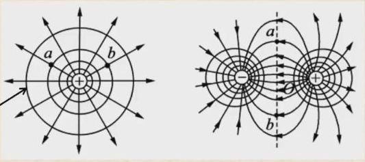
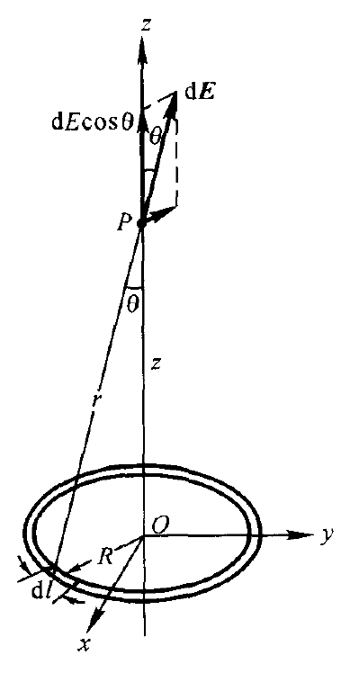
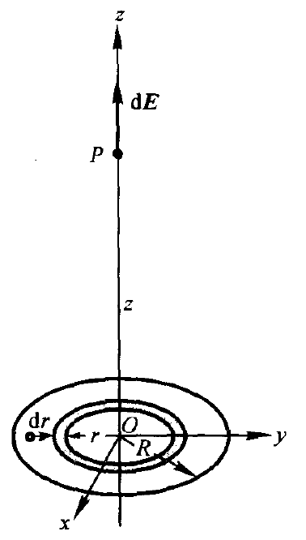
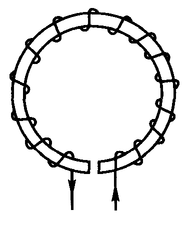

☰ 目录 历年卷 / 大学物理
展开答案与拓展 打印 / 保存 PDF
MIDTERM REVIEW
大学物理期中复习（严大东卷）
大学物理甲Ⅱ · 严大东命题风格期中复习学习讲义（2026—2027
秋冬期中，第 9—14 章）
定义 定理 结论 例题 易错
这份讲义只为一场考试服务：2026 年 11 月 14
日的《大学物理甲Ⅱ》期中，命题人严大东。他从 2025
年秋冬起接手出卷，一年里出了四套统考卷和若干次小测，风格和 2024
年以前的传统卷差别很大：很少考“背下来就能套”的二级结论，更爱问近似什么时候成立、误差有多大 ，佯谬怎么解释 ，暂态曲线长什么样 ，哪根电阻丝先烧断 。按往年模板刷题，到他的卷子上常常无从下手。
所以本讲义不按教材章节平铺，而按他的出题方式分成 8
个题型池。每池先把需要的知识点讲全（定义、带条件的定理、两三行来历、最小算例），再给固定动作 和易错 （错误做法
→ 错在哪里 →
正确做法），最后是池中全部题目：他出过的原题全收，再配几道同风格的变式。第
9 单元是两份原卷和一份按他的结构命制的预测卷，第 10 单元是概念检查。
用法：先读第 0 单元，知道卷子长什么样；然后按 0.6
节的顺序过各池，遮住解析做题，写全过程；最后用第 9
单元限时模考。提示与解析默认折叠。需要从头理解某个概念时，跟着池首链接回到主讲义
03 大学物理甲2 。
学习路线
单元
内容
他出过的原题
主讲义
0
严大东的卷子：风格、演变与考前作战地图
—
—
1
分区高斯定理、跨界电势积分与等势面
期中计算 1；小测二、三
第 4、6、7 单元
2
精确解与近似解：误差界的定量讨论
期中计算 4；小测四
第 2、16 单元
3
导体、静电屏蔽与电容器的约束和能量
期中选择 1、2；小测一；期末极板力
第 8、9、12 单元
4
电阻的微元积分、电路功率与对称电阻网
期中选择 4、计算 2
第 13、14 单元
5
稳恒磁场、安培环路佯谬与带电粒子运动
期中选择 5、6、7、12
第 15—19
单元
6
电偶极子与磁偶极子、磁介质三类机理
期中选择 9；期末磁铁与线圈
第 20、21
单元
7
电磁感应、涡流积分与 RC/RL 暂态
期中选择 3、8、计算 3；期末互感
第 22、23 单元
8
防擦边速查：第 15 章三条（范围外保底）
期中选择 10、11；期末折射率、坡印亭
—
9
限时模考：两份原卷 + 一份预测卷
全部
—
10
概念检查
—
—
11
来源、答案存疑与勘误
—
—
0 严大东的卷子：风格、演变与考前作战地图
0.1 考试基本信息
项目
内容
时间
2026 年 11 月 14 日（周六）14:00—16:00，120 分钟
形式
闭卷，可带无存储功能的计算器
命题人
严大东（与 2025 秋冬期中、期末相同）
范围
吴泽华《大学物理（中册）》第 9—14
章：真空中的静电场；静电场中的导体与电介质；稳恒电流（含 RC
电路的充放电）；稳恒磁场；磁介质；电磁感应（含自感、互感、RL
暂态与磁场能量）
不考
第 15 章（麦克斯韦方程组与电磁波）。去年期中考到了第 15
章，今年范围缩小到前六章
第 15 章今年明确不考，但去年期中有 3
道选择落在那里，命题人又有“顺手问一句”的习惯，所以第 8
池只做一页速查：位移电流、光速与折射率、坡印亭矢量，考前花 20
分钟过一遍即可，不必投入更多。
0.2 一年四套统考卷与一次小测的结构演变
卷
题型与分值
值得注意的变化
2025—2026 秋冬 甲Ⅱ 期中（2025-11-15）
12 道选择 × 4 = 48（单选、多选混排，多选不全对不得分；第 4 题有 A—E
五个选项）+ 4 道计算 14 + 8 + 10 + 20 = 52
卷首给出
ε 0 \varepsilon_0 μ 0 \mu_0
2025—2026 秋冬 甲Ⅱ 期末（2026-01-10）
8 单选 × 4 = 32 + 5 填空 × 4 = 20 + 6 计算 = 48
取消多选（期中多选争议大）；单选也出现五选项
2025—2026 春夏 甲Ⅰ 期中（2026-05-09）
7 单选 × 4 = 28 + 5 填空 × 4 = 20 + 5 计算 = 52
填空题里出现“会不会？为什么？”的简答式提问；计算题给冗余数据，有天体估算
2025—2026 春夏 甲Ⅰ 期末（2026-06-29）
8 单选 + 5 填空 + 5—6 计算，合计 100
卷首不再给任何物理常数 ；多道题要求从第一性原理自己写出分布或积分
2026—2027 秋冬 甲Ⅱ 阶段性测试(1)（2026-10-15）
2 道单选各 10 分 + 计算 30 分 + 计算 50 分
第三题与 2025 期中计算 1 逐字相同 ；第四题是 2025
期中计算 4 的静电版本
由此对本次期中最合理的预期：约 8 道单选（可能有五选项）+ 约 5
道填空（可能有“为什么”）+ 4—6
道计算 ；卷首可能不给常数 ；计算题里很可能再出现“分区高斯
+ 电势积分”和“精确解 vs 近似解 +
误差界”这两类，因为他已经把它们各用了两次。这是从卷面规律得出的判断，不是命题人的承诺；多选题虽然在期末取消，复习时仍按多选的标准把每个选项想清楚。
0.3 和往年传统卷相比，五个最大的不同
结论 1 · 严大东卷与 2024 年以前期中卷的五个差异
(1) 不考二级结论模板。
往年期中常见“半无限长导线加一段圆弧求圆心
B B V ( x , y , z ) V(x,y,z) 𝐄 \mathbf E
(2) 近似要定量。
不只问“L ≫ a L\gg a
时可以看成无限长”，而问“L / a L/a
大于多少时误差小于 10%”。应对：第 2 池的五步模板。
(3) 选择题考物理图像和佯谬。
螺线管外部环路积分到底是不是零，金属壳接地与否能屏蔽哪一边，回旋加速器的轨道间距怎么变，RC
与 RL 接通后电流怎么变。每个选项都有一个具体的“错因”。
(4) 题源是国外经典教材和他自己的板书。
截头圆锥电阻、太阳能流求
E max E_{\max}
(5) 会重复出题。 小测三与上一年期中计算 1
一字不差，小测四是期中计算 4
换成电场。他出过的题、板书上算过的例子，是最值得逐题吃透的材料。
0.4 八类高概率题型与对应的池
题型
他出过的原题
池
分区高斯定理 + 跨界电势积分
期中计算 1 = 小测三（同心球壳间均匀体电荷，三区电势）
1
精确解 vs 近似解、定量误差界
期中计算 4（有限长导线，10% 与
1%）；小测四（有限长带电棒，10%）
2
导体静电平衡、屏蔽、电容器插板与极板力
期中选择 1、2；小测一；期末极板力
F ∝ V 2 F\propto V^2
3
电阻微元积分、电路功率、对称电阻网
期中计算 2（截头圆锥）；期中选择 4（电桥哪根先熔断）
4
安培环路佯谬、洛伦兹力、回旋加速器、单位制
期中选择 5、6、7、12
5
偶极子在场中的力与力矩、磁介质机理
期中选择 9；期末磁铁旁的线圈
6
涡旋电场与涡流积分、互感、RC/RL 暂态
期中计算 3（铝盘涡流）；期中选择 3、8；期末远距线圈互感
7
第 15 章（今年不考，保底）
期中选择 10、11；期末折射率、导线坡印亭能流
8
0.5 卷面记号与必须记住的常数
他的卷面沿用 Halliday、Young & Freedman
的记号：V V U U 势能 ，A A U U
甲Ⅰ期末起卷首不再给常数，下表要背到能直接写出：
量
数值
真空介电常量
ε 0 = 8.85 × 10 − 12 C 2 / ( N ⋅ m 2 ) \varepsilon_0=8.85\times10^{-12}\,\mathrm{C^2/(N\cdot m^2)} 1 4 π ε 0 = 8.99 × 10 9 N ⋅ m 2 / C 2 \dfrac{1}{4\pi\varepsilon_0}=8.99\times10^9\,\mathrm{N\cdot m^2/C^2}
真空磁导率
μ 0 = 4 π × 10 − 7 N / A 2 ≈ 1.257 × 10 − 6 N / A 2 \mu_0=4\pi\times10^{-7}\,\mathrm{N/A^2}\approx1.257\times10^{-6}\,\mathrm{N/A^2}
真空光速
c = 1 ε 0 μ 0 = 3.00 × 10 8 m / s c=\dfrac{1}{\sqrt{\varepsilon_0\mu_0}}=3.00\times10^8\,\mathrm{m/s}
基本电荷
e = 1.60 × 10 − 19 C e=1.60\times10^{-19}\,\mathrm C
电子质量
m e = 9.11 × 10 − 31 k g m_e=9.11\times10^{-31}\,\mathrm{kg} e / m e = 1.76 × 10 11 C / k g e/m_e=1.76\times10^{11}\,\mathrm{C/kg}
质子质量
m p = 1.67 × 10 − 27 k g m_p=1.67\times10^{-27}\,\mathrm{kg}
铜的自由电子数密度
n ≈ 8.5 × 10 28 m − 3 n\approx8.5\times10^{28}\,\mathrm{m^{-3}}
国际单位制七个基本单位里，电磁学引入的只有安培 ；库仑、伏特、特斯拉都是导出单位。
0.6 考场时间分配与复习顺序
(1) 时间。 按“8 单选 + 5 填空 + 若干计算”估：单选 20
分钟，填空 15 分钟，计算 75 分钟，检查 10
分钟。选择题遇到佯谬类，先逐项写下“对/错 +
一句理由”，不要凭感觉选；五选项题先排除明显违反定律的。计算题里带“讨论”的小问分值往往最高，前两问求出精确式与近似式后，一定要把误差不等式解到数。
(2) 复习顺序（距考试三天）。 第一天：第 1、2
池（两类重复出现的计算题），把期中计算 1、4
和小测四各独立重做一遍。第二天：第 3、4、7
池（导体与电容、电阻与电路、感应与暂态）。第三天上午：第 5、6
池；下午：第 9 单元预测卷限时 120 分钟；晚上：第 10 单元概念检查和第 8
池速查。
(3) 写过程。 每道计算题按“对称性与模型 → 定律 →
积分或方程 → 结果 →
检验”写：说明为什么能用高斯或安培定理（对称性），微元怎么取（切片串联还是同心环并联），积分限从哪到哪；结果至少做一项检验——量纲、极限情况、与已知结论比较。他的评分重视“讨论”，检验写出来就是分数。
0.7 本讲义依据的材料
材料
用途
2025—2026 秋冬《大学物理甲Ⅱ》期中 A 卷扫描件（用户提供）
原题照录，第 1—8 池真题与第 9 单元
CC98 帖 6660025：2026 秋冬阶段性测试(1) 原卷照片
小测四题照录
CC98 帖 6400005、6400113：2025—2026 秋冬甲Ⅱ期末回忆与讨论
期末电磁题（回忆卷，措辞非原文）
CC98 帖 6573428、6500996、6558900、6557947：甲Ⅰ期中、期末回忆卷
卷面结构演变、不给常数、简答式填空
CC98 帖 6391088：2025 秋冬严大东班板书 17 份
板书例题（RC 储能、电阻网、薄电流带、偶极子振动等）
CC98 帖 6630821：答疑截图
“不提倡背二级结论”的原话
CC98 帖 6680769：回旋加速器半径差模拟
课上指出教材插图等间距有误
CC98 帖 6691958、6695188、6688396、6692647
考试范围（第 9—14 章）、时间与命题人确认
所有题目都没有官方答案，讲义中的答案为独立求解，并用脚本逐项复算；有歧义的地方在题下说明，并汇总到第
11 单元。
1 分区高斯定理、跨界电势积分与等势面
本池对应主讲义 高斯定理 、电通量 、电势 、电势梯度 和 环路定理 ，最后借 安培环路定理
说明磁场为什么没有全局标量势。严大东在这一块的出题非常稳定：2025—2026
秋冬期中计算 1 是“同心球壳间均匀带电，求三区电势”，2026
秋冬阶段性测试(1)
第三题把它逐字 再考了一遍；同一张小测的第二题考等势线与电力线、磁力线的性质辨析。两道题合起来就是本池的全部骨架：先用对称性分区求
E E V V E r = − d V / d r E_r=-dV/dr
本池最后要会做的事：任给球、柱、面三种对称的分区电荷（含
ρ = k r n \rho=kr^n E E V V
1.1 知识点
定理 1 · 高斯定理与三种可解对称
真空中任一闭合曲面
S S
∮ S 𝐄 ⋅ d 𝐒 = q in ε 0 , \oint_S \mathbf E\cdot d\mathbf S=\frac{q_{\text{in}}}{\varepsilon_0}, q in q_{\text{in}} S S 𝐄 \mathbf E E E E E
(1)
球对称 （ρ = ρ ( r ) \rho=\rho(r) 取同心球面，E ⋅ 4 π r 2 = q in ( r ) / ε 0 E\cdot4\pi r^2=q_{\text{in}}(r)/\varepsilon_0 E = q in ( r ) 4 π ε 0 r 2 E=\dfrac{q_{\text{in}}(r)}{4\pi\varepsilon_0r^2}
(2)
无限长柱对称 （ρ = ρ ( r ) \rho=\rho(r) r r h h E ⋅ 2 π r h = λ in ( r ) h / ε 0 E\cdot2\pi rh=\lambda_{\text{in}}(r)h/\varepsilon_0 E = λ in ( r ) 2 π ε 0 r E=\dfrac{\lambda_{\text{in}}(r)}{2\pi\varepsilon_0r} λ in \lambda_{\text{in}} r r
(3)
无限大平面对称 （ρ = ρ ( x ) \rho=\rho(x)
且关于
x = 0 x=0 A A ± x \pm x E ⋅ 2 A = q in / ε 0 E\cdot2A=q_{\text{in}}/\varepsilon_0 E = σ in ( x ) 2 ε 0 E=\dfrac{\sigma_{\text{in}}(x)}{2\varepsilon_0} σ in ( x ) \sigma_{\text{in}}(x) − x -x x x
来历：库仑场
∝ 1 / r 2 \propto1/r^2 ∝ r 2 \propto r^2 q / ε 0 q/\varepsilon_0
算例：半径
R R Q Q r < R r<R q in = Q r 3 / R 3 q_{\text{in}}=Q r^3/R^3 E = Q r 4 π ε 0 R 3 E=\dfrac{Qr}{4\pi\varepsilon_0R^3} r > R r>R E = Q 4 π ε 0 r 2 E=\dfrac{Q}{4\pi\varepsilon_0r^2} r = R r=R
定义 1 · 电势、参考点与分段积分
静电场是保守场（∮ 𝐄 ⋅ d 𝐥 = 0 \oint\mathbf E\cdot d\mathbf l=0 因此可以定义
V ( P ) = ∫ P P 0 𝐄 ⋅ d 𝐥 , V(P)=\int_P^{P_0}\mathbf E\cdot d\mathbf l, P 0 P_0
V ( r ) = V ( r ref ) + ∫ r r ref E ( s ) d s . V(r)=V(r_{\text{ref}})+\int_r^{r_{\text{ref}}}E(s)\,ds . 分区时从参考点一侧开始，一区一区往里推 ：每一区的电势
= 外侧边界的电势 + 本区内的那一段积分。只要
E E E E V V
参考点的选法：电荷分布在有限区域时取无穷远
V ( ∞ ) = 0 V(\infty)=0 ∫ ∞ E d s \int^\infty E\,ds
算例：上面的均匀带电球体，r > R r>R V = Q 4 π ε 0 r V=\dfrac{Q}{4\pi\varepsilon_0r} r < R r<R V = Q 4 π ε 0 R + ∫ r R Q s 4 π ε 0 R 3 d s = Q ( 3 R 2 − r 2 ) 8 π ε 0 R 3 V=\dfrac{Q}{4\pi\varepsilon_0R}+\int_r^R\dfrac{Qs}{4\pi\varepsilon_0R^3}ds=\dfrac{Q(3R^2-r^2)}{8\pi\varepsilon_0R^3} 3 2 \tfrac32
结论 2 · 两条反推检验：梯度与泊松方程
(1) 梯度检验 ：球、柱对称时
E r = − d V d r E_r=-\dfrac{dV}{dr} E x = − d V d x E_x=-\dfrac{dV}{dx} V V E E
(2) 电荷检验 （从
E E V V ρ \rho ∇ ⋅ 𝐄 = ρ / ε 0 \nabla\cdot\mathbf E=\rho/\varepsilon_0
ρ = ε 0 r 2 d d r ( r 2 E r ) , ρ = ε 0 r d d r ( r E r ) , ρ = ε 0 d E x d x . \rho=\frac{\varepsilon_0}{r^2}\frac{d}{dr}\left(r^2E_r\right),\qquad \rho=\frac{\varepsilon_0}{r}\frac{d}{dr}\left(rE_r\right),\qquad \rho=\varepsilon_0\frac{dE_x}{dx}. 用法：拿到一个
V ( r ) V(r) E r = − d V / d r E_r=-dV/dr ρ \rho r → 0 r\to0 q in ( r ) = 4 π ε 0 r 2 E r q_{\text{in}}(r)=4\pi\varepsilon_0r^2E_r
算例：V = ρ 0 6 ε 0 ( 3 R 2 − r 2 ) V=\dfrac{\rho_0}{6\varepsilon_0}(3R^2-r^2) r < R r<R E r = ρ 0 r 3 ε 0 E_r=\dfrac{\rho_0r}{3\varepsilon_0} ε 0 r 2 d d r ( ρ 0 r 3 3 ε 0 ) = ρ 0 \dfrac{\varepsilon_0}{r^2}\dfrac{d}{dr}\left(\dfrac{\rho_0r^3}{3\varepsilon_0}\right)=\rho_0
结论 3 · 非均匀球体
ρ = k r n \rho=kr^n
半径
R R ρ = k r n \rho=kr^n n > − 3 n>-3
q in ( r ) = ∫ 0 r k s n 4 π s 2 d s = 4 π k r n + 3 n + 3 , E ( r < R ) = k r n + 1 ( n + 3 ) ε 0 , E ( r > R ) = k R n + 3 ( n + 3 ) ε 0 r 2 . q_{\text{in}}(r)=\int_0^r k s^n\,4\pi s^2\,ds=\frac{4\pi k\,r^{n+3}}{n+3},\qquad E(r<R)=\frac{k\,r^{n+1}}{(n+3)\varepsilon_0},\qquad E(r>R)=\frac{kR^{n+3}}{(n+3)\varepsilon_0r^2}. 电势（n ≠ − 2 n\neq-2
V ( r > R ) = k R n + 3 ( n + 3 ) ε 0 r , V ( r < R ) = k R n + 2 ( n + 3 ) ε 0 + k ( R n + 2 − r n + 2 ) ( n + 2 ) ( n + 3 ) ε 0 . V(r>R)=\frac{kR^{n+3}}{(n+3)\varepsilon_0r},\qquad V(r<R)=\frac{kR^{n+2}}{(n+3)\varepsilon_0}+\frac{k\left(R^{n+2}-r^{n+2}\right)}{(n+2)(n+3)\varepsilon_0}. n > − 2 n>-2 V ( 0 ) = k R n + 2 ( n + 2 ) ε 0 V(0)=\dfrac{kR^{n+2}}{(n+2)\varepsilon_0} n = 0 n=0 V ( 0 ) = ρ R 2 2 ε 0 V(0)=\dfrac{\rho R^2}{2\varepsilon_0} n = − 1 n=-1 E = k 2 ε 0 E=\dfrac{k}{2\varepsilon_0} 与
r r ；n = − 2 n=-2 V V V ( r < R ) = k ε 0 ( 1 + ln R r ) V(r<R)=\dfrac{k}{\varepsilon_0}\left(1+\ln\dfrac Rr\right) E = k / ( ε 0 r ) E=k/(\varepsilon_0r)
记忆方法：E E ρ \rho V V
例 1 · 体密度
ρ = k / r \rho=k/r
半径
R R ρ = k / r \rho=k/r k > 0 k>0 E E V V
解：q in ( r ) = ∫ 0 r k s 4 π s 2 d s = 2 π k r 2 q_{\text{in}}(r)=\int_0^r\dfrac ks\,4\pi s^2ds=2\pi kr^2 Q = 2 π k R 2 Q=2\pi kR^2 E = 2 π k r 2 4 π ε 0 r 2 = k 2 ε 0 E=\dfrac{2\pi kr^2}{4\pi\varepsilon_0r^2}=\dfrac{k}{2\varepsilon_0} r r E = k R 2 2 ε 0 r 2 E=\dfrac{kR^2}{2\varepsilon_0r^2} V = k R 2 2 ε 0 r V=\dfrac{kR^2}{2\varepsilon_0r} V ( R ) = k R 2 ε 0 V(R)=\dfrac{kR}{2\varepsilon_0} V = k R 2 ε 0 + ∫ r R k 2 ε 0 d s = k ( 2 R − r ) 2 ε 0 V=\dfrac{kR}{2\varepsilon_0}+\int_r^R\dfrac{k}{2\varepsilon_0}ds=\dfrac{k(2R-r)}{2\varepsilon_0} V ( 0 ) = k R ε 0 V(0)=\dfrac{kR}{\varepsilon_0} n = − 1 n=-1 − d V / d r = k / ( 2 ε 0 ) -dV/dr=k/(2\varepsilon_0) ε 0 r 2 d d r ( r 2 ⋅ k 2 ε 0 ) = k r \dfrac{\varepsilon_0}{r^2}\dfrac{d}{dr}\left(r^2\cdot\dfrac{k}{2\varepsilon_0}\right)=\dfrac kr “| E | |E|
均匀”不等于“匀强电场”。
结论 4 ·
d d E ∝ r 1 − d E\propto r^{1-d}
在
d d ε 0 \varepsilon_0 d − 1 d-1 ∝ r d − 1 \propto r^{d-1}
E ∝ 1 r d − 1 = r 1 − d , V ∝ { r 2 − d , d ≥ 3 , − ln r , d = 2 , − | x | , d = 1 . E\propto\frac{1}{r^{d-1}}=r^{1-d},\qquad V\propto\begin{cases}r^{2-d}, & d\ge3,\\ -\ln r, & d=2,\\ -|x|, & d=1.\end{cases} 回到三维看：无限长均匀线电荷沿轴向没有任何变化，相当于二维空间里的点电荷，E ∝ 1 / r E\propto1/r E E
这张表同时回答了“什么时候不能取无穷远为零点”：只有
d ≥ 3 d\ge3 V ( ∞ ) V(\infty) ∝ − ln r \propto-\ln r ∝ − | x | \propto-|x|
反过来，高斯定理与“点电荷场
∝ 1 / r 2 \propto1/r^2
定理 2 · 等势面的四条性质
(1)
等势面处处与电力线垂直 （𝐄 ≠ 0 \mathbf E\neq0
处）。在等势面内沿任一位移
d 𝐥 d\mathbf l d V = − 𝐄 ⋅ d 𝐥 = 0 dV=-\mathbf E\cdot d\mathbf l=0 𝐄 ⟂ d 𝐥 \mathbf E\perp d\mathbf l 𝐄 = − ∇ V \mathbf E=-\nabla V
(2)
电力线指向电势降低的方向，且沿法向电势降得最快：E = − d V d n E=-\dfrac{dV}{dn}
(3) 等势面密集处场强大，前提是相邻等势面的电势差
Δ V \Delta V 。由
E ≈ Δ V / Δ n E\approx\Delta V/\Delta n Δ n ≈ Δ V / E \Delta n\approx\Delta V/E Δ V \Delta V “E E
大”。如果作图者随意挑几个电势值画线，密集与否不说明任何事。
(4) 不同电势的等势面不相交；同一等势面可以在
𝐄 = 0 \mathbf E=0
算例：点电荷
q q Δ V \Delta V k k r k = q 4 π ε 0 k Δ V r_k=\dfrac{q}{4\pi\varepsilon_0k\Delta V} r k − r k + 1 = q 4 π ε 0 Δ V k ( k + 1 ) ≈ Δ V E ( r k ) r_k-r_{k+1}=\dfrac{q}{4\pi\varepsilon_0\Delta V\,k(k+1)}\approx\dfrac{\Delta V}{E(r_k)} k k E ∝ 1 / r 2 E\propto1/r^2

左：点电荷的电力线（射线）与等势面（同心圆）；右：电偶极子的电力线与等势线。两图中电力线都处处与等势线正交，a、b
为图中标出的两点。
结论 5 ·
磁场没有全局标量势，无电流区域可以定义磁标势
安培环路定理
∮ 𝐁 ⋅ d 𝐥 = μ 0 I in \oint\mathbf B\cdot d\mathbf l=\mu_0I_{\text{in}} 不存在 处处满足
𝐁 = − ∇ φ \mathbf B=-\nabla\varphi φ \varphi ∇ × 𝐁 = μ 0 𝐉 \nabla\times\mathbf B=\mu_0\mathbf J 𝐁 \mathbf B
但在没有电流的区域 ，∇ × 𝐁 = 0 \nabla\times\mathbf B=0 φ m \varphi_m 𝐁 = − μ 0 ∇ φ m \mathbf B=-\mu_0\nabla\varphi_m φ m \varphi_m φ m = − I θ 2 π \varphi_m=-\dfrac{I\theta}{2\pi} I I
同样的道理也适用于感生电场：∮ 𝐄 感 ⋅ d 𝐥 = − d Φ / d t ≠ 0 \oint\mathbf E_{\text{感}}\cdot d\mathbf l=-d\Phi/dt\neq0
1.2 固定动作
结论 6 · 固定动作：分区高斯 + 跨界电势积分
(1)
定对称、分区 ：判断是球、柱还是面对称；按电荷分布的边界把空间切成若干区，从里到外编号。
(2) 逐区求
E E 每区写
q in q_{\text{in}} λ in \lambda_{\text{in}} σ in \sigma_{\text{in}}
(3)
定参考点 ：有限分布取无穷远；无限长、无限大取轴线、中面或题目指定的点。
(4)
从参考点一侧往另一侧推 ：V 本区 ( r ) = V ( 靠参考点那侧的边界 ) + ∫ r 边界 E d s V_{\text{本区}}(r)=V(\text{靠参考点那侧的边界})+\int_r^{\text{边界}}E\,ds
(5)
三项检验 ：边界连续（把边界值代入相邻两区公式应相等）；− d V / d r -dV/dr E E → 0 \to0 → 0 \to0 r → ∞ r\to\infty [ ρ r 2 / ε 0 ] = V [\rho r^2/\varepsilon_0]=\mathrm V
1.3 易错
易错 · 分段积分时丢掉外层边界的电势
错误做法：求
r 1 < r < r 2 r_1<r<r_2 V = ∫ r r 2 E d s V=\int_r^{r_2}E\,ds
错在哪里：这是以
r 2 r_2 r = r 2 r=r_2
正确做法：V ( r ) = V ( r 2 ) + ∫ r r 2 E d s V(r)=V(r_2)+\int_r^{r_2}E\,ds V ( r 2 ) V(r_2)
易错 · 场强为零的区域电势也为零
错误做法：空腔
r < r 1 r<r_1 E = 0 E=0 V = 0 V=0
错在哪里：E = 0 E=0 V V
正确做法：V ( r < r 1 ) = V ( r 1 ) V(r<r_1)=V(r_1)
易错 · 无限长、无限大分布也取无穷远为零点
错误做法：无限长带电圆柱外
V = ∫ r ∞ λ 2 π ε 0 s d s V=\int_r^\infty\dfrac{\lambda}{2\pi\varepsilon_0s}ds
错在哪里：积分
∝ ln s | r ∞ \propto\ln s\big|_r^\infty d = 2 d=2 V ∝ − ln r V\propto-\ln r
正确做法：取轴线、某个半径
r 0 r_0 V ( r ) = − λ 2 π ε 0 ln r r 0 V(r)=-\dfrac{\lambda}{2\pi\varepsilon_0}\ln\dfrac{r}{r_0}
易错 · 把“等势线密”无条件等同于“场强大”
错误做法：看到图上某处等势线挤在一起，就断定那里场强大。
错在哪里：间距
Δ n ≈ Δ V / E \Delta n\approx\Delta V/E Δ V \Delta V
正确做法：先确认作图约定（等电势差）；没有这个约定时，用
E = | Δ V | / Δ n E=|\Delta V|/\Delta n
1.4 池中全部题目
1.5 同心球壳间均匀带电的三区电势
练习 · 先独立作答
【真题】2025—2026 秋冬期中 · 计算 1（14 分），同 2026
秋冬阶段性测试(1) 第三题 · 建议用时 15 分钟
半径各为
r 1 r_1 r 2 r_2 r 1 < r 2 r_1<r_2 ρ \rho V V r r
(1)
r > r 2 r>r_2 r 2 > r > r 1 r_2>r>r_1 r < r 1 r<r_1
（阶段性测试版本在“非导电物质”后加了“（不考虑其极化）”，分值 30
分，其余逐字相同。）
提示
球对称，三区分别用高斯定理求
E E E = 0 E=0 V V
解析
定模型 ：电荷球对称分布，取同心球面为高斯面；电荷局限在有限区域，取
V ( ∞ ) = 0 V(\infty)=0
求场 ：
r < r 1 r<r_1 q in = 0 q_{\text{in}}=0 E = 0 E=0
r 1 < r < r 2 r_1<r<r_2 q in = 4 3 π ρ ( r 3 − r 1 3 ) q_{\text{in}}=\dfrac43\pi\rho\left(r^3-r_1^3\right) E = ρ ( r 3 − r 1 3 ) 3 ε 0 r 2 E=\dfrac{\rho\left(r^3-r_1^3\right)}{3\varepsilon_0r^2}
r > r 2 r>r_2 q in = Q = 4 3 π ρ ( r 2 3 − r 1 3 ) q_{\text{in}}=Q=\dfrac43\pi\rho\left(r_2^3-r_1^3\right) E = ρ ( r 2 3 − r 1 3 ) 3 ε 0 r 2 E=\dfrac{\rho\left(r_2^3-r_1^3\right)}{3\varepsilon_0r^2}
求势 （从外往里）：
(1)
r > r 2 r>r_2
V = ∫ r ∞ E d s = ρ ( r 2 3 − r 1 3 ) 3 ε 0 r . V=\int_r^\infty E\,ds=\frac{\rho\left(r_2^3-r_1^3\right)}{3\varepsilon_0r}. (2)
r 1 < r < r 2 r_1<r<r_2
V = V ( r 2 ) + ∫ r r 2 ρ 3 ε 0 ( s − r 1 3 s 2 ) d s = ρ ( r 2 3 − r 1 3 ) 3 ε 0 r 2 + ρ 3 ε 0 [ r 2 2 − r 2 2 + r 1 3 ( 1 r 2 − 1 r ) ] = ρ 6 ε 0 ( 3 r 2 2 − r 2 − 2 r 1 3 r ) . \begin{aligned}V&=V(r_2)+\int_r^{r_2}\frac{\rho}{3\varepsilon_0}\left(s-\frac{r_1^3}{s^2}\right)ds\\&=\frac{\rho\left(r_2^3-r_1^3\right)}{3\varepsilon_0r_2}+\frac{\rho}{3\varepsilon_0}\left[\frac{r_2^2-r^2}{2}+r_1^3\left(\frac1{r_2}-\frac1r\right)\right]\\&=\frac{\rho}{6\varepsilon_0}\left(3r_2^2-r^2-\frac{2r_1^3}{r}\right).\end{aligned} (3)
r < r 1 r<r_1 E = 0 E=0 V V V ( r 1 ) V(r_1)
V = ρ 6 ε 0 ( 3 r 2 2 − r 1 2 − 2 r 1 2 ) = ρ 2 ε 0 ( r 2 2 − r 1 2 ) . V=\frac{\rho}{6\varepsilon_0}\left(3r_2^2-r_1^2-2r_1^2\right)=\frac{\rho}{2\varepsilon_0}\left(r_2^2-r_1^2\right). 另一种做法（叠加法，用来核对） ：把带电层切成半径
s s d s ds d q = 4 π ρ s 2 d s dq=4\pi\rho s^2ds d q 4 π ε 0 r \dfrac{dq}{4\pi\varepsilon_0r} d q 4 π ε 0 s \dfrac{dq}{4\pi\varepsilon_0s} d V = d q 4 π ε 0 max ( r , s ) dV=\dfrac{dq}{4\pi\varepsilon_0\max(r,s)} r < r 1 r<r_1 V = ∫ r 1 r 2 ρ s 2 ε 0 s d s = ρ 2 ε 0 ( r 2 2 − r 1 2 ) V=\int_{r_1}^{r_2}\dfrac{\rho s^2}{\varepsilon_0s}ds=\dfrac{\rho}{2\varepsilon_0}(r_2^2-r_1^2) r 1 < r < r 2 r_1<r<r_2 V = ρ ε 0 r ∫ r 1 r s 2 d s + ρ ε 0 ∫ r r 2 s d s V=\dfrac{\rho}{\varepsilon_0r}\int_{r_1}^{r}s^2ds+\dfrac{\rho}{\varepsilon_0}\int_r^{r_2}s\,ds
检验 ：
边界连续：(2) 在
r = r 2 r=r_2 ρ 6 ε 0 ( 2 r 2 2 − 2 r 1 3 r 2 ) = ρ ( r 2 3 − r 1 3 ) 3 ε 0 r 2 \dfrac{\rho}{6\varepsilon_0}\left(2r_2^2-\dfrac{2r_1^3}{r_2}\right)=\dfrac{\rho(r_2^3-r_1^3)}{3\varepsilon_0r_2} r = r 1 r=r_1
梯度：(2) 求导
− d V d r = ρ 6 ε 0 ( 2 r − 2 r 1 3 r 2 ) = ρ ( r 3 − r 1 3 ) 3 ε 0 r 2 -\dfrac{dV}{dr}=\dfrac{\rho}{6\varepsilon_0}\left(2r-\dfrac{2r_1^3}{r^2}\right)=\dfrac{\rho(r^3-r_1^3)}{3\varepsilon_0r^2}
极限：r 1 → 0 r_1\to0 ρ 6 ε 0 ( 3 r 2 2 − r 2 ) \dfrac{\rho}{6\varepsilon_0}(3r_2^2-r^2)
考点 ：分区高斯定理；跨界电势积分（每一区都加外侧边界电势）；空腔内
E = 0 E=0 V = V ( r 1 ) ≠ 0 V=V(r_1)\neq0
追问 ：若外球面
r = r 2 r=r_2 V ( r 2 ) = 0 V(r_2)=0 E = 0 E=0 V = 0 V=0 V ( r 2 ) = ρ ( r 2 3 − r 1 3 ) 3 ε 0 r 2 V(r_2)=\dfrac{\rho(r_2^3-r_1^3)}{3\varepsilon_0r_2}
1.6 等势线、电力线与磁力线的性质辨析
练习 · 先独立作答
【小测】2026 秋冬阶段性测试(1) · 第二题（单选，10 分）· 建议用时
3 分钟
以下说法哪一种是正确的？
A. 等势线一定与电力线垂直 B. 等势线密集的地方电场强度大 C.
磁力线密集的地方磁场强度大 D. 关于磁力线，我们课上也讲过一种等势线
提示
单选题里每个选项都“看着对”时，逐项问：这句话是从场的定义推出来的，还是依赖某种画图约定？是否在任何区域都成立？
解析
答案 A 。
A
对 ：𝐄 = − ∇ V \mathbf E=-\nabla V d V = − 𝐄 ⋅ d 𝐥 = 0 dV=-\mathbf E\cdot d\mathbf l=0 𝐄 ≠ 0 \mathbf E\neq0 𝐄 = 0 \mathbf E=0
B 依赖约定 ：间距
Δ n ≈ Δ V / E \Delta n\approx\Delta V/E
C 依赖约定，而且对平面示意图不严格成立 ：“密度
∝ \propto ∝ B \propto B N N N 4 π r 2 ∝ E \dfrac{N}{4\pi r^2}\propto E N N N 2 π r ∝ 1 r \dfrac{N}{2\pi r}\propto\dfrac1r E ∝ 1 r 2 E\propto\dfrac1{r^2} 𝐇 \mathbf H 𝐁 \mathbf B
D 在有电流区域不成立 ：磁场满足
∮ 𝐁 ⋅ d 𝐥 = μ 0 I in \oint\mathbf B\cdot d\mathbf l=\mu_0I_{\text{in}} φ m \varphi_m 𝐁 = − μ 0 ∇ φ m \mathbf B=-\mu_0\nabla\varphi_m
为什么 A 是唯一无条件成立的 ：B、C
是关于“图”的陈述，真假取决于作图约定；D
是关于磁场的陈述，只在局部区域成立；A 是关于“场”的陈述，由
𝐄 = − ∇ V \mathbf E=-\nabla V
考点 ：等势面与电力线的正交性；等势面疏密的前提（等电势差）；场线密度约定的适用范围；磁场的有旋性与磁标势的适用区域。
追问 ：变化磁场产生的感生电场有没有等势线？答：没有。∮ 𝐄 感 ⋅ d 𝐥 = − d Φ B / d t ≠ 0 \oint\mathbf E_{\text{感}}\cdot d\mathbf l=-d\Phi_B/dt\neq0
1.7 体密度
ρ = k r \rho=kr
练习 · 先独立作答
【变式】由期中计算 1 改编：非均匀密度 + 接地参考 · 建议用时 15
分钟
半径
a a ρ = k r \rho=kr k > 0 k>0 r r b > a b>a r > b r>b a < r < b a<r<b r < a r<a
提示
q in q_{\text{in}} V ( b ) V(b) E = 0 E=0
解析
定模型 ：球对称。总电荷
Q = ∫ 0 a k r ⋅ 4 π r 2 d r = π k a 4 Q=\int_0^akr\cdot4\pi r^2dr=\pi ka^4 − Q -Q E = 0 E=0 V ( b ) = 0 V(b)=0
求场 ：r < a r<a q in = π k r 4 q_{\text{in}}=\pi kr^4 E = π k r 4 4 π ε 0 r 2 = k r 2 4 ε 0 E=\dfrac{\pi kr^4}{4\pi\varepsilon_0r^2}=\dfrac{kr^2}{4\varepsilon_0} n = 1 n=1 a < r < b a<r<b E = Q 4 π ε 0 r 2 = k a 4 4 ε 0 r 2 E=\dfrac{Q}{4\pi\varepsilon_0r^2}=\dfrac{ka^4}{4\varepsilon_0r^2} r > b r>b q in = Q − Q = 0 q_{\text{in}}=Q-Q=0 E = 0 E=0
求势 （参考点在
r = b r=b
(1)
r > b r>b V = 0 V=0
(2)
a < r < b a<r<b
V = 0 + ∫ r b k a 4 4 ε 0 s 2 d s = k a 4 4 ε 0 ( 1 r − 1 b ) . V=0+\int_r^b\frac{ka^4}{4\varepsilon_0s^2}ds=\frac{ka^4}{4\varepsilon_0}\left(\frac1r-\frac1b\right). (3)
r < a r<a
V = V ( a ) + ∫ r a k s 2 4 ε 0 d s = k a 4 4 ε 0 ( 1 a − 1 b ) + k ( a 3 − r 3 ) 12 ε 0 . V=V(a)+\int_r^a\frac{ks^2}{4\varepsilon_0}ds=\frac{ka^4}{4\varepsilon_0}\left(\frac1a-\frac1b\right)+\frac{k\left(a^3-r^3\right)}{12\varepsilon_0}. 球心
V ( 0 ) = k a 3 3 ε 0 − k a 4 4 ε 0 b V(0)=\dfrac{ka^3}{3\varepsilon_0}-\dfrac{ka^4}{4\varepsilon_0b}
不接地比较 ：不接地、原不带电的薄壳内表面
− Q -Q + Q +Q V ( b ) = Q 4 π ε 0 b = k a 4 4 ε 0 b V(b)=\dfrac{Q}{4\pi\varepsilon_0b}=\dfrac{ka^4}{4\varepsilon_0b} V ( 0 ) = k a 3 3 ε 0 V(0)=\dfrac{ka^3}{3\varepsilon_0} V ( 0 ) = k R n + 2 ( n + 2 ) ε 0 V(0)=\dfrac{kR^{n+2}}{(n+2)\varepsilon_0} n = 1 n=1 R = a R=a
检验 ：r = a r=a − d V / d r -dV/dr k r 2 4 ε 0 \dfrac{kr^2}{4\varepsilon_0} b → ∞ b\to\infty
考点 ：非均匀体密度的
q in q_{\text{in}}
练习 · 先独立作答
【变式】期中计算 1 的柱对称版本 · 建议用时 12 分钟
两个无限长同轴圆柱面，半径
a < b a<b ρ \rho V ( r ) V(r)
提示
柱面高斯定理用单位长度电荷
λ in ( r ) \lambda_{\text{in}}(r) r < a r<a E = 0 E=0
解析
定模型 ：柱对称，取同轴、长
h h ∝ ln r \propto\ln r （d = 2 d=2
的点电荷）；按题意取轴线。
求场 ：r < a r<a E = 0 E=0 a < r < b a<r<b λ in = ρ π ( r 2 − a 2 ) \lambda_{\text{in}}=\rho\pi(r^2-a^2) E = ρ ( r 2 − a 2 ) 2 ε 0 r E=\dfrac{\rho(r^2-a^2)}{2\varepsilon_0r} r > b r>b λ = ρ π ( b 2 − a 2 ) \lambda=\rho\pi(b^2-a^2) E = ρ ( b 2 − a 2 ) 2 ε 0 r E=\dfrac{\rho(b^2-a^2)}{2\varepsilon_0r}
求势 （从轴线往外推，V ( r ) = V ( r 内 ) − ∫ r 内 r E d s V(r)=V(r_{\text{内}})-\int_{r_{\text{内}}}^rE\,ds
r < a r<a V = 0 V=0
a < r < b a<r<b
V = − ∫ a r ρ 2 ε 0 ( s − a 2 s ) d s = − ρ 2 ε 0 ( r 2 − a 2 2 − a 2 ln r a ) . V=-\int_a^r\frac{\rho}{2\varepsilon_0}\left(s-\frac{a^2}{s}\right)ds=-\frac{\rho}{2\varepsilon_0}\left(\frac{r^2-a^2}{2}-a^2\ln\frac ra\right). r > b r>b
V = V ( b ) − ρ ( b 2 − a 2 ) 2 ε 0 ln r b , V ( b ) = − ρ 2 ε 0 ( b 2 − a 2 2 − a 2 ln b a ) . V=V(b)-\frac{\rho(b^2-a^2)}{2\varepsilon_0}\ln\frac rb,\qquad V(b)=-\frac{\rho}{2\varepsilon_0}\left(\frac{b^2-a^2}{2}-a^2\ln\frac ba\right). 检验 ：− d V / d r -dV/dr ρ 2 ε 0 ( r − a 2 r ) \dfrac{\rho}{2\varepsilon_0}\left(r-\dfrac{a^2}{r}\right) ρ > 0 \rho>0 V ( b ) < 0 V(b)<0 r → ∞ r\to\infty V → − ∞ V\to-\infty a → 0 a\to0 V = − ρ r 2 4 ε 0 V=-\dfrac{\rho r^2}{4\varepsilon_0}
考点 ：柱对称分区高斯；参考点在有限远处；对数电势。
追问 ：内外柱面之间的电势差
V ( a ) − V ( b ) V(a)-V(b) ρ 2 ε 0 ( b 2 − a 2 2 − a 2 ln b a ) \dfrac{\rho}{2\varepsilon_0}\left(\dfrac{b^2-a^2}{2}-a^2\ln\dfrac ba\right) x = b / a > 1 x=b/a>1 1 2 ( x 2 − 1 ) − ln x \tfrac12(x^2-1)-\ln x x = 1 x=1 x − 1 / x > 0 x-1/x>0
1.9 厚
d d
练习 · 先独立作答
【变式】平面对称分区，d d
无限大平板厚
d d ρ \rho x = 0 x=0 E ( x ) E(x) V ( x ) V(x) V ( x ) V(x)
提示
两底在
± x \pm x | x | |x|
解析
定模型 ：电荷关于中面对称，E E ± x \pm x E x ( − x ) = − E x ( x ) E_x(-x)=-E_x(x) A A ± x \pm x
求场 ：| x | < d / 2 |x|<d/2 E ⋅ 2 A = ρ ⋅ 2 | x | A ε 0 E\cdot2A=\dfrac{\rho\cdot2|x|A}{\varepsilon_0} E x = ρ x ε 0 E_x=\dfrac{\rho x}{\varepsilon_0} | x | > d / 2 |x|>d/2 E ⋅ 2 A = ρ d A ε 0 E\cdot2A=\dfrac{\rho dA}{\varepsilon_0} E = ρ d 2 ε 0 E=\dfrac{\rho d}{2\varepsilon_0} （ρ > 0 \rho>0
求势 ：板内
V = − ∫ 0 x ρ s ε 0 d s = − ρ x 2 2 ε 0 V=-\int_0^x\dfrac{\rho s}{\varepsilon_0}ds=-\dfrac{\rho x^2}{2\varepsilon_0} V ( ± d / 2 ) = − ρ d 2 8 ε 0 V(\pm d/2)=-\dfrac{\rho d^2}{8\varepsilon_0}
V = − ρ d 2 8 ε 0 − ρ d 2 ε 0 ( | x | − d 2 ) = ρ d 2 8 ε 0 − ρ d | x | 2 ε 0 . V=-\frac{\rho d^2}{8\varepsilon_0}-\frac{\rho d}{2\varepsilon_0}\left(|x|-\frac d2\right)=\frac{\rho d^2}{8\varepsilon_0}-\frac{\rho d|x|}{2\varepsilon_0}. V ( x ) V(x) 相切 （斜率都是
∓ ρ d 2 ε 0 \mp\dfrac{\rho d}{2\varepsilon_0} E E
检验 ：− d V / d x -dV/dx ρ x ε 0 \dfrac{\rho x}{\varepsilon_0} ρ d 2 ε 0 sgn x \dfrac{\rho d}{2\varepsilon_0}\operatorname{sgn}x ε 0 d E x / d x = ρ \varepsilon_0\,dE_x/dx=\rho d → 0 d\to0 ρ d = σ \rho d=\sigma V → − σ | x | 2 ε 0 V\to-\dfrac{\sigma|x|}{2\varepsilon_0}
考点 ：平面对称高斯；E E V V
1.10 由电势
V ( r ) = A r e − r / a V(r)=\dfrac{A}{r}e^{-r/a}
练习 · 先独立作答
【变式】Purcell/Griffiths 风格的反推题：从
V V ρ \rho
某球对称电荷分布产生的电势为
V ( r ) = A r e − r / a V(r)=\dfrac{A}{r}e^{-r/a} A > 0 A>0 a > 0 a>0 E ( r ) E(r) r r q in ( r ) q_{\text{in}}(r) ρ ( r ) \rho(r)
提示
先求
E r = − d V / d r E_r=-dV/dr q in = 4 π ε 0 r 2 E r q_{\text{in}}=4\pi\varepsilon_0r^2E_r r → 0 r\to0 q in q_{\text{in}}
解析
(1)
E r = − d V d r = A e − r / a ( 1 r 2 + 1 a r ) E_r=-\dfrac{dV}{dr}=Ae^{-r/a}\left(\dfrac1{r^2}+\dfrac1{ar}\right)
(2) 由球面高斯定理：
q in ( r ) = 4 π ε 0 r 2 E r = 4 π ε 0 A e − r / a ( 1 + r a ) . q_{\text{in}}(r)=4\pi\varepsilon_0r^2E_r=4\pi\varepsilon_0A\,e^{-r/a}\left(1+\frac ra\right). (3)
r → 0 r\to0 q in → 4 π ε 0 A ≠ 0 q_{\text{in}}\to4\pi\varepsilon_0A\neq0 q 0 = 4 π ε 0 A q_0=4\pi\varepsilon_0A r > 0 r>0
ρ = 1 4 π r 2 d q in d r = 1 4 π r 2 ⋅ 4 π ε 0 A e − r / a [ − 1 a ( 1 + r a ) + 1 a ] = − ε 0 A a 2 e − r / a r , \rho=\frac{1}{4\pi r^2}\frac{dq_{\text{in}}}{dr}=\frac{1}{4\pi r^2}\cdot4\pi\varepsilon_0A\,e^{-r/a}\left[-\frac1a\left(1+\frac ra\right)+\frac1a\right]=-\frac{\varepsilon_0A}{a^2}\frac{e^{-r/a}}{r}, 是一团负电荷（“电子云”）。
(4)
r → ∞ r\to\infty q in → 0 q_{\text{in}}\to0 ∫ 0 ∞ ρ 4 π r 2 d r = − 4 π ε 0 A a 2 ∫ 0 ∞ r e − r / a d r = − 4 π ε 0 A \int_0^\infty\rho\,4\pi r^2dr=-\dfrac{4\pi\varepsilon_0A}{a^2}\int_0^\infty re^{-r/a}dr=-4\pi\varepsilon_0A
检验 ：a → ∞ a\to\infty V → A / r V\to A/r r ≪ a r\ll a V ≈ A / r V\approx A/r r ≫ a r\gg a V V
考点 ：E = − d V / d r E=-dV/dr q in ( r → 0 ) q_{\text{in}}(r\to0) q in ( ∞ ) q_{\text{in}}(\infty) ρ = − ε 0 ∇ 2 V \rho=-\varepsilon_0\nabla^2V r > 0 r>0
2 精确解与近似解：误差界的定量讨论
本池对应主讲义 库仑定律与连续带电体 、电场强度 、高斯定理 、电势 、毕奥—萨伐尔定律 与 安培环路定理 。如果整张严大东试卷只能挑一类压轴计算题反复操练，非本池莫属：2025—2026
秋冬期中压轴大题（计算 4，20 分）考的是“长为
L L 10 % 10\% 1 % 1\% L / a L/a L L 10 % 10\% d / L d/L
为什么严大东如此偏爱“精确解 vs 近似解 +
误差界”？因为“无限长导线”“无限大平面”“点电荷”“磁偶极子”全都是极限理想模型。物理学家关心的是：真实系统是有限的，离得多近才算“无限大”？离得多远才算“点”或“偶极子”？套用理想公式时究竟高估还是低估？偏离了百分之几？
本池最后要会做的事：任给一个有限尺度电磁系统，先用微元积分求严格解，再用对称性或极限写近似解，把两者比值化为单一无量纲小参量
ξ \xi 精确解不等式 与一阶泰勒展开 两套阈值，并说明近似偏大还是偏小的物理原因。
2.1 知识点
定义 2 · 理想化近似、小参量与相对误差的两种口径
真实带电体或载流体的几何尺度记为
L L R R r r a , d , z a,d,z 小参量
ξ ≪ 1 \xi\ll 1
(1)
近场（无限大/无限长）近似 ：场点极靠近系统（r ≪ L r\ll L
或
z ≪ R z\ll R ξ = r / L \xi=r/L z / R z/R ξ → 0 \xi\to 0 f 近 f_{\text{近}}
(2)
远场（点源/多极）近似 ：场点极远离系统（r ≫ L r\gg L
或
z ≫ R z\gg R ξ = L / r \xi=L/r R / z R/z ξ → 0 \xi\to 0 f 近 f_{\text{近}}
记微元积分得到的严格解为
f 严 f_{\text{严}} f 近 f_{\text{近}} 相对误差
δ \delta 10 % = 0.10 10\%=0.10 1 % = 0.01 1\%=0.01
δ 严 = | f 近 − f 严 | | f 严 | = | f 近 f 严 − 1 | ≤ δ , δ 近 = | f 近 − f 严 | | f 近 | = | 1 − f 严 f 近 | ≤ δ . \delta_{\text{严}}=\frac{\left|f_{\text{近}}-f_{\text{严}}\right|}{\left|f_{\text{严}}\right|}=\left|\frac{f_{\text{近}}}{f_{\text{严}}}-1\right|\le\delta,\qquad \delta_{\text{近}}=\frac{\left|f_{\text{近}}-f_{\text{严}}\right|}{\left|f_{\text{近}}\right|}=\left|1-\frac{f_{\text{严}}}{f_{\text{近}}}\right|\le\delta. 来历：以真实场
f 严 f_{\text{严}} f 严 f_{\text{严}} f 近 f_{\text{近}} f 严 / f 近 ≥ 1 − δ f_{\text{严}}/f_{\text{近}}\ge 1-\delta δ ≪ 1 \delta\ll 1 完全等价 ；精确解根式不等式时尾数略有差异。考场铁律：卷面上把两种口径的精确值和泰勒值都写出来，无论按哪套标准给分都稳拿满分。
算例：若
f 近 > f 严 > 0 f_{\text{近}}>f_{\text{严}}>0 δ = 10 % \delta=10\% f 近 / f 严 ≤ 1.1 f_{\text{近}}/f_{\text{严}}\le 1.1 f 严 / f 近 ≥ 0.9 f_{\text{严}}/f_{\text{近}}\ge 0.9 f 近 / f 严 ≤ 1 / 0.9 ≈ 1.111 f_{\text{近}}/f_{\text{严}}\le 1/0.9\approx 1.111
定理 3 ·
电磁学四大高频泰勒展开式与“大致”二字的双重解法
当无量纲小量
| u | ≪ 1 |u|\ll 1 ( 1 + u ) α = 1 + α u + α ( α − 1 ) 2 ! u 2 + ⋯ (1+u)^\alpha=1+\alpha u+\dfrac{\alpha(\alpha-1)}{2!}u^2+\cdots
( 1 + u ) − 1 / 2 ≈ 1 − 1 2 u + 3 8 u 2 , 1 + u = ( 1 + u ) 1 / 2 ≈ 1 + 1 2 u − 1 8 u 2 , ( 1 + u ) − 3 / 2 ≈ 1 − 3 2 u + 15 8 u 2 , ( 1 + u ) 3 / 2 ≈ 1 + 3 2 u + 3 8 u 2 , arctan u ≈ u − 1 3 u 3 , ln ( 1 + u ) ≈ u − 1 2 u 2 . \begin{aligned}(1+u)^{-1/2}&\approx 1-\frac{1}{2}u+\frac{3}{8}u^2,&\qquad \sqrt{1+u}&=(1+u)^{1/2}\approx 1+\frac{1}{2}u-\frac{1}{8}u^2,\\(1+u)^{-3/2}&\approx 1-\frac{3}{2}u+\frac{15}{8}u^2,&\qquad (1+u)^{3/2}&\approx 1+\frac{3}{2}u+\frac{3}{8}u^2,\\\arctan u&\approx u-\frac{1}{3}u^3,&\qquad \ln(1+u)&\approx u-\frac{1}{2}u^2.\end{aligned} 在对称点（细棒中垂线、圆环轴线）上，奇次项自动抵消，u u 平方 （如
u = 4 a 2 / L 2 u=4a^2/L^2 R 2 / z 2 R^2/z^2 u u
卷面“大致”二字的双重写法 ：小测题干专门写“d / L d/L
大致 需要小于多少”，既允许直接按计算器解精确根式不等式，也允许用一阶泰勒展开手算简洁根式。考场上务必先解精确不等式，再用一阶泰勒核验 。
算例：解
1 + 4 ξ 2 − 1 ≤ 0.10 \sqrt{1+4\xi^2}-1\le 0.10 1 + 4 ξ 2 ≤ 1.21 ⟹ ξ ≤ 0.21 / 2 ≈ 0.229 1+4\xi^2\le 1.21\implies\xi\le\sqrt{0.21}/2\approx 0.229 1 2 ( 4 ξ 2 ) = 2 ξ 2 ≤ 0.10 ⟹ ξ ≤ 1 / 20 ≈ 0.224 \frac12(4\xi^2)=2\xi^2\le 0.10\implies\xi\le 1/\sqrt{20}\approx 0.224 2 % 2\%

左：有限长均匀带电细棒（或载流直导线）中垂线上一点的微元几何，以角度
θ \theta r r d r dr
结论 7 ·
六大标准模型的严格解、近似解与误差主项速查表
下表汇总全部可考配对（ξ ≪ 1 \xi\ll 1
为小参量，相对误差主项指
| f 近 / f 严 − 1 | \left|f_{\text{近}}/f_{\text{严}}-1\right|
物理系统与场点位置
严格解
f 严 f_{\text{严}}
理想近似解
f 近 f_{\text{近}}
比值
f 近 / f 严 f_{\text{近}}/f_{\text{严}}
小参量
ξ \xi
偏差方向
长
L L a a
μ 0 I 2 π a L L 2 + 4 a 2 \dfrac{\mu_0 I}{2\pi a}\dfrac{L}{\sqrt{L^2+4a^2}} 无限长
μ 0 I 2 π a \dfrac{\mu_0 I}{2\pi a}
1 + 4 a 2 L 2 \sqrt{1+\dfrac{4a^2}{L^2}} ξ = a L \xi=\dfrac{a}{L} δ ≈ 2 a 2 L 2 \delta\approx\dfrac{2a^2}{L^2} 近似高估
长
L L d d
λ 2 π ε 0 d L L 2 + 4 d 2 \dfrac{\lambda}{2\pi\varepsilon_0 d}\dfrac{L}{\sqrt{L^2+4d^2}} 无限长
λ 2 π ε 0 d \dfrac{\lambda}{2\pi\varepsilon_0 d}
1 + 4 d 2 L 2 \sqrt{1+\dfrac{4d^2}{L^2}} ξ = d L \xi=\dfrac{d}{L} δ ≈ 2 d 2 L 2 \delta\approx\dfrac{2d^2}{L^2} 近似高估
长
L L R R
μ 0 n I L L 2 + 4 R 2 \dfrac{\mu_0 nI\,L}{\sqrt{L^2+4R^2}} 无限长
μ 0 n I \mu_0 nI
1 + 4 R 2 L 2 \sqrt{1+\dfrac{4R^2}{L^2}} ξ = R L \xi=\dfrac{R}{L} δ ≈ 2 R 2 L 2 \delta\approx\dfrac{2R^2}{L^2} 近似高估
半径
R R z z
σ 2 ε 0 ( 1 − z R 2 + z 2 ) \dfrac{\sigma}{2\varepsilon_0}\left(1-\dfrac{z}{\sqrt{R^2+z^2}}\right) 无限大面
σ 2 ε 0 \dfrac{\sigma}{2\varepsilon_0}
( 1 − z R 2 + z 2 ) − 1 \left(1-\dfrac{z}{\sqrt{R^2+z^2}}\right)^{-1} ξ = z R \xi=\dfrac{z}{R} δ ≈ z R \delta\approx\dfrac{z}{R} 一阶 ）近似高估
半径
R R z z
μ 0 I R 2 2 ( R 2 + z 2 ) 3 / 2 \dfrac{\mu_0 IR^2}{2(R^2+z^2)^{3/2}} 偶极子
μ 0 I R 2 2 z 3 \dfrac{\mu_0 IR^2}{2z^3}
( 1 + R 2 z 2 ) 3 / 2 \left(1+\dfrac{R^2}{z^2}\right)^{3/2} ξ = R z \xi=\dfrac{R}{z} δ ≈ 3 R 2 2 z 2 \delta\approx\dfrac{3R^2}{2z^2} 近似高估
长
L L Q Q r r
Q 4 π ε 0 r r 2 + L 2 / 4 \dfrac{Q}{4\pi\varepsilon_0 r\sqrt{r^2+L^2/4}} 点电荷
Q 4 π ε 0 r 2 \dfrac{Q}{4\pi\varepsilon_0 r^2}
1 + L 2 4 r 2 \sqrt{1+\dfrac{L^2}{4r^2}} ξ = L r \xi=\dfrac{L}{r} δ ≈ L 2 8 r 2 \delta\approx\dfrac{L^2}{8r^2} 近似高估
宽
a a R R
μ 0 I π a arctan a 2 R \dfrac{\mu_0 I}{\pi a}\arctan\dfrac{a}{2R} 细导线
μ 0 I 2 π R \dfrac{\mu_0 I}{2\pi R}
a / ( 2 R ) arctan [ a / ( 2 R ) ] \dfrac{a/(2R)}{\arctan[a/(2R)]} ξ = a R \xi=\dfrac{a}{R} δ ≈ a 2 12 R 2 \delta\approx\dfrac{a^2}{12R^2} 近似高估
两条核心规律：(1) 除圆盘近场外，对称中心处的误差主项都是
ξ 2 \xi^2 圆盘近场 是
ξ = z / R \xi=z/R 一阶线性项 。(2)
表中所有近似解都高估 真实场（f 近 > f 严 f_{\text{近}}>f_{\text{严}} 近场近似多算了无穷远处的源，远场近似把分散在远处（距离
z 2 + R 2 > z \sqrt{z^2+R^2}>z
结论 8 · 三大核心微元积分标准模板（线、环、盘）
(1) 直线段微元积分（角度代换
x = a tan θ x=a\tan\theta ：对
x ∈ [ − L / 2 , L / 2 ] x\in[-L/2,L/2] r = x 2 + a 2 = a sec θ r=\sqrt{x^2+a^2}=a\sec\theta d x = a sec 2 θ d θ dx=a\sec^2\theta\,d\theta cos θ = a / r \cos\theta=a/r sec 2 θ \sec^2\theta
∫ − L / 2 L / 2 a d x ( x 2 + a 2 ) 3 / 2 = 1 a ∫ − θ m θ m cos θ d θ = 2 sin θ m a = 2 a L L 2 + 4 a 2 . \int_{-L/2}^{L/2}\frac{a\,dx}{\left(x^2+a^2\right)^{3/2}}=\frac{1}{a}\int_{-\theta_m}^{\theta_m}\cos\theta\,d\theta=\frac{2\sin\theta_m}{a}=\frac{2}{a}\frac{L}{\sqrt{L^2+4a^2}}. (2) 圆环轴线积分（直接提常数
r = R 2 + z 2 r=\sqrt{R^2+z^2} ：环上各微元到轴线点
( 0 , 0 , z ) (0,0,z) cos α = z r \cos\alpha=\dfrac{z}{r} E z = Q z 4 π ε 0 ( R 2 + z 2 ) 3 / 2 E_z=\dfrac{Qz}{4\pi\varepsilon_0(R^2+z^2)^{3/2}} d 𝐁 ⟂ 𝐫 d\mathbf B\perp\mathbf r sin α = R r \sin\alpha=\dfrac{R}{r} R R z z ∮ d l = 2 π R \oint dl=2\pi R B z = μ 0 I R 2 2 ( R 2 + z 2 ) 3 / 2 B_z=\dfrac{\mu_0 IR^2}{2(R^2+z^2)^{3/2}}
(3) 圆盘与螺线管（以细环为微元） ：圆盘切成半径
ρ \rho d ρ d\rho （d q = σ ⋅ 2 π ρ d ρ dq=\sigma\cdot 2\pi\rho\,d\rho 螺线管切成厚
d ζ d\zeta （d I = n I d ζ dI=nI\,d\zeta 直接对环公式积分。
例 2 · 宽
a a
无限长、宽为
a a I I R R B B R ≫ a R\gg a B 0 B_0 1 % 1\% R / a R/a
解：(1) 沿带宽建轴
x ∈ [ − a / 2 , a / 2 ] x\in[-a/2,a/2] d x dx d I = ( I / a ) d x dI=(I/a)\,dx P ( 0 , R ) P(0,R) r = x 2 + R 2 r=\sqrt{x^2+R^2} d B = μ 0 d I 2 π r dB=\dfrac{\mu_0\,dI}{2\pi r} cos θ = R x 2 + R 2 \cos\theta=\dfrac{R}{\sqrt{x^2+R^2}}
B = ∫ − a / 2 a / 2 μ 0 I R d x 2 π a ( x 2 + R 2 ) = μ 0 I π a arctan a 2 R . B=\int_{-a/2}^{a/2}\frac{\mu_0 IR\,dx}{2\pi a\left(x^2+R^2\right)}=\frac{\mu_0 I}{\pi a}\arctan\frac{a}{2R}. (2) 当
R ≫ a R\gg a u = a 2 R → 0 u=\dfrac{a}{2R}\to 0 arctan u ≈ u \arctan u\approx u B 0 = μ 0 I 2 π R > B B_0=\dfrac{\mu_0 I}{2\pi R}>B
(3) 由
arctan u ≈ u − 1 3 u 3 \arctan u\approx u-\dfrac13 u^3
δ ≈ 1 − arctan u u ≈ 1 3 u 2 = a 2 12 R 2 ≤ 0.01 ⟹ R a ≥ 1 0.12 = 5 3 ≈ 2.89 . \delta\approx 1-\frac{\arctan u}{u}\approx\frac{1}{3}u^2=\frac{a^2}{12R^2}\le 0.01\implies\frac{R}{a}\ge\frac{1}{\sqrt{0.12}}=\frac{5}{\sqrt{3}}\approx 2.89. 若直接数值解超越方程：以
B B （u / arctan u − 1 = 0.01 u/\arctan u-1=0.01 得
R / a ≈ 2.88 R/a\approx 2.88 B 0 B_0 （1 − arctan u / u = 0.01 1-\arctan u/u=0.01 得
R / a ≈ 2.86 R/a\approx 2.86 2.9 2.9 1 % 1\%
2.2 固定动作
结论 9 · 固定动作：“精确解 vs 近似解 +
误差界”五步标准动作
(1) 积分求严格解
f 严 f_{\text{严}} 画图建系，标出微元距离
r r f 严 f_{\text{严}}
(2) 对称性或极限写近似解
f 近 f_{\text{近}} 若用高斯或安培环路定理，写出完整闭合积分
∮ 𝐄 ⋅ d 𝐒 = q in / ε 0 \oint\mathbf E\cdot d\mathbf S=q_{\text{in}}/\varepsilon_0 ∮ 𝐁 ⋅ d 𝐥 = μ 0 I in \oint\mathbf B\cdot d\mathbf l=\mu_0 I_{\text{in}} f 近 f_{\text{近}} f 近 f_{\text{近}}
(3) 写出无量纲比值
f 近 f 严 \dfrac{f_{\text{近}}}{f_{\text{严}}} ξ \xi ：消去全部物理常数（μ 0 , I , ε 0 , λ \mu_0,I,\varepsilon_0,\lambda
等），化为
( 1 + u ) α (1+u)^\alpha
(4) 精确解不等式（双口径）+
一阶泰勒展开核验 ：先按标准口径
| f 近 − f 严 f 严 | ≤ δ \left|\dfrac{f_{\text{近}}-f_{\text{严}}}{f_{\text{严}}}\right|\le\delta f 近 f_{\text{近}} ( 1 + u ) α ≈ 1 + α u (1+u)^\alpha\approx 1+\alpha u
(5) 说明近似偏大还是偏小及物理原因 ：指出
f 近 > f 严 f_{\text{近}}>f_{\text{严}}
2.3 易错
易错 · 混淆高估/低估方向，把相对误差不等式写反
错误做法：不比较
f 近 f_{\text{近}} f 严 f_{\text{严}} 10 % 10\% f 近 f 严 ≥ 0.9 \dfrac{f_{\text{近}}}{f_{\text{严}}}\ge 0.9 f 严 f 近 ≤ 1.1 \dfrac{f_{\text{严}}}{f_{\text{近}}}\le 1.1
错在哪里：中垂线/轴线上的理想近似恒有
f 近 > f 严 f_{\text{近}}>f_{\text{严}} 1 + 4 a 2 / L 2 > 1 \sqrt{1+4a^2/L^2}>1 f 近 f 严 ≥ 0.9 \dfrac{f_{\text{近}}}{f_{\text{严}}}\ge 0.9 L / a L/a
正确做法：先由
f 近 f 严 > 1 \dfrac{f_{\text{近}}}{f_{\text{严}}}>1 f 严 f_{\text{严}} f 近 f 严 − 1 ≤ δ \dfrac{f_{\text{近}}}{f_{\text{严}}}-1\le\delta f 近 f_{\text{近}} 1 − f 严 f 近 ≤ δ 1-\dfrac{f_{\text{严}}}{f_{\text{近}}}\le\delta
易错 · 把半长
L / 2 L/2 L L 4 4
错误做法：场点在长
L L sin θ m = L a 2 + L 2 \sin\theta_m=\dfrac{L}{\sqrt{a^2+L^2}} 1 + a 2 / L 2 \sqrt{1+a^2/L^2} L / a L/a 2.18 2.18 4.36 4.36
错在哪里：场点在中心，导线向两侧各延伸半长
L / 2 L/2 a a L / 2 L/2 a 2 + ( L / 2 ) 2 \sqrt{a^2+(L/2)^2}
正确做法：积分上下限写
∫ − L / 2 L / 2 \int_{-L/2}^{L/2} sin θ m = L / 2 a 2 + L 2 / 4 = L L 2 + 4 a 2 \sin\theta_m=\dfrac{L/2}{\sqrt{a^2+L^2/4}}=\dfrac{L}{\sqrt{L^2+4a^2}} 4 a 2 L 2 \dfrac{4a^2}{L^2} 4 R 2 L 2 = ( 2 R L ) 2 \dfrac{4R^2}{L^2}=\left(\dfrac{2R}{L}\right)^2
易错 · 泰勒展开阶数取错，或漏乘幂指数系数
α \alpha
错误做法：把
( 1 + 4 d 2 / L 2 ) 1 / 2 (1+4d^2/L^2)^{1/2} 1 + 4 d 2 / L 2 1+4d^2/L^2 ( 1 + R 2 / z 2 ) − 3 / 2 (1+R^2/z^2)^{-3/2} 1 − 1 2 R 2 / z 2 1-\frac12 R^2/z^2
错在哪里：二项式展开
( 1 + u ) α ≈ 1 + α u (1+u)^\alpha\approx 1+\alpha u α \alpha α = 1 / 2 \alpha=1/2 4 d 2 / L 2 4d^2/L^2 2 d 2 / L 2 2d^2/L^2 α = − 3 / 2 \alpha=-3/2 − 3 / 2 -3/2 1 − z R 2 + z 2 1-\dfrac{z}{\sqrt{R^2+z^2}} z / R z/R z / R z/R
正确做法：先写成标准型
( 1 + u ) α (1+u)^\alpha α \alpha u u α u \alpha u
2.4 池中全部题目
2.5 有限长载流直导线的磁场与安培近似误差界
练习 · 先独立作答
【真题】2025—2026 秋冬期中 · 计算 4（20 分）· 建议用时 15
分钟
对于一条长度为
L L I I
(1) 利用毕奥—萨伐尔定律求在与导线中心的垂直距离为
a a
(2) 如果
L ≫ a L\gg a
(3) 讨论当
L / a L/a 10 % 10\% 1 % 1\%
期中计算 4 原图：长为
L L I I a a B B
提示
(1)
以导线中心为原点，x ∈ [ − L / 2 , L / 2 ] x\in[-L/2,L/2] x = a tan θ x=a\tan\theta a a B 0 / B = 1 + 4 a 2 / L 2 B_0/B=\sqrt{1+4a^2/L^2}
解析
定模型 ：有限长导线无无限长平移对称性，用毕—萨定律积分求严格解；L ≫ a L\gg a
(1) 毕奥—萨伐尔定律求严格解
B B
以导线中心为原点沿电流方向建
x x （x ∈ [ − L / 2 , L / 2 ] x\in[-L/2,L/2] 电流元
I d x I\,dx P ( 0 , a ) P(0,a) r = x 2 + a 2 r=\sqrt{x^2+a^2} sin φ = a x 2 + a 2 \sin\varphi=\dfrac{a}{\sqrt{x^2+a^2}} x = a tan θ x=a\tan\theta
B = ∫ − L / 2 L / 2 μ 0 I a d x 4 π ( x 2 + a 2 ) 3 / 2 = μ 0 I 4 π a ∫ − θ m θ m cos θ d θ = μ 0 I 4 π a L a 2 + L 2 / 4 = μ 0 I 2 π a L L 2 + 4 a 2 . B=\int_{-L/2}^{L/2}\frac{\mu_0 Ia\,dx}{4\pi\left(x^2+a^2\right)^{3/2}}=\frac{\mu_0 I}{4\pi a}\int_{-\theta_m}^{\theta_m}\cos\theta\,d\theta=\frac{\mu_0 I}{4\pi a}\frac{L}{\sqrt{a^2+L^2/4}}=\frac{\mu_0 I}{2\pi a}\frac{L}{\sqrt{L^2+4a^2}}. (2) 安培环路定律求近似解
B 0 B_0
当
L ≫ a L\gg a a a
∮ 𝐁 0 ⋅ d 𝐥 = B 0 ⋅ 2 π a = μ 0 I ⟹ B 0 = μ 0 I 2 π a . \oint\mathbf B_0\cdot d\mathbf l=B_0\cdot 2\pi a=\mu_0 I\implies B_0=\frac{\mu_0 I}{2\pi a}. 恒有
B 0 > B B_0>B 高估 了真实磁场（多算了
| x | > L / 2 |x|>L/2
(3)
定量讨论误差界（10 % 10\%
与
1 % 1\% ：
无量纲比值为
B 0 B = 1 + 4 a 2 L 2 > 1 . \frac{B_0}{B}=\sqrt{1+\frac{4a^2}{L^2}}>1.
口径一（标准定义：以毕—萨严格解
B B ：
B 0 − B B = 1 + 4 a 2 L 2 − 1 ≤ δ ⇔ L a ≥ 4 ( 1 + δ ) 2 − 1 . \frac{B_0-B}{B}=\sqrt{1+\frac{4a^2}{L^2}}-1\le\delta\iff\frac{L}{a}\ge\sqrt{\frac{4}{(1+\delta)^2-1}}. 当
δ = 10 % = 0.10 \delta=10\%=0.10 ( 1 + δ ) 2 − 1 = 0.21 (1+\delta)^2-1=0.21 L a ≥ 4 0.21 ≈ 4.364 ≈ 4.36 \dfrac{L}{a}\ge\sqrt{\dfrac{4}{0.21}}\approx 4.364\approx 4.36 δ = 1 % = 0.01 \delta=1\%=0.01 ( 1 + δ ) 2 − 1 = 0.0201 (1+\delta)^2-1=0.0201 L a ≥ 4 0.0201 ≈ 14.107 ≈ 14.1 \dfrac{L}{a}\ge\sqrt{\dfrac{4}{0.0201}}\approx 14.107\approx 14.1
B 0 − B B 0 = 1 − 1 1 + 4 a 2 / L 2 ≤ δ ⇔ L a ≥ 2 ( 1 − δ ) 1 − ( 1 − δ ) 2 . \frac{B_0-B}{B_0}=1-\frac{1}{\sqrt{1+4a^2/L^2}}\le\delta\iff\frac{L}{a}\ge\frac{2(1-\delta)}{\sqrt{1-(1-\delta)^2}}. 当
δ = 10 % \delta=10\% B B 0 ≥ 0.90 ⟹ L a ≥ 18 19 ≈ 4.13 \dfrac{B}{B_0}\ge 0.90\implies\dfrac{L}{a}\ge\dfrac{18}{\sqrt{19}}\approx 4.13 δ = 1 % \delta=1\% B B 0 ≥ 0.99 ⟹ L a ≥ 1.98 0.0199 ≈ 14.0 \dfrac{B}{B_0}\ge 0.99\implies\dfrac{L}{a}\ge\dfrac{1.98}{\sqrt{0.0199}}\approx 14.0
当
a / L ≪ 1 a/L\ll 1 1 + 4 a 2 / L 2 − 1 ≈ 2 a 2 L 2 ≤ δ ⟹ L a ≥ 2 δ \sqrt{1+4a^2/L^2}-1\approx\dfrac{2a^2}{L^2}\le\delta\implies\dfrac{L}{a}\ge\sqrt{\dfrac{2}{\delta}} δ = 10 % \delta=10\% L a ≥ 20 ≈ 4.47 \dfrac{L}{a}\ge\sqrt{20}\approx 4.47 δ = 1 % \delta=1\% L a ≥ 200 ≈ 14.14 \dfrac{L}{a}\ge\sqrt{200}\approx 14.14
检验 ：量纲
[ μ 0 I / a ] = T [\mu_0 I/a]=\mathrm{T} L / a → ∞ L/a\to\infty B → B 0 B\to B_0 L / a L/a 10 ≈ 3.16 \sqrt{10}\approx 3.16
考点 ：有限长直导线毕—萨积分；安培环路定理；无量纲比值与双口径误差界。
追问 ：若场点正对导线一端（距离仍为
a a L ≫ a L\gg a [ 0 , L ] [0,L] B = μ 0 I 4 π a L L 2 + a 2 → μ 0 I 4 π a B=\dfrac{\mu_0 I}{4\pi a}\dfrac{L}{\sqrt{L^2+a^2}}\to\dfrac{\mu_0 I}{4\pi a} < 10 % <10\% L / a ≥ 1 / 0.21 ≈ 2.18 L/a\ge 1/\sqrt{0.21}\approx 2.18
2.6 有限长均匀带电细棒的高斯近似误差界
练习 · 先独立作答
【小测】2026—2027 秋冬阶段性测试(1) · 第四题（50 分）· 建议用时
15 分钟
一根长度为
L L d d 10 % 10\% d / L d/L
提示
这是期中计算 4 的静电学孪生题，求的是倒数
d / L d/L λ \lambda E E E 0 E_0 | E 0 − E | / E < 0.10 |E_0-E|/E<0.10
解析
定模型 ：设细棒线电荷密度为
λ \lambda d ≪ L d\ll L
(1) 库仑定律积分求严格解
E E
沿棒建
x x （x ∈ [ − L / 2 , L / 2 ] x\in[-L/2,L/2] 微元
d q = λ d x dq=\lambda\,dx P ( 0 , d ) P(0,d) r = x 2 + d 2 r=\sqrt{x^2+d^2} cos θ = d x 2 + d 2 \cos\theta=\dfrac{d}{\sqrt{x^2+d^2}}
E = ∫ − L / 2 L / 2 λ d d x 4 π ε 0 ( x 2 + d 2 ) 3 / 2 = λ 2 π ε 0 d L L 2 + 4 d 2 . E=\int_{-L/2}^{L/2}\frac{\lambda d\,dx}{4\pi\varepsilon_0\left(x^2+d^2\right)^{3/2}}=\frac{\lambda}{2\pi\varepsilon_0 d}\frac{L}{\sqrt{L^2+4d^2}}. (2) 高斯定律求近似解
E 0 E_0
当
d ≪ L d\ll L d d h h E 0 ⋅ 2 π d h E_0\cdot 2\pi dh
∮ S 𝐄 0 ⋅ d 𝐒 = E 0 ⋅ 2 π d h = λ h ε 0 ⟹ E 0 = λ 2 π ε 0 d > E . \oint_S\mathbf E_0\cdot d\mathbf S=E_0\cdot 2\pi dh=\frac{\lambda h}{\varepsilon_0}\implies E_0=\frac{\lambda}{2\pi\varepsilon_0 d}>E. 高斯近似高估 了真实电场（多算了
| x | > L / 2 |x|>L/2
(3) 求误差小于
10 % 10\% d / L d/L ：
无量纲比值为
E 0 E = 1 + 4 d 2 L 2 \dfrac{E_0}{E}=\sqrt{1+\dfrac{4d^2}{L^2}}
精确解（以严格解
E E ：
E 0 − E E = 1 + 4 d 2 L 2 − 1 < 0.10 ⟹ 1 + 4 d 2 L 2 < 1.21 ⟹ d L < 0.21 2 ≈ 0.2291 ≈ 0.229 . \frac{E_0-E}{E}=\sqrt{1+\frac{4d^2}{L^2}}-1<0.10\implies 1+\frac{4d^2}{L^2}<1.21\implies\frac{d}{L}<\frac{\sqrt{0.21}}{2}\approx 0.2291\approx 0.229. 当
d / L ≪ 1 d/L\ll 1 1 + 4 d 2 / L 2 − 1 ≈ 2 d 2 L 2 < 0.10 ⟹ d 2 L 2 < 1 20 \sqrt{1+4d^2/L^2}-1\approx\dfrac{2d^2}{L^2}<0.10\implies\dfrac{d^2}{L^2}<\dfrac{1}{20}
d L < 1 20 = 5 10 ≈ 0.2236 ≈ 0.224 . \frac{d}{L}<\frac{1}{\sqrt{20}}=\frac{\sqrt{5}}{10}\approx 0.2236\approx 0.224. 1 − E E 0 = 1 − 1 1 + 4 d 2 / L 2 < 0.10 ⟹ 1 + 4 d 2 L 2 < 100 81 ⟹ d L < 19 18 ≈ 0.242 . 1-\frac{E}{E_0}=1-\frac{1}{\sqrt{1+4d^2/L^2}}<0.10\implies 1+\frac{4d^2}{L^2}<\frac{100}{81}\implies\frac{d}{L}<\frac{\sqrt{19}}{18}\approx 0.242. 检验 ：0.2291 0.2291 4.364 4.364 23 % 23\%
考点 ：有限长细棒库仑积分；柱对称高斯定理；二项式泰勒展开与精确误差界。
2.7
载流圆环轴线磁场与远场磁偶极子近似误差界
练习 · 先独立作答
【预测】远场多极展开母题：毕—萨严格解 vs 磁偶极子近似 · 建议用时
15 分钟
半径为
R R I I
(1) 利用毕奥—萨伐尔定律推导圆环轴线上距环心为
z z z > 0 z>0 B ( z ) B(z)
(2) 当
z ≫ R z\gg R m = I π R 2 m=I\pi R^2 B dip ( z ) B_{\text{dip}}(z)
(3) 讨论当
z / R z/R 10 % 10\% 1 % 1\%
提示
圆环微元
I d 𝐥 ⟂ 𝐫 I\,d\mathbf l\perp\mathbf r d 𝐁 d\mathbf B sin α = R / R 2 + z 2 \sin\alpha=R/\sqrt{R^2+z^2} B dip / B = ( 1 + R 2 / z 2 ) 3 / 2 B_{\text{dip}}/B=(1+R^2/z^2)^{3/2} 3 / 2 3/2
解析
定模型 ：远场近似代表题（小参量
ξ = R / z ≪ 1 \xi=R/z\ll 1 R 2 R^2
(1) 毕奥—萨伐尔定律求严格解
B ( z ) B(z)
环上任一电流元
I d 𝐥 I\,d\mathbf l ( 0 , 0 , z ) (0,0,z) r = R 2 + z 2 r=\sqrt{R^2+z^2} d 𝐥 ⟂ 𝐫 d\mathbf l\perp\mathbf r d B = μ 0 I d l 4 π ( R 2 + z 2 ) dB=\dfrac{\mu_0 I\,dl}{4\pi(R^2+z^2)} sin α = R R 2 + z 2 \sin\alpha=\dfrac{R}{\sqrt{R^2+z^2}} ∮ d l = 2 π R \oint dl=2\pi R
B ( z ) = μ 0 I R 2 2 ( R 2 + z 2 ) 3 / 2 . B(z)=\frac{\mu_0 IR^2}{2\left(R^2+z^2\right)^{3/2}}. (2) 远场磁偶极子近似
B dip ( z ) B_{\text{dip}}(z)
当
z ≫ R z\gg R R 2 R^2 m = I π R 2 m=I\pi R^2
B dip ( z ) = μ 0 I R 2 2 z 3 = μ 0 m 2 π z 3 , B dip ( z ) B ( z ) = ( 1 + R 2 z 2 ) 3 / 2 > 1 . B_{\text{dip}}(z)=\frac{\mu_0 IR^2}{2z^3}=\frac{\mu_0 m}{2\pi z^3},\qquad \frac{B_{\text{dip}}(z)}{B(z)}=\left(1+\frac{R^2}{z^2}\right)^{3/2}>1. 偶极子近似总是高估 真实磁场（把半径
R R
(3)
定量讨论误差界（10 % 10\%
与
1 % 1\% ：
( 1 + R 2 z 2 ) 3 / 2 − 1 ≤ δ ⇔ z R ≥ 1 ( 1 + δ ) 2 / 3 − 1 . \left(1+\frac{R^2}{z^2}\right)^{3/2}-1\le\delta\iff\frac{z}{R}\ge\frac{1}{\sqrt{(1+\delta)^{2/3}-1}}. 当
δ = 10 % \delta=10\% z R ≥ ( 1.1 2 / 3 − 1 ) − 1 / 2 ≈ 3.904 ≈ 3.90 \dfrac{z}{R}\ge\left(1.1^{2/3}-1\right)^{-1/2}\approx 3.904\approx 3.90 δ = 1 % \delta=1\% z R ≥ ( 1.01 2 / 3 − 1 ) − 1 / 2 ≈ 12.26 ≈ 12.3 \dfrac{z}{R}\ge\left(1.01^{2/3}-1\right)^{-1/2}\approx 12.26\approx 12.3
口径二（以偶极近似
B dip B_{\text{dip}} ：
1 − ( 1 + R 2 z 2 ) − 3 / 2 ≤ δ ⇔ z R ≥ 1 ( 1 − δ ) − 2 / 3 − 1 . 1-\left(1+\frac{R^2}{z^2}\right)^{-3/2}\le\delta\iff\frac{z}{R}\ge\frac{1}{\sqrt{(1-\delta)^{-2/3}-1}}. 当
δ = 10 % \delta=10\% z R ≥ 3.707 ≈ 3.71 \dfrac{z}{R}\ge 3.707\approx 3.71 δ = 1 % \delta=1\% z R ≥ 12.20 ≈ 12.2 \dfrac{z}{R}\ge 12.20\approx 12.2
由
( 1 + u ) 3 / 2 ≈ 1 + 3 2 u (1+u)^{3/2}\approx 1+\dfrac32 u 3 R 2 2 z 2 ≤ δ ⟹ z R ≥ 3 2 δ \dfrac{3R^2}{2z^2}\le\delta\implies\dfrac{z}{R}\ge\sqrt{\dfrac{3}{2\delta}} δ = 10 % \delta=10\% z R ≥ 15 ≈ 3.87 \dfrac{z}{R}\ge\sqrt{15}\approx 3.87 δ = 1 % \delta=1\% z R ≥ 150 ≈ 12.25 \dfrac{z}{R}\ge\sqrt{150}\approx 12.25
检验 ：z → 0 z\to 0 B ( 0 ) = μ 0 I 2 R B(0)=\dfrac{\mu_0 I}{2R} 15 ≈ 3.87 \sqrt{15}\approx 3.87 3.71 3.71 3.90 3.90
考点 ：圆环轴线毕—萨积分；磁偶极子远场；( 1 + u ) 3 / 2 (1+u)^{3/2}
追问 ：若换成半径
R R Q Q E 0 = Q 4 π ε 0 z 2 E_0=\dfrac{Q}{4\pi\varepsilon_0 z^2} < 10 % <10\% z / R z/R E 0 / E = ( 1 + R 2 / z 2 ) 3 / 2 E_0/E=(1+R^2/z^2)^{3/2} z / R ≥ 3.904 z/R\ge 3.904 15 ≈ 3.87 \sqrt{15}\approx 3.87
2.8
均匀带电圆盘轴线电场与无限大带电平面近似误差界
练习 · 先独立作答
【预测】平面对称高斯近似母题：唯一的一阶线性误差主项 · 建议用时
15 分钟
半径为
R R σ \sigma σ > 0 \sigma>0
(1) 将圆盘分割为同心细环，积分求出圆盘轴线上距盘心
z z z > 0 z>0 E ( z ) E(z)
(2) 当
z ≪ R z\ll R E 0 E_0
(3) 讨论当
z / R z/R 10 % 10\% 1 % 1\% z / R z/R d / L d/L

均匀带电圆盘切成半径
r r d r dr x x z z
提示
半径
ρ \rho d ρ d\rho d q = σ ⋅ 2 π ρ d ρ dq=\sigma\cdot 2\pi\rho\,d\rho E ( z ) = σ 2 ε 0 ( 1 − z R 2 + z 2 ) E(z)=\dfrac{\sigma}{2\varepsilon_0}\left(1-\dfrac{z}{\sqrt{R^2+z^2}}\right) z / R z/R
解析
定模型 ：严格解用同心细圆环叠加积分；z ≪ R z\ll R
(1) 同心细环积分求严格解
E ( z ) E(z)
取半径
ρ \rho d ρ d\rho d q = σ ⋅ 2 π ρ d ρ dq=\sigma\cdot 2\pi\rho\,d\rho ( 0 , 0 , z ) (0,0,z) d E = z d q 4 π ε 0 ( ρ 2 + z 2 ) 3 / 2 dE=\dfrac{z\,dq}{4\pi\varepsilon_0(\rho^2+z^2)^{3/2}} ρ ∈ [ 0 , R ] \rho\in[0,R] z > 0 z>0
E ( z ) = σ z 2 ε 0 ∫ 0 R ρ d ρ ( ρ 2 + z 2 ) 3 / 2 = σ z 2 ε 0 [ − 1 ρ 2 + z 2 ] 0 R = σ 2 ε 0 ( 1 − z R 2 + z 2 ) . E(z)=\frac{\sigma z}{2\varepsilon_0}\int_0^R\frac{\rho\,d\rho}{\left(\rho^2+z^2\right)^{3/2}}=\frac{\sigma z}{2\varepsilon_0}\left[-\frac{1}{\sqrt{\rho^2+z^2}}\right]_0^R=\frac{\sigma}{2\varepsilon_0}\left(1-\frac{z}{\sqrt{R^2+z^2}}\right). (2) 高斯定律求无限大平面近似解
E 0 E_0
当
z ≪ R z\ll R A A z z
∮ S 𝐄 0 ⋅ d 𝐒 = 2 E 0 A = σ A ε 0 ⟹ E 0 = σ 2 ε 0 > E ( z ) . \oint_S\mathbf E_0\cdot d\mathbf S=2E_0 A=\frac{\sigma A}{\varepsilon_0}\implies E_0=\frac{\sigma}{2\varepsilon_0}>E(z). 无限大平面近似高估 了电场强度（多算了
ρ > R \rho>R
(3) 定量讨论误差界与收敛阶数 ：
记
ξ = z / R \xi=z/R E ( z ) = E 0 ( 1 − ξ 1 + ξ 2 ) E(z)=E_0\left(1-\dfrac{\xi}{\sqrt{1+\xi^2}}\right)
口径一（以近似解
E 0 = σ 2 ε 0 E_0=\dfrac{\sigma}{2\varepsilon_0} ：
E 0 − E ( z ) E 0 = z R 2 + z 2 = ξ 1 + ξ 2 ≤ δ ⇔ z R ≤ δ 1 − δ 2 . \frac{E_0-E(z)}{E_0}=\frac{z}{\sqrt{R^2+z^2}}=\frac{\xi}{\sqrt{1+\xi^2}}\le\delta\iff\frac{z}{R}\le\frac{\delta}{\sqrt{1-\delta^2}}. 当
δ = 10 % = 0.10 \delta=10\%=0.10 z R ≤ 1 99 ≈ 0.1005 ≈ 0.101 \dfrac{z}{R}\le\dfrac{1}{\sqrt{99}}\approx 0.1005\approx 0.101 δ = 1 % = 0.01 \delta=1\%=0.01 z R ≤ 1 9999 ≈ 0.01000 ≈ 0.0100 \dfrac{z}{R}\le\dfrac{1}{\sqrt{9999}}\approx 0.01000\approx 0.0100
口径二（标准定义：以严格解
E ( z ) E(z) ：
E 0 − E ( z ) E ( z ) = 1 1 − ξ / 1 + ξ 2 − 1 ≤ δ ⇔ ξ 1 + ξ 2 ≤ δ 1 + δ ⇔ z R ≤ δ 1 + 2 δ . \frac{E_0-E(z)}{E(z)}=\frac{1}{1-\xi/\sqrt{1+\xi^2}}-1\le\delta\iff\frac{\xi}{\sqrt{1+\xi^2}}\le\frac{\delta}{1+\delta}\iff\frac{z}{R}\le\frac{\delta}{\sqrt{1+2\delta}}. 当
δ = 10 % \delta=10\% z R ≤ 0.10 1.20 = 1 120 ≈ 0.0913 \dfrac{z}{R}\le\dfrac{0.10}{\sqrt{1.20}}=\dfrac{1}{\sqrt{120}}\approx 0.0913 δ = 1 % \delta=1\% z R ≤ 0.01 1.02 ≈ 0.00990 \dfrac{z}{R}\le\dfrac{0.01}{\sqrt{1.02}}\approx 0.00990
一阶泰勒展开 ：当
ξ ≪ 1 \xi\ll 1 ξ 1 + ξ 2 ≈ ξ ≤ δ \dfrac{\xi}{\sqrt{1+\xi^2}}\approx\xi\le\delta z R ≤ 0.10 \dfrac{z}{R}\le 0.10 10 % 10\% z R ≤ 0.01 \dfrac{z}{R}\le 0.01 1 % 1\%
为什么比细棒苛刻得多？ 细棒远处线微元贡献
∝ d d x x 3 \propto\dfrac{d\,dx}{x^3} ∫ L / 2 ∞ d d x x 3 ∝ ( d L ) 2 \int_{L/2}^\infty\dfrac{d\,dx}{x^3}\propto\left(\dfrac{d}{L}\right)^2 二阶小量 ；而二维圆盘远处环微元周长随
ρ \rho （d q ∝ ρ d ρ dq\propto\rho\,d\rho 贡献
∝ z ρ d ρ ρ 3 = z d ρ ρ 2 \propto\dfrac{z\rho\,d\rho}{\rho^3}=\dfrac{z\,d\rho}{\rho^2} ∫ R ∞ z d ρ ρ 2 = z R \int_R^\infty\dfrac{z\,d\rho}{\rho^2}=\dfrac{z}{R} 一阶小量 ！故
1 % 1\% d / L < 0.071 d/L<0.071 z / R < 0.01 z/R<0.01
检验 ：z ≫ R z\gg R 1 − ( 1 + R 2 / z 2 ) − 1 / 2 ≈ R 2 2 z 2 1-\left(1+R^2/z^2\right)^{-1/2}\approx\dfrac{R^2}{2z^2} E ≈ σ π R 2 4 π ε 0 z 2 = Q 4 π ε 0 z 2 E\approx\dfrac{\sigma\pi R^2}{4\pi\varepsilon_0 z^2}=\dfrac{Q}{4\pi\varepsilon_0 z^2}
考点 ：圆盘分环积分；平面对称高斯定理；一阶线性误差主项
δ ≈ z / R \delta\approx z/R
2.9
有限长密绕螺线管中心磁场与无限长近似的长径比阈值
练习 · 先独立作答
【变式】与 2025 期中计算 4 同构的磁场压轴变式 · 建议用时 12
分钟
长度为
L L R R D = 2 R D=2R n n I I
(1) 以载流圆环轴线磁场公式为微元，积分求螺线管中心
O O B B
(2) 当
L ≫ R L\gg R B ∞ = μ 0 n I B_\infty=\mu_0 nI 10 % 10\% 1 % 1\% 长径比
L / ( 2 R ) L/(2R) L / R L/R
提示
切成厚
d ζ d\zeta d I = n I d ζ dI=nI\,d\zeta B ∞ / B = 1 + 4 R 2 / L 2 = 1 + D 2 / L 2 B_\infty/B=\sqrt{1+4R^2/L^2}=\sqrt{1+D^2/L^2} L / R L/R L / ( 2 R ) L/(2R)
解析
定模型 ：将密绕螺线管切成连续排列的共轴载流细圆环积分求严格解；无限长近似用矩形安培环路。
(1) 以圆环为微元积分求管心磁场严格解
B B
沿管轴建
ζ \zeta （ζ ∈ [ − L / 2 , L / 2 ] \zeta\in[-L/2,L/2] 位置
ζ \zeta d ζ d\zeta n d ζ n\,d\zeta d I = n I d ζ dI=nI\,d\zeta O O
B = ∫ − L / 2 L / 2 μ 0 n I R 2 d ζ 2 ( R 2 + ζ 2 ) 3 / 2 = μ 0 n I 2 [ ζ R 2 + ζ 2 ] − L / 2 L / 2 = μ 0 n I L L 2 + 4 R 2 = μ 0 n I L L 2 + D 2 . B=\int_{-L/2}^{L/2}\frac{\mu_0 nIR^2\,d\zeta}{2\left(R^2+\zeta^2\right)^{3/2}}=\frac{\mu_0 nI}{2}\left[\frac{\zeta}{\sqrt{R^2+\zeta^2}}\right]_{-L/2}^{L/2}=\frac{\mu_0 nI\,L}{\sqrt{L^2+4R^2}}=\frac{\mu_0 nI\,L}{\sqrt{L^2+D^2}}. (2) 无限长近似
B ∞ B_\infty ：
当
L ≫ R L\gg R h h
∮ 𝐁 ∞ ⋅ d 𝐥 = B ∞ h = μ 0 ( n h ) I ⟹ B ∞ = μ 0 n I , B ∞ B = 1 + 4 R 2 L 2 = 1 + D 2 L 2 > 1 . \oint\mathbf B_\infty\cdot d\mathbf l=B_\infty h=\mu_0(nh)I\implies B_\infty=\mu_0 nI,\qquad \frac{B_\infty}{B}=\sqrt{1+\frac{4R^2}{L^2}}=\sqrt{1+\frac{D^2}{L^2}}>1. 这与期中计算 4 的
1 + 4 a 2 / L 2 \sqrt{1+4a^2/L^2} a a R R L / ( 2 R ) L/(2R) L / R L/R
以严格解
B B ：
误差
< 10 % <10\% L R ≥ 4 0.21 ≈ 4.36 \dfrac{L}{R}\ge\sqrt{\dfrac{4}{0.21}}\approx 4.36 长径比
L 2 R ≥ 1 0.21 ≈ 2.18 \dfrac{L}{2R}\ge\dfrac{1}{\sqrt{0.21}}\approx 2.18
误差
< 1 % <1\% L R ≥ 4 0.0201 ≈ 14.1 \dfrac{L}{R}\ge\sqrt{\dfrac{4}{0.0201}}\approx 14.1 长径比
L 2 R ≥ 1 0.0201 ≈ 7.05 \dfrac{L}{2R}\ge\dfrac{1}{\sqrt{0.0201}}\approx 7.05
以近似解
B ∞ B_\infty ：误差
< 10 % <10\% L R ≥ 4.13 \dfrac{L}{R}\ge 4.13 L 2 R ≥ 9 19 ≈ 2.06 \dfrac{L}{2R}\ge\dfrac{9}{\sqrt{19}}\approx 2.06 < 1 % <1\% L R ≥ 14.0 \dfrac{L}{R}\ge 14.0 L 2 R ≥ 0.99 0.0199 ≈ 7.02 \dfrac{L}{2R}\ge\dfrac{0.99}{\sqrt{0.0199}}\approx 7.02 一阶泰勒展开 （δ ≈ 2 R 2 L 2 = D 2 2 L 2 ≤ δ \delta\approx\dfrac{2R^2}{L^2}=\dfrac{D^2}{2L^2}\le\delta 误差
< 10 % <10\% L 2 R ≥ 5 ≈ 2.24 \dfrac{L}{2R}\ge\sqrt{5}\approx 2.24 < 1 % <1\% L 2 R ≥ 50 ≈ 7.07 \dfrac{L}{2R}\ge\sqrt{50}\approx 7.07
检验 ：工程上“螺线管长大于直径 7 倍时中心场按
μ 0 n I \mu_0 nI 1 % 1\%
考点 ：圆环积分求有限长螺线管；与直导线误差界的数学同构性；长径比
L / ( 2 R ) L/(2R) L / R L/R
追问 ：端口中心（ζ = L / 2 \zeta=L/2 处的磁场是多少？答：积分区间变为
[ 0 , L ] [0,L] B 端 = μ 0 n I 2 L L 2 + R 2 B_{\text{端}}=\dfrac{\mu_0 nI}{2}\dfrac{L}{\sqrt{L^2+R^2}} L → ∞ L\to\infty 1 2 μ 0 n I \dfrac12\mu_0 nI
2.10
均匀带电细棒中垂线上的远场点电荷近似误差界
练习 · 先独立作答
【变式】小测第四题的远场镜像题：同一根细棒从
d ≪ L d\ll L r ≫ L r\gg L
长度为
L L Q Q Q > 0 Q>0
(1) 求细棒中垂线上距中心为
r r E ( r ) E(r) V ( r ) V(r)
(2) 当
r ≫ L r\gg L Q Q E pt ( r ) E_{\text{pt}}(r) 5 % 5\% r / L r/L
(3) 在同样的
r / L r/L V pt ( r ) = Q 4 π ε 0 r V_{\text{pt}}(r)=\dfrac{Q}{4\pi\varepsilon_0 r}
提示
将
λ = Q / L \lambda=Q/L E pt / E = 1 + L 2 / ( 4 r 2 ) E_{\text{pt}}/E=\sqrt{1+L^2/(4r^2)} L 2 8 r 2 \dfrac{L^2}{8r^2} L 2 24 r 2 \dfrac{L^2}{24r^2} 1 / 3 1/3
解析
定模型 ：小测第四题的远场镜像（小参量由近场
d / L d/L L / r ≪ 1 L/r\ll 1
(1) 中垂线电场
E ( r ) E(r) V ( r ) V(r) ：
代
λ = Q / L \lambda=Q/L
E ( r ) = Q 4 π ε 0 r r 2 + L 2 / 4 . E(r)=\frac{Q}{4\pi\varepsilon_0 r\sqrt{r^2+L^2/4}}. 电势直接对标量微元
d V = Q d x 4 π ε 0 L x 2 + r 2 dV=\dfrac{Q\,dx}{4\pi\varepsilon_0 L\sqrt{x^2+r^2}}
V ( r ) = Q 4 π ε 0 L ∫ − L / 2 L / 2 d x x 2 + r 2 = Q 2 π ε 0 L ln ( L 2 r + 1 + L 2 4 r 2 ) . V(r)=\frac{Q}{4\pi\varepsilon_0 L}\int_{-L/2}^{L/2}\frac{dx}{\sqrt{x^2+r^2}}=\frac{Q}{2\pi\varepsilon_0 L}\ln\left(\frac{L}{2r}+\sqrt{1+\frac{L^2}{4r^2}}\right). (2) 远场点电荷近似
E pt ( r ) E_{\text{pt}}(r) 5 % 5\% ：
当
r ≫ L r\gg L E pt ( r ) = Q 4 π ε 0 r 2 E_{\text{pt}}(r)=\dfrac{Q}{4\pi\varepsilon_0 r^2}
E pt ( r ) E ( r ) = 1 + L 2 4 r 2 > 1 （点电荷近似高估场强） . \frac{E_{\text{pt}}(r)}{E(r)}=\sqrt{1+\frac{L^2}{4r^2}}>1\quad\text{（点电荷近似高估场强）}. 设允许相对误差
δ = 5 % = 0.05 \delta=5\%=0.05
1 + L 2 4 r 2 − 1 ≤ 0.05 ⟹ L 2 4 r 2 ≤ 1.05 2 − 1 = 0.1025 ⟹ r L ≥ 1 2 0.1025 ≈ 1.562 ≈ 1.56 . \sqrt{1+\frac{L^2}{4r^2}}-1\le 0.05\implies\frac{L^2}{4r^2}\le 1.05^2-1=0.1025\implies\frac{r}{L}\ge\frac{1}{2\sqrt{0.1025}}\approx 1.562\approx 1.56.
口径二（以点电荷近似
E pt E_{\text{pt}} ：
1 − 1 1 + L 2 / ( 4 r 2 ) ≤ 0.05 ⟹ 1 + L 2 4 r 2 ≤ 1 0.95 2 ⟹ r L ≥ 19 2 39 ≈ 1.521 ≈ 1.52 . 1-\frac{1}{\sqrt{1+L^2/(4r^2)}}\le 0.05\implies 1+\frac{L^2}{4r^2}\le\frac{1}{0.95^2}\implies\frac{r}{L}\ge\frac{19}{2\sqrt{39}}\approx 1.521\approx 1.52.
一阶泰勒展开 ：1 + L 2 4 r 2 − 1 ≈ L 2 8 r 2 ≤ 0.05 ⟹ r L ≥ 1 0.40 = 10 2 ≈ 1.58 \sqrt{1+\dfrac{L^2}{4r^2}}-1\approx\dfrac{L^2}{8r^2}\le 0.05\implies\dfrac{r}{L}\ge\dfrac{1}{\sqrt{0.40}}=\dfrac{\sqrt{10}}{2}\approx 1.58 1.6 1.6 5 % 5\%
(3) 同距离下电势的相对误差对比 ：
对被积函数
( 1 + x 2 / r 2 ) − 1 / 2 ≈ 1 − x 2 2 r 2 \left(1+x^2/r^2\right)^{-1/2}\approx 1-\dfrac{x^2}{2r^2} [ − L / 2 , L / 2 ] [-L/2,L/2]
V ( r ) = Q 4 π ε 0 r ⋅ 1 L ∫ − L / 2 L / 2 ( 1 − x 2 2 r 2 + ⋯ ) d x = V pt ( r ) ( 1 − L 2 24 r 2 + ⋯ ) . V(r)=\frac{Q}{4\pi\varepsilon_0 r}\cdot\frac{1}{L}\int_{-L/2}^{L/2}\left(1-\frac{x^2}{2r^2}+\cdots\right)dx=V_{\text{pt}}(r)\left(1-\frac{L^2}{24r^2}+\cdots\right). 电势相对误差主项为
δ V ≈ L 2 24 r 2 = 1 3 ( L 2 8 r 2 ) ≈ 1 3 δ E \delta_V\approx\dfrac{L^2}{24r^2}=\dfrac13\left(\dfrac{L^2}{8r^2}\right)\approx\dfrac13\delta_E 5 % 5\% r / L ≈ 1.56 r/L\approx 1.56 1.67 % 1.67\% 1.66 % 1.66\%
物理原因 ：微元电势
d V ∝ ( x 2 + r 2 ) − 1 / 2 dV\propto(x^2+r^2)^{-1/2} − 1 / 2 -1/2 d E ⟂ ∝ r ( x 2 + r 2 ) − 3 / 2 dE_\perp\propto r(x^2+r^2)^{-3/2} cos θ \cos\theta − 3 / 2 -3/2 − 1 / 2 -1/2 E = − d V / d r E=-dV/dr r − 3 r^{-3} 3 3 1 24 \frac{1}{24} 1 8 \frac18
检验 ：− d d r [ Q 4 π ε 0 r ( 1 − L 2 24 r 2 ) ] = Q 4 π ε 0 r 2 ( 1 − L 2 8 r 2 ) -\dfrac{d}{dr}\left[\dfrac{Q}{4\pi\varepsilon_0 r}\left(1-\dfrac{L^2}{24r^2}\right)\right]=\dfrac{Q}{4\pi\varepsilon_0 r^2}\left(1-\dfrac{L^2}{8r^2}\right)
考点 ：同一细棒的近场/远场近似切换；场强误差
L 2 8 r 2 \dfrac{L^2}{8r^2} L 2 24 r 2 \dfrac{L^2}{24r^2}
3 导体、静电屏蔽与电容器的约束和能量
本池对应主讲义 第 8 单元
静电场中的导体 、第 9
单元 电容与电容器 、第 10
单元 电介质的极化 和 第 12
单元
静电场的能量 。这一块在严大东卷里几乎年年出现，但都以概念选择题的形式出现：2025
期中选择 1 问“带电导体哪句不对”，选择 2
问“插铜板和介质板电容怎么变”；2026 秋冬阶段性测试(1)
第一题专考“接地与否、壳内壳外”的屏蔽；2026-01 期末选择 2
问极板力与电压的关系。题量不大，每题 4—10
分，错一题就是一道计算题的小问。
这些题的共同点是：结论本身都不难背，难在约束条件 。导体是“孤立”（总电荷守恒）还是“接地”（电势为零），电容器是“充电后断开”（Q Q
不变）还是“始终接电源”（V V
不变），条件一换答案就反过来。本池最后要做到：看到一个导体或电容器的题，先说出它受什么约束，再判断各量怎么变，并能用虚功法推出极板力而不搞错符号。
3.1 知识点
定义 3 · 静电平衡条件及其推论
导体内有大量可以自由移动的电荷。只要导体内部某处
𝐄 ≠ 0 \mathbf E\neq0 静电平衡 ，条件是
𝐄 内 = 0 ( 导体内部处处 ) . \mathbf E_{\text{内}}=0\quad(\text{导体内部处处}). 由此立刻得到四条推论：
(1) 导体是等势体 ，表面是等势面：导体内任意两点
V a − V b = ∫ a b 𝐄 ⋅ d 𝐥 = 0 V_a-V_b=\int_a^b\mathbf E\cdot d\mathbf l=0
(2)
净电荷只分布在表面 ：在导体内取任意小的高斯面，面上
𝐄 = 0 \mathbf E=0
(3) 表面外侧紧邻处
𝐄 \mathbf E ：若有切向分量，表面电荷会沿表面移动，不平衡；也可以说等势面与电场线垂直。
(4) 表面外侧场强
E = σ / ε 0 E=\sigma/\varepsilon_0 取跨越表面的扁圆柱高斯面，内侧底面
E = 0 E=0 E Δ S = σ Δ S / ε 0 E\,\Delta S=\sigma\Delta S/\varepsilon_0 σ / ( 2 ε 0 ) \sigma/(2\varepsilon_0)
(5)
曲率与电荷密度只有定性关系 ：孤立导体上曲率大（尖）的地方
σ \sigma σ \sigma “σ ∝ \sigma\propto
曲率”这种普遍公式；能定量写出来的只有下面“远距两球连线”这类简化模型。
算例：孤立导体球半径
R = 0.1 m R=0.1\,\mathrm m Q = 1 n C Q=1\,\mathrm{nC} σ = Q 4 π R 2 = 7.96 × 10 − 9 C / m 2 \sigma=\dfrac{Q}{4\pi R^2}=7.96\times10^{-9}\,\mathrm{C/m^2} E = σ / ε 0 = 899 V / m E=\sigma/\varepsilon_0=899\,\mathrm{V/m} Q 4 π ε 0 R 2 \dfrac{Q}{4\pi\varepsilon_0R^2} Q 4 π ε 0 R = 89.9 V \dfrac{Q}{4\pi\varepsilon_0R}=89.9\,\mathrm V
定理 4 · 空腔导体：腔内无电荷时腔内场强为零
条件：导体处于静电平衡，导体内部挖有空腔，腔内没有电荷 （导体本身可以带电，外部可以有任意电荷）。
结论：(1) 空腔内表面上处处
σ = 0 \sigma=0 𝐄 = 0 \mathbf E=0
证明：在导体内部取一个包围空腔的闭合面，面上
𝐄 = 0 \mathbf E=0 𝐄 = 0 \mathbf E=0
推广：若腔内有电荷
q q − q -q q q Q Q Q + q Q+q
结论 10 · 静电屏蔽的 2×2 表
把“谁影响谁”和“接不接地”交叉起来，只有一格不屏蔽：
不接地
接地
壳外电荷对壳内（腔内场）
屏蔽 ：腔内
𝐄 = 0 \mathbf E=0 屏蔽
壳内电荷对壳外（外部场）
不屏蔽 ：外表面出现
Q + q Q+q q q 屏蔽 ：外表面电荷只由外部电荷决定，与
q q
为什么不对称？关键在两块区域的边界不一样。
(1)
腔内区域是被导体完全包住的有界区域 ，边界只有一个等势面。腔内电场由“腔内电荷
+
边界是等势面”唯一确定；外面的电荷最多改变这个等势面的电势值，相当于给腔内电势加一个常数，𝐄 = − ∇ V \mathbf E=-\nabla V
(2)
壳外区域伸向无穷远 ，无穷远处电势被钉死为零。外部电场由“外部电荷
+
壳外表面的条件”决定，而这个条件有两种：孤立壳是外表面总电荷给定 ，接地壳是外表面电势给定为零 。壳内放入
q q − q -q + q +q q q
(3)
一句话：腔内只关心边界“是等势面”，壳外还关心边界“电势是多少或带多少电”，所以只有壳外这一行需要接地。
补充：即使不接地，壳内电荷的位置 也被屏蔽了，只有电量 透出去——外表面上的
Q + q Q+q q q
结论 11 ·
远距两导体球用导线相连：σ 1 / σ 2 = R 2 / R 1 \sigma_1/\sigma_2=R_2/R_1
条件：两导体球半径
R 1 R_1 R 2 R_2 L ≫ R 1 , R 2 L\gg R_1,R_2
连通后两球是同一个导体，等势：
Q 1 4 π ε 0 R 1 = Q 2 4 π ε 0 R 2 ⇒ Q 1 Q 2 = R 1 R 2 . \frac{Q_1}{4\pi\varepsilon_0R_1}=\frac{Q_2}{4\pi\varepsilon_0R_2}\ \Rightarrow\ \frac{Q_1}{Q_2}=\frac{R_1}{R_2}. 电荷与半径成正比，但面密度
σ 1 σ 2 = Q 1 / ( 4 π R 1 2 ) Q 2 / ( 4 π R 2 2 ) = R 1 R 2 ⋅ R 2 2 R 1 2 = R 2 R 1 \frac{\sigma_1}{\sigma_2}=\frac{Q_1/(4\pi R_1^2)}{Q_2/(4\pi R_2^2)}=\frac{R_1}{R_2}\cdot\frac{R_2^2}{R_1^2}=\frac{R_2}{R_1} 与半径成反比，表面场强
E = σ / ε 0 E=\sigma/\varepsilon_0
来历：这是 2025
秋冬板书上的例子。它的价值在于给定性的尖端放电规律一个能算的版本；但只在两球相距很远时成立，两球靠近时各自表面电荷不再均匀，比例要修正。
例 3 · 半径 1 cm 与 10 cm
两远距导体球连线后的电荷、电势与表面场强
两导体球
R 1 = 1 c m R_1=1\,\mathrm{cm} R 2 = 10 c m R_2=10\,\mathrm{cm} Q = 11 n C Q=11\,\mathrm{nC}
解：等势给出
Q 1 : Q 2 = R 1 : R 2 = 1 : 10 Q_1:Q_2=R_1:R_2=1:10 Q 1 = 1 n C Q_1=1\,\mathrm{nC} Q 2 = 10 n C Q_2=10\,\mathrm{nC}
V = Q 1 4 π ε 0 R 1 = 8.99 × 10 9 × 10 − 9 0.01 V ≈ 899 V , V=\frac{Q_1}{4\pi\varepsilon_0R_1}=\frac{8.99\times10^9\times10^{-9}}{0.01}\,\mathrm V\approx899\,\mathrm V, 用大球算
8.99 × 10 9 × 10 − 8 0.1 V \dfrac{8.99\times10^9\times10^{-8}}{0.1}\,\mathrm V 899 V 899\,\mathrm V E = V / R E=V/R E 1 ≈ 8.99 × 10 4 V / m E_1\approx8.99\times10^4\,\mathrm{V/m} E 2 ≈ 8.99 × 10 3 V / m E_2\approx8.99\times10^3\,\mathrm{V/m} E 1 / E 2 = 10 = R 2 / R 1 E_1/E_2=10=R_2/R_1 3 × 10 6 V / m 3\times10^6\,\mathrm{V/m}
定义 4 · 电容、电容器的能量与量纲检验
两导体带等量异号电荷
± Q \pm Q V V C = Q / V C=Q/V ε 0 \varepsilon_0 ε = ε r ε 0 \varepsilon=\varepsilon_r\varepsilon_0
C 平板 = ε 0 A d , C 球 = 4 π ε 0 a b b − a , C 柱 = 2 π ε 0 L ln ( b / a ) . C_{\text{平板}}=\frac{\varepsilon_0A}{d},\qquad C_{\text{球}}=\frac{4\pi\varepsilon_0ab}{b-a},\qquad C_{\text{柱}}=\frac{2\pi\varepsilon_0L}{\ln(b/a)}. 孤立导体球
C = 4 π ε 0 R C=4\pi\varepsilon_0R b → ∞ b\to\infty
量纲检验 ：ε 0 \varepsilon_0 F / m \mathrm{F/m} C ∝ ε 0 × C\propto\varepsilon_0\times A d \dfrac{A}{d} a b b − a \dfrac{ab}{b-a} L L R R ln ( b / a ) \ln(b/a) C ∝ ε 0 / d C\propto\varepsilon_0/d ε 0 A \varepsilon_0A
能量 ：把
d q dq V d q = q C d q V\,dq=\dfrac{q}{C}dq
W = Q 2 2 C = 1 2 C V 2 = 1 2 Q V , W=\frac{Q^2}{2C}=\frac12CV^2=\frac12QV, 能量储存在电场中，能量密度
w e = 1 2 ε 0 E 2 w_e=\dfrac12\varepsilon_0E^2 1 2 𝐃 ⋅ 𝐄 \dfrac12\mathbf D\cdot\mathbf E w e × A d = 1 2 ε 0 V 2 d 2 A d = 1 2 C V 2 w_e\times Ad=\dfrac12\varepsilon_0\dfrac{V^2}{d^2}Ad=\dfrac12CV^2
算例：A = 100 c m 2 A=100\,\mathrm{cm^2} d = 1 m m d=1\,\mathrm{mm} C = 88.5 p F C=88.5\,\mathrm{pF} 100 V 100\,\mathrm V W = 4.43 × 10 − 7 J W=4.43\times10^{-7}\,\mathrm J
例 4 · 平行板电容器中插入厚 t
的金属板与介质板后的电容
平板电容器极板面积
A A d d t < d t<d ε r \varepsilon_r
解：两种情况都可以看成串联。插金属板：金属板内
E = 0 E=0 ∓ σ \mp\sigma d − t d-t
C 金 = ε 0 A d 1 与 ε 0 A d 2 串联 = ε 0 A d 1 + d 2 = ε 0 A d − t . C_{\text{金}}=\frac{\varepsilon_0A}{d_1}\ \text{与}\ \frac{\varepsilon_0A}{d_2}\ \text{串联}=\frac{\varepsilon_0A}{d_1+d_2}=\frac{\varepsilon_0A}{d-t}. 插介质板：空气段总厚
d − t d-t t t ε r ε 0 A t \dfrac{\varepsilon_r\varepsilon_0A}{t}
1 C 介 = d − t ε 0 A + t ε r ε 0 A ⇒ C 介 = ε 0 A d − t + t / ε r . \frac1{C_{\text{介}}}=\frac{d-t}{\varepsilon_0A}+\frac{t}{\varepsilon_r\varepsilon_0A}\ \Rightarrow\ C_{\text{介}}=\frac{\varepsilon_0A}{d-t+t/\varepsilon_r}. 两者都只依赖总厚度，与板在极板间的位置无关。因
t / ε r < t t/\varepsilon_r<t C 0 < C 介 < C 金 C_0<C_{\text{介}}<C_{\text{金}} ε r → ∞ \varepsilon_r\to\infty ε r = 1 \varepsilon_r=1 C 0 C_0 t → d t\to d ε r C 0 \varepsilon_r C_0
结论 12 · 恒 Q 与恒 V：插板、拉板时各量的变化表
先判断约束：充电后断开电源 是恒
Q Q 始终接在电源上 是恒
V V E E （C C
都增大）。
量
恒 Q 插板
恒 V 插板
恒 Q 拉大
d d
恒 V 拉大
d d
C C 增大
增大
减小
减小
Q Q 不变
增大（Q = C V Q=CV
不变
减小
V V 减小（V = Q / C V=Q/C
不变
增大
不变
空气隙
E E
不变 （E = σ / ε 0 E=\sigma/\varepsilon_0 增大
不变 减小（E = V / d E=V/d
W W 减小（Q 2 / 2 C Q^2/2C
增大（1 2 C V 2 \tfrac12CV^2
增大
减小
电源做功
无
V Δ Q = 2 Δ W > 0 V\Delta Q=2\Delta W>0 无
V Δ Q = 2 Δ W < 0 V\Delta Q=2\Delta W<0
读表要点：
(1) 恒
Q Q E = σ / ε 0 E=\sigma/\varepsilon_0 V V E / ε r E/\varepsilon_r
(2) 恒
V V 两倍 ：V Δ Q = V 2 Δ C = 2 ⋅ 1 2 V 2 Δ C = 2 Δ W V\Delta Q=V^2\Delta C=2\cdot\tfrac12V^2\Delta C=2\Delta W
(3) 两种约束下插入的板都被吸入 。恒
Q Q V V
定理 5 ·
极板间力的虚功法：F = Q 2 2 ε 0 A = ε 0 A V 2 2 d 2 F=\dfrac{Q^2}{2\varepsilon_0A}=\dfrac{\varepsilon_0AV^2}{2d^2}
平板电容器面积
A A x x C ( x ) = ε 0 A / x C(x)=\varepsilon_0A/x + x +x F x F_x d x dx − F x d x -F_x\,dx
恒 Q
算法 （断开电源）：系统孤立，外力做功全部变成场能，
− F x d x = d W , W = Q 2 2 C = Q 2 x 2 ε 0 A ⇒ F x = − ( ∂ W ∂ x ) Q = − Q 2 2 ε 0 A . -F_x\,dx=dW,\quad W=\frac{Q^2}{2C}=\frac{Q^2x}{2\varepsilon_0A}\ \Rightarrow\ F_x=-\left(\frac{\partial W}{\partial x}\right)_Q=-\frac{Q^2}{2\varepsilon_0A}. 负号表示吸引，大小与
x x
恒 V 算法 （接电源）：能量账本多了电源一项，电源做功
V d Q = V 2 d C V\,dQ=V^2dC
V 2 d C + ( − F x d x ) = d W = 1 2 V 2 d C ⇒ F x d x = 1 2 V 2 d C , V^2dC+(-F_x\,dx)=dW=\frac12V^2dC\ \Rightarrow\ F_x\,dx=\frac12V^2dC, F x = + ( ∂ W ∂ x ) V = V 2 2 d C d x = − ε 0 A V 2 2 x 2 . F_x=+\left(\frac{\partial W}{\partial x}\right)_V=\frac{V^2}{2}\frac{dC}{dx}=-\frac{\varepsilon_0AV^2}{2x^2}. 符号与恒
Q Q 相反 ：− ∂ W / ∂ x -\partial W/\partial x + ∂ W / ∂ x +\partial W/\partial x V 2 d C V^2dC d C > 0 dC>0 1 2 V 2 d C \tfrac12V^2dC
两种算法一致 ：代入
Q = C V = ε 0 A V / x Q=CV=\varepsilon_0AV/x Q 2 2 ε 0 A = ε 0 A V 2 2 x 2 \dfrac{Q^2}{2\varepsilon_0A}=\dfrac{\varepsilon_0AV^2}{2x^2}
直接算法 ：一块极板所在处的场只算另一块板产生的
E ′ = σ 2 ε 0 E'=\dfrac{\sigma}{2\varepsilon_0} F = Q E ′ = Q 2 2 ε 0 A F=QE'=\dfrac{Q^2}{2\varepsilon_0A} E E 0 0 E / 2 E/2 σ 2 2 ε 0 = 1 2 ε 0 E 2 = w e \dfrac{\sigma^2}{2\varepsilon_0}=\dfrac12\varepsilon_0E^2=w_e
量纲检验：Q 2 ε 0 A \dfrac{Q^2}{\varepsilon_0A} C 2 C 2 N − 1 m − 2 ⋅ m 2 = N \dfrac{\mathrm C^2}{\mathrm{C^2N^{-1}m^{-2}}\cdot\mathrm m^2}=\mathrm N
算例：A = 100 c m 2 A=100\,\mathrm{cm^2} d = 1 m m d=1\,\mathrm{mm} V = 100 V V=100\,\mathrm V F = 8.85 × 10 − 12 × 0.01 × 10 4 2 × 10 − 6 N = 4.43 × 10 − 4 N F=\dfrac{8.85\times10^{-12}\times0.01\times10^4}{2\times10^{-6}}\,\mathrm N=4.43\times10^{-4}\,\mathrm N 45 m g 45\,\mathrm{mg}
3.2 固定动作
结论 13 · 固定动作：导体与屏蔽题
(1)
定约束 ：孤立导体写“总电荷守恒”，接地导体写“V = 0 V=0 （电荷可变）。两个导体用导线相连写“等势”。
(2)
由内向外定表面电荷 ：在导体内部取高斯面（𝐄 = 0 \mathbf E=0 得到内表面电荷
= − =-
(3) 求场和电势 ：球对称时各表面电荷均匀，用叠加：半径
R R q q r < R r<R q 4 π ε 0 R \dfrac{q}{4\pi\varepsilon_0R} r > R r>R q 4 π ε 0 r \dfrac{q}{4\pi\varepsilon_0r}
(4) 检验 ：导体内
E = 0 E=0
结论 14 · 固定动作：电容器的变化与受力题
(1) 判约束 ：断开电源恒
Q Q V V
(2) 写
C ( x ) C(x) 把变化的几何量（板距、插入深度、板厚）写成变量。
(3) 用对应的能量表达式 ：恒
Q Q W = Q 2 2 C W=\dfrac{Q^2}{2C} F x = − ∂ W ∂ x F_x=-\dfrac{\partial W}{\partial x} V V W = 1 2 C V 2 W=\dfrac12CV^2 F x = + ∂ W ∂ x F_x=+\dfrac{\partial W}{\partial x} Q 2 2 C 2 d C d x = V 2 2 d C d x \dfrac{Q^2}{2C^2}\dfrac{dC}{dx}=\dfrac{V^2}{2}\dfrac{dC}{dx} 电场力总是指向使
C C 。
(4)
检验 ：量纲（C ∝ ε 0 × C\propto\varepsilon_0\times 长度，F F （t → 0 t\to0 ε r → 1 \varepsilon_r\to1 ε r → ∞ \varepsilon_r\to\infty
3.3 易错
易错 · 以为不接地的金属壳屏蔽不了外部电场
错误做法：“金属壳只有接地才能屏蔽外部电荷的电场。”
错在哪里：腔内电场只由腔内电荷和“边界是等势面”决定；外部电荷只能让整个壳（连同腔内）的电势平移一个常数，不改变腔内场强。接地只是把这个常数定为零。
正确做法：外→内，接不接地都屏蔽；内→外，只有接地才屏蔽。
易错 · 以为接地导体一定不带电
错误做法：导体接地，所以
Q = 0 Q=0
错在哪里：接地条件是
V = 0 V=0 Q = 0 Q=0 Q Q q ′ = − Q R 1 R 2 R 2 R 3 − R 1 R 3 + R 1 R 2 ≠ 0 q'=-\dfrac{QR_1R_2}{R_2R_3-R_1R_3+R_1R_2}\neq0
正确做法：接地导体的电荷是未知量，由
V = 0 V=0 Q = 0 Q=0
易错 · 极板受力写成
F = Q E F=QE
错误做法：极板间场强
E = σ / ε 0 E=\sigma/\varepsilon_0 F = Q E = Q 2 ε 0 A F=QE=\dfrac{Q^2}{\varepsilon_0A}
错在哪里：E = σ / ε 0 E=\sigma/\varepsilon_0 σ 2 ε 0 \dfrac{\sigma}{2\varepsilon_0}
正确做法：F = Q ⋅ σ 2 ε 0 = Q 2 2 ε 0 A = 1 2 Q E F=Q\cdot\dfrac{\sigma}{2\varepsilon_0}=\dfrac{Q^2}{2\varepsilon_0A}=\dfrac12QE
易错 · 恒 V 时套用
F = − ∂ W / ∂ x F=-\partial W/\partial x
错误做法：接着电源，W = ε 0 A V 2 2 x W=\dfrac{\varepsilon_0AV^2}{2x} F x = − ∂ W ∂ x = + ε 0 A V 2 2 x 2 > 0 F_x=-\dfrac{\partial W}{\partial x}=+\dfrac{\varepsilon_0AV^2}{2x^2}>0
错在哪里：F = − ∂ W / ∂ x F=-\partial W/\partial x V d Q V\,dQ
正确做法：恒
V V F x = + ( ∂ W ∂ x ) V = − ε 0 A V 2 2 x 2 F_x=+\left(\dfrac{\partial W}{\partial x}\right)_V=-\dfrac{\varepsilon_0AV^2}{2x^2} C C V 2 2 | d C d x | \dfrac{V^2}{2}\left|\dfrac{dC}{dx}\right|
易错 · 恒 Q 插金属板，以为空气隙中场强变大
错误做法：插入金属板后“板间距离变小了”，所以场强
E = V / d E=V/d
错在哪里：恒
Q Q E = σ / ε 0 E=\sigma/\varepsilon_0 σ \sigma E E V = E ( d − t ) V=E(d-t) E = V / d E=V/d V V
正确做法：恒
Q Q σ \sigma E E E E V V V V V V E E E E σ \sigma
3.4 池中全部题目
3.5 带电绝缘金属导体的四个说法
练习 · 先独立作答
【真题】2025—2026 秋冬期中 · 选择 1（4 分）· 建议用时 2
分钟
对于一个带电的绝缘金属导体，以下说法哪一个是不正确 的？
A. 如果金属导体是实心球，导体内部电势相同； B.
如果金属导体是不规则的实心体，导体内部电势相同； C.
如果金属导体是不规则的实心体，导体表面电场相同； D.
在金属导体球内挖一个不规则的空腔，空腔内部电势相同。
提示
静电平衡保证的是“电势处处相同”，不是“场强处处相同”。表面场强由当地面电荷密度决定。
解析
模型：“绝缘”指导体放在绝缘支架上、孤立带电，处于静电平衡。
A 正确 ：静电平衡时导体内部
𝐄 = 0 \mathbf E=0
B 正确 ：理由同 A。等势体的结论只依赖
𝐄 内 = 0 \mathbf E_{\text{内}}=0
C 不正确 ：表面外侧
E = σ / ε 0 E=\sigma/\varepsilon_0 σ \sigma σ \sigma σ \sigma E ∝ 1 / R E\propto1/R
D 正确 ：空腔内没有电荷，由空腔导体定理，腔内
𝐄 = 0 \mathbf E=0
答案 C 。
考点 ：静电平衡的推论——等势体、表面等势面、E = σ / ε 0 E=\sigma/\varepsilon_0
追问 ：如果 D
改成“空腔内部场强为零”，对不对？对，腔内无电荷时
𝐄 = 0 \mathbf E=0
3.6 平行板电容器插入铜板与介质板
练习 · 先独立作答
【真题】2025—2026 秋冬期中 · 选择 2（4 分）· 建议用时 2
分钟
在一个平行板电容器内分别插入厚度相同但小于两板间距的铜板和电介质板，请问以下哪种说法是对的？
A. 电容都不变； B. 插入金属板的电容增加； C. 插入金属板的电容减小；
D. 插入电介质板的电容减小。
提示
插入后都可看成串联：金属板等于把空气层减薄
t t t t
解析
模型：极板面积
A A d d t < d t<d
C 0 = ε 0 A d , C 金 = ε 0 A d − t , C 介 = ε 0 A d − t + t / ε r . C_0=\frac{\varepsilon_0A}{d},\qquad C_{\text{金}}=\frac{\varepsilon_0A}{d-t},\qquad C_{\text{介}}=\frac{\varepsilon_0A}{d-t+t/\varepsilon_r}. 因
ε r > 1 \varepsilon_r>1 d − t + t / ε r < d d-t+t/\varepsilon_r<d C 介 > C 0 C_{\text{介}}>C_0 d − t < d − t + t / ε r d-t<d-t+t/\varepsilon_r C 金 > C 介 C_{\text{金}}>C_{\text{介}}
A 错 ：两者都增大。B 对 。C
错 ：金属板使电容增大。D
错 ：介质板也使电容增大（介质极化产生的束缚电荷削弱了板间场，同样电荷下电压变小）。
答案 B 。
数值检验：d = 1 m m d=1\,\mathrm{mm} t = 0.5 m m t=0.5\,\mathrm{mm} ε r = 4 \varepsilon_r=4 C 金 / C 0 = 2 C_{\text{金}}/C_0=2 C 介 / C 0 = 1 / ( 0.5 + 0.125 ) = 1.6 C_{\text{介}}/C_0=1/(0.5+0.125)=1.6
考点 ：插板后的串联模型；电容与板位置无关；金属板是
ε r → ∞ \varepsilon_r\to\infty
追问 ：插板过程中若电容器一直接着电源，板受力方向如何？被吸入（C C
增大的方向），电源做功的一半变成场能，另一半是电场力对板做的功。
3.7 金属球壳屏蔽：接地与否、壳内壳外
练习 · 先独立作答
【小测】2026—2027 秋冬阶段性测试(1) · 第一题（10 分）· 建议用时 4
分钟
以下说法哪一种是正确的？
A. 金属球壳能够屏蔽来自壳外的电荷产生的静电场 B.
只有在接地的情况下金属球壳能够屏蔽来自壳外电荷产生的静电场 C.
金属球壳能够屏蔽来自壳内的电荷产生的静电场 D.
只有在接地的情况下金属球壳能够屏蔽来自壳内的电荷产生的静电场
提示
四个选项是两组：A 与 B 讲“外→内”，C 与 D
讲“内→外”。每组里各判断一次“接不接地有没有关系”。
解析
模型：金属球壳处于静电平衡；“屏蔽”指一侧电荷的存在不改变另一侧的电场。
A
正确 ：壳外电荷在壳上感应出电荷分布，使壳体内和腔内的合场强为零。腔内电场只由腔内电荷和“边界是等势面”决定，外部电荷只能让壳和腔整体的电势平移一个常数，不改变腔内场强。这一点与是否接地无关。
B 错误 ：错在“只有……接地”。由
A，不接地也能屏蔽外部电场；接地只是把壳的电势定为零。
C 错误 ：不接地时，壳内电荷
q q − q -q + q +q q q q q
D 正确 ：接地后壳电势钉在零，外表面因
q q q q
A 与 D
在物理上都是正确的陈述 ，而题干问“哪一种是正确的”，按单选设计。这道题的命题意图显然是检验屏蔽的不对称性：外→内无条件屏蔽，内→外需要接地。四个选项正好是这张
2×2 表的四种说法，A、D 是两条正确的规律，B、C
是把两行接地条件对调后的错误说法。判分可能有三种：只认
A（把题目看成“考静电屏蔽的标准表述”）；只认
D（把题目看成“考接地的作用”）；A、D
都给分或要求两者都写。这次考试没有可以引用的标准答案。
推荐作答：如果是手写答卷，写“A、D
都正确”，并各附一句理由——A：腔内电场只由腔内电荷和等势边界决定，与接地无关；D：不接地时外表面出现
+ q +q D ：A
中“屏蔽……静电场”若被理解为连电势也不受影响就会被挑剔（不接地时腔内电势会随外部电荷平移），D
没有这个漏洞，而且它正好是这道题“接地与否”所要考的内容。这只是推荐，不是官方答案。
考点 ：静电屏蔽的 2×2
表及其不对称的原因（腔内区域只要求边界等势；壳外区域还要求给定外表面电荷或电势）。
3.8
平行板电容器接电源时极板力与电压的关系
练习 · 先独立作答
【期末】2025—2026 秋冬甲Ⅱ期末 · 选择 2（4 分）·
原题措辞未保留，按回忆帖意思写 · 建议用时 2 分钟
平行板电容器接在电压为
V V F F V V
A.
F ∝ V F\propto V F ∝ 1 V F\propto\dfrac1V F ∝ V 2 F\propto V^2 F ∝ 1 V 2 F\propto\dfrac1{V^2}
（几份回忆卷的选项顺序不一致，以内容为准。）
提示
F = Q ⋅ σ 2 ε 0 F=Q\cdot\dfrac{\sigma}{2\varepsilon_0} Q = C V Q=CV V V
解析
模型：板面积
A A d d Q = C V = ε 0 A V d Q=CV=\dfrac{\varepsilon_0AV}{d}
一块板受另一块板的场
σ 2 ε 0 = Q 2 ε 0 A \dfrac{\sigma}{2\varepsilon_0}=\dfrac{Q}{2\varepsilon_0A}
F = Q 2 2 ε 0 A = ε 0 A V 2 2 d 2 ∝ V 2 . F=\frac{Q^2}{2\varepsilon_0A}=\frac{\varepsilon_0AV^2}{2d^2}\propto V^2. 虚功法复核（恒
V V F x = V 2 2 d C d x = − ε 0 A V 2 2 x 2 F_x=\dfrac{V^2}{2}\dfrac{dC}{dx}=-\dfrac{\varepsilon_0AV^2}{2x^2}
V V F ∝ V 2 F\propto V^2
检验：量纲
ε 0 A V 2 d 2 \dfrac{\varepsilon_0AV^2}{d^2} F m ⋅ m 2 ⋅ V 2 m 2 = F V 2 m = J m = N \mathrm{\dfrac{F}{m}\cdot m^2\cdot\dfrac{V^2}{m^2}=\dfrac{F\,V^2}{m}=\dfrac{J}{m}=N}
考点 ：极板力
F = 1 2 Q E F=\dfrac12QE Q Q V V F ∝ V 2 F\propto V^2
追问 ：(1)
若充电后断开电源再改变板距，F F d d Q Q F = Q 2 2 ε 0 A F=\dfrac{Q^2}{2\varepsilon_0A} d d F ∝ 1 / d 2 F\propto1/d^2
3.9
导体球外套同心导体壳：接地与否的电荷与电势
练习 · 先独立作答
【变式】导体组合 + 接地条件 · 建议用时 12 分钟
半径
R 1 R_1 q q R 2 < R 3 R_2<R_3 R 1 < R 2 R_1<R_2 Q Q
(1) 求各表面电荷，以及球和壳的电势（以无穷远为零）。
(2) 把外壳接地，再求各表面电荷与球的电势。壳外电场是多少？
(3) 回到 (1) 的状态（壳不接地、带
Q Q q ′ q'
提示
(1)(2)
由内向外：壳内表面电荷由高斯面定，外表面电荷由总电荷或接地条件定。(3)
内球电荷是未知量，由“内球电势为零”解出；壳总电荷仍是
Q Q
解析
模型：球对称，各表面电荷均匀分布；用球面电荷的电势叠加。记
k = 1 4 π ε 0 k=\dfrac1{4\pi\varepsilon_0}
(1) 内球表面
q q 𝐄 = 0 \mathbf E=0 − q -q Q Q Q + q Q+q
V 壳 = k ( Q + q ) R 3 , V 球 = k q ( 1 R 1 − 1 R 2 ) + k ( Q + q ) R 3 . V_{\text{壳}}=\frac{k(Q+q)}{R_3},\qquad V_{\text{球}}=kq\left(\frac1{R_1}-\frac1{R_2}\right)+\frac{k(Q+q)}{R_3}. （V 球 V_{\text{球}}
是三层球面电荷在
r = R 1 r=R_1 k q R 1 − k q R 2 + k ( Q + q ) R 3 \dfrac{kq}{R_1}-\dfrac{kq}{R_2}+\dfrac{k(Q+q)}{R_3}
(2)
外壳接地：V 壳 = 0 V_{\text{壳}}=0 − q -q Q 外 Q_{\text{外}} k Q 外 R 3 = 0 \dfrac{kQ_{\text{外}}}{R_3}=0 Q 外 = 0 Q_{\text{外}}=0 − q -q Q + q Q+q
V 球 = k q ( 1 R 1 − 1 R 2 ) , V_{\text{球}}=kq\left(\frac1{R_1}-\frac1{R_2}\right), 壳外
r > R 3 r>R_3
(3) 设内球电荷
q ′ q' − q ′ -q' Q + q ′ Q+q'
k q ′ ( 1 R 1 − 1 R 2 ) + k ( Q + q ′ ) R 3 = 0 ⇒ q ′ = − Q / R 3 1 R 1 − 1 R 2 + 1 R 3 = − Q R 1 R 2 R 2 R 3 − R 1 R 3 + R 1 R 2 . kq'\left(\frac1{R_1}-\frac1{R_2}\right)+\frac{k(Q+q')}{R_3}=0\ \Rightarrow\ q'=-\frac{Q/R_3}{\dfrac1{R_1}-\dfrac1{R_2}+\dfrac1{R_3}}=-\frac{QR_1R_2}{R_2R_3-R_1R_3+R_1R_2}. 接地的内球带的是与
Q Q | q ′ | < | Q | |q'|<|Q|
检验：R 3 → ∞ R_3\to\infty q ′ → 0 q'\to0 R 1 → R 2 R_1\to R_2 q ′ → − Q q'\to-Q
考点 ：孤立导体总电荷守恒、接地导体电势为零；接地导体不一定不带电；接地壳屏蔽壳内电荷。
3.10
中性金属壳内偏心点电荷：壳外电场与电荷位置的关系
练习 · 先独立作答
【变式】屏蔽的不对称性 · 建议用时 6 分钟
不带电的金属球壳，内半径
R 2 R_2 R 3 R_3 b b 0 < b < R 2 0<b<R_2 q q
(1) 内表面感应电荷总量是多少？分布均匀吗？
(2) 外表面电荷总量与分布？求壳外
r > R 3 r>R_3
(3) 让
q q q q
(4) 若壳接地，壳外电场是多少？
提示
壳体内
𝐄 = 0 \mathbf E=0 q q
解析
模型：静电平衡，壳体内场强为零；壳外区域由外表面电荷决定。
(1)
在壳体内取包围空腔的高斯面，𝐄 = 0 \mathbf E=0 − q -q 不均匀 ：靠近
q q q q
(2) 壳不带电，外表面总电荷
+ q +q q q − q -q r > R 2 r>R_2 （R 2 < r < R 3 R_2<r<R_3 场强为零。均匀分布的球面电荷正好满足（球面内场为零），由唯一性定理只能是它。所以外表面
+ q +q 均匀分布 ，壳外
𝐄 = q 4 π ε 0 r 2 𝐫 ̂ ( r > R 3 ) , \mathbf E=\frac{q}{4\pi\varepsilon_0r^2}\hat{\mathbf r}\quad(r>R_3), 𝐫 ̂ \hat{\mathbf r} 球心 出发，与
b b
(3) 不变。壳外的人只能测出腔内总电量
q q q q
(4) 接地后外表面的
+ q +q
考点 ：内表面分布由腔内决定、外表面分布由外部决定；唯一性定理；不接地壳只透出腔内总电量。
3.11 部分插入的介质板受力方向
练习 · 先独立作答
【变式】虚功法 + 边缘场佯谬 · 建议用时 10 分钟
平行板电容器极板为长
L L w w d d d d ε r \varepsilon_r x x 0 < x < L 0<x<L
(1) 电容器接在电压
V V
(2) 若充电到
V V
(3)
理想平板电容器中电场垂直极板，介质板侧面受力似乎只能沿板距方向，沿插入方向的力从哪里来？
(4)
数值：w = 10 c m w=10\,\mathrm{cm} d = 1 m m d=1\,\mathrm{mm} ε r = 3 \varepsilon_r=3 V = 1000 V V=1000\,\mathrm V
提示
C ( x ) C(x) C C Q 2 2 C 2 d C d x = V 2 2 d C d x \dfrac{Q^2}{2C^2}\dfrac{dC}{dx}=\dfrac{V^2}{2}\dfrac{dC}{dx}
解析
模型：有介质部分与空气部分两板间电压相同，并联：
C ( x ) = ε r ε 0 w x d + ε 0 w ( L − x ) d = ε 0 w d [ L + ( ε r − 1 ) x ] , d C d x = ε 0 w ( ε r − 1 ) d > 0 . C(x)=\frac{\varepsilon_r\varepsilon_0wx}{d}+\frac{\varepsilon_0w(L-x)}{d}=\frac{\varepsilon_0w}{d}\left[L+(\varepsilon_r-1)x\right],\qquad\frac{dC}{dx}=\frac{\varepsilon_0w(\varepsilon_r-1)}{d}>0. (1) 恒
V V F x = + ( ∂ W ∂ x ) V = V 2 2 d C d x = ε 0 w ( ε r − 1 ) V 2 2 d F_x=+\left(\dfrac{\partial W}{\partial x}\right)_V=\dfrac{V^2}{2}\dfrac{dC}{dx}=\dfrac{\varepsilon_0w(\varepsilon_r-1)V^2}{2d} F x > 0 F_x>0 指向插入方向 （板被吸入），大小与
x x
(2) 恒
Q Q F x = − ( ∂ ∂ x Q 2 2 C ) Q = Q 2 2 C 2 d C d x F_x=-\left(\dfrac{\partial}{\partial x}\dfrac{Q^2}{2C}\right)_Q=\dfrac{Q^2}{2C^2}\dfrac{dC}{dx} Q = C V Q=CV C C V = Q / C V=Q/C ∝ 1 / C 2 \propto1/C^2
(3)
来自边缘场 。在介质板的前沿附近，极板边缘外的电场并不垂直极板，而是向外鼓出，有沿
x x C ( x ) C(x) C ( x ) C(x)
(4)
F = 8.85 × 10 − 12 × 0.1 × 2 × 10 6 2 × 10 − 3 N ≈ 8.85 × 10 − 4 N F=\dfrac{8.85\times10^{-12}\times0.1\times2\times10^6}{2\times10^{-3}}\,\mathrm N\approx8.85\times10^{-4}\,\mathrm N
检验：ε r = 1 \varepsilon_r=1 F = 0 F=0 ε 0 w V 2 d \dfrac{\varepsilon_0wV^2}{d} F m ⋅ V 2 = J m = N \mathrm{\dfrac{F}{m}\cdot V^2=\dfrac{J}{m}=N}
考点 ：恒
Q Q V V C C
3.12
充电后断开与始终接电源时拉开极板做功
练习 · 先独立作答
【变式】能量账本 · 建议用时 10 分钟
平板电容器
A = 100 c m 2 A=100\,\mathrm{cm^2} d = 1 m m d=1\,\mathrm{mm} V 0 = 100 V V_0=100\,\mathrm V 2 d 2d
(1) 充电后断开电源再拉。
(2) 始终接着电源拉。
提示
(1) 只有外力和场能两项。(2) 三项：外力功 + 电源功 = 场能变化；电源功
V Δ Q V\Delta Q
解析
C 0 = ε 0 A d = 88.5 p F C_0=\dfrac{\varepsilon_0A}{d}=88.5\,\mathrm{pF} W 0 = 1 2 C 0 V 0 2 = 4.43 × 10 − 7 J W_0=\dfrac12C_0V_0^2=4.43\times10^{-7}\,\mathrm J
(1) 恒
Q Q Q = C 0 V 0 Q=C_0V_0 C → C 0 / 2 C\to C_0/2 W = Q 2 2 C → 2 W 0 W=\dfrac{Q^2}{2C}\to2W_0 W 0 W_0
A 外 = W 0 = 4.43 × 10 − 7 J . A_{\text{外}}=W_0=4.43\times10^{-7}\,\mathrm J. 用力积分复核：恒
Q Q F = Q 2 2 ε 0 A F=\dfrac{Q^2}{2\varepsilon_0A} x x A 外 = F ⋅ d = Q 2 d 2 ε 0 A = 1 2 C 0 V 0 2 A_{\text{外}}=F\cdot d=\dfrac{Q^2d}{2\varepsilon_0A}=\dfrac12C_0V_0^2 200 V 200\,\mathrm V
(2) 恒
V V C → C 0 / 2 C\to C_0/2 Δ W = 1 2 V 0 2 Δ C = − 1 4 C 0 V 0 2 = − 2.21 × 10 − 7 J \Delta W=\dfrac12V_0^2\Delta C=-\dfrac14C_0V_0^2=-2.21\times10^{-7}\,\mathrm J Δ Q = V 0 Δ C = − 1 2 C 0 V 0 \Delta Q=V_0\Delta C=-\dfrac12C_0V_0 A 源 = V 0 Δ Q = − 1 2 C 0 V 0 2 = − 4.43 × 10 − 7 J A_{\text{源}}=V_0\Delta Q=-\dfrac12C_0V_0^2=-4.43\times10^{-7}\,\mathrm J A 外 + A 源 = Δ W A_{\text{外}}+A_{\text{源}}=\Delta W
A 外 = Δ W − A 源 = − 1 4 C 0 V 0 2 + 1 2 C 0 V 0 2 = 1 4 C 0 V 0 2 = 2.21 × 10 − 7 J . A_{\text{外}}=\Delta W-A_{\text{源}}=-\frac14C_0V_0^2+\frac12C_0V_0^2=\frac14C_0V_0^2=2.21\times10^{-7}\,\mathrm J. 用力积分复核：A 外 = ∫ d 2 d ε 0 A V 0 2 2 x 2 d x = ε 0 A V 0 2 2 ( 1 d − 1 2 d ) = 1 4 C 0 V 0 2 A_{\text{外}}=\displaystyle\int_d^{2d}\frac{\varepsilon_0AV_0^2}{2x^2}dx=\frac{\varepsilon_0AV_0^2}{2}\left(\frac1d-\frac1{2d}\right)=\frac14C_0V_0^2
对比：恒
Q Q V V V V V V | A 源 | = 2 | Δ W | |A_{\text{源}}|=2|\Delta W|
考点 ：恒
Q Q V V
4 电阻的微元积分、电路功率与对称电阻网
本池对应主讲义 第 13 单元
稳恒电流 与 第 14 单元
电源与电动势 （RC 暂态过程归入第 7
池）。严大东在这一章不考繁琐的多网孔基尔霍夫联立方程，而是紧扣三条主线：一是非均匀导体的电阻微元积分 （2025—2026
秋冬期中计算 2
考了截头正圆锥体电阻器）；二是电路对称性与功率分布 （2025—2026
秋冬期中选择 4
考了惠斯通电桥中哪根电阻丝最先熔断）；三是课堂板书重点推演的对称电阻网等效电阻 （立方体十二棱电阻网三类顶点、无限大正方形电阻网格相邻节点）以及稳恒电流场的物理图像 （漂移速率与信号速率的量级反差、漏电阻与电容的普适关系
R C = ρ ε RC=\rho\varepsilon
学完本池后，拿到稳恒电流题，应当先画等势面与电流线，分清微元是按等势面切片串联还是按流管分环并联；遇到电桥或对称网格，先用平衡判据、等势点缩并或电流注入叠加化简，再计算各支路电流与功率。
4.1 知识点
定义 5 · 电流密度、连续性方程与欧姆定律微分形式
导体中电荷定向流动时，电流密度矢量
𝐣 ( 𝐫 ) \mathbf j(\mathbf r) 𝐯 d \mathbf v_d S S I = ∫ S 𝐣 ⋅ d 𝐒 I=\int_S\mathbf j\cdot d\mathbf S ∮ S 𝐣 ⋅ d 𝐒 = − d q 内 / d t \oint_S\mathbf j\cdot d\mathbf S=-dq_{\text{内}}/dt 稳恒电流 ，各处电荷分布不随时间变化（∂ ρ e / ∂ t = 0 \partial\rho_e/\partial t=0 得到稳恒条件：
∮ S 𝐣 ⋅ d 𝐒 = 0 ⇔ ∇ ⋅ 𝐣 = 0 . \oint_S\mathbf j\cdot d\mathbf S=0\quad\Longleftrightarrow\quad\nabla\cdot\mathbf j=0. 这表明稳恒电流线闭合无头尾，不会在导体内部中断或汇聚。在各向同性线性导电介质（欧姆导体）中，局部电流密度与电场强度成正比，即欧姆定律微分形式 ：
𝐣 = σ 𝐄 或 𝐄 = ρ 𝐣 , \mathbf j=\sigma\mathbf E\quad\text{或}\quad\mathbf E=\rho\mathbf j, 其中
σ \sigma 电导率 （单位
S / m = Ω − 1 ⋅ m − 1 \mathrm{S/m}=\Omega^{-1}\cdot\mathrm m^{-1} ρ = 1 / σ \rho=1/\sigma 电阻率 （单位
Ω ⋅ m \Omega\cdot\mathrm m l l S S V = E l V=El I = j S I=jS V = I R V=IR R = ρ l / S R=\rho l/S
算例：截面积
S = 1 m m 2 = 10 − 6 m 2 S=1\,\mathrm{mm^2}=10^{-6}\,\mathrm{m^2} （ρ = 1.7 × 10 − 8 Ω ⋅ m \rho=1.7\times10^{-8}\,\Omega\cdot\mathrm m 通有
I = 1 A I=1\,\mathrm A j = I / S = 10 6 A / m 2 j=I/S=10^6\,\mathrm{A/m^2} E = ρ j = 1.7 × 10 − 2 V / m E=\rho j=1.7\times10^{-2}\,\mathrm{V/m} 17 m V 17\,\mathrm{mV}
定理 6 · 电阻微元积分的两种切法：等势面切片串联 vs
流管分环并联
对变截面或非均匀介质导体，切微元的方法由等势面 和电流线 分布唯一决定：
(1)
等势面切片串联法 （顺电流方向积分）：已知等势面族，沿电流方向在
l ∼ l + d l l\sim l+dl d l dl S ( l ) S(l) I I 串联 ，微元电阻
d R = ρ ( l ) d l S ( l ) dR=\rho(l)\dfrac{dl}{S(l)}
R = ∫ d R = ∫ l 1 l 2 ρ ( l ) d l S ( l ) . R=\int dR=\int_{l_1}^{l_2}\rho(l)\frac{dl}{S(l)}. 适用标志：微元上下底面是等势面 ，侧面与电流线平行。典型模型：同心球壳/同轴圆柱沿径向漏电（d l = d r dl=dr 细长变截面杆沿轴向通电（d l = d x dl=dx
(2)
流管分环并联法 （垂直电流方向积分）：导体夹在两个等势电极之间，但不同流管的路径长
l ( S ) l(S) σ \sigma d S dS l ( S ) l(S) V V 并联 ，微元电导
d G = σ d S l ( S ) dG=\sigma\dfrac{dS}{l(S)}
1 R = G = ∫ d G = ∫ S σ d S l ( S ) . \frac1R=G=\int dG=\int_S\sigma\frac{dS}{l(S)}. 适用标志：每根微元流管两端都落在同一对输入输出等势面 上。典型模型：圆形铝盘内环形涡流（同心细环
d l = 2 π r dl=2\pi r d S = b d r dS=b\,dr 顺着电流切薄片用串联（积
d R dR 1 / d R 1/dR 。
算例：高
h h a < b a<b ρ \rho 上下底面接电极 （轴向通电），电流沿轴向，面积恒为
π ( b 2 − a 2 ) \pi(b^2-a^2) R 轴 = ρ h π ( b 2 − a 2 ) R_{\text{轴}}=\dfrac{\rho h}{\pi(b^2-a^2)} 内外侧面接电极 （径向通电），等势面是半径
r r S ( r ) = 2 π r h S(r)=2\pi rh d r dr
R 径 = ∫ a b ρ d r 2 π r h = ρ 2 π h ln b a . R_{\text{径}}=\int_a^b\rho\frac{dr}{2\pi rh}=\frac{\rho}{2\pi h}\ln\frac ba. 检验：b → a b\to a ln ( b / a ) ≈ ( b − a ) / a \ln(b/a)\approx(b-a)/a R 径 ≈ ρ b − a 2 π a h R_{\text{径}}\approx\rho\dfrac{b-a}{2\pi ah} b − a b-a 2 π a h 2\pi ah
定理 7 · 漏电阻与电容的普适关系
R C = ρ ε RC=\rho\varepsilon
条件：两个良导体电极间充满均匀、线性、各向同性 的弱导电介质（电阻率
ρ = 1 / σ \rho=1/\sigma ε = ε r ε 0 \varepsilon=\varepsilon_r\varepsilon_0
结论：无论两电极几何形状如何，极间漏电阻
R R C C
R C = ε σ = ρ ε = ρ ε r ε 0 . RC=\frac{\varepsilon}{\sigma}=\rho\varepsilon=\rho\varepsilon_r\varepsilon_0. 证明：设极间电压为
V V 𝐄 ( 𝐫 ) \mathbf E(\mathbf r) S S Q = ε ∮ S 𝐄 ⋅ d 𝐒 Q=\varepsilon\oint_S\mathbf E\cdot d\mathbf S 𝐣 = σ 𝐄 \mathbf j=\sigma\mathbf E I = σ ∮ S 𝐄 ⋅ d 𝐒 I=\sigma\oint_S\mathbf E\cdot d\mathbf S ∮ S 𝐄 ⋅ d 𝐒 \oint_S\mathbf E\cdot d\mathbf S
Q I = ε σ = ρ ε ⇒ R C = Q V ⋅ V I = ρ ε . \frac QI=\frac{\varepsilon}{\sigma}=\rho\varepsilon\quad\Longrightarrow\quad RC=\frac QV\cdot\frac VI=\rho\varepsilon. 因此，有漏电的电容器充电后断开外电路，其通过内部介质自放电的时间常数
τ = R C = ρ ε \tau=RC=\rho\varepsilon 与极板形状、面积、间距完全无关 。
算例：聚乙烯同轴电缆
ε r = 2.3 \varepsilon_r=2.3 ρ = 1.0 × 10 14 Ω ⋅ m \rho=1.0\times10^{14}\,\Omega\cdot\mathrm m τ = ρ ε r ε 0 ≈ 2.04 × 10 3 s ≈ 34 m i n \tau=\rho\varepsilon_r\varepsilon_0\approx2.04\times10^3\,\mathrm s\approx34\,\mathrm{min}
定义 6 · Drude
经典电子气模型与金属中电子的三种速率
金属中自由电子以热运动速率
v th ∼ 10 5 m / s v_{\text{th}}\sim10^5\,\mathrm{m/s} τ \tau 𝐄 \mathbf E 𝐚 = − e 𝐄 / m e \mathbf a=-e\mathbf E/m_e 𝐯 d = 𝐚 τ = − e τ m e 𝐄 \mathbf v_d=\mathbf a\tau=-\dfrac{e\tau}{m_e}\mathbf E n n
𝐣 = n ( − e ) 𝐯 d = n e 2 τ m e 𝐄 ⇒ σ = n e 2 τ m e , ρ = m e n e 2 τ . \mathbf j=n(-e)\mathbf v_d=\frac{ne^2\tau}{m_e}\mathbf E\quad\Longrightarrow\quad\sigma=\frac{ne^2\tau}{m_e},\qquad\rho=\frac{m_e}{ne^2\tau}. 此即 Drude
电导率公式 ：碰撞阻尼使电子达到终端漂移速度
𝐯 d ∝ 𝐄 \mathbf v_d\propto\mathbf E
三种速率的量级对比 ：由
I = n e S v d I=neSv_d S = 1 m m 2 = 10 − 6 m 2 S=1\,\mathrm{mm^2}=10^{-6}\,\mathrm{m^2} I = 1 A I=1\,\mathrm A 8.96 g / c m 3 8.96\,\mathrm{g/cm^3} 63.5 g / m o l 63.5\,\mathrm{g/mol} 1 1 n ≈ 8.5 × 10 28 m − 3 n\approx8.5\times10^{28}\,\mathrm{m^{-3}}
v d = I n e S = 1 8.5 × 10 28 × 1.60 × 10 − 19 × 10 − 6 m / s ≈ 7.4 × 10 − 5 m / s ∼ 10 − 4 m / s . v_d=\frac{I}{neS}=\frac{1}{8.5\times10^{28}\times1.60\times10^{-19}\times10^{-6}}\,\mathrm{m/s}\approx7.4\times10^{-5}\,\mathrm{m/s}\sim10^{-4}\,\mathrm{m/s}.
速率名称
物理意义
室温铜中典型量级
漂移速率
v d = I / ( n e S ) v_d=I/(neS) 自由电子在电场驱动下的宏观平均定向移动速率
10 − 4 m / s 10^{-4}\,\mathrm{m/s} 1 c m 1\,\mathrm{cm} 2 m i n 2\,\mathrm{min}
热运动速率
v th v_{\text{th}} 电子无规运动的瞬时速率，决定弛豫时间
τ \tau
10 5 ∼ 10 6 m / s 10^5\sim10^6\,\mathrm{m/s}
电场（信号）传播速率
v sig v_{\text{sig}} 合上开关后电磁场沿导线建立、驱动全线电子同时起动的速率
∼ c = 3 × 10 8 m / s \sim c=3\times10^8\,\mathrm{m/s}
合上开关灯立刻亮，是因为电磁场以光速量级建立，灯丝内原有的电子立即以
10 − 4 m / s 10^{-4}\,\mathrm{m/s}
定义 7 · 焦耳定律、电路功率与惠斯通电桥平衡判据
(1)
焦耳定律 ：体积元内电场做功功率密度（单位体积发热功率）为
p = 𝐄 ⋅ 𝐣 = σ E 2 = ρ j 2 p=\mathbf E\cdot\mathbf j=\sigma E^2=\rho j^2 焦耳热功率
P = I V = I 2 R = V 2 / R P=IV=I^2R=V^2/R P = I 2 R P=I^2R I I P = V 2 / R P=V^2/R V V
(2) 惠斯通电桥平衡判据 ：四桥臂电阻接成菱形（上左
R 1 R_1 R 3 R_3 R 2 R_2 R 4 R_4 V V R g R_g A , B A,B
R 1 R 3 = R 2 R 4 ⇔ R 1 R 4 = R 2 R 3 , \frac{R_1}{R_3}=\frac{R_2}{R_4}\quad\Longleftrightarrow\quad R_1R_4=R_2R_3, 左右节点等势（V A = V B = R 3 R 1 + R 3 V V_A=V_B=\dfrac{R_3}{R_1+R_3}V 中间桥臂无电流（I g = 0 I_g=0 ，电桥平衡。此时将
R g R_g （R 1 + R 3 R_1+R_3 与右支路（R 2 + R 4 R_2+R_4 独立并联在电源
V V
算例：V = 12 V V=12\,\mathrm V R 1 = 2 Ω , R 3 = 4 Ω , R 2 = 3 Ω , R 4 = 6 Ω , R g = 100 Ω R_1=2\,\Omega,R_3=4\,\Omega,R_2=3\,\Omega,R_4=6\,\Omega,R_g=100\,\Omega 2 / 4 = 3 / 6 2/4=3/6 I g = 0 I_g=0 12 / 6 = 2 A 12/6=2\,\mathrm A 12 / 9 = 4 / 3 A 12/9=4/3\,\mathrm A
结论 15 ·
对称电阻网等效电阻（板书重点）：等势点缩并法与电流注入叠加法
(1) 立方体十二棱电阻网（每棱电阻
r r
总电流
I I A A B B A , B A,B 等势 ，捏合成同一节点后即化为简单串并联：
顶点对
对称性与等势分层（从
A A B B
串并联结构
等效电阻
体对角 （隔 3 步）绕体对角线
C 3 C_3 A A B B
3
棱并联（r / 3 r/3 + + （r / 6 r/6 + + （r / 3 r/3
5 6 r \dfrac56r
面对角 （隔 2 步）过
A B AB + +
下底面两支路（各
2 r 2r （3 r 3r 三路并联
3 4 r \dfrac34r
相邻棱 （隔 1 步）过棱
A B AB A A B B
直连棱
r r （7 5 r \dfrac75r 并联
7 12 r \dfrac7{12}r
检验：步数越远阻值越大，7 12 r ( 0.583 r ) < 3 4 r ( 0.750 r ) < 5 6 r ( 0.833 r ) < r \dfrac7{12}r\,(0.583r)<\dfrac34r\,(0.750r)<\dfrac56r\,(0.833r)<r
(2) 无限大正方形电阻网格（每边电阻
r r
求无限二维正方网格相邻节点
A , B A,B R A B R_{AB} 线性叠加原理 分两步：
- 单点注入 ：从
A A I I A A （C 4 C_4 从
A A I 1 = I / 4 I_1=I/4 单点抽出 ：从无穷远汇入电流，从
B B I I B B B B I 2 = I / 4 I_2=I/4 叠加 ：两状态相加，无穷远处流散与汇入抵消，净效果正是“A A
注入
I I B B I I A B AB I A B = I / 4 + I / 4 = I / 2 I_{AB}=I/4+I/4=I/2 V A B = I A B r = 1 2 I r V_{AB}=I_{AB}r=\dfrac12Ir
R A B = V A B I = 1 2 r . R_{AB}=\frac{V_{AB}}{I}=\frac12r. 推广：d d 2 d 2d I / ( 2 d ) I/(2d) I A B = I / d I_{AB}=I/d R d = r d R_d=\dfrac rd r / 3 r/3
例 5 ·
扇形导电薄片沿径向与沿圆弧方向通电的两种电阻
厚为
h h ρ \rho θ 0 \theta_0 a a b b R r R_r R θ R_\theta
解：(1) 径向通电 ：等势面是半径
r r S ( r ) = r θ 0 h S(r)=r\theta_0h d r dr 串联 ：
R r = ∫ a b ρ d r r θ 0 h = ρ θ 0 h ln b a . R_r=\int_a^b\rho\frac{dr}{r\theta_0h}=\frac{\rho}{\theta_0h}\ln\frac ba. (2)
圆弧方向通电 ：两条直边是等势面，电流沿同心圆弧流动。在
r ∼ r + d r r\sim r+dr d r dr d S = h d r dS=h\,dr l ( r ) = r θ 0 l(r)=r\theta_0 并联 ：
1 R θ = ∫ a b h d r ρ r θ 0 = h ρ θ 0 ln b a ⇒ R θ = ρ θ 0 h ln ( b / a ) . \frac1{R_\theta}=\int_a^b\frac{h\,dr}{\rho r\theta_0}=\frac{h}{\rho\theta_0}\ln\frac ba\quad\Longrightarrow\quad R_\theta=\frac{\rho\theta_0}{h\ln(b/a)}. 检验：θ 0 = 2 π \theta_0=2\pi R r R_r b − a = Δ r ≪ a b-a=\Delta r\ll a R r ≈ ρ Δ r ( a θ 0 ) h R_r\approx\rho\dfrac{\Delta r}{(a\theta_0)h} R θ ≈ ρ a θ 0 h Δ r R_\theta\approx\rho\dfrac{a\theta_0}{h\Delta r} R r R θ = ( ρ / h ) 2 R_rR_\theta=(\rho/h)^2
4.2 固定动作
结论 16 ·
固定动作：非均匀电阻微元积分与对称电路分析
(1)
微元积分先判串并联 ：看清电极（等势面）。总电流依次穿过每片等势面薄片
→ \to 切片串联
R = ∫ ρ ( x ) d x / S ( x ) R=\int\rho(x)\,dx/S(x) → \to 分环并联
1 / R = ∫ d S / [ ρ ( r ) l ( r ) ] 1/R=\int dS/[\rho(r)l(r)]
(2) 三重检验 ：量纲为
ρ ÷ 长度 \rho\div\text{长度} b → a b\to a α → 0 \alpha\to0 ρ l / S \rho l/S
(3) 电桥与对称网格 ：五电阻电桥第一步必算
R 1 R 4 R_1R_4 R 2 R 3 R_2R_3 I 桥 = 0 I_{\text{桥}}=0 + +
4.3 易错
易错 · 混淆切片串联与分环并联（该积
d R dR 1 / d R 1/dR
错误做法：算球壳径向漏电阻时把各层球壳当并联；或算铝盘环形涡流时把同心圆环当串联。
错在哪里：径向漏电时同一股总电流
I I
正确做法：先问“总电流是依次穿过每个微元（串联积
d R dR 1 / d R 1/dR ”
易错 · 截头圆锥直接用平均半径
( a + b ) / 2 (a+b)/2
错误做法：取中截面半径
r = ( a + b ) / 2 \bar r=(a+b)/2 R 错 = ρ l π [ ( a + b ) / 2 ] 2 R_{\text{错}}=\dfrac{\rho l}{\pi[(a+b)/2]^2}
错在哪里：串联积分积的是
∫ d x / r ( x ) 2 \int dx/r(x)^2 1 / r 2 1/r^2 1 / r 2 1/r^2 几何平均 倒数平方
1 / ( a b ) 1/(ab) a → 0 a\to0 ∞ \infty
正确做法：写出
r ( x ) = a + b − a l x r(x)=a+\dfrac{b-a}{l}x R = ρ l π a b R=\dfrac{\rho l}{\pi ab} π a b \pi ab
易错 ·
惠斯通电桥不先判平衡，硬列网孔方程或以为阻值最大的桥臂先烧
错误做法：在选择 4 中看到桥臂
50 Ω 50\,\Omega P = I 2 R P=I^2R 50 Ω 50\,\Omega
错在哪里：左臂
5 / 10 = 1 / 2 5/10=1/2 2 / 4 = 1 / 2 2/4=1/2 50 Ω 50\,\Omega 0 0 0 0
正确做法：见电桥先算对角乘积，平衡后直接抹掉桥臂，拆成两条串联支路心算功率。
易错 · 把电子漂移速率
v d v_d
错误做法：以为合上开关灯立刻亮是因为电子以光速运动；以为稳恒电流
∇ ⋅ 𝐣 = 0 \nabla\cdot\mathbf j=0 ρ e = 0 \rho_e=0
错在哪里：电子漂移速率仅
v d ∼ 10 − 4 m / s v_d\sim10^{-4}\,\mathrm{m/s} ∇ ⋅ 𝐣 = 0 \nabla\cdot\mathbf j=0 𝐄 = ρ 𝐣 \mathbf E=\rho\mathbf j ρ e = ε 0 ∇ ⋅ ( ρ 𝐣 ) = ε 0 𝐣 ⋅ ∇ ρ \rho_e=\varepsilon_0\nabla\cdot(\rho\mathbf j)=\varepsilon_0\mathbf j\cdot\nabla\rho （∇ ρ ≠ 0 \nabla\rho\neq0 内部就必然驻留非零的稳恒体电荷。
正确做法：分清
v d ∼ 10 − 4 m / s v_d\sim10^{-4}\,\mathrm{m/s} v th ∼ 10 5 m / s v_{\text{th}}\sim10^5\,\mathrm{m/s} v sig ∼ c v_{\text{sig}}\sim c 𝐄 = ρ 𝐣 \mathbf E=\rho\mathbf j ε 0 ∇ ⋅ 𝐄 \varepsilon_0\nabla\cdot\mathbf E
4.4 池中全部题目
4.5 截头正圆锥体电阻器的微元串联积分
练习 · 先独立作答
【真题】2025—2026 秋冬期中 · 计算 2（8 分）· 建议用时 8
分钟
如图所示，一电阻器具有截头正圆锥体的形状，上下底面半径分别为
a a b b l l
期中计算 2 原图：上下底半径
a a b b l l a a b b
提示
沿轴线取
x ∈ [ 0 , l ] x\in[0,l] r ( x ) = a + b − a l x r(x)=a+\dfrac{b-a}{l}x R = ∫ 0 l ρ d x π r ( x ) 2 R=\displaystyle\int_0^l\rho\frac{dx}{\pi r(x)^2}
解析
模型：由“锥度很小，任一横截面电流密度均匀”及
𝐄 = ρ 𝐣 \mathbf E=\rho\mathbf j ρ \rho
建立坐标：沿轴线从上底面到下底面取
x x x = 0 x=0 r ( 0 ) = a r(0)=a x = l x=l r ( l ) = b r(l)=b x x x x
r ( x ) = a + b − a l x , S ( x ) = π r ( x ) 2 . r(x)=a+\frac{b-a}{l}x,\qquad S(x)=\pi r(x)^2. 微元串联积分：在
x ∼ x + d x x\sim x+dx d x dx I I 串联 ，微元电阻为
d R = ρ d x S ( x ) = ρ d x π ( a + b − a l x ) 2 . dR=\rho\frac{dx}{S(x)}=\frac{\rho\,dx}{\pi\left(a+\dfrac{b-a}{l}x\right)^2}. 令
r = a + b − a l x r=a+\dfrac{b-a}{l}x d x = l b − a d r dx=\dfrac{l}{b-a}dr x : 0 → l x:0\to l r : a → b r:a\to b
R = ∫ 0 l d R = ρ l π ( b − a ) ∫ a b d r r 2 = ρ l π ( b − a ) [ − 1 r ] a b = ρ l π ( b − a ) ( 1 a − 1 b ) = ρ l π a b . R=\int_0^l dR=\frac{\rho l}{\pi(b-a)}\int_a^b\frac{dr}{r^2}=\frac{\rho l}{\pi(b-a)}\left[-\frac1r\right]_a^b=\frac{\rho l}{\pi(b-a)}\left(\frac1a-\frac1b\right)=\frac{\rho l}{\pi ab}. 检验：(1)
量纲 ：Ω ⋅ m ⋅ m / m 2 = Ω \Omega\cdot\mathrm m\cdot\mathrm m/\mathrm m^2=\Omega 极限 ：当
b = a b=a a a l l R = ρ l π a 2 R=\dfrac{\rho l}{\pi a^2} a → 0 a\to0 R → ∞ R\to\infty 对称性 ：a , b a,b
卷面读图说明 ：原图箭头横跨底面看似标直径，但题干文字明确写“上下底面半径分别为
a a b b 按题干半径作答得
R = ρ l π a b R=\dfrac{\rho l}{\pi ab} a , b a,b a / 2 , b / 2 a/2,b/2 R = 4 ρ l π a b R=\dfrac{4\rho l}{\pi ab}
考点 ：等势面切片串联积分；小锥角近似的物理意义；几何平均截面
π a b \pi ab
追问 ：若锥角很大，公式
R = ρ l π a b R=\dfrac{\rho l}{\pi ab} l l
4.6 惠斯通电桥中哪根电阻丝最先熔断
练习 · 先独立作答
【真题】2025—2026 秋冬期中 · 选择 4（4 分，五选一）· 建议用时 3
分钟
如下图所示的电路，如果电阻丝上产生的焦耳热积累到一定程度电阻丝就会熔断。请问哪个电阻丝最先被熔断？
期中选择 4 原图：10 V
电源接在电桥上下顶点，左臂 5 Ω 与 10 Ω，右臂 2 Ω 与 4 Ω，桥臂 50
Ω
A. 2 欧姆； B. 4 欧姆； C. 5 欧姆； D. 10 欧姆； E. 50 欧姆。
提示
先看左右两支路的电阻比
5 / 10 5/10 2 / 4 2/4 P = I 2 R P=I^2R
解析
模型：电源
V = 10 V V=10\,\mathrm V 0 V 0\,\mathrm V 10 V 10\,\mathrm V 5 Ω 5\,\Omega 10 Ω 10\,\Omega 2 Ω 2\,\Omega 4 Ω 4\,\Omega 50 Ω 50\,\Omega L , R L,R
(1) 判平衡 ：左右两臂电阻比为
5 Ω 10 Ω = 2 Ω 4 Ω = 1 2 \dfrac{5\,\Omega}{10\,\Omega}=\dfrac{2\,\Omega}{4\,\Omega}=\dfrac12 惠斯通电桥平衡 ！左右两节点电势均为
V L = V R = 10 5 + 10 × 10 V = 4 2 + 4 × 10 V = 20 3 V ≈ 6.67 V , V_L=V_R=\frac{10}{5+10}\times10\,\mathrm V=\frac{4}{2+4}\times10\,\mathrm V=\frac{20}{3}\,\mathrm V\approx6.67\,\mathrm V, 故中间
50 Ω 50\,\Omega 0 0 I 50 = 0 I_{50}=0 P 50 = 0 P_{50}=0
(2)
各支路电流与功率表 ：抹去无电流的桥臂后，左支路（5 + 10 = 15 Ω 5+10=15\,\Omega 电流
I 左 = 10 15 = 2 3 A I_{\text{左}}=\dfrac{10}{15}=\dfrac23\,\mathrm A （2 + 4 = 6 Ω 2+4=6\,\Omega 电流
I 右 = 10 6 = 5 3 A I_{\text{右}}=\dfrac{10}{6}=\dfrac53\,\mathrm A
电阻丝
位置
电流
I I A \mathrm A
电压
U U V \mathrm V
焦耳热功率
P = I 2 R P=I^2R W \mathrm W
5 Ω 5\,\Omega 上左
2 / 3 ≈ 0.67 2/3\approx0.67 10 / 3 ≈ 3.33 10/3\approx3.33 20 / 9 ≈ 2.22 20/9\approx2.22
10 Ω 10\,\Omega 下左
2 / 3 ≈ 0.67 2/3\approx0.67 20 / 3 ≈ 6.67 20/3\approx6.67 40 / 9 ≈ 4.44 40/9\approx4.44
2 Ω 2\,\Omega 上右
5 / 3 ≈ 1.67 5/3\approx1.67 10 / 3 ≈ 3.33 10/3\approx3.33 50 / 9 ≈ 5.56 50/9\approx5.56
4 Ω 4\,\Omega 下右 5 / 3 ≈ 1.67 5/3\approx1.67 20 / 3 ≈ 6.67 20/3\approx6.67 100 / 9 ≈ 11.11 100/9\approx11.11
50 Ω 50\,\Omega 桥臂
0 0 0 0 0 0
(3)
判断与讨论 ：右支路总阻值（6 Ω 6\,\Omega 小于左支路（15 Ω 15\,\Omega 故右支路电流更大（排除
C、D）；右支路内部
2 Ω 2\,\Omega 4 Ω 4\,\Omega P = I 2 R P=I^2R 4 Ω 4\,\Omega （100 / 9 ≈ 11.1 W 100/9\approx11.1\,\mathrm W 排除
A）；50 Ω 50\,\Omega B 。
补充说明 ：若假设五根电阻丝由同种材料、同粗细的裸丝截成（长度
l i ∝ R i l_i\propto R_i 单位长度功率
P i / l i ∝ I i 2 R i / R i = I i 2 P_i/l_i\propto I_i^2R_i/R_i=I_i^2 2 Ω 2\,\Omega 4 Ω 4\,\Omega I 2 I^2 （25 / 9 A 2 25/9\,\mathrm A^2 会同时熔断。但本题为五选一单选，按标准同额定功率元件比总功率
P i P_i B 。
考点 ：惠斯通电桥平衡判据；串并联功率大小比较。
追问 ：4 Ω 4\,\Omega 50 Ω 50\,\Omega 5 Ω 5\,\Omega ( 2 + 50 = 52 ) Ω (2+50=52)\,\Omega 10 Ω 10\,\Omega 10 + 5 × 52 57 = 830 57 Ω 10+\dfrac{5\times52}{57}=\dfrac{830}{57}\,\Omega I 50 = 10 830 / 57 × 5 57 = 5 83 A ≈ 0.060 A I_{50}=\dfrac{10}{830/57}\times\dfrac{5}{57}=\dfrac{5}{83}\,\mathrm A\approx0.060\,\mathrm A
4.7
同心球壳与同轴圆柱间弱导电介质的漏电阻及自放电
练习 · 先独立作答
【变式】漏电阻积分 +
R C = ρ ε RC=\rho\varepsilon
两金属电极间充满介电常数
ε = ε r ε 0 \varepsilon=\varepsilon_r\varepsilon_0 ρ \rho
(1) 若电极是内、外半径为
a , b a,b R 球 R_{\text{球}} R 球 C 球 = ρ ε R_{\text{球}}C_{\text{球}}=\rho\varepsilon
(2) 若电极是长
L L L ≫ b L\gg b a , b a,b R 柱 R_{\text{柱}} R 柱 C 柱 = ρ ε R_{\text{柱}}C_{\text{柱}}=\rho\varepsilon
(3) 将球形电容器充至初电压
V 0 V_0 W 0 W_0 t V t_V t W t_W ε r = 5 \varepsilon_r=5 ρ = 1.0 × 10 13 Ω ⋅ m \rho=1.0\times10^{13}\,\Omega\cdot\mathrm m τ = R C \tau=RC t V t_V t W t_W
提示
(1)(2) 等势面面积分别为
4 π r 2 4\pi r^2 2 π r L 2\pi rL d r dr V ( t ) = V 0 e − t / τ V(t)=V_0e^{-t/\tau} W ( t ) = 1 2 C V 2 = W 0 e − 2 t / τ W(t)=\frac12CV^2=W_0e^{-2t/\tau} 2 t / τ 2t/\tau
解析
模型：电流沿径向流动，半径
r r d r dr 串联 。
(1)
同心球壳 ：S ( r ) = 4 π r 2 S(r)=4\pi r^2 d R = ρ d r 4 π r 2 dR=\rho\dfrac{dr}{4\pi r^2}
R 球 = ∫ a b ρ d r 4 π r 2 = ρ ( b − a ) 4 π a b . R_{\text{球}}=\int_a^b\frac{\rho\,dr}{4\pi r^2}=\frac{\rho(b-a)}{4\pi ab}. 结合
C 球 = 4 π ε a b b − a C_{\text{球}}=\dfrac{4\pi\varepsilon ab}{b-a} R 球 C 球 = ρ ε R_{\text{球}}C_{\text{球}}=\rho\varepsilon
(2)
同轴圆柱 ：S ( r ) = 2 π r L S(r)=2\pi rL d R = ρ d r 2 π r L dR=\rho\dfrac{dr}{2\pi rL}
R 柱 = ∫ a b ρ d r 2 π r L = ρ 2 π L ln b a . R_{\text{柱}}=\int_a^b\frac{\rho\,dr}{2\pi rL}=\frac{\rho}{2\pi L}\ln\frac ba. 结合
C 柱 = 2 π ε L ln ( b / a ) C_{\text{柱}}=\dfrac{2\pi\varepsilon L}{\ln(b/a)} R 柱 C 柱 = ρ ε R_{\text{柱}}C_{\text{柱}}=\rho\varepsilon
(3) 自放电两个半衰期 ：由
− d q d t = V R = q R C -\dfrac{dq}{dt}=\dfrac{V}{R}=\dfrac{q}{RC} V ( t ) = V 0 e − t / τ V(t)=V_0e^{-t/\tau} τ = R C = ρ ε r ε 0 \tau=RC=\rho\varepsilon_r\varepsilon_0 电压减半 ：e − t V / τ = 1 / 2 ⟹ t V = τ ln 2 ≈ 0.693 ρ ε e^{-t_V/\tau}=1/2\implies t_V=\tau\ln2\approx0.693\rho\varepsilon 储能减半 ：W ( t ) = W 0 e − 2 t / τ = 1 2 W 0 ⟹ t W = 1 2 τ ln 2 ≈ 0.347 ρ ε = 1 2 t V W(t)=W_0e^{-2t/\tau}=\frac12W_0\implies t_W=\dfrac12\tau\ln2\approx0.347\rho\varepsilon=\dfrac12t_V 充电 时储能达终值一半需
− R C ln ( 1 − 1 / 2 ) ≈ 1.23 R C -RC\ln(1-1/\sqrt2)\approx1.23RC
代入
ε r = 5 \varepsilon_r=5 ρ = 1.0 × 10 13 Ω ⋅ m \rho=1.0\times10^{13}\,\Omega\cdot\mathrm m τ = 1.0 × 10 13 × 5 × 8.854 × 10 − 12 s ≈ 443 s ≈ 7.4 m i n \tau=1.0\times10^{13}\times5\times8.854\times10^{-12}\,\mathrm s\approx443\,\mathrm s\approx7.4\,\mathrm{min} t V ≈ 307 s t_V\approx307\,\mathrm s t W ≈ 153 s t_W\approx153\,\mathrm s
考点 ：径向漏电阻积分；R C = ρ ε RC=\rho\varepsilon
4.8
立方体十二棱电阻网三类顶点间的等效电阻
练习 · 先独立作答
【预测】2025 秋冬板书原题扩展 · 对称性与等势点缩并法 · 建议用时
12 分钟
用 12 根阻值均为
r r ( x , y , z ) ∈ { 0 , 1 } 3 (x,y,z)\in\{0,1\}^3
(1) 体对角顶点
A ( 0 , 0 , 0 ) A(0,0,0) B ( 1 , 1 , 1 ) B(1,1,1) R 体 R_{\text{体}}
(2) 面对角顶点
A ( 0 , 0 , 0 ) A(0,0,0) C ( 1 , 1 , 0 ) C(1,1,0) R 面 R_{\text{面}}
(3) 相邻棱顶点
A ( 0 , 0 , 0 ) A(0,0,0) D ( 1 , 0 , 0 ) D(1,0,0) R 棱 R_{\text{棱}}
提示
找出保持输入输出顶点不变的旋转或镜面反射，将对称等价的顶点捏合成同一等势点；面对角情形可利用关于中垂面的反演对称找出零电势边拆掉。
解析
模型：设总电流
I I R eq = V / I R_{\text{eq}}=V/I
(1) 体对角
A ( 0 , 0 , 0 ) A(0,0,0) B ( 1 , 1 , 1 ) B(1,1,1) 绕体对角线
A B AB 120 ∘ 120^\circ （C 3 C_3
对称），与
A A ( 1 , 0 , 0 ) , ( 0 , 1 , 0 ) , ( 0 , 0 , 1 ) (1,0,0),(0,1,0),(0,0,1) 等势 （捏合为
P P B B ( 0 , 1 , 1 ) , ( 1 , 0 , 1 ) , ( 1 , 1 , 0 ) (0,1,1),(1,0,1),(1,1,0) 等势 （捏合为
Q Q A → P A\to P （r / 3 r/3 P → Q P\to Q （r / 6 r/6 Q → B Q\to B （r / 3 r/3
R 体 = r 3 + r 6 + r 3 = 5 6 r . R_{\text{体}}=\frac r3+\frac r6+\frac r3=\frac56r. (2) 面对角
A ( 0 , 0 , 0 ) A(0,0,0) C ( 1 , 1 , 0 ) C(1,1,0) 赋电势
V A = + V 0 , V C = − V 0 V_A=+V_0,V_C=-V_0 x + y = 1 x+y=1 A , C A,C M 1 ( 1 , 0 , 0 ) , M 2 ( 0 , 1 , 0 ) M_1(1,0,0),M_2(0,1,0) N 1 ( 1 , 0 , 1 ) , N 2 ( 0 , 1 , 1 ) N_1(1,0,1),N_2(0,1,1) 0 0 M 1 N 1 M_1N_1 M 2 N 2 M_2N_2 无电流 ，直接拆去。剩余网络在
A , C A,C A → M 1 → C A\to M_1\to C 2 r 2r A → M 2 → C A\to M_2\to C 2 r 2r A → r ( 0 , 0 , 1 ) → 2 r ∥ 2 r = r ( 1 , 1 , 1 ) → r C A\xrightarrow{r}(0,0,1)\xrightarrow{2r\parallel 2r=r}(1,1,1)\xrightarrow{r}C 3 r 3r
1 R 面 = 1 2 r + 1 2 r + 1 3 r = 4 3 r ⇒ R 面 = 3 4 r . \frac1{R_{\text{面}}}=\frac1{2r}+\frac1{2r}+\frac1{3r}=\frac4{3r}\quad\Longrightarrow\quad R_{\text{面}}=\frac34r. (3) 相邻棱
A ( 0 , 0 , 0 ) A(0,0,0) D ( 1 , 0 , 0 ) D(1,0,0) 关于对角面
y = z y=z A , D A,D E 1 ( 0 , 1 , 0 ) E_1(0,1,0) E 2 ( 0 , 0 , 1 ) E_2(0,0,1) E E F 1 ( 1 , 1 , 0 ) F_1(1,1,0) F 2 ( 1 , 0 , 1 ) F_2(1,0,1) F F A D AD r r A → E A\to E （r / 2 r/2 F → D F\to D （r / 2 r/2 E , F E,F （r / 2 r/2 与经远端
( 0 , 1 , 1 ) → ( 1 , 1 , 1 ) (0,1,1)\to(1,1,1) （r 2 + r + r 2 = 2 r \frac r2+r+\frac r2=2r 并联，得
R E F = ( r / 2 ) ∥ ( 2 r ) = 2 5 r R_{EF}=(r/2)\parallel(2r)=\dfrac25r R 外 = r 2 + 2 5 r + r 2 = 7 5 r R_{\text{外}}=\dfrac r2+\dfrac25r+\dfrac r2=\dfrac75r r r
R 棱 = r ⋅ 7 5 r r + 7 5 r = 7 12 r . R_{\text{棱}}=\frac{r\cdot\frac75r}{r+\frac75r}=\frac7{12}r. 检验：7 12 r < 3 4 r < 5 6 r < r \dfrac7{12}r<\dfrac34r<\dfrac56r<r
考点 ：对称群等势点缩并；反演中点电势拆无流支路；立方体三类等效电阻
5 6 r , 3 4 r , 7 12 r \dfrac56r,\dfrac34r,\dfrac7{12}r
4.9
无限大正方形电阻网格：相邻节点与拆边后的等效电阻
练习 · 先独立作答
【预测】2025 秋冬板书原题扩展 · 电流注入叠加法 · 建议用时 10
分钟
由阻值均为
r r ( m , n ) ∈ ℤ 2 (m,n)\in\mathbb Z^2
(1) 用电流注入与抽出的叠加原理，证明相邻节点
( 0 , 0 ) (0,0) ( 1 , 0 ) (1,0) R ( 1 , 0 ) = 1 2 r R_{(1,0)}=\dfrac12r
(2) 若将连接
( 0 , 0 ) (0,0) ( 1 , 0 ) (1,0) R ′ R'
(3) 推广到
d d R d R_d ( 0 , 0 ) (0,0) ( 1 , 1 ) (1,1)
提示
(1)
叠加“( 0 , 0 ) (0,0)
注入
I I “( 1 , 0 ) (1,0)
抽出
I I r / 2 r/2 r r R ′ R'
解析
模型：无限线性电阻网满足欧姆定律与电流叠加原理。
(1) 相邻节点等效电阻 ：将“从
A ( 0 , 0 ) A(0,0) I I B ( 1 , 0 ) B(1,0) I I （C 4 C_4 子状态叠加：
- 状态Ⅰ ：单独从
A A I I C 4 C_4 A A I / 4 I/4 A B AB B B I 1 = I / 4 I_1=I/4 状态Ⅱ ：单独从
B B I I C 4 C_4 B B I / 4 I/4 A B AB B B I 2 = I / 4 I_2=I/4
两状态叠加，无穷远处流散与汇入抵消，直连边
A B AB I A B = I / 4 + I / 4 = I / 2 I_{AB}=I/4+I/4=I/2 V A B = I A B r = 1 2 I r V_{AB}=I_{AB}r=\dfrac12Ir
R ( 1 , 0 ) = V A B I = 1 2 r . R_{(1,0)}=\frac{V_{AB}}{I}=\frac12r. (2) 剪断直连边后的等效电阻
R ′ R' 完整网格等效电阻
R ( 1 , 0 ) = r / 2 R_{(1,0)}=r/2 r r R ′ R'
1 r / 2 = 1 r + 1 R ′ ⇒ R ′ = r . \frac1{r/2}=\frac1r+\frac1{R'}\quad\Longrightarrow\quad R'=r. (3)
d d d d 2 d 2d I / ( 2 d ) I/(2d) I A B = I / d I_{AB}=I/d R d = r d R_d=\dfrac rd ( 0 , 0 ) (0,0) ( 1 , 1 ) (1,1) ( 0 , 0 ) (0,0) ( 1 , 0 ) (1,0) ( 0 , 0 ) (0,0) I / 4 I/4 ( 1 , 0 ) (1,0) ( 1 , 1 ) (1,1) ( 1 , − 1 ) (1,-1) ( 2 , 0 ) (2,0) ( 0 , 0 ) (0,0) ( 2 , 0 ) (2,0) ( 1 , ± 1 ) (1,\pm1) R ( 1 , 1 ) = 2 π r ≈ 0.637 r R_{(1,1)}=\dfrac2\pi r\approx0.637r
考点 ：无限网格电流注入叠加法；并联反推拆边电阻；对称性适用条件。
练习 · 先独立作答
【预测】非均匀欧姆导体 + 稳恒电流内部积累体电荷（物理图像压轴）·
建议用时 12 分钟
长
L L S S x x （0 ≤ x ≤ L 0\le x\le L 介电常数为
ε 0 \varepsilon_0
ρ ( x ) = ρ 0 ( 1 + α x L ) ( α > 0 ) . \rho(x)=\rho_0\left(1+\alpha\frac xL\right)\quad(\alpha>0). 左端（x = 0 x=0 接高电势
V V （x = L x=L 接地
V ( L ) = 0 V(L)=0 I I
(1) 用切片串联法求整根棒的总电阻
R R
(2) 求棒内电流密度
j j E ( x ) E(x) V ( x ) V(x)
(3) 由高斯定理求出棒内驻留的稳恒体电荷密度
ρ e ( x ) \rho_e(x) Q 内 Q_{\text{内}}
提示
(1)
R = ∫ 0 L ρ ( x ) d x / S R=\int_0^L\rho(x)\,dx/S j = I / S j=I/S E ( x ) = ρ ( x ) j E(x)=\rho(x)j x x ρ e = ε 0 d E / d x \rho_e=\varepsilon_0\,dE/dx
解析
模型：电流沿
+ x +x x x
(1) 切片串联求总电阻 ：在
x ∼ x + d x x\sim x+dx d R = ρ ( x ) d x / S dR=\rho(x)\,dx/S
R = ∫ 0 L ρ 0 S ( 1 + α x L ) d x = ρ 0 L S ( 1 + α 2 ) = R 0 ( 1 + α 2 ) , R=\int_0^L\frac{\rho_0}{S}\left(1+\alpha\frac xL\right)dx=\frac{\rho_0L}{S}\left(1+\frac\alpha2\right)=R_0\left(1+\frac\alpha2\right), 其中
R 0 = ρ 0 L / S R_0=\rho_0L/S S S ρ ( x ) \rho(x) ρ ( L / 2 ) \rho(L/2) ∝ 1 / r 2 \propto1/r^2
(2) 电流密度、电场与电势 ：由
∇ ⋅ 𝐣 = d j / d x = 0 \nabla\cdot\mathbf j=dj/dx=0
j = I S = V R S = V ρ 0 L ( 1 + α / 2 ) . j=\frac IS=\frac{V}{RS}=\frac{V}{\rho_0L(1+\alpha/2)}. 由
E ( x ) = ρ ( x ) j E(x)=\rho(x)j + x +x x x
E ( x ) = ρ 0 ( 1 + α x L ) j = V L ( 1 + α / 2 ) ( 1 + α x L ) . E(x)=\rho_0\left(1+\alpha\frac xL\right)j=\frac{V}{L(1+\alpha/2)}\left(1+\alpha\frac xL\right). 以
V ( L ) = 0 V(L)=0
V ( x ) = ∫ x L E ( x ′ ) d x ′ = V ( L − x ) [ 1 + α ( L + x ) 2 L ] L ( 1 + α / 2 ) . V(x)=\int_x^L E(x')\,dx'=V\,\frac{(L-x)\left[1+\dfrac{\alpha(L+x)}{2L}\right]}{L(1+\alpha/2)}. (3) 稳恒体电荷与物理图像 ：由高斯定理微分形式
ρ e = ε 0 ∇ ⋅ 𝐄 = ε 0 d E d x \rho_e=\varepsilon_0\nabla\cdot\mathbf E=\varepsilon_0\dfrac{dE}{dx}
ρ e = ε 0 α ρ 0 j L = ε 0 α ρ 0 I S L = ε 0 α 1 + α / 2 ⋅ V L 2 > 0 , Q 内 = ρ e S L = ε 0 α ρ 0 I = ε 0 α 1 + α / 2 ⋅ S V L . \rho_e=\varepsilon_0\frac{\alpha\rho_0 j}{L}=\frac{\varepsilon_0\alpha\rho_0 I}{SL}=\frac{\varepsilon_0\alpha}{1+\alpha/2}\cdot\frac{V}{L^2}>0,\qquad Q_{\text{内}}=\rho_eSL=\varepsilon_0\alpha\rho_0 I=\frac{\varepsilon_0\alpha}{1+\alpha/2}\cdot\frac{SV}{L}. 物理图像 ：合上开关瞬间若场强均匀，左端电导率高、流入电流大于右端流出电流，正电荷便在棒内沿电导率下降方向堆积；堆积的正体电荷削弱上游电场、增强下游电场，直到
E ( x ) ∝ ρ ( x ) E(x)\propto\rho(x) j = σ ( x ) E ( x ) j=\sigma(x)E(x) Q 内 Q_{\text{内}}
考点 ：非均匀介质切片串联；∇ ⋅ 𝐣 = 0 \nabla\cdot\mathbf j=0 ∇ ⋅ 𝐄 = ρ e / ε 0 \nabla\cdot\mathbf E=\rho_e/\varepsilon_0 ρ e = ε 0 𝐣 ⋅ ∇ ρ \rho_e=\varepsilon_0\mathbf j\cdot\nabla\rho
5 稳恒磁场、安培环路佯谬与带电粒子运动
本池对应吴泽华第 12 章，主讲义见 毕-萨定律 、安培环路定理 、安培力 、带电粒子在磁场中的运动 。2025—2026
秋冬期中 12 道选择题里有 4 道落在这里：回旋加速器半径差（选择
5）、洛伦兹力的方向（选择 6，多选）、长螺线管外的环路佯谬（选择
7，多选）、SI 中由电磁学引入的基本单位（选择 12）。计算
4（有限长导线的毕-萨解与安培近似）也是本池的公式，误差界的讨论放在第 2
池。
这几道题没有一道要套“半无限长导线加圆弧”之类的二级结论，考的都是图像：环路定理里的“包围电流”到底数的是什么，画在书上的等间距回旋轨道哪里不对，安培为什么是基本单位而库仑不是。本池学完要会：用一次积分写出有限长直导线和薄电流带的场并做两头的极限检验；说清安培环路定理什么时候能用来求
B B r = m v / ( q B ) r=mv/(qB)
5.1 知识点
定义 8 · 毕奥-萨伐尔定律
稳恒电流元
I d 𝐥 I\,d\mathbf l
d 𝐁 = μ 0 4 π I d 𝐥 × 𝐫 ̂ r 2 , μ 0 = 4 π × 10 − 7 T ⋅ m / A , d\mathbf B=\frac{\mu_0}{4\pi}\frac{I\,d\mathbf l\times\hat{\mathbf r}}{r^2},\qquad \mu_0=4\pi\times10^{-7}\,\mathrm{T\cdot m/A}, 𝐫 ̂ \hat{\mathbf r} d B = μ 0 4 π I d l sin θ r 2 dB=\dfrac{\mu_0}{4\pi}\dfrac{I\,dl\sin\theta}{r^2} θ \theta d 𝐥 d\mathbf l 𝐫 ̂ \hat{\mathbf r}
来历：它是对闭合稳恒电流实验结果的“拆分”，单独一个电流元无法实验检验，只有对闭合回路积分后的结果才可靠。它和库仑定律一样是平方反比，但多一个叉乘，所以电流元沿自身方向不产生磁场。
算例：圆电流（半径
R R d 𝐥 ⟂ 𝐫 ̂ d\mathbf l\perp\hat{\mathbf r} B = μ 0 I 4 π R 2 ⋅ 2 π R = μ 0 I 2 R B=\dfrac{\mu_0 I}{4\pi R^2}\cdot2\pi R=\dfrac{\mu_0I}{2R}
定理 8 · 有限长直导线的磁场
直导线载流
I I a a θ 1 \theta_1 θ 2 \theta_2
B = μ 0 I 4 π a ( cos θ 1 − cos θ 2 ) , B=\frac{\mu_0 I}{4\pi a}\left(\cos\theta_1-\cos\theta_2\right), 方向绕导线按右手定则。这个式子不用背，会积一次就行。
推导：取导线为
z z + z +z z = 0 z=0 a a z z r = a 2 + z 2 r=\sqrt{a^2+z^2} cos θ = − z / r \cos\theta=-z/r
z = − a cot θ , d z = a d θ sin 2 θ , r = a sin θ . z=-a\cot\theta,\qquad dz=\frac{a\,d\theta}{\sin^2\theta},\qquad r=\frac{a}{\sin\theta}. 所有电流元在场点产生的
d 𝐁 d\mathbf B
B = μ 0 I 4 π ∫ sin θ d z r 2 = μ 0 I 4 π ∫ θ 1 θ 2 sin θ ⋅ a sin 2 θ ⋅ sin 2 θ a 2 d θ = μ 0 I 4 π a ∫ θ 1 θ 2 sin θ d θ = μ 0 I 4 π a ( cos θ 1 − cos θ 2 ) . B=\frac{\mu_0 I}{4\pi}\int\frac{\sin\theta\,dz}{r^2}=\frac{\mu_0 I}{4\pi}\int_{\theta_1}^{\theta_2}\sin\theta\cdot\frac{a}{\sin^2\theta}\cdot\frac{\sin^2\theta}{a^2}\,d\theta=\frac{\mu_0 I}{4\pi a}\int_{\theta_1}^{\theta_2}\sin\theta\,d\theta=\frac{\mu_0 I}{4\pi a}(\cos\theta_1-\cos\theta_2). 三个检验：无限长
θ 1 = 0 , θ 2 = π \theta_1=0,\ \theta_2=\pi B = μ 0 I 2 π a B=\dfrac{\mu_0I}{2\pi a} θ 1 = π / 2 , θ 2 = π \theta_1=\pi/2,\ \theta_2=\pi B = μ 0 I 4 π a B=\dfrac{\mu_0I}{4\pi a} L L cos θ 1 = − cos θ 2 = L / 2 a 2 + L 2 / 4 \cos\theta_1=-\cos\theta_2=\dfrac{L/2}{\sqrt{a^2+L^2/4}}
B = μ 0 I 4 π a L a 2 + L 2 / 4 , B=\frac{\mu_0I}{4\pi a}\frac{L}{\sqrt{a^2+L^2/4}}, 这就是 2025 期中计算 4 的严格解。
例 6 · 宽为
a a
一条无限长、宽
a a i i R R B B R ≫ a R\gg a R ≪ a R\ll a
解：把带沿宽度切成细条，位于横坐标
x x − a / 2 ≤ x ≤ a / 2 -a/2\le x\le a/2 d x dx d i = i a d x di=\dfrac{i}{a}dx r = R 2 + x 2 r=\sqrt{R^2+x^2}
d B = μ 0 d i 2 π r , dB=\frac{\mu_0\,di}{2\pi r}, 方向垂直于细条到场点的连线。x x − x -x θ \theta d B cos θ dB\cos\theta cos θ = R / r \cos\theta=R/r
B = ∫ − a / 2 a / 2 μ 0 i 2 π a R R 2 + x 2 d x = μ 0 i 2 π a ⋅ 2 arctan a 2 R = μ 0 i π a arctan a 2 R . B=\int_{-a/2}^{a/2}\frac{\mu_0 i}{2\pi a}\frac{R}{R^2+x^2}\,dx=\frac{\mu_0 i}{2\pi a}\cdot2\arctan\frac{a}{2R}=\frac{\mu_0 i}{\pi a}\arctan\frac{a}{2R}. （换元
x = R tan θ x=R\tan\theta d θ d\theta 2 arctan a 2 R 2\arctan\dfrac{a}{2R}
检验
R ≫ a R\gg a arctan u ≈ u \arctan u\approx u B ≈ μ 0 i π a ⋅ a 2 R = μ 0 i 2 π R B\approx\dfrac{\mu_0 i}{\pi a}\cdot\dfrac{a}{2R}=\dfrac{\mu_0 i}{2\pi R}
检验
R ≪ a R\ll a arctan a 2 R → π 2 \arctan\dfrac{a}{2R}\to\dfrac{\pi}{2} B → μ 0 i 2 a = μ 0 K 2 B\to\dfrac{\mu_0 i}{2a}=\dfrac{\mu_0K}{2} K = i / a K=i/a
量纲：μ 0 i / a \mu_0 i/a μ 0 I / ( 2 π r ) \mu_0I/(2\pi r) arctan \arctan
定理 9 · 安培环路定理及其适用条件
对稳恒电流 产生的磁场，沿任意闭合回路
L L
∮ L 𝐁 ⋅ d 𝐥 = μ 0 ∑ I 内 . \oint_L\mathbf B\cdot d\mathbf l=\mu_0\sum I_{\text{内}}. 逐字解释：
(1) 左边的
𝐁 \mathbf B 所有 电流产生的总场，包括环路外面的电流；外面的电流只是对环流的贡献为零，并不是对
𝐁 \mathbf B
(2) “环路包围的电流”是穿过以
L L 的净电流，按右手定则（四指沿绕行方向，拇指方向为正）取代数和。一根导线穿过两次（去一次、回一次）就抵消；对稳恒电流，换一个以
L L ∇ ⋅ 𝐉 = 0 \nabla\cdot\mathbf J=0
(3)
定理对任何稳恒电流分布都成立，但只有在对称性足够高（无限长直线、无限长圆柱、无限大平面、无限长螺线管、螺绕环）时，才能让
B B 求出
B B
(4)
孤立的一段有限长电流不是稳恒电流（两端电荷在积累），对它用安培环路定理会出现“换个曲面包围电流就变了”的矛盾，必须补上位移电流。所以有限长导线只能用毕-萨积分，安培环路定理给的只是近似。
算例：无限长圆柱导体半径
R R I I B ⋅ 2 π r = μ 0 I r 2 R 2 B\cdot2\pi r=\mu_0I\dfrac{r^2}{R^2} B = μ 0 I r 2 π R 2 B=\dfrac{\mu_0Ir}{2\pi R^2} B = μ 0 I 2 π r B=\dfrac{\mu_0I}{2\pi r}
结论 17 · 常用对称电流的磁场
电流分布
B B 用的环路
无限长直导线
μ 0 I 2 π r \dfrac{\mu_0I}{2\pi r} 同轴圆
无限长均匀圆柱（半径
R R
内
μ 0 I r 2 π R 2 \dfrac{\mu_0Ir}{2\pi R^2} μ 0 I 2 π r \dfrac{\mu_0I}{2\pi r}
同轴圆
无限大平面电流（面密度
K K
μ 0 K 2 \dfrac{\mu_0K}{2} 跨面矩形
无限长理想螺线管（n n
匝/米）
内
μ 0 n I \mu_0nI 0 0
一边在内、一边在外的矩形
螺绕环（N N
匝）
环内
μ 0 N I 2 π r \dfrac{\mu_0NI}{2\pi r} 0 0
同轴圆
“理想螺线管外
B = 0 B=0 K φ = n I K_\varphi=nI
定义 9 · 洛伦兹力与匀强磁场中的运动
电荷
q q 𝐯 \mathbf v 𝐅 = q 𝐯 × 𝐁 \mathbf F=q\mathbf v\times\mathbf B 𝐅 \mathbf F 𝐯 \mathbf v 𝐁 \mathbf B 𝐯 ∥ 𝐁 \mathbf v\parallel\mathbf B 𝐅 = 0 \mathbf F=0
匀强场中把速度分成
v ⟂ v_\perp v ∥ v_\parallel v ⟂ v_\perp q v ⟂ B = m v ⟂ 2 r qv_\perp B=\dfrac{mv_\perp^2}{r} v ∥ v_\parallel
r = m v ⟂ q B , T = 2 π m q B , ω c = q B m , h = v ∥ T . r=\frac{mv_\perp}{qB},\qquad T=\frac{2\pi m}{qB},\qquad \omega_c=\frac{qB}{m},\qquad h=v_\parallel T. 非相对论下周期与速率无关，这是回旋加速器能用固定频率交变电压的根据。相对论下
m m γ m \gamma m r = p ⟂ q B = γ m v ⟂ q B r=\dfrac{p_\perp}{qB}=\dfrac{\gamma mv_\perp}{qB} ω c = q B γ m \omega_c=\dfrac{qB}{\gamma m}
算例：质子
v = 1.0 × 10 6 m / s v=1.0\times10^6\,\mathrm{m/s} B = 0.50 T B=0.50\,\mathrm T r = 1.67 × 10 − 27 × 10 6 1.6 × 10 − 19 × 0.5 ≈ 2.1 c m r=\dfrac{1.67\times10^{-27}\times10^6}{1.6\times10^{-19}\times0.5}\approx2.1\,\mathrm{cm} T = 2 π m q B ≈ 1.3 × 10 − 7 s T=\dfrac{2\pi m}{qB}\approx1.3\times10^{-7}\,\mathrm s
结论 18 · 速度选择器与汤姆孙测荷质比
(1) 速度选择器：互相垂直的匀强
𝐄 \mathbf E 𝐁 \mathbf B q E = q v B qE=qvB v = E / B v=E/B
(2) 荷质比：让通过选择器的电子再进入只有
B B r = m v e B r=\dfrac{mv}{eB}
e m = v B r = E B 2 r . \frac{e}{m}=\frac{v}{Br}=\frac{E}{B^2r}. 汤姆孙 1897
年用电偏转加磁偏转得到的是同一个量，e / m ≈ 1.76 × 10 11 C / k g e/m\approx1.76\times10^{11}\,\mathrm{C/kg}
算例：E = 3.0 × 10 4 V / m E=3.0\times10^4\,\mathrm{V/m} B = 1.0 × 10 − 3 T B=1.0\times10^{-3}\,\mathrm T v = 3.0 × 10 7 m / s v=3.0\times10^7\,\mathrm{m/s} B B r = v ( e / m ) B ≈ 17 c m r=\dfrac{v}{(e/m)B}\approx17\,\mathrm{cm}
定义 10 · 霍尔效应
薄导体板载电流
I I x x B B z z B B d d v d v_d E H E_H q E H = q v d B qE_H=qv_dB I = n q v d ⋅ ( w d ) I=nqv_d\cdot(wd) w w
V H = E H w = I B n q d . V_H=E_Hw=\frac{IB}{nqd}. 两个用途：
(1)
判断载流子符号。电流方向给定时，正载流子沿电流方向走，负载流子逆电流方向走，q 𝐯 q\mathbf v 偏向同一侧 ；但积在那一侧的电荷符号相反，霍尔电压正负相反。
(2) 测载流子数密度
n = I B q d V H n=\dfrac{IB}{qdV_H} n ∼ 10 28 n\sim10^{28} 10 29 m − 3 10^{29}\,\mathrm{m^{-3}} V H V_H n n V H V_H
算例：铜
n = 8.5 × 10 28 m − 3 n=8.5\times10^{28}\,\mathrm{m^{-3}} I = 10 A I=10\,\mathrm A B = 1.0 T B=1.0\,\mathrm T d = 1.0 m m d=1.0\,\mathrm{mm} V H = 10 × 1 8.5 × 10 28 × 1.6 × 10 − 19 × 10 − 3 ≈ 0.73 μ V V_H=\dfrac{10\times1}{8.5\times10^{28}\times1.6\times10^{-19}\times10^{-3}}\approx0.73\,\mathrm{\mu V}
结论 19 · 安培力、平行导线的作用与安培的定义
(1) 电流元受力
d 𝐅 = I d 𝐥 × 𝐁 d\mathbf F=I\,d\mathbf l\times\mathbf B
(2) 两根相距
d d I 1 I_1 I 2 I_2
F l = μ 0 I 1 I 2 2 π d , \frac{F}{l}=\frac{\mu_0I_1I_2}{2\pi d}, 同向相吸，反向相斥（和电荷“同号相斥”相反）。
(3) 1948 年到 2019 年，安培的定义是：真空中相距 1 m
的两根无限长、截面可忽略的平行直导线通以相等的恒定电流，若每米导线受力
2 × 10 − 7 N 2\times10^{-7}\,\mathrm N
μ 0 = 2 π d ( F / l ) I 2 = 2 π × 1 × 2 × 10 − 7 1 2 = 4 π × 10 − 7 N / A 2 , \mu_0=\frac{2\pi d\,(F/l)}{I^2}=\frac{2\pi\times1\times2\times10^{-7}}{1^2}=4\pi\times10^{-7}\,\mathrm{N/A^2}, μ 0 \mu_0 定义出来的精确值 。2019 年 SI 改版后，基本电荷固定为
e = 1.602176634 × 10 − 19 C e=1.602176634\times10^{-19}\,\mathrm C 1 / e ≈ 6.24 × 10 18 1/e\approx6.24\times10^{18} μ 0 \mu_0 μ 0 / ( 4 π × 10 − 7 N / A 2 ) = 1.00000000055 ( 15 ) \mu_0/(4\pi\times10^{-7}\,\mathrm{N/A^2})=1.00000000055(15) 10 − 9 10^{-9} 4 π × 10 − 7 4\pi\times10^{-7} ε 0 = 1 / ( μ 0 c 2 ) \varepsilon_0=1/(\mu_0c^2) （c c
自 1983 年起是精确值）。
(4)
为什么基本单位选安培而不选库仑：历史上电流的力学效应（导线间的力）比静电量更容易精确测量，所以
SI 的电磁学基本单位是安培，库仑
= A ⋅ s =\mathrm{A\cdot s} = W / A =\mathrm{W/A} = N / ( A ⋅ m ) =\mathrm{N/(A\cdot m)}
5.2 固定动作
结论 20 ·
固定动作：毕-萨积分与安培环路定理的选择
(1) 先看对称性：无限长直线、圆柱、平面、螺线管、螺绕环 →
安培环路定理；有限长、圆弧、带状、轴线外的点 → 毕-萨积分。
(2)
毕-萨积分：能拆成已知结果（无限长直线、圆环）的就按已知结果作微元（薄带拆成细线，圆盘拆成圆环）；先用对称性判断哪个分量抵消，只积剩下的分量；几何量统一换成一个角变量。
(3) 安培环路定理：画出与场线重合或垂直的环路；在环路上
B B 𝐁 ⟂ d 𝐥 \mathbf B\perp d\mathbf l 净 电流（带符号）。
(4) 检验：远处退化为细导线
μ 0 I 2 π r \dfrac{\mu_0I}{2\pi r} ∝ r − 3 \propto r^{-3} μ 0 K 2 \dfrac{\mu_0K}{2} [ μ 0 I / 长度 ] [\mu_0I/\text{长度}]
结论 21 · 固定动作：带电粒子与霍尔效应
(1) 先写
𝐅 = q 𝐯 × 𝐁 \mathbf F=q\mathbf v\times\mathbf B r = m v q B r=\dfrac{mv}{qB} r = p q B r=\dfrac{p}{qB}
(2)
有加速时，能量由电场给：E k = ∑ q U E_k=\sum qU p = 2 m E k p=\sqrt{2mE_k} p c = E k 2 + 2 E k m c 2 pc=\sqrt{E_k^2+2E_kmc^2} r = p / ( q B ) r=p/(qB)
(3) 周期
T = 2 π γ m q B T=\dfrac{2\pi\gamma m}{qB} γ ≈ 1 \gamma\approx1
(4)
霍尔：先按“q 𝐯 q\mathbf v
与电流同向”定偏转侧（两种载流子同侧），再按载流子符号定哪侧电势高；d d 𝐁 \mathbf B
5.3 易错
易错 · 环流为零就说环路上
B = 0 B=0
错误做法：环路不包围电流，∮ 𝐁 ⋅ d 𝐥 = 0 \oint\mathbf B\cdot d\mathbf l=0 B = 0 B=0
错在哪里：环流为零只说明积分为零，环路外的电流照样在环路上产生磁场，只是正负贡献抵消。例如在长直导线旁边画一个不包围它的小圆，B ≠ 0 B\ne0
正确做法：只有当对称性保证
B B d 𝐥 d\mathbf l B B
易错 · 用“外部
B B
错误做法：长螺线管外部
B ≈ 0 B\approx0 ∮ 𝐁 ⋅ d 𝐥 = 0 \oint\mathbf B\cdot d\mathbf l=0
错在哪里：“外部为零”是把绕线当成纯环向电流的理想化。螺旋绕线每绕一圈还沿轴前进一个螺距，整体相当于有一根电流
I I μ 0 I 2 π r \dfrac{\mu_0I}{2\pi r} μ 0 n I \mu_0nI 2 π r n 2\pi rn
正确做法：把绕线分解为“环向面电流
n I nI I I
易错 · 回旋加速器的轨道画成等间距
错误做法：每圈获得相同能量，所以半径每圈增加相同的量。
错在哪里：等量增加的是能量，不是速度。E k ∝ k E_k\propto k v ∝ k v\propto\sqrt k r ∝ k r\propto\sqrt k ∝ k + 1 − k \propto\sqrt{k+1}-\sqrt k
正确做法：先写“每次加速给定能量”，再由
r = 2 m E k q B r=\dfrac{\sqrt{2mE_k}}{qB}
易错 · 霍尔电压公式里的厚度取错
错误做法：V H = I B n q w V_H=\dfrac{IB}{nqw} w w
错在哪里：由
q E H = q v d B qE_H=qv_dB V H = E H w = v d B w V_H=E_Hw=v_dBw v d = I n q w d v_d=\dfrac{I}{nqwd} w w 𝐁 \mathbf B d d
正确做法：V H = I B n q d V_H=\dfrac{IB}{nqd} d d 𝐁 \mathbf B
易错 · 把
μ 0 = 4 π × 10 − 7 \mu_0=4\pi\times10^{-7}
错误做法：“μ 0 \mu_0
是定义值，所以安培由
μ 0 \mu_0
错在哪里：这是 1948—2019 年的定义。2019 年起固定的是
e e h h c c e e μ 0 \mu_0 ε 0 \varepsilon_0 4 π × 10 − 7 4\pi\times10^{-7} 10 − 9 10^{-9}
正确做法：说“安培是 SI
基本单位”永远对；说“μ 0 \mu_0
精确等于
4 π × 10 − 7 4\pi\times10^{-7}
5.4 池中全部题目
5.5 回旋加速器中相邻轨道的半径差
练习 · 先独立作答
【真题】2025—2026 秋冬期中 · 选择 5（4 分）· 建议用时 3
分钟
回旋加速器中电子在加速过程中做圆周运动，而且半径一圈比一圈大。如果讨论相邻圆周间的间隔（半径之差），以下说法哪一个对？
A. 间隔相等；B. 间隔逐渐增加；C. 间隔逐渐减小；D. 先减少后增加。
提示
每次通过缝隙获得的是固定的能量 ；半径与速度（动量）成正比。
解析
模型：D
形盒内只有磁场，粒子做匀速圆周运动，r = m v q B r=\dfrac{mv}{qB} q U qU q U qU
方程：设粒子从近乎静止开始，经过第
k k E k = k q U E_k=kqU
v k = 2 k q U m , r k = m v k q B = 1 B 2 m U q k ∝ k . v_k=\sqrt{\frac{2kqU}{m}},\qquad r_k=\frac{mv_k}{qB}=\frac1B\sqrt{\frac{2mU}{q}}\,\sqrt k\propto\sqrt k. 相邻半径差
Δ r k = r k + 1 − r k ∝ k + 1 − k = 1 k + 1 + k , \Delta r_k=r_{k+1}-r_k\propto\sqrt{k+1}-\sqrt k=\frac{1}{\sqrt{k+1}+\sqrt k}, 随
k k k \sqrt k r k + 2 − r k ∝ k + 2 − k r_{k+2}-r_k\propto\sqrt{k+2}-\sqrt k
逐项：A
错，等间距是很多教材插图的画法，对应“每圈速度增加相同的量”，不符合“每次获得相同能量”。B、D
错，没有任何机制让间隔变大。答案 C 。
若粒子入射时已有较大初动能
E 0 ≫ q U E_0\gg qU r ∝ E 0 + k q U ≈ E 0 ( 1 + k q U 2 E 0 ) r\propto\sqrt{E_0+kqU}\approx\sqrt{E_0}\left(1+\dfrac{kqU}{2E_0}\right) （\sqrt{\ }
是凹函数）。每过一次缝隙轨道换到另一个 D
形盒、半径换一次，圆心沿缝隙方向来回小幅移动，最后趋于一点；这不改变“间隔递减”的结论。
检验：量纲
m U / q / B \sqrt{mU/q}/B k g ⋅ V / C / T = m \sqrt{\mathrm{kg\cdot V/C}}/\mathrm T=\mathrm m
考点 ：r = m v / ( q B ) r=mv/(qB) r ∝ k r\propto\sqrt k
追问 ：题目说的是电子。电子能用回旋加速器吗？若只按相对论动量算，间隔是否还递减？
答：相对论下
p c = E k 2 + 2 E k m c 2 pc=\sqrt{E_k^2+2E_kmc^2} E k = k q U E_k=kqU r = p / ( q B ) r=p/(qB) p p k k f ( k ) = a k 2 + b k f(k)=a k^2+bk a = ( q U ) 2 a=(qU)^2 b = 2 q U m c 2 b=2qUmc^2 p ∝ f p\propto\sqrt f ∝ − b 2 4 f 3 / 2 < 0 \propto-\dfrac{b^2}{4f^{3/2}}<0 （E k ≫ m c 2 E_k\gg mc^2 p ≈ E k / c ∝ k p\approx E_k/c\propto k ω c = q B γ m \omega_c=\dfrac{qB}{\gamma m} m c 2 = 511 k e V mc^2=511\,\mathrm{keV} γ = 1.039 \gamma=1.039
5.6 洛伦兹力的方向（多选）
练习 · 先独立作答
【真题】2025—2026 秋冬期中 · 选择 6（4 分，多选，不全对不得分）·
建议用时 2 分钟
一个在磁场中运动的带电粒子受到洛伦兹力
𝐅 = q 𝐯 × 𝐁 \mathbf F=q\mathbf v\times\mathbf B
A.
𝐯 \mathbf v 𝐁 \mathbf B 𝐯 \mathbf v 𝐁 \mathbf B 𝐯 \mathbf v 𝐁 \mathbf B 𝐅 \mathbf F 𝐯 \mathbf v 𝐁 \mathbf B
提示
叉乘的结果垂直于两个因子；两个因子平行时叉乘为零，但公式照样成立。
解析
模型：𝐅 = q 𝐯 × 𝐁 \mathbf F=q\mathbf v\times\mathbf B 𝐯 \mathbf v F = q v B sin α F=qvB\sin\alpha α \alpha 𝐯 \mathbf v 𝐁 \mathbf B
逐项：
A
对 。𝐯 ∥ 𝐁 \mathbf v\parallel\mathbf B α = 0 \alpha=0 π \pi 𝐅 = 0 \mathbf F=0 𝐅 = q 𝐯 × 𝐁 \mathbf F=q\mathbf v\times\mathbf B
B
错。𝐯 \mathbf v 𝐁 \mathbf B 𝐯 ⟂ 𝐁 \mathbf v\perp\mathbf B
C 错。与 A 矛盾，共线就是 A 的情形。
D 对 。叉乘
𝐯 × 𝐁 \mathbf v\times\mathbf B 𝐯 \mathbf v 𝐁 \mathbf B 𝐅 \mathbf F 𝐯 \mathbf v 𝐁 \mathbf B 𝐯 \mathbf v 𝐁 \mathbf B （𝐅 = 0 \mathbf F=0
时也算垂直，零矢量与任何矢量点乘为零）。
答案 AD 。
推论：𝐅 ⟂ 𝐯 \mathbf F\perp\mathbf v 𝐅 ⋅ 𝐯 = 0 \mathbf F\cdot\mathbf v=0
考点 ：叉乘的几何意义；洛伦兹力不做功。
追问 ：洛伦兹力不做功，为什么电动机里的安培力能做功？
答：导线中电子的速度有两个分量：沿导线的漂移速度
𝐮 \mathbf u 𝐕 \mathbf V q 𝐕 × 𝐁 q\mathbf V\times\mathbf B q 𝐮 × 𝐁 q\mathbf u\times\mathbf B
5.7 长螺线管外的环路佯谬（多选）
练习 · 先独立作答
【真题】2025—2026 秋冬期中 · 选择 7（4 分，多选，不全对不得分）·
建议用时 5 分钟
对于密绕载流长直螺线管其内部
B = μ 0 n I B=\mu_0nI n n
∮ 𝐁 ⋅ d 𝐥 = 0 ( 1 ) \oint\mathbf B\cdot d\mathbf l=0\qquad(1) 但从安培环路定理来看，环路中有电流
I I
∮ 𝐁 ⋅ d 𝐥 = μ 0 I ( 2 ) \oint\mathbf B\cdot d\mathbf l=\mu_0I\qquad(2) 这样出现了矛盾。以下选择哪个对？（多选题）
长螺线管外的环路：电流
I I r r
A. (1) 式正确；B. (2) 式正确；C. 螺线管越长，(1) 式越正确；D. (2)
式给出的磁场大小与
n n
提示
沿螺旋线走一圈，除了绕轴转一周，还沿轴前进了多少？把绕线的电流分成环向和轴向两部分。
解析
模型：真实绕线是螺旋线，螺距
1 / n 1/n
(1) 环向面电流
K φ = n I K_\varphi=nI B = μ 0 n I B=\mu_0nI
(2) 轴向电流 ：从左端引线进来的电流
I I R R I I B = 0 B=0
B φ = μ 0 I 2 π r . B_\varphi=\frac{\mu_0I}{2\pi r}. 总场：内部
μ 0 n I \mu_0nI μ 0 I 2 π r \dfrac{\mu_0I}{2\pi r}
题中的环路在外部、垂直于轴、绕轴一周。以它为边界作一个圆面，螺旋导线恰好从这个圆面穿过一次，净电流
I I ∮ 𝐁 ⋅ d 𝐥 = μ 0 I \oint\mathbf B\cdot d\mathbf l=\mu_0I μ 0 I 2 π r ⋅ 2 π r = μ 0 I \dfrac{\mu_0I}{2\pi r}\cdot2\pi r=\mu_0I
逐项：
A 错。(1)
把外部场当成零，是忽略了轴向电流的理想化；外部“趋于零”的只是环向面电流贡献的那部分。
B 对 。安培环路定理对稳恒电流严格成立，环路包围净电流
I I
C
错。螺线管变长只会让轴向 的漏磁场更弱，而轴向场与这个环路的
d 𝐥 d\mathbf l I I μ 0 I 2 π r \dfrac{\mu_0I}{2\pi r}
D
对 。B φ = μ 0 I 2 π r B_\varphi=\dfrac{\mu_0I}{2\pi r} I I r r n n
答案 BD 。
量级：内外场之比
μ 0 n I μ 0 I / ( 2 π r ) = 2 π r n \dfrac{\mu_0nI}{\mu_0I/(2\pi r)}=2\pi rn n = 1000 m − 1 n=1000\,\mathrm{m^{-1}} r = 5 c m r=5\,\mathrm{cm}
检验：n → ∞ n\to\infty
考点 ：安培环路定理中“包围电流”的含义；理想模型与真实绕线的区别。
追问 ：(a)
若把导线从右端再沿螺线管表面绕回左端（双层反向前进），外部环流是多少？(b)
若题中电源的回路导线紧贴螺线管外侧平行返回，并且也穿过这个环路呢？
答：(a)
第二层绕线的轴向分量从右向左，两层的轴向电流抵消，净轴向电流为零，外部环向场消失，(1)
才严格成立；而两层的环向分量同向相加，内部
B = 2 μ 0 n I B=2\mu_0nI n n I − I = 0 I-I=0 B B B B
5.8 SI 中由电磁学引入的基本单位
练习 · 先独立作答
【真题】2025—2026 秋冬期中 · 选择 12（4 分）· 建议用时 1
分钟
在国际单位制中，由电磁学引入的单位为：
A. 库仑；B. 伏特；C. 特斯拉；D. 安培。
提示
题意是“基本单位”：SI 七个基本单位里哪一个属于电磁学？
解析
SI
的七个基本单位：米、千克、秒、安培、开尔文、摩尔、坎德拉。电磁学只引入了一个基本单位——安培，其余电磁单位都由它和力学单位导出：
A 库仑
= A ⋅ s =\mathrm{A\cdot s} = W / A = k g ⋅ m 2 ⋅ s − 3 ⋅ A − 1 =\mathrm{W/A}=\mathrm{kg\cdot m^2\cdot s^{-3}\cdot A^{-1}} = N / ( A ⋅ m ) = k g ⋅ s − 2 ⋅ A − 1 =\mathrm{N/(A\cdot m)}=\mathrm{kg\cdot s^{-2}\cdot A^{-1}}
答案 D 。
旧定义（1948—2019）：相距 1 m
的两根无限长平行导线通相等电流，每米受力
2 × 10 − 7 N 2\times10^{-7}\,\mathrm N F l = μ 0 I 2 2 π d \dfrac Fl=\dfrac{\mu_0I^2}{2\pi d} μ 0 = 2 π × 1 × 2 × 10 − 7 1 = 4 π × 10 − 7 N / A 2 \mu_0=\dfrac{2\pi\times1\times2\times10^{-7}}{1}=4\pi\times10^{-7}\,\mathrm{N/A^2} μ 0 \mu_0 e = 1.602176634 × 10 − 19 C e=1.602176634\times10^{-19}\,\mathrm C 1 / e 1/e μ 0 \mu_0 4 π × 10 − 7 4\pi\times10^{-7} 5.5 × 10 − 10 5.5\times10^{-10}
考点 ：SI
基本单位；安培的新旧定义；μ 0 \mu_0
追问 ：新定义下电荷是“数电子”，为什么基本单位仍是安培而不改成库仑？
答：基本单位的选择是约定，2019
年改版刻意保持七个基本单位不变，只改变它们的定义方式（全部由固定常数给出），以保证旧数据和仪器的连续性。
5.9
薄电流带：精确解与两种近似的误差界
练习 · 先独立作答
【变式】2025 秋冬板书例题改编 · 计算 · 建议用时 15 分钟
无限长平直薄金属带宽
a a i i R R
(1) 用毕-萨定律（或叠加长直导线）求
B B
(2)
远处把带当成长直导线，B 1 = μ 0 i 2 π R B_1=\dfrac{\mu_0 i}{2\pi R} R / a R/a
(3)
近处把带当成无限大平面，B 2 = μ 0 i 2 a B_2=\dfrac{\mu_0 i}{2a} R / a R/a
(4)
R = a R=a
提示
(2) 中
B 1 B = u arctan u \dfrac{B_1}{B}=\dfrac{u}{\arctan u} u = a 2 R u=\dfrac{a}{2R} arctan 1 v = π 2 − arctan v \arctan\dfrac1v=\dfrac\pi2-\arctan v v = 2 R a v=\dfrac{2R}{a}
解析
(1) 见本池例题“宽为
a a
B = μ 0 i π a arctan a 2 R , B=\frac{\mu_0 i}{\pi a}\arctan\frac{a}{2R}, 方向平行于带面、垂直于电流。
(2) 记
u = a 2 R u=\dfrac{a}{2R} B = μ 0 i 2 π R ⋅ arctan u u B=\dfrac{\mu_0 i}{2\pi R}\cdot\dfrac{\arctan u}{u}
B 1 B = u arctan u = 1 1 − u 2 / 3 + ⋯ ≈ 1 + u 2 3 . \frac{B_1}{B}=\frac{u}{\arctan u}=\frac{1}{1-u^2/3+\cdots}\approx1+\frac{u^2}{3}. 近似值偏大（带的两边离场点更远且斜着贡献）。要求
u 2 3 < 0.01 \dfrac{u^2}{3}<0.01 u < 0.03 = 0.173 u<\sqrt{0.03}=0.173 R a = 1 2 u > 1 2 0.03 ≈ 2.89 \dfrac Ra=\dfrac{1}{2u}>\dfrac{1}{2\sqrt{0.03}}\approx2.89 u arctan u = 1.01 \dfrac{u}{\arctan u}=1.01 u = 0.1739 u=0.1739 R a > 2.88 \dfrac Ra>2.88 R a > 0.88 \dfrac Ra>0.88
(3) 记
v = 2 R a v=\dfrac{2R}{a} arctan 1 v = π 2 − v + v 3 3 − ⋯ \arctan\dfrac1v=\dfrac\pi2-v+\dfrac{v^3}{3}-\cdots
B = μ 0 i 2 a ⋅ 2 π arctan 1 v ≈ μ 0 i 2 a ( 1 − 4 R π a ) . B=\frac{\mu_0 i}{2a}\cdot\frac{2}{\pi}\arctan\frac1v\approx\frac{\mu_0 i}{2a}\left(1-\frac{4R}{\pi a}\right). B 2 B_2 4 R π a \dfrac{4R}{\pi a} R a < 0.01 π 4 ≈ 7.85 × 10 − 3 \dfrac Ra<\dfrac{0.01\pi}{4}\approx7.85\times10^{-3} π / 2 arctan ( 1 / v ) = 1.01 \dfrac{\pi/2}{\arctan(1/v)}=1.01 R a < 7.78 × 10 − 3 \dfrac Ra<7.78\times10^{-3} 1 / 128 1/128
(4)
R = a R=a arctan 1 2 = 0.4636 \arctan\dfrac12=0.4636 B = 0.1476 μ 0 i a B=0.1476\,\dfrac{\mu_0 i}{a} B 1 = 1 2 π μ 0 i a = 0.1592 μ 0 i a B_1=\dfrac{1}{2\pi}\dfrac{\mu_0 i}{a}=0.1592\,\dfrac{\mu_0 i}{a} B 2 = 0.5 μ 0 i a B_2=0.5\,\dfrac{\mu_0 i}{a}
导线近似的修正项是二阶小量
u 2 / 3 u^2/3 4 R π a \dfrac{4R}{\pi a} π \pi R ≈ 3 a R\approx3a R < a / 128 R<a/128
考点 ：微元叠加积分；两端极限；用泰勒展开阶数判断近似的适用范围。
5.10
电子在回旋加速器中的失步
练习 · 先独立作答
【变式】接期中选择 5 · 估算 · 建议用时 12 分钟
回旋加速器的磁场
B B ω 0 = q B / m \omega_0=qB/m U = 20 k V U=20\,\mathrm{kV} m e c 2 = 0.511 M e V m_ec^2=0.511\,\mathrm{MeV} m p c 2 = 938 M e V m_pc^2=938\,\mathrm{MeV}
(1) 电子从静止经过一次 20 kV
加速后，γ \gamma v / c v/c v v
(2) 第
k k
(3) 累计相位滞后达到
π / 2 \pi/2
(4)
说明为什么实际回旋加速器要用高达数百千伏的加速电压，以及电子为什么不用它。
提示
半圈时间
π ω c = π γ m q B \dfrac{\pi}{\omega_c}=\dfrac{\pi\gamma m}{qB} γ k − 1 = k q U m c 2 \gamma_k-1=\dfrac{kqU}{mc^2} ∑ j = 1 N j = N ( N + 1 ) 2 \sum_{j=1}^{N}j=\dfrac{N(N+1)}{2}
解析
(1)
γ = 1 + E k m c 2 = 1 + 0.020 0.511 = 1.039 \gamma=1+\dfrac{E_k}{mc^2}=1+\dfrac{0.020}{0.511}=1.039 v c = 1 − γ − 2 = 0.272 \dfrac vc=\sqrt{1-\gamma^{-2}}=0.272 v = 2 e U / m e = 8.39 × 10 7 m / s = 0.280 c v=\sqrt{2eU/m_e}=8.39\times10^7\,\mathrm{m/s}=0.280c ω = ω 0 / γ \omega=\omega_0/\gamma
(2) 第
k k γ k = 1 + k q U m c 2 \gamma_k=1+\dfrac{kqU}{mc^2} π γ k m q B \dfrac{\pi\gamma_k m}{qB} π m q B \dfrac{\pi m}{qB}
Δ t k = ( γ k − 1 ) π m q B , Δ ϕ k = ω 0 Δ t k = π ( γ k − 1 ) = π k q U m c 2 . \Delta t_k=(\gamma_k-1)\frac{\pi m}{qB},\qquad \Delta\phi_k=\omega_0\Delta t_k=\pi(\gamma_k-1)=\frac{\pi kqU}{mc^2}. (3)
N N
Φ N = ∑ k = 1 N π k q U m c 2 = π q U m c 2 ⋅ N ( N + 1 ) 2 . \Phi_N=\sum_{k=1}^{N}\frac{\pi kqU}{mc^2}=\frac{\pi qU}{mc^2}\cdot\frac{N(N+1)}{2}. 令
Φ N = π 2 \Phi_N=\dfrac\pi2 N ( N + 1 ) = m c 2 q U N(N+1)=\dfrac{mc^2}{qU} N ≈ m c 2 q U N\approx\sqrt{\dfrac{mc^2}{qU}} E max ≈ N q U ≈ m c 2 ⋅ q U E_{\max}\approx NqU\approx\sqrt{mc^2\cdot qU}
电子：m c 2 q U = 511 20 = 25.6 \dfrac{mc^2}{qU}=\dfrac{511}{20}=25.6 N ( N + 1 ) = 25.6 N(N+1)=25.6 N ≈ 4.6 N\approx4.6 E max ≈ 0.511 × 0.020 M e V ≈ 0.10 M e V E_{\max}\approx\sqrt{0.511\times0.020}\,\mathrm{MeV}\approx0.10\,\mathrm{MeV}
质子：m c 2 q U = 938 0.020 = 4.69 × 10 4 \dfrac{mc^2}{qU}=\dfrac{938}{0.020}=4.69\times10^4 N ≈ 216 N\approx216 E max ≈ 938 × 0.020 M e V ≈ 4.3 M e V E_{\max}\approx\sqrt{938\times0.020}\,\mathrm{MeV}\approx4.3\,\mathrm{MeV}
(4)
E max ∝ U E_{\max}\propto\sqrt U E max ≈ 938 × 0.2 ≈ 14 M e V E_{\max}\approx\sqrt{938\times0.2}\approx14\,\mathrm{MeV} m c 2 mc^2 v ≈ 0.55 c v\approx0.55c γ \gamma
检验：(2)
中滞后量无量纲；γ = 1 \gamma=1
考点 ：ω c = q B / ( γ m ) \omega_c=qB/(\gamma m)
5.11 霍尔效应判断载流子符号并求数密度
练习 · 先独立作答
【变式】Y&F 风格 · 计算 · 建议用时 8 分钟
一块矩形半导体薄片，电流
I = 2.0 A I=2.0\,\mathrm A + x +x B = 0.50 T B=0.50\,\mathrm T + z +z z z d = 0.10 m m d=0.10\,\mathrm{mm} y y w = 5.0 m m w=5.0\,\mathrm{mm} y = + w / 2 y=+w/2 y = − w / 2 y=-w/2 高
5.0 m V 5.0\,\mathrm{mV} e = 1.6 × 10 − 19 C e=1.6\times10^{-19}\,\mathrm C
(1) 载流子带正电还是负电？
(2) 求载流子数密度
n n E H E_H
(3)
若换成同样尺寸的铜片（n = 8.5 × 10 28 m − 3 n=8.5\times10^{28}\,\mathrm{m^{-3}} 霍尔电压多大？
提示
先分别假设正、负载流子，写出
q 𝐯 × 𝐁 q\mathbf v\times\mathbf B
解析
(1)
若载流子为正，𝐯 \mathbf v + x +x q 𝐯 × 𝐁 ∝ 𝐱 ̂ × 𝐳 ̂ = − 𝐲 ̂ q\mathbf v\times\mathbf B\propto\hat{\mathbf x}\times\hat{\mathbf z}=-\hat{\mathbf y} − y -y − y -y 𝐯 \mathbf v − x -x q 𝐯 × 𝐁 = ( − e ) ( − v 𝐱 ̂ ) × B 𝐳 ̂ ∝ − 𝐲 ̂ q\mathbf v\times\mathbf B=(-e)(-v\hat{\mathbf x})\times B\hat{\mathbf z}\propto-\hat{\mathbf y} − y -y − y -y + y +y + y +y 带负电 （N 型半导体）。
(2) 稳定时
e E H = e v d B eE_H=ev_dB V H = I B n e d V_H=\dfrac{IB}{ned}
n = I B e d V H = 2.0 × 0.50 1.6 × 10 − 19 × 1.0 × 10 − 4 × 5.0 × 10 − 3 = 1.25 × 10 25 m − 3 , n=\frac{IB}{edV_H}=\frac{2.0\times0.50}{1.6\times10^{-19}\times1.0\times10^{-4}\times5.0\times10^{-3}}=1.25\times10^{25}\,\mathrm{m^{-3}}, E H = V H w = 5.0 × 10 − 3 5.0 × 10 − 3 = 1.0 V / m . E_H=\frac{V_H}{w}=\frac{5.0\times10^{-3}}{5.0\times10^{-3}}=1.0\,\mathrm{V/m}. （顺带：v d = E H / B = 2.0 m / s v_d=E_H/B=2.0\,\mathrm{m/s} v d = I n e w d = 2.0 1.25 × 10 25 × 1.6 × 10 − 19 × 5 × 10 − 3 × 10 − 4 = 2.0 m / s v_d=\dfrac{I}{newd}=\dfrac{2.0}{1.25\times10^{25}\times1.6\times10^{-19}\times5\times10^{-3}\times10^{-4}}=2.0\,\mathrm{m/s}
(3)
V H ∝ 1 / n V_H\propto1/n V H C u = 5.0 m V × 1.25 × 10 25 8.5 × 10 28 ≈ 0.74 μ V V_H^{\mathrm{Cu}}=5.0\,\mathrm{mV}\times\dfrac{1.25\times10^{25}}{8.5\times10^{28}}\approx0.74\,\mathrm{\mu V}
检验：量纲
A ⋅ T C ⋅ m ⋅ V = A ⋅ N / ( A ⋅ m ) C ⋅ m ⋅ J / C = m − 3 \dfrac{\mathrm{A\cdot T}}{\mathrm{C\cdot m\cdot V}}=\dfrac{\mathrm{A\cdot N/(A\cdot m)}}{\mathrm{C\cdot m\cdot J/C}}=\mathrm{m^{-3}}
考点 ：两种载流子偏向同侧、电势相反；V H = I B / ( n q d ) V_H=IB/(nqd) d d 𝐁 \mathbf B
5.12
“环路包围的电流”辨析（多选）
练习 · 先独立作答
【变式】Purcell 风格佯谬 · 多选 · 建议用时 5 分钟
以下说法正确的是（多选）：
A. 同轴电缆内芯电流
I I I I ∮ 𝐁 ⋅ d 𝐥 = 0 \oint\mathbf B\cdot d\mathbf l=0 B = 0 B=0
B. 两根平行长直导线分别载反向电流
I I ∮ 𝐁 ⋅ d 𝐥 = 0 \oint\mathbf B\cdot d\mathbf l=0 B = 0 B=0
C. 一段长
L L I I I I
D.
对稳恒电流，以同一环路为边界的任意两个曲面，穿过的净电流一定相同。
提示
环流为零与
B = 0 B=0 B B
解析
A
对 。同轴电缆轴对称，取同轴圆环路，B B B ⋅ 2 π r = μ 0 ( I − I ) = 0 B\cdot2\pi r=\mu_0(I-I)=0 B = 0 B=0
B
错。环流为零正确（I − I = 0 I-I=0 但两根导线不构成轴对称，环路上的场是两根导线场的矢量和，一般不为零（例如在两导线连线的延长线上，两导线的场方向相反、但距离不同而大小不等，合场不为零）。环流为零只说明正负贡献相互抵消。
C
对 。导线两端电荷在变化，电流不稳恒，∇ ⋅ 𝐉 = − ∂ ρ / ∂ t ≠ 0 \nabla\cdot\mathbf J=-\partial\rho/\partial t\ne0 ε 0 d Φ E d t \varepsilon_0\dfrac{d\Phi_E}{dt}
D 对 。两个曲面合起来是闭合曲面，稳恒电流
∮ 𝐉 ⋅ d 𝐒 = 0 \oint\mathbf J\cdot d\mathbf S=0
答案 ACD 。
考点 ：安培环路定理的两个前提——稳恒电流；求
B B
6 电偶极子与磁偶极子、磁介质三类机理
本池对应吴泽华第 9、12 章的偶极子部分及第 13 章磁介质，主讲义见 电场叠加 、电势梯度 、毕-萨定律 、安培力与磁力矩 、磁介质微观机制 、有磁介质时的磁场 。2025—2026
秋冬期中与期末在这两块各出了一道概念与图像题：期中选择 9
考顺磁、抗磁与铁磁机理及外表面附近的场（C
选项后半句“铁磁质外表面附近磁感应强度不变”是最易错的陷阱）；期末选择 1
考条形磁铁旁载流线圈的旋转与平动趋势（结合力矩
𝐦 × 𝐁 \mathbf m\times\mathbf B 𝐅 = ∇ ( 𝐦 ⋅ 𝐁 ) \mathbf F=\nabla(\mathbf m\cdot\mathbf B) ω = p E / I 转 \omega=\sqrt{pE/I_{\text{转}}} ω = m B / I 转 \omega=\sqrt{mB/I_{\text{转}}} m / L = e / ( 2 m e ) m/L=e/(2m_e)
这两块合在一起，是因为磁介质的微观图像建立在“原子是磁偶极子”之上：顺磁质是固有磁矩受
𝐦 × 𝐁 \mathbf m\times\mathbf B Δ 𝐦 \Delta\mathbf m ∮ 𝐇 ⋅ d 𝐥 = I 传 \oint\mathbf H\cdot d\mathbf l=I_{\text{传}} j s = M j_s=M B 1 n = B 2 n B_{1n}=B_{2n} H 1 t = H 2 t H_{1t}=H_{2t}
6.1 知识点
定义 11 · 电偶极矩与磁偶极矩
(1) 电偶极子 ：相距
l l − q -q + q +q r ≫ l r\gg l
𝐩 = q 𝐥 , \mathbf p=q\mathbf l, 位移矢量
𝐥 \mathbf l 从负电荷指向正电荷 ，单位
C ⋅ m \mathrm{C\cdot m}
(2) 磁偶极子 ：面积为
S S I I （r ≫ S r\gg\sqrt S 磁偶极矩（磁矩）定义为
𝐦 = I S 𝐧 ̂ , \mathbf m=IS\hat{\mathbf n}, 法向单位矢
𝐧 ̂ \hat{\mathbf n} 右手螺旋定则 （四指沿电流方向，拇指指向
𝐧 ̂ \hat{\mathbf n} A ⋅ m 2 = J / T \mathrm{A\cdot m^2}=\mathrm{J/T} N N 𝐦 = N I S 𝐧 ̂ \mathbf m=NIS\hat{\mathbf n}
来历：自然界未发现磁单极子（∮ 𝐁 ⋅ d 𝐒 = 0 \oint\mathbf B\cdot d\mathbf S=0 最基本的磁源是闭合小电流环。远区展开时，线圈形状细节退去，远场与受力完全由矢量
𝐦 \mathbf m
算例：半径
R = 2.0 c m R=2.0\,\mathrm{cm} N = 50 N=50 I = 0.50 A I=0.50\,\mathrm A m = N I π R 2 = 50 × 0.50 × π × ( 0.020 ) 2 = 3.14 × 10 − 2 A ⋅ m 2 m=NI\pi R^2=50\times0.50\times\pi\times(0.020)^2=3.14\times10^{-2}\,\mathrm{A\cdot m^2}
定理 10 · 电偶极子与磁偶极子的完整对偶
将电偶极子
𝐩 = q 𝐥 \mathbf p=q\mathbf l 𝐦 = I S 𝐧 ̂ \mathbf m=IS\hat{\mathbf n}
𝐩 ↔ 𝐦 , 𝐄 ↔ 𝐁 , 1 ε 0 ↔ μ 0 , \mathbf p\leftrightarrow\mathbf m,\qquad \mathbf E\leftrightarrow\mathbf B,\qquad \frac{1}{\varepsilon_0}\leftrightarrow\mu_0, 两者的远场、力矩、势能、微幅振动频率与非匀强场受力公式一一对应：
物理量 / 情形
电偶极子
𝐩 = q 𝐥 \mathbf p=q\mathbf l
磁偶极子
𝐦 = I S 𝐧 ̂ \mathbf m=IS\hat{\mathbf n}
方向与特征
延长线（轴线）远场 𝐄 轴 = 1 2 π ε 0 𝐩 r 3 \mathbf E_{\text{轴}}=\dfrac{1}{2\pi\varepsilon_0}\dfrac{\mathbf p}{r^3} 𝐁 轴 = μ 0 2 π 𝐦 r 3 \mathbf B_{\text{轴}}=\dfrac{\mu_0}{2\pi}\dfrac{\mathbf m}{r^3} 与偶极矩同向 ，大小是中垂面的 2 倍
中垂面（赤道面）远场 𝐄 中 = − 1 4 π ε 0 𝐩 r 3 \mathbf E_{\text{中}}=-\dfrac{1}{4\pi\varepsilon_0}\dfrac{\mathbf p}{r^3} 𝐁 中 = − μ 0 4 π 𝐦 r 3 \mathbf B_{\text{中}}=-\dfrac{\mu_0}{4\pi}\dfrac{\mathbf m}{r^3} 与偶极矩反向 ，均按
r − 3 r^{-3}
一般方向
( r , θ ) (r,\theta) E r = 2 p cos θ 4 π ε 0 r 3 E_r=\dfrac{2p\cos\theta}{4\pi\varepsilon_0 r^3} E θ = p sin θ 4 π ε 0 r 3 E_\theta=\dfrac{p\sin\theta}{4\pi\varepsilon_0 r^3} B r = 2 μ 0 m cos θ 4 π r 3 B_r=\dfrac{2\mu_0 m\cos\theta}{4\pi r^3} B θ = μ 0 m sin θ 4 π r 3 B_\theta=\dfrac{\mu_0 m\sin\theta}{4\pi r^3} 偶极电势
V = 𝐩 ⋅ 𝐫 ̂ 4 π ε 0 r 2 V=\dfrac{\mathbf p\cdot\hat{\mathbf r}}{4\pi\varepsilon_0 r^2}
匀强场中的合力 𝐅 = q 𝐄 + ( − q ) 𝐄 = 𝟎 \mathbf F=q\mathbf E+(-q)\mathbf E=\mathbf 0 𝐅 = I ( ∮ d 𝐥 ) × 𝐁 = 𝟎 \mathbf F=I\left(\oint d\mathbf l\right)\times\mathbf B=\mathbf 0 匀强场中只转不移
匀强场中的力矩 𝐌 = 𝐩 × 𝐄 \mathbf M=\mathbf p\times\mathbf E 𝐌 = 𝐦 × 𝐁 \mathbf M=\mathbf m\times\mathbf B 促使其转向与外场同向
外场中的取向势能 （θ = π / 2 \theta=\pi/2
为零）U = − 𝐩 ⋅ 𝐄 = − p E cos θ U=-\mathbf p\cdot\mathbf E=-pE\cos\theta U = − 𝐦 ⋅ 𝐁 = − m B cos θ U=-\mathbf m\cdot\mathbf B=-mB\cos\theta θ = 0 \theta=0 θ = π \theta=\pi
稳定平衡附近小角振动角频率 ω = p E I 转 \omega=\sqrt{\dfrac{pE}{I_{\text{转}}}} ω = m B I 转 \omega=\sqrt{\dfrac{mB}{I_{\text{转}}}} I 转 I_{\text{转}}
非匀强场中的合力 𝐅 = ( 𝐩 ⋅ ∇ ) 𝐄 = ∇ ( 𝐩 ⋅ 𝐄 ) \mathbf F=(\mathbf p\cdot\nabla)\mathbf E=\nabla(\mathbf p\cdot\mathbf E) 𝐅 = ∇ ( 𝐦 ⋅ 𝐁 ) \mathbf F=\nabla(\mathbf m\cdot\mathbf B) I I 顺场取向（θ = 0 \theta=0 时指向强场区
四点关键推导：
(1) 远场 ：电偶极子轴线上
E = q 4 π ε 0 [ 1 ( r − l / 2 ) 2 − 1 ( r + l / 2 ) 2 ] ≈ p 2 π ε 0 r 3 E=\dfrac{q}{4\pi\varepsilon_0}\left[\dfrac{1}{(r-l/2)^2}-\dfrac{1}{(r+l/2)^2}\right]\approx\dfrac{p}{2\pi\varepsilon_0 r^3} E = 2 q 4 π ε 0 ( r 2 + l 2 / 4 ) 3 / 2 l 2 ≈ p 4 π ε 0 r 3 E=\dfrac{2q}{4\pi\varepsilon_0(r^2+l^2/4)^{3/2}}\dfrac{l}{2}\approx\dfrac{p}{4\pi\varepsilon_0 r^3} B = μ 0 I R 2 2 ( R 2 + r 2 ) 3 / 2 B=\dfrac{\mu_0 IR^2}{2(R^2+r^2)^{3/2}} r ≫ R r\gg R μ 0 m 2 π r 3 \dfrac{\mu_0 m}{2\pi r^3}
(2) 力矩与势能 ：平面载流线圈在匀强
𝐁 \mathbf B 𝐌 = I S 𝐧 ̂ × 𝐁 = 𝐦 × 𝐁 \mathbf M=IS\hat{\mathbf n}\times\mathbf B=\mathbf m\times\mathbf B θ \theta − m B sin θ -mB\sin\theta θ = π / 2 \theta=\pi/2 U ( θ ) = ∫ π / 2 θ m B sin θ ′ d θ ′ = − m B cos θ = − 𝐦 ⋅ 𝐁 U(\theta)=\int_{\pi/2}^\theta mB\sin\theta'\,d\theta'=-mB\cos\theta=-\mathbf m\cdot\mathbf B
(3) 小角简谐振动（板书重点） ：在稳定平衡
θ = 0 \theta=0 θ \theta sin θ ≈ θ \sin\theta\approx\theta
I 转 d 2 θ d t 2 = − m B sin θ ≈ − m B θ ⇒ d 2 θ d t 2 + m B I 转 θ = 0 . I_{\text{转}}\frac{d^2\theta}{dt^2}=-mB\sin\theta\approx-mB\theta\quad\Longrightarrow\quad\frac{d^2\theta}{dt^2}+\frac{mB}{I_{\text{转}}}\theta=0. 故做简谐振动，角频率与周期为
ω = m B I 转 , T = 2 π I 转 m B ( 电偶极子： ω = p E I 转 , T = 2 π I 转 p E ) . \omega=\sqrt{\frac{mB}{I_{\text{转}}}},\qquad T=2\pi\sqrt{\frac{I_{\text{转}}}{mB}}\qquad\left(\text{电偶极子：}\omega=\sqrt{\frac{pE}{I_{\text{转}}}},\ T=2\pi\sqrt{\frac{I_{\text{转}}}{pE}}\right). (4) 非匀强场中的受力 ：对恒流
I I U ( 𝐫 ) = − 𝐦 ⋅ 𝐁 ( 𝐫 ) U(\mathbf r)=-\mathbf m\cdot\mathbf B(\mathbf r) 𝐅 = − ∇ U = ∇ ( 𝐦 ⋅ 𝐁 ) \mathbf F=-\nabla U=\nabla(\mathbf m\cdot\mathbf B) （𝐦 ∥ 𝐁 \mathbf m\parallel\mathbf B θ = 0 \theta=0 𝐅 = m ∇ B \mathbf F=m\nabla B B B 增强 的方向（强场区）；若固定
θ = π \theta=\pi 𝐅 = − m ∇ B \mathbf F=-m\nabla B z z F z = m cos θ ∂ B z ∂ z F_z=m\cos\theta\,\dfrac{\partial B_z}{\partial z}
例 7 ·
细棒电偶极子与圆环磁偶极子在匀强场中的微幅摆动周期
(1) 长为
l l M 棒 M_{\text{棒}} + q +q − q -q E E 𝐄 \mathbf E ω \omega T T
(2) 半径为
R R M 环 M_{\text{环}} I I B B 𝐁 \mathbf B ω \omega T T
解：(1) 电偶极矩
p = q l p=ql I 转 = 1 12 M 棒 l 2 I_{\text{转}}=\dfrac{1}{12}M_{\text{棒}}l^2
ω = p E I 转 = 12 q E M 棒 l , T = 2 π M 棒 l 12 q E . \omega=\sqrt{\frac{pE}{I_{\text{转}}}}=\sqrt{\frac{12qE}{M_{\text{棒}}l}},\qquad T=2\pi\sqrt{\frac{M_{\text{棒}}l}{12qE}}. (2) 圆环磁矩
m = I π R 2 m=I\pi R^2 I z = M 环 R 2 I_z=M_{\text{环}}R^2 I x + I y = I z I_x+I_y=I_z I x = I y I_x=I_y 直径轴 的转动惯量为
I 转 = 1 2 M 环 R 2 I_{\text{转}}=\dfrac12 M_{\text{环}}R^2
ω = m B I 转 = I π R 2 B 1 2 M 环 R 2 = 2 π I B M 环 , T = 2 π M 环 2 π I B = 2 π M 环 I B . \omega=\sqrt{\frac{mB}{I_{\text{转}}}}=\sqrt{\frac{I\pi R^2 B}{\frac12 M_{\text{环}}R^2}}=\sqrt{\frac{2\pi IB}{M_{\text{环}}}},\qquad T=2\pi\sqrt{\frac{M_{\text{环}}}{2\pi IB}}=\sqrt{\frac{2\pi M_{\text{环}}}{IB}}. 分子
m ∝ R 2 m\propto R^2 I 转 ∝ R 2 I_{\text{转}}\propto R^2 R 2 R^2 R R [ I B / M 环 ] = A ⋅ T / k g = s − 2 [IB/M_{\text{环}}]=\mathrm{A\cdot T/kg}=\mathrm{s^{-2}}
定理 11 · 原子轨道电子的旋磁比与玻尔磁子
质量为
m e m_e − e -e e > 0 e>0 r r v v 𝐦 \mathbf m 𝐋 \mathbf L 旋磁比 （磁机比）：
m L = e 2 m e , 𝐦 = − e 2 m e 𝐋 . \frac{m}{L}=\frac{e}{2m_e},\qquad \mathbf m=-\frac{e}{2m_e}\mathbf L. 推导：周期
T = 2 π r v T=\dfrac{2\pi r}{v} I = e T = e v 2 π r I=\dfrac{e}{T}=\dfrac{ev}{2\pi r} m = I S = e v 2 π r ⋅ π r 2 = 1 2 e v r m=IS=\dfrac{ev}{2\pi r}\cdot\pi r^2=\dfrac12 evr L = m e v r L=m_evr 𝐦 \mathbf m 反向 ），相除消去
r , v r,v m L = e 2 m e \dfrac{m}{L}=\dfrac{e}{2m_e}
玻尔磁子 ：量子力学中轨道角动量沿外场分量为
ℏ = h 2 π \hbar=\dfrac{h}{2\pi} L = ℏ L=\hbar 玻尔磁子
μ B \mu_B
μ B = e ℏ 2 m e = e h 4 π m e ≈ 9.274 × 10 − 24 J / T ( 或 A ⋅ m 2 ) . \mu_B=\frac{e\hbar}{2m_e}=\frac{eh}{4\pi m_e}\approx9.274\times10^{-24}\,\mathrm{J/T}\ (\text{或 }\mathrm{A\cdot m^2}).
定义 12 · 磁化强度、磁场强度与磁化电流
(1) 磁化强度
𝐌 = ∑ 𝐦 i Δ V \mathbf M=\dfrac{\sum\mathbf m_i}{\Delta V} A / m \mathrm{A/m} 磁化面电流 ，线密度为
𝐣 s = 𝐌 × 𝐧 ̂ ( 当 𝐌 平行于侧面时，大小 j s = M ) , \mathbf j_s=\mathbf M\times\hat{\mathbf n}\qquad(\text{当 }\mathbf M\text{ 平行于侧面时，大小 }j_s=M), 𝐧 ̂ \hat{\mathbf n} 𝐣 m = ∇ × 𝐌 \mathbf j_m=\nabla\times\mathbf M
(2)
有磁介质时的安培环路定理 ：定义磁场强度
𝐇 = 𝐁 μ 0 − 𝐌 \mathbf H=\dfrac{\mathbf B}{\mu_0}-\mathbf M 𝐁 = μ 0 ( 𝐇 + 𝐌 ) \mathbf B=\mu_0(\mathbf H+\mathbf M)
∮ L 𝐇 ⋅ d 𝐥 = ∑ I 传内 . \oint_L\mathbf H\cdot d\mathbf l=\sum I_{\text{传内}}. (3)
各向同性线性磁介质 ：𝐌 = χ m 𝐇 \mathbf M=\chi_m\mathbf H μ r = 1 + χ m \mu_r=1+\chi_m 𝐁 = μ 0 ( 1 + χ m ) 𝐇 = μ 0 μ r 𝐇 = μ 𝐇 \mathbf B=\mu_0(1+\chi_m)\mathbf H=\mu_0\mu_r\mathbf H=\mu\mathbf H
算例：长直螺线管
n = 1000 m − 1 n=1000\,\mathrm{m^{-1}} I = 2.0 A I=2.0\,\mathrm A μ r = 500 \mu_r=500 H = n I = 2000 A / m H=nI=2000\,\mathrm{A/m} M = ( μ r − 1 ) H = 9.98 × 10 5 A / m M=(\mu_r-1)H=9.98\times10^5\,\mathrm{A/m} B = μ 0 μ r H ≈ 1.26 T B=\mu_0\mu_r H\approx1.26\,\mathrm T j s = M = 9.98 × 10 5 A / m j_s=M=9.98\times10^5\,\mathrm{A/m}
结论 22 · 顺磁质、抗磁质与铁磁质三类微观机理对比
分子总磁矩
𝐦 总 = 𝐦 固 + Δ 𝐦 \mathbf m_{\text{总}}=\mathbf m_{\text{固}}+\Delta\mathbf m 𝐦 固 \mathbf m_{\text{固}} Δ 𝐦 \Delta\mathbf m
类别
分子固有磁矩
𝐦 固 \mathbf m_{\text{固}}
χ m \chi_m μ r \mu_r 微观机理
温度
T T
典型物质
抗磁质 m 固 = 0 m_{\text{固}}=0 χ m < 0 \chi_m<0 − 10 − 5 ∼ − 10 − 9 -10^{-5}\sim-10^{-9} μ r < 1 \mu_r<1 外场
𝐁 \mathbf B ω L = e B 2 m e \omega_L=\dfrac{eB}{2m_e} 𝐁 \mathbf B 严格反向 的附加磁矩
Δ 𝐦 = − e 2 ⟨ ρ 2 ⟩ 4 m e 𝐁 \Delta\mathbf m=-\dfrac{e^2\langle\rho^2\rangle}{4m_e}\mathbf B
基本与温度无关 （单个原子内轨道受迫进动，不靠热运动取向）B i \mathrm{Bi} C u \mathrm{Cu} A g \mathrm{Ag} H 2 O \mathrm{H_2O}
顺磁质 m 固 ≠ 0 m_{\text{固}}\ne0 ≫ | Δ 𝐦 | \gg|\Delta\mathbf m| χ m > 0 \chi_m>0 10 − 5 ∼ 10 − 3 10^{-5}\sim10^{-3} μ r > 1 \mu_r>1 无外场时热运动使
𝐦 固 \mathbf m_{\text{固}} 𝐦 固 × 𝐁 \mathbf m_{\text{固}}\times\mathbf B
随温度升高而减弱 ：居里定律
M = C B T M=\dfrac{CB}{T} χ m ∝ 1 T \chi_m\propto\dfrac1T O 2 \mathrm{O_2} A l \mathrm{Al} P t \mathrm{Pt}
铁磁质 m 固 ≠ 0 m_{\text{固}}\ne0 χ m ≫ 1 \chi_m\gg1 10 2 ∼ 10 5 10^2\sim10^5 μ r ≫ 1 \mu_r\gg1 非线性 量子交换作用 使小区域内原子磁矩自发平行排列成磁畴 ；外场使顺场畴壁扩张并使磁畴转向
T > T C T>T_C F e \mathrm{Fe} C o \mathrm{Co} N i \mathrm{Ni}
四条核心规律：
(1)
抗磁性是一切物质的普遍属性 ：任何原子的核外电子在外场中都会发生拉莫尔进动并产生反向附加磁矩
Δ 𝐦 \Delta\mathbf m
(2) 内部场强的增减 ：放入外磁场后，顺磁质内部
B B 增强 （μ r > 1 \mu_r>1 抗磁质内部
B B 略微减弱 （μ r < 1 \mu_r<1 铁磁质内部
B B 急剧增强 （μ r ≫ 1 \mu_r\gg1
(3) 温度响应 ：顺磁取向受热运动干扰，统计平均
⟨ cos θ ⟩ ≈ m B 3 k B T \langle\cos\theta\rangle\approx\dfrac{mB}{3k_BT} χ m ∝ 1 / T \chi_m\propto1/T ⟨ ρ 2 ⟩ \langle\rho^2\rangle
(4) 磁滞回线 ：铁磁质中
B B H H 磁滞 ）。H H 磁饱和 ；H H 0 0 剩磁
B r B_r B B 0 0 矫顽力
H c H_c ∮ H d B \oint H\,dB H c H_c H c H_c B r B_r
定理 12 ·
磁介质分界面的衔接条件与铁磁质外表面场的改变
在两种磁介质 1、2 的分界面上（无自由面电流）：
(1) 法向分量连续 （由磁场高斯定理
∮ 𝐁 ⋅ d 𝐒 = 0 \oint\mathbf B\cdot d\mathbf S=0
B 1 n = B 2 n ⇔ μ 1 H 1 n = μ 2 H 2 n . B_{1n}=B_{2n}\quad\Longleftrightarrow\quad \mu_1 H_{1n}=\mu_2 H_{2n}. (2) 切向分量连续 （由
∮ 𝐇 ⋅ d 𝐥 = 0 \oint\mathbf H\cdot d\mathbf l=0
H 1 t = H 2 t ⇔ B 1 t μ 1 = B 2 t μ 2 . H_{1t}=H_{2t}\quad\Longleftrightarrow\quad \frac{B_{1t}}{\mu_1}=\frac{B_{2t}}{\mu_2}. 推论（为何铁磁体放入外场后，外表面附近的磁感应强度也会改变） ：把有限大小的铁磁体放入外场
𝐁 0 \mathbf B_0 B 外 n = B 内 n B_{\text{外}n}=B_{\text{内}n} B 内 n B_{\text{内}n} B 外 n B_{\text{外}n} B B 外表面附近的
B B 。
例 8 · 开有窄气隙的环形铁芯螺线管
平均周长为
l l μ r \mu_r μ r ≫ 1 \mu_r\gg1 N N I I d d d ≪ l d\ll l B B H 铁 H_{\text{铁}} H 气 H_{\text{气}}

开有窄气隙
d d
解：(1) 磁力线垂直穿过铁芯与气隙端面，由法向连续
B 1 n = B 2 n B_{1n}=B_{2n} B B B 气 = B 铁 = B B_{\text{气}}=B_{\text{铁}}=B
(2) 由本构关系，两段中的磁场强度分别为
H 铁 = B μ 0 μ r H_{\text{铁}}=\dfrac{B}{\mu_0\mu_r} H 气 = B μ 0 = μ r H 铁 H_{\text{气}}=\dfrac{B}{\mu_0}=\mu_r H_{\text{铁}} B B H 气 H_{\text{气}} H 铁 H_{\text{铁}} μ r \mu_r
(3) 沿环中心圆用安培环路定理
∮ 𝐇 ⋅ d 𝐥 = N I \oint\mathbf H\cdot d\mathbf l=NI
H 铁 ( l − d ) + H 气 d = B μ 0 ( l − d μ r + d ) = N I ⇒ B = μ 0 N I l − d μ r + d = μ 0 μ r N I ( l − d ) + μ r d . H_{\text{铁}}(l-d)+H_{\text{气}}d=\frac{B}{\mu_0}\left(\frac{l-d}{\mu_r}+d\right)=NI\quad\Longrightarrow\quad B=\frac{\mu_0 NI}{\dfrac{l-d}{\mu_r}+d}=\frac{\mu_0\mu_r NI}{(l-d)+\mu_r d}. 当
μ r d ≫ l \mu_r d\gg l B ≈ μ 0 N I d B\approx\dfrac{\mu_0 NI}{d} H 气 ≈ N I d H_{\text{气}}\approx\dfrac{NI}{d} N I NI
6.2 固定动作
结论 23 ·
固定动作：偶极子的转动、微幅振动与平动判断
(1)
画偶极矩 ：𝐩 = q 𝐥 \mathbf p=q\mathbf l − q -q + q +q 𝐦 = I S 𝐧 ̂ \mathbf m=IS\hat{\mathbf n}
(2) 判转向 ：力矩
𝐌 = 𝐦 × 𝐁 \mathbf M=\mathbf m\times\mathbf B 𝐦 \mathbf m 𝐁 \mathbf B 同向 （θ = 0 \theta=0
稳定平衡，U = − 𝐦 ⋅ 𝐁 U=-\mathbf m\cdot\mathbf B θ = π \theta=\pi
(3) 算微幅摆动周期 ：用
ω = m B I 转 \omega=\sqrt{\dfrac{mB}{I_{\text{转}}}} T = 2 π I 转 m B T=2\pi\sqrt{\dfrac{I_{\text{转}}}{mB}} I 转 I_{\text{转}} 1 12 M l 2 \dfrac1{12}Ml^2 1 2 M R 2 \dfrac12 MR^2 1 6 M a 2 \dfrac16 Ma^2
(4)
判平动 ：匀强场中合力为零。非匀强场中，顺场取向（𝐦 ∥ 𝐁 \mathbf m\parallel\mathbf B 时
U = − m B U=-mB 𝐅 = ∇ ( 𝐦 ⋅ 𝐁 ) = m ∇ B \mathbf F=\nabla(\mathbf m\cdot\mathbf B)=m\nabla B 强场区 ；也可由发散磁力线的径向分量
𝐁 r \mathbf B_r I d 𝐥 × 𝐁 r I\,d\mathbf l\times\mathbf B_r
结论 24 · 固定动作：有磁介质时的
𝐇 → 𝐁 → 𝐌 → I 磁 \mathbf H\to\mathbf B\to\mathbf M\to I_{\text{磁}}
(1) 求
𝐇 \mathbf H 对螺线管、螺绕环、同轴圆柱，由
∮ 𝐇 ⋅ d 𝐥 = ∑ I 传内 \oint\mathbf H\cdot d\mathbf l=\sum I_{\text{传内}} H H B 铁 = B 气 = B B_{\text{铁}}=B_{\text{气}}=B H i H_i B / ( μ 0 μ r i ) B/(\mu_0\mu_{ri}) ∑ H i l i = N I \sum H_i l_i=NI B B
(2) 求
𝐁 \mathbf B 𝐌 \mathbf M 𝐁 = μ 0 μ r 𝐇 \mathbf B=\mu_0\mu_r\mathbf H 𝐌 = ( μ r − 1 ) 𝐇 = 𝐁 μ 0 − 𝐇 \mathbf M=(\mu_r-1)\mathbf H=\dfrac{\mathbf B}{\mu_0}-\mathbf H μ r < 1 \mu_r<1 𝐌 \mathbf M 𝐇 \mathbf H
(3) 求磁化面电流并检验零和 ：边界面上
𝐣 s = 𝐌 × 𝐧 ̂ \mathbf j_s=\mathbf M\times\hat{\mathbf n} j s = M j_s=M ∑ I 磁 = 0 \sum I_{\text{磁}}=0
6.3 易错
易错 ·
把顺磁与抗磁的温度特性记反，或漏掉抗磁性的普适性
错误做法：认为升温使顺磁性增强；或认为只有抗磁质才有抗磁性。
错在哪里：顺磁取向受热运动打乱，居里定律给出
χ m ∝ 1 / T \chi_m\propto1/T 减弱 ；而抗磁性源于外场引起的电子轨道拉莫尔附加进动，所有物质都具有抗磁性 ，且抗磁率几乎与温度无关。
正确做法：记住“抗磁普适且不随温度变，顺磁居里反比于
T T
易错 ·
认为铁磁体放入外场后“外表面附近磁感应强度不变”
错误做法：套用无限长螺线管外部
B = 0 B=0 B B B B
错在哪里：有限铁磁体磁化后两端出现强磁极（侧面出现大磁化电流），在内外空间同时激发附加场
𝐁 ′ \mathbf B' B 外 n = B 内 n B_{\text{外}n}=B_{\text{内}n} B B B 外 n B_{\text{外}n}
正确做法：跨介质边界用衔接条件
B 1 n = B 2 n B_{1n}=B_{2n} H 1 t = H 2 t H_{1t}=H_{2t}
易错 · 在带气隙铁芯中误以为
H 气 = H 铁 H_{\text{气}}=H_{\text{铁}} I 转 I_{\text{转}}
错误做法：(a) 带气隙铁芯里写
H 气 = H 铁 = N I / l H_{\text{气}}=H_{\text{铁}}=NI/l I 转 = M R 2 I_{\text{转}}=MR^2
错在哪里：(a) 垂直穿过气隙端面的是磁力线，连续的是
B 气 = B 铁 B_{\text{气}}=B_{\text{铁}} H 气 = μ r H 铁 H_{\text{气}}=\mu_r H_{\text{铁}} M R 2 MR^2 1 2 M R 2 \dfrac12 MR^2
正确做法：气隙磁路先写
B B I 转 = 1 2 M R 2 I_{\text{转}}=\dfrac12 MR^2
6.4 池中全部题目
6.5 顺磁性、抗磁性与铁磁性的机理辨析
练习 · 先独立作答
【真题】2025—2026 秋冬期中 · 选择 9（4 分）· 建议用时 2
分钟
以下的说法哪个正确？
A. 随着温度增加，顺磁性越强； B.
把顺磁性物质放入磁场中，其内部磁感应强度减小； C.
把铁磁性物质放入磁场中，其内部磁感应强度加强，外表面附近磁感应强度不变；
D. 所有的物质都具有抗磁性。
提示
顺磁取向怕热运动（居里定律）；顺磁
μ r > 1 \mu_r>1 μ r < 1 \mu_r<1 B 1 n = B 2 n B_{1n}=B_{2n}
解析
模型：对照三类磁介质的微观机理、温度依赖关系以及分界面衔接条件逐项判断。
逐项分析：
A 错 。顺磁质分子具有固有磁矩
𝐦 固 ≠ 𝟎 \mathbf m_{\text{固}}\ne\mathbf 0 𝐦 固 × 𝐁 \mathbf m_{\text{固}}\times\mathbf B T T M = C B T M=\dfrac{CB}{T} χ m ∝ 1 T \chi_m\propto\dfrac1T 随温度增加，顺磁性越弱 。
B 错 。顺磁质
χ m > 0 \chi_m>0 μ r = 1 + χ m > 1 \mu_r=1+\chi_m>1 内部磁感应强度增强 （B = μ r B 0 > B 0 B=\mu_r B_0>B_0 只有抗磁质（μ r < 1 \mu_r<1 内部
B B
C 错 （前半句对，后半句错 ）。铁磁质
μ r ≫ 1 \mu_r\gg1 B B ∮ 𝐁 ⋅ d 𝐒 = 0 \oint\mathbf B\cdot d\mathbf S=0 B 外 n = B 内 n B_{\text{外}n}=B_{\text{内}n} B 内 n B_{\text{内}n} B 外 n B_{\text{外}n} 外表面附近的磁感应强度显著改变 。
D 对 。外磁场使任何原子的核外电子叠加角速度
ω L = e B 2 m e \omega_L=\dfrac{eB}{2m_e} Δ 𝐦 = − e 2 ⟨ ρ 2 ⟩ 4 m e 𝐁 \Delta\mathbf m=-\dfrac{e^2\langle\rho^2\rangle}{4m_e}\mathbf B 所有的物质都具有抗磁性 （顺磁质与铁磁质同样有抗磁性，只是被固有磁矩取向效应掩盖了）。
答案 D 。
考点 ：抗磁性的普适性与拉莫尔进动；顺磁质居里定律
χ m ∝ 1 / T \chi_m\propto1/T B 1 n = B 2 n B_{1n}=B_{2n}
追问 ：若将铁磁体加热到居里温度
T C T_C
答：当
T > T C T>T_C 转变为顺磁质 ，服从居里-外斯定律
χ m = C ′ T − T C \chi_m=\dfrac{C'}{T-T_C}
6.6 条形磁铁旁载流线圈的转动与平动趋势
练习 · 先独立作答
【期末】2025—2026 秋冬期末 · 选择 1（4 分）· 建议用时 3
分钟
当线圈中通如图所示方向电流
i i
条形磁铁 [S N]
右侧用细线悬挂一个通有顺时针电流
i i
A. 不旋转也不动；B. 旋转且靠近；C. 不旋转且靠近；D. 旋转且远离；E.
仅转动。
提示
先用右手定则标出线圈磁矩
𝐦 \mathbf m 𝐁 \mathbf B 𝐦 × 𝐁 \mathbf m\times\mathbf B 𝐦 \mathbf m 𝐁 \mathbf B
解析
模型：取水平向右（磁铁从 S 到 N 的轴线方向）为
+ x +x + y +y + z +z + x +x （∂ B ∂ x < 0 \dfrac{\partial B}{\partial x}<0
第一步：由力矩
𝐌 = 𝐦 × 𝐁 \mathbf M=\mathbf m\times\mathbf B 。
初始时刻线圈在纸面（x y xy
面）内，电流
i i 顺时针 方向。按右手螺旋定则，拇指指向垂直纸面向里（− z -z 磁矩
𝐦 = − m 𝐳 ̂ \mathbf m=-m\hat{\mathbf z} m = i S m=iS 𝐁 = B 𝐱 ̂ \mathbf B=B\hat{\mathbf x} （θ = 90 ∘ \theta=90^\circ 磁力矩为
𝐌 = 𝐦 × 𝐁 = ( − m 𝐳 ̂ ) × ( B 𝐱 ̂ ) = − m B 𝐲 ̂ . \mathbf M=\mathbf m\times\mathbf B=(-m\hat{\mathbf z})\times(B\hat{\mathbf x})=-mB\hat{\mathbf y}. 力矩沿
− y -y 𝐲 ̂ × 𝐱 ̂ = − 𝐳 ̂ \hat{\mathbf y}\times\hat{\mathbf x}=-\hat{\mathbf z} 90 ∘ 90^\circ 𝐦 = + m 𝐱 ̂ \mathbf m=+m\hat{\mathbf x} 𝐁 \mathbf B 一定先旋转 ，排除 A、C。
第二步：由非匀强场受力
𝐅 = ∇ ( 𝐦 ⋅ 𝐁 ) \mathbf F=\nabla(\mathbf m\cdot\mathbf B) 。
势能法 ：力矩使线圈转到
𝐦 \mathbf m 𝐁 \mathbf B （θ = 0 ∘ \theta=0^\circ 势能
U = − m B ( x ) cos θ < 0 U=-mB(x)\cos\theta<0 x x
F x = − ∂ U ∂ x = m cos θ ∂ B ∂ x < 0 ( 因 ∂ B ∂ x < 0 ) , F_x=-\frac{\partial U}{\partial x}=m\cos\theta\,\frac{\partial B}{\partial x}<0\qquad\left(\text{因 }\frac{\partial B}{\partial x}<0\right), 合力指向
− x -x 线圈被吸引而靠近磁铁 。
等效磁极 / 径向分量法 ：转过
90 ∘ 90^\circ 𝐦 \mathbf m 𝐁 r \mathbf B_r d 𝐅 = i d 𝐥 × 𝐁 r d\mathbf F=i\,d\mathbf l\times\mathbf B_r
排除 D、E，答案 B 。
考点 ：磁偶极矩右手定则；力矩
𝐌 = 𝐦 × 𝐁 \mathbf M=\mathbf m\times\mathbf B 𝐅 = ∇ ( 𝐦 ⋅ 𝐁 ) \mathbf F=\nabla(\mathbf m\cdot\mathbf B)
追问 ：若初始时刻线圈平面已垂直于磁铁轴线，且从右往左看电流为逆时针，线圈如何运动？
答：此时
𝐦 \mathbf m 𝐁 \mathbf B （θ = 0 ∘ \theta=0^\circ 力矩为零，但吸引力
F x = m ∂ B ∂ x < 0 F_x=m\dfrac{\partial B}{\partial x}<0 不旋转且靠近 （选 C）。
6.7
载流线圈在匀强磁场中的力矩、势能与微幅摆动周期
练习 · 先独立作答
【变式】2025 秋冬板书推导 · 计算 · 建议用时 12 分钟
匝数为
N N R R M 环 M_{\text{环}} I I B B 𝐁 \mathbf B
(1) 求线圈磁矩
𝐦 \mathbf m 𝐦 \mathbf m 𝐁 \mathbf B θ \theta M 力矩 M_{\text{力矩}} U ( θ ) U(\theta) θ = π / 2 \theta=\pi/2 θ \theta
(2) 将线圈从稳定平衡拨开小角
θ 0 \theta_0 | θ 0 | ≪ 1 |\theta_0|\ll1 T T
(3) 将线圈从稳定平衡缓慢翻到不稳定平衡，外力至少做多少功？若改成边长
a a M 环 M_{\text{环}} N N I I T 方 T_{\text{方}}
提示
细圆环绕直径轴的转动惯量是
1 2 M 环 R 2 \dfrac12 M_{\text{环}}R^2 M 环 / 4 M_{\text{环}}/4 1 12 m 边 a 2 \dfrac1{12}m_{\text{边}}a^2 a / 2 a/2
解析
(1) 磁矩大小
m = N I π R 2 m=NI\pi R^2 θ \theta
M 力矩 = N I π R 2 B sin θ , U ( θ ) = − 𝐦 ⋅ 𝐁 = − N I π R 2 B cos θ . M_{\text{力矩}}=NI\pi R^2B\sin\theta,\qquad U(\theta)=-\mathbf m\cdot\mathbf B=-NI\pi R^2B\cos\theta. θ = 0 \theta=0 𝐦 ∥ 𝐁 \mathbf m\parallel\mathbf B U min = − N I π R 2 B U_{\min}=-NI\pi R^2B 稳定平衡 ；θ = π \theta=\pi 𝐦 \mathbf m 𝐁 \mathbf B U max = + N I π R 2 B U_{\max}=+NI\pi R^2B 不稳定平衡 。
(2) 细圆环绕垂直环面中心轴的转动惯量为
I z = M 环 R 2 I_z=M_{\text{环}}R^2 I x + I y = I z I_x+I_y=I_z I 转 = 1 2 M 环 R 2 I_{\text{转}}=\dfrac12 M_{\text{环}}R^2 θ \theta sin θ ≈ θ \sin\theta\approx\theta
I 转 d 2 θ d t 2 = − m B θ ⇒ d 2 θ d t 2 + 2 π N I B M 环 θ = 0 , I_{\text{转}}\frac{d^2\theta}{dt^2}=-mB\theta\quad\Longrightarrow\quad\frac{d^2\theta}{dt^2}+\frac{2\pi NIB}{M_{\text{环}}}\theta=0, 故做简谐振动，角频率与周期为
ω = 2 π N I B M 环 , T = 2 π ω = 2 π M 环 2 π N I B = 2 π M 环 N I B . \omega=\sqrt{\frac{2\pi NIB}{M_{\text{环}}}},\qquad T=\frac{2\pi}{\omega}=2\pi\sqrt{\frac{M_{\text{环}}}{2\pi NIB}}=\sqrt{\frac{2\pi M_{\text{环}}}{NIB}}. (3) 从
θ = 0 \theta=0 θ = π \theta=\pi W 外 = U ( π ) − U ( 0 ) = 2 m B = 2 N I π R 2 B W_{\text{外}}=U(\pi)-U(0)=2mB=2NI\pi R^2B
对边长
a a M 环 M_{\text{环}} M 环 / 4 M_{\text{环}}/4
I 转,方 = 2 × 1 12 ( M 环 4 ) a 2 + 2 × ( M 环 4 ) ( a 2 ) 2 = 1 6 M 环 a 2 . I_{\text{转,方}}=2\times\frac{1}{12}\left(\frac{M_{\text{环}}}{4}\right)a^2+2\times\left(\frac{M_{\text{环}}}{4}\right)\left(\frac a2\right)^2=\frac{1}{6}M_{\text{环}}a^2. 又
m 方 = N I a 2 m_{\text{方}}=NIa^2 ω = m B / I 转 \omega=\sqrt{mB/I_{\text{转}}}
ω 方 = N I a 2 B 1 6 M 环 a 2 = 6 N I B M 环 , T 方 = 2 π M 环 6 N I B . \omega_{\text{方}}=\sqrt{\frac{NIa^2B}{\frac16 M_{\text{环}}a^2}}=\sqrt{\frac{6NIB}{M_{\text{环}}}},\qquad T_{\text{方}}=2\pi\sqrt{\frac{M_{\text{环}}}{6NIB}}. 检验：ω 方 / ω 圆 = 3 / π ≈ 0.977 \omega_{\text{方}}/\omega_{\text{圆}}=\sqrt{3/\pi}\approx0.977 R R a a
考点 ：偶极势能差
Δ U = 2 m B \Delta U=2mB T = 2 π I 转 / ( m B ) T=2\pi\sqrt{I_{\text{转}}/(mB)}
6.8
开有窄气隙的环形铁芯：磁场分布与磁化电流
练习 · 先独立作答
【变式】吴泽华第 13 章核心题 · 计算 · 建议用时 12 分钟
平均半径
R = 10 c m R=10\,\mathrm{cm} l = 2 π R l=2\pi R N = 500 N=500 I = 1.0 A I=1.0\,\mathrm A μ r = 1000 \mu_r=1000 μ 0 = 4 π × 10 − 7 N / A 2 \mu_0=4\pi\times10^{-7}\,\mathrm{N/A^2}
(1) 无气隙时，求铁芯内的
H 0 H_0 B 0 B_0 M 0 M_0 j s 0 j_{s0}
(2) 锯开宽
d = 1.0 m m d=1.0\,\mathrm{mm} B B H 气 H_{\text{气}} H 铁 H_{\text{铁}}
(3) 锯开
1.0 m m 1.0\,\mathrm{mm} B B B 0 B_0 0.16 % 0.16\% B B
提示
气隙端面法向连续给出
B 气 = B 铁 = B B_{\text{气}}=B_{\text{铁}}=B H 气 = μ r H 铁 H_{\text{气}}=\mu_r H_{\text{铁}} ∮ 𝐇 ⋅ d 𝐥 = H 铁 ( l − d ) + H 气 d = N I \oint\mathbf H\cdot d\mathbf l=H_{\text{铁}}(l-d)+H_{\text{气}}d=NI
解析
(1)
无气隙时，l = 2 π R = 0.20 π m ≈ 0.6283 m l=2\pi R=0.20\pi\,\mathrm m\approx0.6283\,\mathrm m H 0 l = N I H_0 l=NI
H 0 = N I 2 π R = 2500 π ≈ 795.8 A / m , B 0 = μ 0 μ r H 0 = 1.00 T , M 0 = ( μ r − 1 ) H 0 ≈ 7.950 × 10 5 A / m , j s 0 = M 0 ≈ 7.950 × 10 5 A / m . \begin{aligned}
H_0&=\frac{NI}{2\pi R}=\frac{2500}{\pi}\approx795.8\,\mathrm{A/m},\qquad B_0=\mu_0\mu_r H_0=1.00\,\mathrm T,\\
M_0&=(\mu_r-1)H_0\approx7.950\times10^5\,\mathrm{A/m},\qquad j_{s0}=M_0\approx7.950\times10^5\,\mathrm{A/m}.
\end{aligned} (2) 磁力线垂直穿过气隙端面，由法向连续
B 1 n = B 2 n B_{1n}=B_{2n} B 气 = B 铁 = B B_{\text{气}}=B_{\text{铁}}=B H 气 = B μ 0 H_{\text{气}}=\dfrac{B}{\mu_0} H 铁 = B μ 0 μ r = H 气 μ r H_{\text{铁}}=\dfrac{B}{\mu_0\mu_r}=\dfrac{H_{\text{气}}}{\mu_r}
H 铁 ( l − d ) + H 气 d = B μ 0 ( l − d μ r + d ) = N I ⇒ B = μ 0 N I l − d μ r + d . H_{\text{铁}}(l-d)+H_{\text{气}}d=\frac{B}{\mu_0}\left(\frac{l-d}{\mu_r}+d\right)=NI\quad\Longrightarrow\quad B=\frac{\mu_0 NI}{\dfrac{l-d}{\mu_r}+d}. 代入
( l − d ) / μ r + d = ( 627.32 / 1000 + 1.0 ) m m = 1.6273 × 10 − 3 m (l-d)/\mu_r+d=(627.32/1000+1.0)\,\mathrm{mm}=1.6273\times10^{-3}\,\mathrm m
B = 4 π × 10 − 7 × 500 × 1.0 1.6273 × 10 − 3 ≈ 0.3861 T , H 气 = B μ 0 ≈ 3.073 × 10 5 A / m , H 铁 = H 气 μ r ≈ 307.3 A / m . B=\frac{4\pi\times10^{-7}\times500\times1.0}{1.6273\times10^{-3}}\approx0.3861\,\mathrm T,\qquad H_{\text{气}}=\frac{B}{\mu_0}\approx3.073\times10^5\,\mathrm{A/m},\qquad H_{\text{铁}}=\frac{H_{\text{气}}}{\mu_r}\approx307.3\,\mathrm{A/m}. (3) 比值
B B 0 = l / μ r ( l − d ) / μ r + d = 0.6283 1.6273 ≈ 38.6 % \dfrac{B}{B_0}=\dfrac{l/\mu_r}{(l-d)/\mu_r+d}=\dfrac{0.6283}{1.6273}\approx38.6\% μ r d = 1.0 m \mu_r d=1.0\,\mathrm m （0.628 m 0.628\,\mathrm m 的磁阻还大，分走了总磁动势
500 A 500\,\mathrm A H 气 d = 307.3 A H_{\text{气}}d=307.3\,\mathrm A 61.5 % 61.5\%
检验：H 铁 ( l − d ) + H 气 d = 307.26 × 0.62732 + 3.0726 × 10 5 × 0.001 = 500.0 A = N I H_{\text{铁}}(l-d)+H_{\text{气}}d=307.26\times0.62732+3.0726\times10^5\times0.001=500.0\,\mathrm A=NI
考点 ：法向连续
B 气 = B 铁 B_{\text{气}}=B_{\text{铁}} ∑ H i l i = N I \sum H_i l_i=NI
练习 · 先独立作答
【预测】第 3 池电介质高斯定理的磁场孪生题 · 计算 · 建议用时 15
分钟
无限长同轴电缆内芯半径为
a a + z +z I I b b − z -z I I a < r < b a<r<b μ r \mu_r
(1) 求
a < r < b a<r<b r r H ( r ) H(r) B ( r ) B(r) M ( r ) M(r)
(2) 求介质内表面
r = a r=a r = b r=b 𝐣 s ( a ) \mathbf j_s(a) 𝐣 s ( b ) \mathbf j_s(b) I 磁 ( a ) I_{\text{磁}}(a) I 磁 ( b ) I_{\text{磁}}(b)
(3) 验证
I 磁 ( a ) + I 磁 ( b ) = 0 I_{\text{磁}}(a)+I_{\text{磁}}(b)=0 M ( r ) ∝ 1 / r M(r)\propto1/r 𝐣 m = ∇ × 𝐌 \mathbf j_m=\nabla\times\mathbf M
提示
同轴圆环路给
H = I / ( 2 π r ) H=I/(2\pi r) 𝐧 ̂ a = − 𝐫 ̂ \hat{\mathbf n}_a=-\hat{\mathbf r} 𝐧 ̂ b = + 𝐫 ̂ \hat{\mathbf n}_b=+\hat{\mathbf r} 𝐞 ̂ φ × 𝐫 ̂ = − 𝐳 ̂ \hat{\mathbf e}_\varphi\times\hat{\mathbf r}=-\hat{\mathbf z} 2 π a 2\pi a 2 π b 2\pi b
解析
(1) 在
a < r < b a<r<b r r 𝐞 ̂ φ \hat{\mathbf e}_\varphi ∮ 𝐇 ⋅ d 𝐥 = H ( r ) ⋅ 2 π r = I \oint\mathbf H\cdot d\mathbf l=H(r)\cdot2\pi r=I
𝐇 ( r ) = I 2 π r 𝐞 ̂ φ , 𝐁 ( r ) = μ 0 μ r I 2 π r 𝐞 ̂ φ , 𝐌 ( r ) = ( μ r − 1 ) 𝐇 ( r ) = ( μ r − 1 ) I 2 π r 𝐞 ̂ φ . \mathbf H(r)=\frac{I}{2\pi r}\hat{\mathbf e}_\varphi,\qquad\mathbf B(r)=\frac{\mu_0\mu_r I}{2\pi r}\hat{\mathbf e}_\varphi,\qquad\mathbf M(r)=(\mu_r-1)\mathbf H(r)=\frac{(\mu_r-1)I}{2\pi r}\hat{\mathbf e}_\varphi. (2) 由
𝐣 s = 𝐌 × 𝐧 ̂ \mathbf j_s=\mathbf M\times\hat{\mathbf n} 𝐧 ̂ \hat{\mathbf n} 𝐞 ̂ φ × 𝐫 ̂ = − 𝐳 ̂ \hat{\mathbf e}_\varphi\times\hat{\mathbf r}=-\hat{\mathbf z}
内表面
r = a r=a 𝐧 ̂ a = − 𝐫 ̂ \hat{\mathbf n}_a=-\hat{\mathbf r} 𝐣 s ( a ) = 𝐌 ( a ) × ( − 𝐫 ̂ ) = + ( μ r − 1 ) I 2 π a 𝐳 ̂ \mathbf j_s(a)=\mathbf M(a)\times(-\hat{\mathbf r})=+\dfrac{(\mu_r-1)I}{2\pi a}\hat{\mathbf z} I 磁 ( a ) = 2 π a j s , z ( a ) = + ( μ r − 1 ) I I_{\text{磁}}(a)=2\pi a\,j_{s,z}(a)=+(\mu_r-1)I
外表面
r = b r=b 𝐧 ̂ b = + 𝐫 ̂ \hat{\mathbf n}_b=+\hat{\mathbf r} 𝐣 s ( b ) = 𝐌 ( b ) × 𝐫 ̂ = − ( μ r − 1 ) I 2 π b 𝐳 ̂ \mathbf j_s(b)=\mathbf M(b)\times\hat{\mathbf r}=-\dfrac{(\mu_r-1)I}{2\pi b}\hat{\mathbf z} I 磁 ( b ) = 2 π b j s , z ( b ) = − ( μ r − 1 ) I I_{\text{磁}}(b)=2\pi b\,j_{s,z}(b)=-(\mu_r-1)I
(3) 线密度
j s ( b ) / j s ( a ) = a / b j_s(b)/j_s(a)=a/b I 磁 ( a ) + I 磁 ( b ) = ( μ r − 1 ) I − ( μ r − 1 ) I = 0 I_{\text{磁}}(a)+I_{\text{磁}}(b)=(\mu_r-1)I-(\mu_r-1)I=0 a < r < b a<r<b ∇ × 𝐇 = 𝐉 传 = 𝟎 \nabla\times\mathbf H=\mathbf J_{\text{传}}=\mathbf 0
𝐣 m = ∇ × 𝐌 = 1 r d d r ( r M φ ( r ) ) 𝐳 ̂ = 1 r d d r ( ( μ r − 1 ) I 2 π ) 𝐳 ̂ = 𝟎 . \mathbf j_m=\nabla\times\mathbf M=\frac{1}{r}\frac{d}{dr}\big(rM_\varphi(r)\big)\hat{\mathbf z}=\frac{1}{r}\frac{d}{dr}\left(\frac{(\mu_r-1)I}{2\pi}\right)\hat{\mathbf z}=\mathbf 0. 用真空安培环路定理复核：a < r < b a<r<b I + I 磁 ( a ) = μ r I I+I_{\text{磁}}(a)=\mu_r I B = μ 0 μ r I 2 π r B=\dfrac{\mu_0\mu_r I}{2\pi r}
考点 ：𝐇 → 𝐁 → 𝐌 → 𝐣 s \mathbf H\to\mathbf B\to\mathbf M\to\mathbf j_s
6.10
电偶极子与无限长带电直线的相互作用力与力矩
练习 · 先独立作答
【变式】Halliday / Y&F 经典偶极受力题 · 计算 · 建议用时 10
分钟
无限长均匀带电直线的线电荷密度为
λ > 0 \lambda>0 r r 𝐩 = q 𝐥 \mathbf p=q\mathbf l l ≪ r l\ll r 𝐌 \mathbf M 𝐅 \mathbf F
(1)
𝐩 \mathbf p + 𝐫 ̂ +\hat{\mathbf r} θ = 0 \theta=0 𝐩 \mathbf p − 𝐫 ̂ -\hat{\mathbf r} θ = π \theta=\pi 𝐩 \mathbf p + 𝐳 ̂ +\hat{\mathbf z} θ = π / 2 \theta=\pi/2
提示
直线的场
𝐄 ( r ) = λ 2 π ε 0 r 𝐫 ̂ \mathbf E(r)=\dfrac{\lambda}{2\pi\varepsilon_0 r}\hat{\mathbf r} d E d r = − λ 2 π ε 0 r 2 < 0 \dfrac{dE}{dr}=-\dfrac{\lambda}{2\pi\varepsilon_0 r^2}<0 𝐌 = 𝐩 × 𝐄 \mathbf M=\mathbf p\times\mathbf E 𝐅 = ( 𝐩 ⋅ ∇ ) 𝐄 \mathbf F=(\mathbf p\cdot\nabla)\mathbf E
解析
模型：带电直线在距轴
r r 𝐄 ( r ) = λ 2 π ε 0 r 𝐫 ̂ \mathbf E(r)=\dfrac{\lambda}{2\pi\varepsilon_0 r}\hat{\mathbf r} d E d r = − λ 2 π ε 0 r 2 < 0 \dfrac{dE}{dr}=-\dfrac{\lambda}{2\pi\varepsilon_0 r^2}<0
(1)
𝐩 = + p 𝐫 ̂ \mathbf p=+p\hat{\mathbf r} − q -q r − l / 2 r-l/2 + q +q r + l / 2 r+l/2 𝐩 ∥ 𝐄 \mathbf p\parallel\mathbf E 𝐌 = 𝟎 \mathbf M=\mathbf 0
𝐅 = p d E d r 𝐫 ̂ = − λ p 2 π ε 0 r 2 𝐫 ̂ , \mathbf F=p\frac{dE}{dr}\hat{\mathbf r}=-\frac{\lambda p}{2\pi\varepsilon_0 r^2}\hat{\mathbf r}, 方向指向带电直线（被吸向强场区） 。正负电荷库仑力相减验证：F r = q λ 2 π ε 0 ( r + l / 2 ) − q λ 2 π ε 0 ( r − l / 2 ) ≈ − λ q l 2 π ε 0 r 2 = − λ p 2 π ε 0 r 2 F_r=\dfrac{q\lambda}{2\pi\varepsilon_0(r+l/2)}-\dfrac{q\lambda}{2\pi\varepsilon_0(r-l/2)}\approx-\dfrac{\lambda ql}{2\pi\varepsilon_0 r^2}=-\dfrac{\lambda p}{2\pi\varepsilon_0 r^2}
(2)
𝐩 = − p 𝐫 ̂ \mathbf p=-p\hat{\mathbf r} 𝐌 = 𝟎 \mathbf M=\mathbf 0 𝐅 = ( − p ) d E d r 𝐫 ̂ = + λ p 2 π ε 0 r 2 𝐫 ̂ \mathbf F=(-p)\dfrac{dE}{dr}\hat{\mathbf r}=+\dfrac{\lambda p}{2\pi\varepsilon_0 r^2}\hat{\mathbf r} 背离带电直线（被推向弱场区） 。
(3)
𝐩 = + p 𝐳 ̂ \mathbf p=+p\hat{\mathbf z} M = p E = λ p 2 π ε 0 r M=pE=\dfrac{\lambda p}{2\pi\varepsilon_0 r} 𝐩 \mathbf p + 𝐫 ̂ +\hat{\mathbf r} + q +q − q -q r r ∂ 𝐄 ∂ z = 𝟎 \dfrac{\partial\mathbf E}{\partial z}=\mathbf 0 合力
𝐅 = 𝟎 \mathbf F=\mathbf 0
检验：量纲
[ λ p / ( ε 0 r 2 ) ] = N [\lambda p/(\varepsilon_0 r^2)]=\mathrm N [ λ p / ( ε 0 r ) ] = N ⋅ m [\lambda p/(\varepsilon_0 r)]=\mathrm{N\cdot m}
考点 ：非匀强场中偶极子的力矩
𝐩 × 𝐄 \mathbf p\times\mathbf E ( 𝐩 ⋅ ∇ ) 𝐄 (\mathbf p\cdot\nabla)\mathbf E
7 电磁感应、涡流积分与 RC/RL 暂态
本池对应主讲义 第 22 单元
电磁感应 、第 23
单元 自感、互感与磁场能量 ，并补齐稳恒电流章末的
R C RC R L RL R C RC R L RL R C RC
本池学完要做到三件事：遇到块状导体涡流立刻切成与感生电场线重合的同心细环并联积分；求自感与互感熟练切换“磁链法”与“磁能法”；遇到
R C RC R L RL
7.1 知识点
定理 13 · 法拉第电磁感应定律与楞次定律
条件：穿过任意选定开曲面
S S C C d 𝐒 d\mathbf S Φ B = ∫ S 𝐁 ⋅ d 𝐒 \Phi_B = \int_S \mathbf B\cdot d\mathbf S
结论：回路中的感应电动势为
ℰ = − d Φ B d t ; \mathcal E = -\frac{d\Phi_B}{dt}; N N Ψ = ∑ k = 1 N Φ B k = N Φ B \Psi = \sum_{k=1}^N \Phi_{Bk} = N\Phi_B ℰ = − d Ψ d t \mathcal E = -\dfrac{d\Psi}{dt} 楞次定律 ：感应电流激发的附加磁场，总是反抗引起感应电流的原磁通量变化（原磁通增则反向、减则同向；导体运动时受力阻碍相对运动）。
来历：洛伦兹力非静电力与麦克斯韦感生涡旋电场的统一积分表现，负号本质上是能量守恒的要求——若为正号，微小扰动就会自我放大凭空产生无穷大电能。
算例：单匝面积
0.02 m 2 0.02\,\mathrm{m^2} B ( t ) = 0.5 cos ( 100 π t ) T B(t)=0.5\cos(100\pi t)\,\mathrm T ℰ ( t ) = − d d t ( 0.01 cos 100 π t ) = π sin ( 100 π t ) V \mathcal E(t) = -\dfrac{d}{dt}(0.01\cos 100\pi t) = \pi\sin(100\pi t)\,\mathrm V π ≈ 3.14 V \pi\approx 3.14\,\mathrm V
定义 13 · 动生电动势与感生（涡旋）电场
(1)
动生电动势 ：磁场恒定而导体运动时，导体内自由电荷随导体以速度
𝐯 \mathbf v 𝐊 动 = 𝐯 × 𝐁 \mathbf K_{\text{动}} = \mathbf v\times\mathbf B a b ab ℰ a b = ∫ a b ( 𝐯 × 𝐁 ) ⋅ d 𝐥 \mathcal E_{ab} = \int_a^b (\mathbf v\times\mathbf B)\cdot d\mathbf l b b a a b b
(2)
感生电动势与涡旋电场 ：回路静止而空间磁场随时间变化（∂ 𝐁 / ∂ t ≠ 𝟎 \partial\mathbf B/\partial t \neq \mathbf 0 时，变化的磁场在周围空间激发有旋的感生电场（涡旋电场）
𝐄 k \mathbf E_k 𝐄 k \mathbf E_k ∮ C 𝐄 k ⋅ d 𝐥 = − ∫ S ∂ 𝐁 ∂ t ⋅ d 𝐒 . \oint_C \mathbf E_k\cdot d\mathbf l = -\int_S \frac{\partial\mathbf B}{\partial t}\cdot d\mathbf S.
算例：长
L L O O B B ω \omega O O r r v = ω r v=\omega r ℰ = ∫ 0 L ω r B d r = 1 2 B ω L 2 \mathcal E = \int_0^L \omega r B\,dr = \dfrac12 B\omega L^2
结论 25 ·
静电场与感生涡旋电场的五维对比及柱对称涡旋场公式
维度
静电场
𝐄 e \mathbf E_e
感生涡旋电场
𝐄 k \mathbf E_k
激发场源
静止或缓变电荷
ρ \rho
随时间变化的磁场
− ∂ 𝐁 / ∂ t -\partial\mathbf B/\partial t
高斯定理（通量）
∮ S 𝐄 e ⋅ d 𝐒 = q in / ε 0 \oint_S \mathbf E_e\cdot d\mathbf S = q_{\text{in}}/\varepsilon_0 ∮ S 𝐄 k ⋅ d 𝐒 = 0 \oint_S \mathbf E_k\cdot d\mathbf S = 0
环路积分（环流）
∮ C 𝐄 e ⋅ d 𝐥 = 0 \oint_C \mathbf E_e\cdot d\mathbf l = 0 ∮ C 𝐄 k ⋅ d 𝐥 = − d Φ B / d t ≠ 0 \oint_C \mathbf E_k\cdot d\mathbf l = -d\Phi_B/dt \neq 0
电力线几何形状
起于正电荷、止于负电荷，绝不闭合
无头无尾的闭合曲线 ，与
− ∂ 𝐁 / ∂ t -\partial\mathbf B/\partial t
电势可定义性
可定义单值标量电势
V V 𝐄 e = − ∇ V \mathbf E_e = -\nabla V
不能 定义单值标量电势，两点间积分与路径有关
圆柱形匀强时变磁场的涡旋电场分布 （半径为
R R B ( t ) B(t) d B / d t = k dB/dt = k B = 0 B=0 r r E k ( r ) = { r 2 | d B d t | , r ≤ R ( 柱内随 r 线性增大 ) , R 2 2 r | d B d t | , r > R ( 柱外 B = 0 处仍有 E k ∝ 1 / r ≠ 0 ! ) . E_k(r) = \begin{cases} \dfrac{r}{2}\left|\dfrac{dB}{dt}\right|, & r \le R\quad(\text{柱内随 }r\text{ 线性增大}), \\[6pt] \dfrac{R^2}{2r}\left|\dfrac{dB}{dt}\right|, & r > R\quad(\text{柱外 }B=0\text{ 处仍有 }E_k\propto 1/r\neq 0!). \end{cases}
算例：R = 0.10 m R=0.10\,\mathrm m k = 2.0 T / s k=2.0\,\mathrm{T/s} r = 0.20 m r=0.20\,\mathrm m B = 0 B=0 E k = 0.01 × 2.0 0.40 = 0.050 V / m E_k = \dfrac{0.01\times 2.0}{0.40} = 0.050\,\mathrm{V/m}
定义 14 · 自感系数、互感系数与磁场能量密度
(1) 自感
L L 无铁磁质线性回路通电流
I I Ψ = L I \Psi = LI ℰ L = − L d I d t \mathcal E_L = -L\dfrac{dI}{dt} （H = W b / A = Ω ⋅ s \mathrm H = \mathrm{Wb/A} = \Omega\cdot\mathrm s
(2) 互感
M M 回路
1 通电流
I 1 I_1 Ψ 21 = M 21 I 1 \Psi_{21} = M_{21}I_1 互感互易定理
M 12 = M 21 = M , M_{12} = M_{21} = M, ℰ 21 = − M d I 1 d t \mathcal E_{21} = -M\dfrac{dI_1}{dt}
(3) 磁能与磁能密度 ：自感线圈储能
W m = 1 2 L I 2 W_m = \dfrac12 LI^2 w m = 1 2 𝐁 ⋅ 𝐇 = B 2 2 μ 0 μ r = 1 2 μ 0 μ r H 2 , W m = ∫ V w m d V . w_m = \frac12 \mathbf B\cdot\mathbf H = \frac{B^2}{2\mu_0\mu_r} = \frac12\mu_0\mu_r H^2,\qquad W_m = \int_V w_m\,dV. 磁能积分
L = 2 W m / I 2 L = 2W_m/I^2
最不容易出错。
算例：长
l l S S n n B = μ 0 n I B=\mu_0 nI W m = ( μ 0 n I ) 2 2 μ 0 S l = 1 2 ( μ 0 n 2 S l ) I 2 ⟹ L = μ 0 n 2 S l W_m = \dfrac{(\mu_0 nI)^2}{2\mu_0}Sl = \dfrac12(\mu_0 n^2 Sl)I^2 \implies L = \mu_0 n^2 Sl
结论 26 · 一阶 RC 与 RL 串联电路暂态完整对偶表
设直流恒压源电动势为
ℰ \mathcal E R R
项目
R C RC C C R L RL L L
换路连续量（不跳变） 电容电压
u C ( 0 + ) = u C ( 0 − ) u_C(0_+) = u_C(0_-) q q
电感电流
i L ( 0 + ) = i L ( 0 − ) i_L(0_+) = i_L(0_-)
换路可跳变量 回路电流
i i u R u_R
电感电压
u L = L d i / d t u_L = L\,di/dt
时间常数
τ \tau τ = R C \tau = RC 1 Ω ⋅ F = 1 s 1\,\Omega\cdot\mathrm F = 1\,\mathrm s τ = L R \tau = \dfrac{L}{R} 1 H / Ω = 1 s 1\,\mathrm{H/\Omega} = 1\,\mathrm s
零初态合开关（充电/励磁）电流
i ( t ) i(t) i ( t ) = ℰ R e − t / ( R C ) i(t) = \dfrac{\mathcal E}{R}e^{-t/(RC)} 0 + 0_+ ℰ / R \mathcal E/R 单调减小 趋于
0 0 i ( t ) = ℰ R ( 1 − e − R t / L ) i(t) = \dfrac{\mathcal E}{R}\left(1 - e^{-Rt/L}\right) 0 0 逐渐增加 趋于恒定值
ℰ / R \mathcal E/R
零初态合开关被充物理量 u C ( t ) = ℰ ( 1 − e − t / ( R C ) ) u_C(t) = \mathcal E\left(1 - e^{-t/(RC)}\right) u L ( t ) = ℰ e − R t / L u_L(t) = \mathcal E\,e^{-Rt/L}
稳态短接放电/续流电流
i ( t ) i(t) i ( t ) = − U 0 R e − t / ( R C ) i(t) = -\dfrac{U_0}{R}e^{-t/(RC)} i ( t ) = I 0 e − R t / L i(t) = I_0\,e^{-Rt/L}
全过程充电能量账 W 源 = C ℰ 2 W_{\text{源}} = C\mathcal E^2 W C = 1 2 C ℰ 2 W_C = \dfrac12 C\mathcal E^2 Q R = 1 2 C ℰ 2 Q_R = \dfrac12 C\mathcal E^2 恒有一半耗散在
R R R R ）稳态后电流维持
I 0 = ℰ / R I_0=\mathcal E/R Q R = 1 2 L I 0 2 Q_R = \dfrac12 LI_0^2
例 9 · RC 电路三个“减半 /
达半”特征时间的严格区分
电容
C C R R Q 0 Q_0 W 0 = Q 0 2 2 C W_0 = \dfrac{Q_0^2}{2C} t = 0 t=0 R R t q , 放 t_{q,\text{放}} t W , 放 t_{W,\text{放}} t = 0 t=0 ℰ \mathcal E R R Q 0 = C ℰ Q_0 = C\mathcal E W 0 = 1 2 C ℰ 2 W_0 = \dfrac12 C\mathcal E^2 t q , 充 t_{q,\text{充}} t W , 充 t_{W,\text{充}}
解：(1)
放电过程 ：q ( t ) = Q 0 e − t / ( R C ) q(t) = Q_0 e^{-t/(RC)} W ( t ) = q ( t ) 2 2 C = W 0 e − 2 t / ( R C ) W(t) = \dfrac{q(t)^2}{2C} = W_0 e^{-2t/(RC)} e − t q , 放 / ( R C ) = 1 2 ⟹ t q , 放 = R C ln 2 ≈ 0.693 R C e^{-t_{q,\text{放}}/(RC)} = \dfrac12 \implies t_{q,\text{放}} = RC\ln 2 \approx 0.693\,RC e − 2 t W , 放 / ( R C ) = 1 2 ⟹ t W , 放 = 1 2 R C ln 2 ≈ 0.347 R C e^{-2t_{W,\text{放}}/(RC)} = \dfrac12 \implies t_{W,\text{放}} = \dfrac12 RC\ln 2 \approx 0.347\,RC W ∝ q 2 W\propto q^2 Q 0 / 2 ≈ 0.707 Q 0 Q_0/\sqrt{2}\approx 0.707Q_0
(2)
充电过程 ：q ( t ) = Q 0 ( 1 − e − t / ( R C ) ) q(t) = Q_0\left(1 - e^{-t/(RC)}\right) W ( t ) = W 0 ( 1 − e − t / ( R C ) ) 2 W(t) = W_0\left(1 - e^{-t/(RC)}\right)^2 1 − e − t q , 充 / ( R C ) = 1 2 ⟹ t q , 充 = R C ln 2 ≈ 0.693 R C 1 - e^{-t_{q,\text{充}}/(RC)} = \dfrac12 \implies t_{q,\text{充}} = RC\ln 2 \approx 0.693\,RC ( 1 − e − t W , 充 / ( R C ) ) 2 = 1 2 \left(1 - e^{-t_{W,\text{充}}/(RC)}\right)^2 = \dfrac12 1 − e − t W , 充 / ( R C ) = 1 2 ⟹ e − t W , 充 / ( R C ) = 1 − 1 2 1 - e^{-t_{W,\text{充}}/(RC)} = \dfrac{1}{\sqrt{2}} \implies e^{-t_{W,\text{充}}/(RC)} = 1 - \dfrac{1}{\sqrt{2}} t W , 充 = − R C ln ( 1 − 1 2 ) = R C ln 2 2 − 1 = R C ln ( 2 + 2 ) ≈ 1.228 R C . t_{W,\text{充}} = -RC\ln\left(1 - \frac{1}{\sqrt{2}}\right) = RC\ln\frac{\sqrt{2}}{\sqrt{2}-1} = RC\ln\left(2 + \sqrt{2}\right) \approx 1.228\,RC. 0.347 R C < 0.693 R C < 1.228 R C 0.347\,RC < 0.693\,RC < 1.228\,RC 70.7 % 70.7\% 0.347 R C 0.347\,RC 0.693 R C 0.693\,RC
7.2 固定动作
结论 27 ·
固定动作：涡流微元积分、互感互易与一阶暂态判读
(1) 块状导体涡流积分 ：①
先由对称性画出闭合感生电力线（圆盘/圆柱对应半径
r r d r dr b b ℰ ( r ) = | d Φ ( r ) d t | = π r 2 k \mathcal E(r) = \left|\dfrac{d\Phi(r)}{dt}\right| = \pi r^2 k d R = ρ 2 π r b d r dR = \rho\dfrac{2\pi r}{b\,dr} d r dr 并联 而非串联！）；③ 单环电流
d I = ℰ ( r ) d R dI = \dfrac{\mathcal E(r)}{dR} I = ∫ 0 a d I I = \int_0^a dI P = ∫ 0 a ℰ ( r ) 2 d R P = \int_0^a \dfrac{\mathcal E(r)^2}{dR} I 2 R 总 I^2 R_{\text{总}}
(2)
不对称双线圈互感 ：永远让几何对称好算场的大线圈/长螺线管/长直导线 通假想电流
I 1 I_1 B 1 B_1 Ψ 21 = N 2 S 2 B 1 \Psi_{21} = N_2 S_2 B_1 M = Ψ 21 / I 1 M = \Psi_{21}/I_1
(3)
R C RC R L RL 0 + 0_+ i ( 0 + ) = ℰ / R i(0_+)=\mathcal E/R 0 + 0_+ i ( 0 + ) = 0 i(0_+)=0 （t → ∞ t\to\infty
直流下电容视作断路
i ( ∞ ) = 0 i(\infty)=0 i ( ∞ ) = ℰ / R i(\infty)=\mathcal E/R
7.3 易错
易错 · 算圆盘涡流总热功率时套用
P = I 2 R P = I^2 R
错误做法：算出铝盘总感应电流
I = k b a 2 4 ρ I = \dfrac{kba^2}{4\rho} I 2 R I^2 R d R = ρ 2 π r b d r dR = \rho\dfrac{2\pi r}{b\,dr}
错在哪里：涡流沿同心圆周流动，电流穿过的横截面是径向切面
b d r b\,dr 2 π r 2\pi r 并联 关系，且每一环上的感应电动势
ℰ ( r ) = π r 2 k \mathcal E(r)=\pi r^2 k
正确做法：逐环计算微元功率
d P = ℰ ( r ) d I = ℰ ( r ) 2 d R = ( π r 2 k ) 2 2 π r ρ / ( b d r ) = π k 2 b 2 ρ r 3 d r dP = \mathcal E(r)\,dI = \dfrac{\mathcal E(r)^2}{dR} = \dfrac{(\pi r^2 k)^2}{2\pi r\rho/(b\,dr)} = \dfrac{\pi k^2 b}{2\rho}r^3 dr r ∈ [ 0 , a ] r\in[0,a] P = π k 2 b a 4 8 ρ P = \dfrac{\pi k^2 b a^4}{8\rho}
易错 ·
把“磁场为零的地方”当成“感生涡旋电场也为零”
错误做法：圆柱形电磁铁外部磁感应强度
B = 0 B=0
错在哪里：法拉第定律看的是回路所围曲面的总磁通变化率
− d Φ B d t -\dfrac{d\Phi_B}{dt} ∂ 𝐁 / ∂ t \partial\mathbf B/\partial t E k = R 2 2 r | d B d t | ≠ 0 E_k = \dfrac{R^2}{2r}\left|\dfrac{dB}{dt}\right| \neq 0
正确做法：对任意静止导体段
A B AB 𝐄 k \mathbf E_k ∫ A B 𝐄 k ⋅ d 𝐥 \int_A^B \mathbf E_k\cdot d\mathbf l
易错 · 混淆 RC 充电与放电的“能量减半时刻”
错误做法：背下“半衰期是
0.693 R C 0.693\,RC R C ln 2 RC\ln 2
错在哪里：电容储能
W = q 2 2 C W = \dfrac{q^2}{2C} ( 1 − e − t / τ ) 2 (1 - e^{-t/\tau})^2 e − 2 t / τ e^{-2t/\tau}
正确做法：写出瞬时表达式现解一秒钟：放电能量减半
e − 2 t / τ = 1 / 2 ⟹ t = 1 2 τ ln 2 ≈ 0.347 τ e^{-2t/\tau}=1/2 \implies t = \frac12\tau\ln 2 \approx 0.347\tau ( 1 − e − t / τ ) 2 = 1 / 2 ⟹ t = − τ ln ( 1 − 1 / 2 ) ≈ 1.228 τ (1-e^{-t/\tau})^2 = 1/2 \implies t = -\tau\ln(1-1/\sqrt{2}) \approx 1.228\tau τ ln 2 ≈ 0.693 τ \tau\ln 2 \approx 0.693\tau
7.4 池中全部题目
7.5 RC 串联电路接通开关后的电流变化
练习 · 先独立作答
【真题】2025—2026 秋冬期中 · 选择 3（4 分）· 建议用时 2
分钟
对于由电阻
R R C C R C RC
提示
初始电容不带电
u C ( 0 + ) = 0 u_C(0_+)=0 R R
解析
设电池电动势为
ℰ \mathcal E （t > 0 t > 0 回路
KVL 方程为
R i ( t ) + q ( t ) C = ℰ , i = d q d t . R i(t) + \frac{q(t)}{C} = \mathcal E,\qquad i = \frac{dq}{dt}. q ( 0 + ) = q ( 0 − ) = 0 q(0_+) = q(0_-) = 0 u C ( 0 + ) = 0 u_C(0_+) = 0 i ( 0 + ) = ℰ R i(0_+) = \dfrac{\mathcal E}{R} d i d t + 1 R C i = 0 \dfrac{di}{dt} + \dfrac{1}{RC}i = 0 i ( t ) = ℰ R e − t / ( R C ) ( t > 0 ) . i(t) = \frac{\mathcal E}{R}e^{-t/(RC)}\quad(t > 0). ℰ / R \mathcal E/R 减小 ，在
t → ∞ t\to\infty q ( t ) = C ℰ ( 1 − e − t / R C ) q(t)=C\mathcal E(1-e^{-t/RC}) R L RL
答案 C 。
考点 ：R C RC R L RL
7.6 RL 串联电路接通开关后的电流变化
练习 · 先独立作答
【真题】2025—2026 秋冬期中 · 选择 8（4 分）· 建议用时 2
分钟
对于由电阻
R R L L R L RL
提示
开关断开时
i ( 0 − ) = 0 i(0_-)=0 ℰ / R \mathcal E/R
解析
合上开关前回路开路，i ( 0 − ) = 0 i(0_-) = 0 （t > 0 t > 0 回路微分方程为
L d i d t + R i = ℰ . L\frac{di}{dt} + Ri = \mathcal E. Ψ = L i \Psi = Li i ( 0 + ) = i ( 0 − ) = 0 i(0_+) = i(0_-) = 0 u L ( 0 + ) = ℰ u_L(0_+)=\mathcal E i ( t ) = ℰ R ( 1 − e − R t / L ) ( t ≥ 0 ) . i(t) = \frac{\mathcal E}{R}\left(1 - e^{-Rt/L}\right)\quad(t \ge 0). t t e − R t / L e^{-Rt/L} 0 0 逐渐增加到一个恒定值
ℰ R \dfrac{\mathcal E}{R} d i / d t = 0 di/dt=0
答案 B 。
考点 ：R L RL τ = L / R \tau = L/R
7.7 时变均匀磁场中铝圆盘的涡流积分
练习 · 先独立作答
【真题】2025—2026 秋冬期中 · 计算 3（10 分）· 建议用时 12
分钟
设有一个半径为
a a b b ρ \rho d B / d t = k dB/dt = k k k
提示
圆盘轴对称，涡流线是以盘心为圆心的同心圆。取半径
r r d r dr b b d R = ρ 2 π r b d r dR = \rho\dfrac{2\pi r}{b\,dr} d I dI r ∈ [ 0 , a ] r\in[0,a]
解析
(1)
对称性与微元选取 ：磁场垂直于圆盘且均匀变化，忽略边缘与自感磁场时，圆盘内感生涡旋电场具有轴对称性，感生电力线与涡流流线均为以圆盘中心轴为圆心的同心圆。在半径
r r r + d r r + dr 0 ≤ r ≤ a 0 \le r \le a d r dr b b
(2) 单环感应电动势 ：以圆盘上原磁场
𝐁 \mathbf B r r Φ B ( r ) = π r 2 B ( t ) \Phi_B(r) = \pi r^2 B(t) ℰ ( r ) = − d Φ B ( r ) d t = − π r 2 k \mathcal E(r) = -\frac{d\Phi_B(r)}{dt} = -\pi r^2 k k > 0 k > 0 𝐁 \mathbf B | ℰ ( r ) | = π r 2 | k | |\mathcal E(r)| = \pi r^2 |k|
(3)
单环电阻与微元电流 ：涡流沿细环圆周流动一周的路程为
l ( r ) = 2 π r l(r) = 2\pi r b b d r dr d S = b d r dS = b\,dr d R = ρ 2 π r b d r . dR = \rho\frac{2\pi r}{b\,dr}. d I = ℰ ( r ) d R = − π r 2 k 2 π r ρ / ( b d r ) = − k b 2 ρ r d r . dI = \frac{\mathcal E(r)}{dR} = \frac{-\pi r^2 k}{2\pi r\rho/(b\,dr)} = -\frac{kb}{2\rho}\,r\,dr.
(4)
沿半径积分求总涡流 ：圆盘内所有同心细环的电流沿同一方位角方向流过任一径向截面
θ = const \theta = \text{const} a × b a\times b r r 0 0 a a I = ∫ 0 a d I = − k b 2 ρ ∫ 0 a r d r = − k b a 2 4 ρ , I = \int_0^a dI = -\frac{kb}{2\rho}\int_0^a r\,dr = -\frac{k b a^2}{4\rho}, | I | = | k | b a 2 4 ρ , |I| = \frac{|k| b a^2}{4\rho},
检验 ：量纲
[ T/s ] ⋅ [ m ] ⋅ [ m 2 ] / [ Ω ⋅ m ] = ( V / m 2 ) ⋅ m 3 / ( Ω ⋅ m ) = V / Ω = A [\text{T/s}]\cdot[\text{m}]\cdot[\text{m}^2]/[\Omega\cdot\mathrm m] = \mathrm{(V/m^2)\cdot m^3/(\Omega\cdot m)} = \mathrm{V/\Omega} = \mathrm A （b b
越大）、半径越大（a 2 a^2 电阻率越小（ρ \rho 涡流越强，符合电磁炉与电磁阻尼常识。
追问（严大东高频延伸） ：求整个铝圆盘内的涡流发热总功率
P P d P = | ℰ ( r ) | | d I | = ( π r 2 | k | ) ⋅ ( | k | b 2 ρ r d r ) = π k 2 b 2 ρ r 3 d r , dP = |\mathcal E(r)|\,|dI| = (\pi r^2 |k|)\cdot\left(\frac{|k|b}{2\rho}r\,dr\right) = \frac{\pi k^2 b}{2\rho}r^3\,dr, P = ∫ 0 a π k 2 b 2 ρ r 3 d r = π k 2 b a 4 8 ρ ∝ a 4 . P = \int_0^a \frac{\pi k^2 b}{2\rho}r^3\,dr = \frac{\pi k^2 b a^4}{8\rho} \propto a^4. P ∝ a 4 P\propto a^4
考点 ：感生涡旋电场对称性建模 +
同心圆环并联微元积分（源自吴泽华《大学物理》第 14 章例 14.11）。
7.8 共轴大小圆线圈的互感系数
练习 · 先独立作答
【期末】2025—2026 秋冬期末 · 填空 9（回忆卷原题重构）· 建议用时 6
分钟
左侧大圆线圈匝数为
N 1 N_1 R R N 2 N_2 r r l l （r ≪ R r \ll R
且
r ≪ l r \ll l M M （l ≫ R l \gg R 时的远场偶极近似式。
提示
千万不要让小线圈通电去对大线圈面积做积分！利用互易定理
M 21 = M 12 M_{21}=M_{12} I 1 I_1 l l π r 2 \pi r^2 N 2 N_2
解析
设左侧大线圈通有稳恒电流
I 1 I_1 N 1 N_1 R R l l B 1 ( l ) = μ 0 N 1 I 1 R 2 2 ( R 2 + l 2 ) 3 / 2 . B_1(l) = \frac{\mu_0 N_1 I_1 R^2}{2(R^2 + l^2)^{3/2}}. r ≪ R r \ll R r ≪ l r \ll l S 2 = π r 2 S_2 = \pi r^2 N 2 N_2 Ψ 21 = N 2 S 2 B 1 ( l ) = μ 0 π N 1 N 2 R 2 r 2 2 ( R 2 + l 2 ) 3 / 2 I 1 . \Psi_{21} = N_2 S_2 B_1(l) = \frac{\mu_0 \pi N_1 N_2 R^2 r^2}{2(R^2 + l^2)^{3/2}}\,I_1. M = Ψ 21 / I 1 M = \Psi_{21}/I_1 M = μ 0 π N 1 N 2 R 2 r 2 2 ( R 2 + l 2 ) 3 / 2 . M = \frac{\mu_0 \pi N_1 N_2 R^2 r^2}{2(R^2 + l^2)^{3/2}}.
远场偶极极限（l ≫ R l \gg R ：若同时满足
l ≫ R l \gg R R 2 R^2 M ≈ μ 0 π N 1 N 2 R 2 r 2 2 l 3 M \approx \frac{\mu_0 \pi N_1 N_2 R^2 r^2}{2 l^3} ( N 1 , R ) ↔ ( N 2 , r ) (N_1,R)\leftrightarrow(N_2,r) M 12 = M 21 M_{12}=M_{21}
考点 ：互感互易定理避开椭圆积分 +
圆环轴线磁场与偶极近似（注意审清原题给的是
l ≫ r l\gg r l ≫ R , r l\gg R,r “l ≫ r l\gg r
小线圈半径
r r ( R 2 + l 2 ) 3 / 2 (R^2+l^2)^{3/2}
7.9
圆形时变磁场内非径向导体弦上的感生电动势
练习 · 先独立作答
【变式】柱对称涡旋电场经典陷阱题 · 建议用时 8 分钟
半径为
R R d B / d t = k > 0 dB/dt = k > 0 A B AB A A B B A B = 3 R AB = \sqrt{3}\,R A B AB A A B B O O A A B B O → A → B O\to A\to B
提示
不要硬算沿直弦的分量积分：连接圆心
O O O A B A OABA O A OA O B OB 𝐄 k \mathbf E_k
解析
(1) 连接圆心
O O A A B B A B = 3 R AB = \sqrt{3}\,R O A = O B = R OA = OB = R ∠ A O B = 2 π 3 \angle AOB = \dfrac{2\pi}{3} 120 ∘ 120^\circ A B AB h = R cos 60 ∘ = R 2 h = R\cos 60^\circ = \dfrac{R}{2} △ O A B \triangle OAB S △ O A B = 1 2 R 2 sin 2 π 3 = 3 4 R 2 . S_{\triangle OAB} = \frac12 R^2\sin\frac{2\pi}{3} = \frac{\sqrt{3}}{4}R^2. （k > 0 k>0 由楞次定律，感生涡旋电场
𝐄 k \mathbf E_k 逆时针 同心圆方向。沿闭合折线回路
O → A → B → O O \to A \to B \to O ∮ O A B O 𝐄 k ⋅ d 𝐥 = ∫ O A 𝐄 k ⋅ d 𝐥 + ∫ A B 𝐄 k ⋅ d 𝐥 + ∫ B O 𝐄 k ⋅ d 𝐥 = + | d Φ △ O A B d t | = S △ O A B k . \oint_{OABO} \mathbf E_k\cdot d\mathbf l = \int_O^A \mathbf E_k\cdot d\mathbf l + \int_A^B \mathbf E_k\cdot d\mathbf l + \int_B^O \mathbf E_k\cdot d\mathbf l = +\left|\frac{d\Phi_{\triangle OAB}}{dt}\right| = S_{\triangle OAB}k. O A OA O B OB 𝐄 k \mathbf E_k ∫ O A 𝐄 k ⋅ d 𝐥 = ∫ B O 𝐄 k ⋅ d 𝐥 = 0 \int_O^A \mathbf E_k\cdot d\mathbf l = \int_B^O \mathbf E_k\cdot d\mathbf l = 0 ℰ A B = ∫ A B 𝐄 k ⋅ d 𝐥 = 3 4 k R 2 . \mathcal E_{AB} = \int_A^B \mathbf E_k\cdot d\mathbf l = \frac{\sqrt{3}}{4}kR^2. A A B B 𝐄 k \mathbf E_k B B 𝐄 e + 𝐄 k = 𝟎 \mathbf E_e + \mathbf E_k = \mathbf 0 B B A A x ∈ [ − 3 2 R , 3 2 R ] x\in[-\frac{\sqrt3}{2}R, \frac{\sqrt3}{2}R] r = h 2 + x 2 r=\sqrt{h^2+x^2} E k = 1 2 k r E_k = \frac12 kr cos α = h / r \cos\alpha = h/r E k , ∥ = 1 2 k h E_{k,\parallel} = \frac12 kh ℰ A B = 1 2 k h ⋅ L A B = 1 2 k R 2 ⋅ 3 R = 3 4 k R 2 \mathcal E_{AB} = \frac12 kh\cdot L_{AB} = \frac12 k\frac R2\cdot\sqrt3 R = \frac{\sqrt3}{4}kR^2
(2) 只要直棒所在直线不过圆心
O O
把直棒平移到圆柱外部
A ′ B ′ A'B' O O Δ θ = ∠ A ′ O B ′ > 0 \Delta\theta = \angle A'OB' > 0 O → A ′ → B ′ → O O \to A' \to B' \to O O O O A ′ OA' O B ′ OB' Δ θ \Delta\theta 扇形有磁区域 ，面积为
S 交 = 1 2 R 2 Δ θ > 0 S_{\text{交}} = \dfrac12 R^2\Delta\theta > 0 O A ′ OA' O B ′ OB' 𝐄 k \mathbf E_k ℰ A ′ B ′ = k S 交 = 1 2 k R 2 Δ θ ≠ 0 \mathcal E_{A'B'} = k S_{\text{交}} = \frac12 k R^2 \Delta\theta \neq 0 O O Δ θ = 0 \Delta\theta = 0 y = h 0 > R y = h_0 > R x 1 x_1 x 2 x_2 E k = k R 2 2 r E_k = \dfrac{kR^2}{2r} E k , x = E k h 0 r = k R 2 h 0 2 ( x 2 + h 0 2 ) E_{k,x} = E_k\dfrac{h_0}{r} = \dfrac{kR^2 h_0}{2(x^2+h_0^2)} ∫ x 1 x 2 E k , x d x = 1 2 k R 2 ( arctan x 2 h 0 − arctan x 1 h 0 ) = 1 2 k R 2 Δ θ \displaystyle\int_{x_1}^{x_2} E_{k,x}\,dx = \frac12 kR^2\left(\arctan\frac{x_2}{h_0} - \arctan\frac{x_1}{h_0}\right) = \frac12 kR^2\Delta\theta
考点 ：辅助径向闭合回路法求涡旋电场线积分。
7.10 RC
充放电特征时间、充电效率与可变电阻陷阱
练习 · 先独立作答
【变式】严大东板书延伸题 · 建议用时 10 分钟
电容
C = 10 μ F C = 10\,\mu\mathrm F R = 100 k Ω R = 100\,\mathrm{k\Omega} ℰ = 100 V \mathcal E = 100\,\mathrm V t = 0 t=0 τ \tau t 1 / 2 t_{1/2} 0 ∼ t 1 / 2 0 \sim t_{1/2} R R Q 1 Q_1 W 1 W_1 50 % 50\% 100 k Ω 100\,\mathrm{k\Omega} 1 Ω 1\,\Omega ℰ / 2 \mathcal E/2 ℰ \mathcal E
提示
能量账永远用
Δ q \Delta q W 源 = ℰ Δ q W_{\text{源}} = \mathcal E\Delta q Q R = W 源 − Δ W C Q_R = W_{\text{源}} - \Delta W_C
解析
(1) 时间常数
τ = R C = 100 × 10 3 × 10 × 10 − 6 = 1.00 s \tau = RC = 100\times 10^3\times 10\times 10^{-6} = 1.00\,\mathrm s Q 0 = C ℰ = 1.00 × 10 − 3 C Q_0 = C\mathcal E = 1.00\times 10^{-3}\,\mathrm C W 0 = 1 2 C ℰ 2 = 0.0500 J W_0 = \dfrac12 C\mathcal E^2 = 0.0500\,\mathrm J W C ( t 1 / 2 ) = q ( t 1 / 2 ) 2 2 C = 1 2 W 0 W_C(t_{1/2}) = \dfrac{q(t_{1/2})^2}{2C} = \dfrac12 W_0 q 1 = Q 0 2 q_1 = \dfrac{Q_0}{\sqrt{2}} 1 − e − t 1 / 2 / τ = 1 2 1 - e^{-t_{1/2}/\tau} = \dfrac{1}{\sqrt{2}} t 1 / 2 = − τ ln ( 1 − 1 2 ) = τ ln ( 2 + 2 ) ≈ 1.23 s . t_{1/2} = -\tau\ln\left(1 - \frac{1}{\sqrt{2}}\right) = \tau\ln(2 + \sqrt{2}) \approx 1.23\,\mathrm s. 0 ∼ t 1 / 2 0 \sim t_{1/2} W 1 = 1 2 W 0 = 1 4 C ℰ 2 = 0.0250 J W_1 = \dfrac12 W_0 = \dfrac14 C\mathcal E^2 = 0.0250\,\mathrm J q 1 = C ℰ 2 q_1 = \dfrac{C\mathcal E}{\sqrt{2}} W 源 1 = ℰ q 1 = 1 2 C ℰ 2 ≈ 0.0707 J . W_{\text{源}1} = \mathcal E q_1 = \frac{1}{\sqrt{2}}C\mathcal E^2 \approx 0.0707\,\mathrm J. Q 1 = W 源 1 − W 1 = ( 1 2 − 1 4 ) C ℰ 2 ≈ 0.0457 J , Q_1 = W_{\text{源}1} - W_1 = \left(\frac{1}{\sqrt{2}} - \frac14\right)C\mathcal E^2 \approx 0.0457\,\mathrm J, Q 1 W 1 = 1 / 2 − 1 / 4 1 / 4 = 2 2 − 1 ≈ 1.83 \frac{Q_1}{W_1} = \frac{1/\sqrt{2} - 1/4}{1/4} = 2\sqrt{2} - 1 \approx 1.83 1.83 1.83 1 : 1 1:1
(2) 只减小电阻
R R ：只要恒压源直接一步充到
ℰ \mathcal E W 源 = C ℰ 2 W_{\text{源}} = C\mathcal E^2 W 0 = 1 2 C ℰ 2 W_0 = \frac12 C\mathcal E^2 η = 50 % \eta = 50\% R → 0 R\to 0 分两步阶梯充电 ： - 第一步接
ℰ / 2 \mathcal E/2 C ℰ / 2 C\mathcal E/2 W s 1 = ℰ 2 ⋅ C ℰ 2 = 1 4 C ℰ 2 W_{s1} = \dfrac{\mathcal E}{2}\cdot\dfrac{C\mathcal E}{2} = \dfrac14 C\mathcal E^2 ℰ \mathcal E Δ q 2 = C ℰ − 1 2 C ℰ = 1 2 C ℰ \Delta q_2 = C\mathcal E - \dfrac12 C\mathcal E = \dfrac12 C\mathcal E W s 2 = ℰ ⋅ 1 2 C ℰ = 1 2 C ℰ 2 W_{s2} = \mathcal E\cdot\dfrac12 C\mathcal E = \dfrac12 C\mathcal E^2 W s , 总 = 3 4 C ℰ 2 W_{s,\text{总}} = \dfrac34 C\mathcal E^2 W 0 = 1 2 C ℰ 2 W_0 = \dfrac12 C\mathcal E^2 1 4 C ℰ 2 \dfrac14 C\mathcal E^2 η 2 = 1 / 2 3 / 4 = 2 3 ≈ 66.7 % \eta_2 = \frac{1/2}{3/4} = \frac{2}{3} \approx 66.7\% N N N N + 1 → 100 % \dfrac{N}{N+1}\to 100\%
考点 ：R C RC （W 源 = ℰ Δ q W_{\text{源}}=\mathcal E\Delta q 与严大东偏爱的跨章节“准静态效率”物理图像。
7.11 同轴电缆的内自感与外自感（磁能法 vs
磁链法）
练习 · 先独立作答
【变式】自感系数核心母题 · 建议用时 10 分钟
长直同轴电缆由半径为
R 1 R_1 R 2 R_2 R 2 > R 1 R_2 > R_1 μ r \mu_r μ r ′ = 1 \mu_r'=1 I I B ( r ) B(r) L 0 L_0 r = R 1 r=R_1
提示
实心铜芯内
r < R 1 r<R_1 ( r / R 1 ) 2 I (r/R_1)^2 I W m = ∫ w m 2 π r d r W_m = \int w_m\,2\pi r\,dr
解析
(1) 三区磁场分布 ：由轴对称安培环路定理
∮ 𝐇 ⋅ d 𝐥 = 2 π r H ( r ) = I 穿 ( r ) \oint \mathbf H\cdot d\mathbf l = 2\pi r H(r) = I_{\text{穿}}(r) （0 ≤ r < R 1 0 \le r < R_1 μ = μ 0 \mu = \mu_0 I 穿 ( r ) = I π r 2 π R 1 2 = I r 2 R 1 2 I_{\text{穿}}(r) = I\dfrac{\pi r^2}{\pi R_1^2} = I\dfrac{r^2}{R_1^2} H ( r ) = I r 2 π R 1 2 , B ( r ) = μ 0 I r 2 π R 1 2 . H(r) = \frac{Ir}{2\pi R_1^2},\qquad B(r) = \frac{\mu_0 I r}{2\pi R_1^2}. （R 1 < r < R 2 R_1 < r < R_2 μ = μ 0 μ r \mu = \mu_0\mu_r I 穿 ( r ) = I I_{\text{穿}}(r) = I H ( r ) = I 2 π r , B ( r ) = μ 0 μ r I 2 π r . H(r) = \frac{I}{2\pi r},\qquad B(r) = \frac{\mu_0\mu_r I}{2\pi r}. （r > R 2 r > R_2 去回电流精确抵消，I 穿 = I − I = 0 ⟹ H ( r ) = B ( r ) = 0 I_{\text{穿}} = I - I = 0 \implies H(r) = B(r) = 0
(2) 磁能法求单位长度自感 ：长为
l = 1 l=1 w 内 = ∫ 0 R 1 B ( r ) 2 2 μ 0 2 π r d r = μ 0 I 2 4 π R 1 4 ∫ 0 R 1 r 3 d r = μ 0 I 2 16 π . w_{\text{内}} = \int_0^{R_1} \frac{B(r)^2}{2\mu_0}\,2\pi r\,dr = \frac{\mu_0 I^2}{4\pi R_1^4}\int_0^{R_1} r^3\,dr = \frac{\mu_0 I^2}{16\pi}. w 外 = ∫ R 1 R 2 B ( r ) 2 2 μ 0 μ r 2 π r d r = μ 0 μ r I 2 4 π ∫ R 1 R 2 d r r = μ 0 μ r I 2 4 π ln R 2 R 1 . w_{\text{外}} = \int_{R_1}^{R_2} \frac{B(r)^2}{2\mu_0\mu_r}\,2\pi r\,dr = \frac{\mu_0\mu_r I^2}{4\pi}\int_{R_1}^{R_2} \frac{dr}{r} = \frac{\mu_0\mu_r I^2}{4\pi}\ln\frac{R_2}{R_1}. w 内 + w 外 = 1 2 L 0 I 2 w_{\text{内}} + w_{\text{外}} = \dfrac12 L_0 I^2 L 0 = L 内 + L 外 = μ 0 8 π + μ 0 μ r 2 π ln R 2 R 1 L_0 = L_{\text{内}} + L_{\text{外}} = \frac{\mu_0}{8\pi} + \frac{\mu_0\mu_r}{2\pi}\ln\frac{R_2}{R_1} μ 0 8 π = 0.05 μ H / m \dfrac{\mu_0}{8\pi} = 0.05\,\mu\mathrm{H/m} R 1 R_1 ∫ 0 R 1 B d r \int_0^{R_1} B\,dr r 2 / R 1 2 r^2/R_1^2 μ 0 8 π \frac{\mu_0}{8\pi} μ 0 4 π \frac{\mu_0}{4\pi}
(3) 高频趋肤极限 ：高频电流集中于
r = R 1 r = R_1 r < R 1 r < R_1 I 穿 = 0 ⟹ B = 0 I_{\text{穿}} = 0 \implies B = 0 L 高频 = μ 0 μ r 2 π ln R 2 R 1 . L_{\text{高频}} = \frac{\mu_0\mu_r}{2\pi}\ln\frac{R_2}{R_1}.
考点 ：磁能积分法求含体分布电流的自感 + 内自感系数
μ 0 / ( 8 π ) \mu_0/(8\pi)
8 防擦边速查：第 15 章三条（范围外保底）
范围说明 ：2026—2027
秋冬期中官方通知明确只考前六章（第 9—14 章），第 15
章（麦克斯韦方程组与电磁波）不在今年期中范围内。之所以保留这半页速查，是因为去年期中（当时考整本电磁学）选
10、选 11 两题和期末填空 10、解答 14
都落在这一章的三个极简关系上，考前花 15
分钟扫一眼下面三个块和四道原题，万一出现概念擦边即可白拿分，无需深抠更多推导。
8.1 知识点
定义 15 · 位移电流与全电流安培环路定理
非稳恒情况下（如电容器充放电），传导电流在极板处中断，不同张面数出的传导电流不等。麦克斯韦将电位移通量的变化率定义为位移电流
I d = d Φ D d t = ∫ S ∂ 𝐃 ∂ t ⋅ d 𝐒 , 𝐉 d = ∂ 𝐃 ∂ t . I_d = \frac{d\Phi_D}{dt} = \int_S \frac{\partial\mathbf D}{\partial t}\cdot d\mathbf S,\qquad \mathbf J_d = \frac{\partial\mathbf D}{\partial t}. I 全 = I 传 + I d I_{\text{全}} = I_{\text{传}} + I_d ∮ C 𝐇 ⋅ d 𝐥 = I 传 + d Φ D d t . \oint_C \mathbf H\cdot d\mathbf l = I_{\text{传}} + \frac{d\Phi_D}{dt}. 变化的电场像传导电流一样在周围激发涡旋磁场 （但位移电流在真空中不伴随电荷定向移动，不产生焦耳热 ）。
算例：半径
R R I I I d = I I_d = I r ≤ R r\le R B ( r ) = μ 0 I r 2 π R 2 B(r) = \dfrac{\mu_0 I r}{2\pi R^2}
定理 14 ·
麦克斯韦方程组积分形式、真空光速与介质折光指数
条件：静止各向同性线性均匀介质（𝐃 = ε 0 ε r 𝐄 \mathbf D=\varepsilon_0\varepsilon_r\mathbf E 𝐁 = μ 0 μ r 𝐇 \mathbf B=\mu_0\mu_r\mathbf H
(1) 积分形式四句话 ：①
∮ 𝐃 ⋅ d 𝐒 = q f \oint\mathbf D\cdot d\mathbf S = q_f ∮ 𝐁 ⋅ d 𝐒 = 0 \oint\mathbf B\cdot d\mathbf S = 0 ∮ 𝐄 ⋅ d 𝐥 = − d Φ B / d t \oint\mathbf E\cdot d\mathbf l = -d\Phi_B/dt ∮ 𝐇 ⋅ d 𝐥 = I f + d Φ D / d t \oint\mathbf H\cdot d\mathbf l = I_f + d\Phi_D/dt
(2)
波速与折光指数（折射率） ：真空中电磁波传播速率即真空光速，完全由两个电磁学基本常数决定：
c = 1 ε 0 μ 0 ≈ 3.00 × 10 8 m / s ; c = \frac{1}{\sqrt{\varepsilon_0\mu_0}} \approx 3.00\times 10^8\,\mathrm{m/s}; v = 1 ε μ = c ε r μ r v = \dfrac{1}{\sqrt{\varepsilon\mu}} = \dfrac{c}{\sqrt{\varepsilon_r\mu_r}} 折光指数（折射率） 为
n = c v = ε r μ r n = \frac{c}{v} = \sqrt{\varepsilon_r\mu_r} μ r ≈ 1 \mu_r\approx 1 n ≈ ε r n \approx \sqrt{\varepsilon_r} 𝐄 ⟂ 𝐇 ⟂ 𝐤 \mathbf E \perp \mathbf H \perp \mathbf k ε E = μ H \sqrt{\varepsilon}\,E = \sqrt{\mu}\,H E = c B E = cB
算例：水在高频光波段
ε r ≈ 1.77 \varepsilon_r\approx 1.77 μ r ≈ 1 \mu_r\approx 1 n ≈ 1.77 ≈ 1.33 n\approx\sqrt{1.77}\approx 1.33
定义 16 · 坡印亭矢量（能流密度）与电磁波平均强度
电磁场中单位时间垂直穿过单位面积的能量流定义为坡印亭矢量
𝐒 = 𝐄 × 𝐇 ( 真空中 𝐒 = 1 μ 0 𝐄 × 𝐁 ) , \mathbf S = \mathbf E \times \mathbf H \quad \left(\text{真空中 }\mathbf S = \frac{1}{\mu_0}\mathbf E \times \mathbf B\right), W / m 2 \mathrm{W/m^2}
对电场振幅（最大值）为
E 0 E_0 B 0 = E 0 / c B_0 = E_0/c I = S I = \bar S cos 2 ω t = 1 2 \overline{\cos^2\omega t} = \frac12 S = 1 2 E 0 H 0 = E 0 2 2 μ 0 c = 1 2 ε 0 c E 0 2 ⇒ E 0 = 2 μ 0 c S . \bar S = \frac{1}{2} E_0 H_0 = \frac{E_0^2}{2\mu_0 c} = \frac{1}{2}\varepsilon_0 c E_0^2 \quad\Longrightarrow\quad E_0 = \sqrt{2\mu_0 c \bar S}.
算例：阻抗
μ 0 / ε 0 = μ 0 c ≈ 377 Ω \sqrt{\mu_0/\varepsilon_0} = \mu_0 c \approx 377\,\Omega S = 100 W / m 2 \bar S = 100\,\mathrm{W/m^2} E 0 = 2 × 377 × 100 ≈ 275 V / m E_0 = \sqrt{2\times 377\times 100} \approx 275\,\mathrm{V/m}
8.2 固定动作
结论 28 ·
固定动作：波速量纲核验、峰值折算与能流方向右手定则
(1)
量纲防记反 ：ε 0 μ 0 \varepsilon_0\mu_0 [ C ] ∝ ε 0 L [C]\propto\varepsilon_0 L [ L 感 ] ∝ μ 0 L [L_{\text{感}}]\propto\mu_0 L L C \sqrt{LC} [ T ] [T] ε 0 μ 0 L ∼ T ⟹ 1 ε 0 μ 0 ∼ L T \sqrt{\varepsilon_0\mu_0}L \sim T \implies \dfrac{1}{\sqrt{\varepsilon_0\mu_0}} \sim \dfrac{L}{T}
(2) 最大值 vs 有效值 ：题干问“电场的最大值
E max E_{\max} S = E max 2 2 μ 0 c \bar S = \dfrac{E_{\max}^2}{2\mu_0 c} 2 2 E rms E_{\text{rms}} S = E rms 2 μ 0 c \bar S = \dfrac{E_{\text{rms}}^2}{\mu_0 c} 2 \sqrt{2}
(3)
稳恒电路中的坡印亭能流 ：通电电阻丝外侧既有沿电流方向的轴向电场
𝐄 \mathbf E 𝐇 \mathbf H 𝐄 \mathbf E 𝐇 \mathbf H 垂直导线表面指向导线内部 ！
8.3 易错
易错 · 算电磁波电场最大值时漏掉时间平均因子
1 / 2 1/2
错误做法：(1) 把
S = 1.4 k W / m 2 \bar S = 1.4\,\mathrm{kW/m^2} S = E 2 μ 0 c S = \dfrac{E^2}{\mu_0 c} E = 726 V / m E = 726\,\mathrm{V/m} n = 1.5 n=1.5 2 / 3 2/3
错在哪里：(1)
E rms 2 μ 0 c \dfrac{E_{\text{rms}}^2}{\mu_0 c} E max = 2 E rms E_{\max} = \sqrt{2}\,E_{\text{rms}} h ν h\nu 光的频率
ν \nu 电磁波跨界面传播时边界条件强制频率
ν \nu
正确做法：看清“最大值”写
E 0 = 2 μ 0 c S E_0 = \sqrt{2\mu_0 c\bar S} 不变（颜色由频率决定） 。
8.4 池中全部题目
8.5 真空光速与电磁学常数的关系
练习 · 先独立作答
【真题】2025—2026 秋冬期中 · 选择 10（4 分）· 建议用时 1
分钟
在真空中光速的表达式为 A.
ε r μ r \sqrt{\varepsilon_r\mu_r} ε r / μ r \sqrt{\varepsilon_r/\mu_r} ε 0 / μ 0 \sqrt{\varepsilon_0/\mu_0} 1 / ε 0 μ 0 1/\sqrt{\varepsilon_0\mu_0}
提示
A、B 无量纲（A 是折射率
n n ≈ 1 / 377 Ω − 1 \approx 1/377\,\Omega^{-1} m / s \mathrm{m/s}
解析
由麦克斯韦电磁波波动方程
∇ 2 𝐄 = ε 0 μ 0 ∂ 2 𝐄 ∂ t 2 \nabla^2\mathbf E = \varepsilon_0\mu_0\dfrac{\partial^2\mathbf E}{\partial t^2} ∇ 2 𝐄 = 1 c 2 ∂ 2 𝐄 ∂ t 2 \nabla^2\mathbf E = \dfrac{1}{c^2}\dfrac{\partial^2\mathbf E}{\partial t^2} c = 1 ε 0 μ 0 . c = \frac{1}{\sqrt{\varepsilon_0\mu_0}}. ε 0 μ 0 = 8.854 × 10 − 12 × 4 π × 10 − 7 = 1.1127 × 10 − 17 s 2 / m 2 \varepsilon_0\mu_0 = 8.854\times 10^{-12}\times 4\pi\times 10^{-7} = 1.1127\times 10^{-17}\,\mathrm{s^2/m^2} 2.998 × 10 8 m / s 2.998\times 10^8\,\mathrm{m/s} ε r μ r \sqrt{\varepsilon_r\mu_r} n n ε 0 / μ 0 \sqrt{\varepsilon_0/\mu_0} Ω − 1 \Omega^{-1}
答案 D 。
考点 ：麦克斯韦真空光速公式与量纲核查。
8.6 由太阳辐射能流密度求电场强度最大值
练习 · 先独立作答
【真题】2025—2026 秋冬期中 · 选择 11（4 分）· 建议用时 3
分钟
太阳射到地球上的能流约为
1.4 k W / m 2 1.4\,\mathrm{kW/m^2} E E 2060 V / m 2060\,\mathrm{V/m} 1030 V / m 1030\,\mathrm{V/m} 515 V / m 515\,\mathrm{V/m} 1400 V / m 1400\,\mathrm{V/m}
提示
用
S = E max 2 2 μ 0 c \bar S = \dfrac{E_{\max}^2}{2\mu_0 c} E max E_{\max} c = 1 / ε 0 μ 0 ≈ 3.00 × 10 8 m / s c = 1/\sqrt{\varepsilon_0\mu_0} \approx 3.00\times 10^8\,\mathrm{m/s}
解析
将太阳光简化为真空中的平面简谐电磁波，瞬时坡印亭矢量大小
S ( t ) = 1 μ 0 E ( t ) B ( t ) = E ( t ) 2 μ 0 c S(t) = \dfrac{1}{\mu_0}E(t)B(t) = \dfrac{E(t)^2}{\mu_0 c} （sin 2 ω t = 1 2 \overline{\sin^2\omega t} = \dfrac12 平均能流密度与电场最大值
E max E_{\max} S = E max 2 2 μ 0 c . \bar S = \frac{E_{\max}^2}{2\mu_0 c}. S = 1.4 × 10 3 W / m 2 \bar S = 1.4\times 10^3\,\mathrm{W/m^2} μ 0 = 4 π × 10 − 7 N / A 2 \mu_0 = 4\pi\times 10^{-7}\,\mathrm{N/A^2} c = 1 ε 0 μ 0 ≈ 3.00 × 10 8 m / s c = \dfrac{1}{\sqrt{\varepsilon_0\mu_0}} \approx 3.00\times 10^8\,\mathrm{m/s} μ 0 c ≈ 376.7 Ω \mu_0 c \approx 376.7\,\Omega E max = 2 μ 0 c S = 2 × 4 π × 10 − 7 × 2.998 × 10 8 × 1400 ≈ 1027 V / m ≈ 1030 V / m . E_{\max} = \sqrt{2\mu_0 c \bar S} = \sqrt{2 \times 4\pi\times 10^{-7} \times 2.998\times 10^8 \times 1400} \approx 1027\,\mathrm{V/m} \approx 1030\,\mathrm{V/m}. B max = E max / c ≈ 3.4 × 10 − 6 T B_{\max} = E_{\max}/c \approx 3.4\times 10^{-6}\,\mathrm T
答案 B 。
考点 ：平面电磁波平均能流密度
S = E max 2 2 μ 0 c \bar S = \dfrac{E_{\max}^2}{2\mu_0 c}
8.7 聚乙烯的折光指数与介质中光的颜色
练习 · 先独立作答
【期末】2025—2026 秋冬期末 · 填空 10（回忆卷原题重构）· 建议用时
2 分钟
聚乙烯的相对介电常数
ε r = 2.25 \varepsilon_r = 2.25 1 1
提示
“折光指数”是英文 index of refraction 的直译，即折射率
n = ε r μ r n=\sqrt{\varepsilon_r\mu_r}
解析
(1) 由麦克斯韦折射率关系：
n = ε r μ r = 2.25 × 1 = 1.50 （填 1.5 ） . n = \sqrt{\varepsilon_r\mu_r} = \sqrt{2.25 \times 1} = 1.50 \text{（填 }1.5\text{）}. ε r ≈ 80 \varepsilon_r\approx 80 ε r ( ω ) \varepsilon_r(\omega)
(2) 光进入聚乙烯后波速变为
v = c / 1.5 v = c/1.5 λ = λ 0 / 1.5 \lambda = \lambda_0/1.5 ν \nu E = h ν E = h\nu 颜色不改变（填“不变”或“否”） 。
考点 ：折射率电磁关系
n = ε r μ r n=\sqrt{\varepsilon_r\mu_r}
8.8
稳恒载流圆柱导线的表面坡印亭矢量与焦耳热守恒
练习 · 先独立作答
【期末】2025—2026 秋冬期末 · 解答 14（回忆卷原题重构）· 建议用时
10 分钟
一均匀圆柱形长直导线，其横截面半径为
a a ρ \rho i i l l P P
(2) 求导线外表面处坡印亭矢量
𝐒 \mathbf S S S
(3) 说明
P P S S
提示
导线内轴向均匀电场
E = ρ j E = \rho j 𝐄 \mathbf E 𝐇 \mathbf H 𝐄 × 𝐇 \mathbf E\times\mathbf H 2 π a l 2\pi a l
解析
(1) 焦耳热功率
P P
长为
l l π a 2 \pi a^2 R = ρ l π a 2 R = \rho\dfrac{l}{\pi a^2} i i P = i 2 R = ρ l i 2 π a 2 . P = i^2 R = \frac{\rho l i^2}{\pi a^2}.
(2) 导线外表面处坡印亭矢量的方向与大小
建立柱坐标系
( r , φ , z ) (r, \varphi, z) i i + z +z 𝐣 = i π a 2 𝐳 ̂ \mathbf j = \dfrac{i}{\pi a^2}\hat{\mathbf z}
表面电场
𝐄 \mathbf E 由欧姆定律微分形式，导线内部电场为
𝐄 = ρ 𝐣 = ρ i π a 2 𝐳 ̂ \mathbf E = \rho\mathbf j = \dfrac{\rho i}{\pi a^2}\hat{\mathbf z} 𝐄 ( a ) = ρ i π a 2 𝐳 ̂ \mathbf E(a) = \dfrac{\rho i}{\pi a^2}\hat{\mathbf z} + z +z 表面磁场强度
𝐇 \mathbf H 在导线表面取半径为
a a 2 π a H ( a ) = i 2\pi a H(a) = i 𝐇 ( a ) = i 2 π a 𝐞 ̂ φ \mathbf H(a) = \dfrac{i}{2\pi a}\hat{\mathbf e}_\varphi + z +z 坡印亭矢量
𝐒 = 𝐄 × 𝐇 \mathbf S = \mathbf E \times \mathbf H 在柱坐标右手系
( 𝐞 ̂ r , 𝐞 ̂ φ , 𝐳 ̂ ) (\hat{\mathbf e}_r, \hat{\mathbf e}_\varphi, \hat{\mathbf z}) 𝐳 ̂ × 𝐞 ̂ φ = − 𝐞 ̂ r \hat{\mathbf z} \times \hat{\mathbf e}_\varphi = -\hat{\mathbf e}_r 𝐒 = 𝐄 ( a ) × 𝐇 ( a ) = − ρ i 2 2 π 2 a 3 𝐞 ̂ r . \mathbf S = \mathbf E(a) \times \mathbf H(a) = -\frac{\rho i^2}{2\pi^2 a^3}\,\hat{\mathbf e}_r. 垂直于导线圆柱侧面、沿径向指向导线内部轴线 ；大小为
S = ρ i 2 2 π 2 a 3 . S = \frac{\rho i^2}{2\pi^2 a^3}.
(3)
P P S S
长为
l l ± 𝐳 ̂ \pm\hat{\mathbf z} 𝐒 \mathbf S A 侧 = 2 π a l A_{\text{侧}} = 2\pi a l Φ S = − ∮ 表面 𝐒 ⋅ d 𝐀 = S ⋅ ( 2 π a l ) = ρ i 2 2 π 2 a 3 ⋅ 2 π a l = ρ l i 2 π a 2 = P . \Phi_S = -\oint_{\text{表面}} \mathbf S\cdot d\mathbf A = S \cdot (2\pi a l) = \frac{\rho i^2}{2\pi^2 a^3}\cdot 2\pi a l = \frac{\rho l i^2}{\pi a^2} = P. 结论 ：单位时间内通过导线侧面从周围空间电磁场流入导线内部的坡印亭电磁能，精确等于 这段导线内部转化出的焦耳热功率
P = i 2 R P = i^2 R 𝐄 \mathbf E 𝐇 \mathbf H
考点 ：坡印亭定理在稳恒直流电路中的微观验证（源自
Feynman Vol. II Ch. 27 / Purcell
经典例题，极具严大东鲜明个人标签）。
9 限时模考
把前 8
个题型池全部过完一遍后，用本单元的三份试卷做限时实战：闭卷、120
分钟计时、只用无存储功能计算器，先做完整张卷再展开对答案。前两份是他过去一年出过的原卷照录（每题末尾直接跳回对应题型池看解析）；第三份严格按照他最新的命题规律（第
9—14 章、卷首不给物理常数、8 单选 + 5 填空 + 4
计算、含五选项题、“会不会/为什么”简答式填空与压轴定量误差界讨论）独立命制，并在卷后给出完整详解与分步评分标准。
9.1 2025—2026 秋冬期中（A 卷）
例 10 · 2025—2026 秋冬《大学物理甲Ⅱ》期中 A 卷（100 分，120
分钟）
课程号：PHY2001G · 考试形式：闭卷（允许带无存储功能的计算器入场） ·
考试日期：2025 年 11 月 15 日 · 考试时间：120 分钟
真空介电常数
ε 0 = 8.85 × 10 − 12 C 2 N − 1 m − 2 \varepsilon_0 = 8.85\times 10^{-12}\,\mathrm{C^2 N^{-1} m^{-2}} μ 0 = 4 π × 10 − 7 N A − 2 \mu_0 = 4\pi\times 10^{-7}\,\mathrm{N A^{-2}}
一、选择题：（单选题与多选题，多选题不是全对不得分。每题 4
分，共 48 分）
对于一个带电的绝缘金属导体，以下说法哪一个是不正确的？ → 解析 A.
如果金属导体是实心球，导体内部电势相同； B.
如果金属导体是不规则的实心体，导体内部电势相同； C.
如果金属导体是不规则的实心体，导体表面电场相同； D.
在金属导体球内挖一个不规则的空腔，空腔内部电势相同。
在一个平行板电容器内分别插入厚度相同但小于两板间距铜板和电介质板，请问以下哪种说法是对的？
→ 解析 A. 电容都不变； B.
插入金属板的电容增加； C. 插入金属板的电容减小； D.
插入电介质板的电容减小。
对于由电阻
R R C C R C RC → 解析 A. 增加； B. 逐渐增加到一个恒定值；
C. 减小； D. 不变。
如下图所示的电路，如果电阻丝上产生的焦耳热积累到一定程度电阻丝就会熔断。请问哪个电阻丝最先被熔断？
→ 解析
2025—2026 秋冬期中选择 4 原图：10 volt
电源接在电桥上下顶点，左臂 5 ohm 与 10 ohm，右臂 2 ohm 与 4 ohm，桥臂 50
ohm
A. 2 欧姆； B. 4 欧姆； C. 5 欧姆； D. 10 欧姆； E. 50 欧姆。
回旋加速器中电子在加速过程中做圆周运动，而且半径一圈比一圈大。如果讨论相邻圆周间的间隔（半径之差），以下说法哪一个对？
→ 解析 A. 间隔相等； B. 间隔逐渐增加； C.
间隔逐渐减小； D. 先减少后增加。
一个在磁场中运动的带电粒子受到洛伦兹力
𝐅 = q 𝐯 × 𝐁 \mathbf F = q\mathbf v\times\mathbf B → 解析 A.
𝐯 \mathbf v 𝐁 \mathbf B 𝐯 \mathbf v 𝐁 \mathbf B 𝐯 \mathbf v 𝐁 \mathbf B 𝐅 \mathbf F 𝐯 \mathbf v 𝐁 \mathbf B
对于密绕载流长直螺线管其内部
B = μ 0 n I B=\mu_0 n I n n ∮ 𝐁 ⋅ d 𝐥 = 0 ( 1 ) \oint \mathbf B\cdot d\mathbf l = 0\quad(1) I I ∮ 𝐁 ⋅ d 𝐥 = μ 0 I ( 2 ) \oint \mathbf B\cdot d\mathbf l = \mu_0 I\quad(2) → 解析
2025—2026 秋冬期中选择 7
原图：密绕载流螺线管外部取半径为
r r I I
A. (1)式正确； B. (2)式正确； C. 螺线管越长，(1)式越正确； D.
(2)式给出的磁场大小与
n n
对于由电阻
R R L L R L RL → 解析 A. 减小； B. 逐渐增加到一个恒定值；
C. 逐渐减小到一个恒定值； D. 不变。
以下的说法哪个正确？ → 解析 A.
随着温度增加，顺磁性越强； B.
把顺磁性物质放入磁场中，其内部磁感应强度减小； C.
把铁磁性物质放入磁场中，其内部磁感应强度加强，外表面附近磁感应强度不变；
D. 所有的物质都具有抗磁性。
在真空中光速的表达式为 → 解析 A.
ε r μ r \sqrt{\varepsilon_r\mu_r} ε r / μ r \sqrt{\varepsilon_r/\mu_r} ε 0 / μ 0 \sqrt{\varepsilon_0/\mu_0} 1 / ε 0 μ 0 1/\sqrt{\varepsilon_0\mu_0}
太阳射到地球上的能流约为
1.4 k W / m 2 1.4\,\mathrm{kW/m^2} E E → 解析 A.
2060 V / m 2060\,\mathrm{V/m} 1030 V / m 1030\,\mathrm{V/m} 515 V / m 515\,\mathrm{V/m} 1400 V / m 1400\,\mathrm{V/m}
在国际单位制中，由电磁学引入的单位为： → 解析 A. 库仑； B. 伏特； C. 特斯拉； D.
安培
二、计算题：（共 52 分）
1.（14 分）半径各为
r 1 r_1 r 2 r_2 r 1 < r 2 r_1 < r_2 ρ \rho V V r r r > r 2 r > r_2 r 2 > r > r 1 r_2 > r > r_1 r < r 1 r < r_1 → 解析
2.（8
分）如图所示，一电阻器具有截头正圆锥体的形状，上下底面半径分别为
a a b b l l → 解析
2025—2026 秋冬期中计算 2 原图：高为
l l a a b b
3.（10 分）设有一个半径为
a a b b ρ \rho d B / d t = k dB/dt = k k k → 解析
4.（20 分）对于一条长度为
L L I I → 解析 (1)
利用毕奥–萨伐尔定律求在与导线中心的垂直距离为
a a
(2) 如果
L ≫ a L\gg a
(3) 讨论当
L / a L/a 10 % 10\% 1 % 1\%
2025—2026 秋冬期中计算 4 原图：长度为
L L L / 2 L/2 I I a a
2025—2026 秋冬期中 A 卷答案速查
选择题 ：1. C；2. B；3. C；4. B；5. C；6. AD；7.
BD；8. B；9. D；10. D；11. B；12. D。计算 1 ：(1)
r > r 2 r>r_2 V ( r ) = ρ ( r 2 3 − r 1 3 ) 3 ε 0 r V(r)=\dfrac{\rho(r_2^3-r_1^3)}{3\varepsilon_0 r} r 1 < r < r 2 r_1<r<r_2 V ( r ) = ρ 6 ε 0 ( 3 r 2 2 − r 2 − 2 r 1 3 r ) V(r)=\dfrac{\rho}{6\varepsilon_0}\left(3r_2^2-r^2-\dfrac{2r_1^3}{r}\right) r < r 1 r<r_1 V ( r ) = ρ 2 ε 0 ( r 2 2 − r 1 2 ) V(r)=\dfrac{\rho}{2\varepsilon_0}(r_2^2-r_1^2) 计算
2 ：按题干文字（a , b a,b
为半径）R = ρ l π a b R=\dfrac{\rho l}{\pi ab} R = 4 ρ l π a b R=\dfrac{4\rho l}{\pi ab} 计算 3 ：感应电流大小
I = k b a 2 4 ρ I=\dfrac{k b a^2}{4\rho} 计算 4 ：(1)
B = μ 0 I 4 π a L a 2 + L 2 / 4 B=\dfrac{\mu_0 I}{4\pi a}\dfrac{L}{\sqrt{a^2+L^2/4}} B 0 = μ 0 I 2 π a B_0=\dfrac{\mu_0 I}{2\pi a} L / a > 4 / 0.21 ≈ 4.36 L/a>\sqrt{4/0.21}\approx4.36 10 % 10\% L / a > 4 / 0.0201 ≈ 14.1 L/a>\sqrt{4/0.0201}\approx14.1 1 % 1\% L / a > 4.13 L/a>4.13 10 % 10\% 14.0 14.0 1 % 1\% 20 ≈ 4.47 \sqrt{20}\approx4.47 200 ≈ 14.14 \sqrt{200}\approx14.14
9.2 2026—2027 秋冬阶段性测试(1)
例 11 · 2026—2027 秋冬《大学物理甲Ⅱ》阶段性测试(1) 原卷（100
分）
一、以下说法哪一种是正确的？（10 分） →
解析 A. 金属球壳能够屏蔽来自壳外的电荷产生的静电场 B.
只有在接地的情况下金属球壳能够屏蔽来自壳外电荷产生的静电场 C.
金属球壳能够屏蔽来自壳内的电荷产生的静电场 D.
只有在接地的情况下金属球壳能够屏蔽来自壳内的电荷产生的静电场
二、以下说法哪一种是正确的？（10 分） →
解析 A. 等势线一定与电力线垂直 B. 等势线密集的地方电场强度大 C.
磁力线密集的地方磁场强度大 D. 关于磁力线，我们课上也讲过一种等势线
三、半径各为
r 1 r_1 r 2 r_2 r 1 < r 2 r_1 < r_2 ρ \rho V V r r r > r 2 r > r_2 r 2 > r > r 1 r_2 > r > r_1 r < r 1 r < r_1 → 解析
四、一根长度为
L L d d 10 % 10\% d / L d/L → 解析
阶段性测试(1) 答案速查
一 ：物理上 A（外对内屏蔽无需接地）与
D（内对外屏蔽必须接地）均成立；详见第 3 池辨析。二 ：A（无条件严格成立；B
需补充“相邻等势线电势差相等”，C 在二维示意图中依赖画法约定，D
在有电流区域不成立）。三 ：同 2025—2026 秋冬期中计算 1。四 ：以严格解为基准
d L < 0.21 2 ≈ 0.229 \dfrac{d}{L} < \dfrac{\sqrt{0.21}}{2} \approx 0.229 2 ( d / L ) 2 < 0.1 ⟹ d L < 1 20 ≈ 0.224 2(d/L)^2 < 0.1 \implies \dfrac{d}{L} < \dfrac{1}{\sqrt{20}} \approx 0.224
9.3 2026—2027 秋冬严大东风格全真预测卷
例 12 · 2026—2027 秋冬《大学物理甲Ⅱ》期中全真预测卷（100
分，120 分钟）
考试形式：闭卷，可携带无存储功能计算器 · 范围：第 9—14 章 ·
卷首不提供物理常数，所需基本物理常数请自行代入
一、单项选择题（每题 4 分，共 32 分） → 全部单选详解
一个原本不带电且未接地的金属导体球，内部挖有一个半径为
R R + q +q s = R / 2 s = R/2 + q +q + q +q + q +q Q Q − q -q
平行板电容器极板面积为
S S d d V V S S d / 2 d/2 ε r \varepsilon_r ε r > 1 \varepsilon_r > 1 ε r \varepsilon_r ε r + 1 2 ε r \dfrac{\varepsilon_r+1}{2\varepsilon_r} 2 ε r ε r + 1 \dfrac{2\varepsilon_r}{\varepsilon_r+1} Δ W \Delta W
用 12 根阻值均为
r r 5 6 r \dfrac{5}{6}r 3 4 r \dfrac{3}{4}r 7 12 r \dfrac{7}{12}r 2 3 r \dfrac{2}{3}r
在霍尔效应实验中，截面为矩形的导电薄片宽度为
w w t t 𝐁 \mathbf B I I n n q q V H V_H w w t t I , B , w , t I, B, w, t （I , 𝐁 I,\mathbf B
方向不变），两侧电势高低不发生反转； D.
V H = I B n q t V_H = \dfrac{IB}{nqt} w w t t
闭合稳恒电流回路中有一段长为
L L A B AB I I A B AB A B AB a a Γ \Gamma 只计算 有限长直导线
A B AB 𝐁 A B \mathbf B_{AB} ∮ Γ 𝐁 A B ⋅ d 𝐥 \oint_\Gamma \mathbf B_{AB}\cdot d\mathbf l μ 0 I \mu_0 I I I Γ \Gamma 0 0 μ 0 I L 4 a 2 + L 2 < μ 0 I \mu_0 I\dfrac{L}{\sqrt{4a^2+L^2}} < \mu_0 I L / a → ∞ L/a\to\infty μ 0 I \mu_0 I μ 0 I 2 a 4 a 2 + L 2 \mu_0 I\dfrac{2a}{\sqrt{4a^2+L^2}}
总匝数为
N N r r I I I I μ r \mu_r μ r > 1 \mu_r > 1 H = N I 2 π r H = \dfrac{NI}{2\pi r} μ r \mu_r 1 / μ r 1/\mu_r I I χ m \chi_m
半径为
R R z = 0 z=0 I 1 I_1 z = z 0 > 0 z = z_0 > 0 （r 0 ≪ R r_0 \ll R 的小圆线圈，通有恒定电流
I 2 I_2 + z +z z 0 = 0 z_0 = 0 − z -z z 0 = 0 z_0 = 0
半径为
R R d B d t = k > 0 \dfrac{dB}{dt} = k > 0 （B = 0 B=0 下列说法正确的是：
A.
圆柱外部（r > R r > R 既然处处
B = 0 B=0 r r r > R r > R E k = R 2 k 2 r E_k = \dfrac{R^2 k}{2r} 2 R 2R k R 2 kR^2 r 0 r_0 π r 0 2 k \pi r_0^2 k
二、填空题（每题 4 分，共 20 分） → 全部填空详解
一台经典回旋加速器磁场的磁感应强度为
B = 1.5 T B = 1.5\,\mathrm T R = 0.50 m R = 0.50\,\mathrm m M e V \mathrm{MeV} B B R R 20 k V 20\,\mathrm{kV} 40 k V 40\,\mathrm{kV} 会不会 增大？为什么？________________________。
任意几何形状的两块金属导体极板之间完全充满均匀弱导电电介质，其相对介电常数为
ε r = 5.0 \varepsilon_r = 5.0 ρ = 1.0 × 10 13 Ω ⋅ m \rho = 1.0\times 10^{13}\,\Omega\cdot\mathrm m τ = R C = \tau = RC = s \mathrm s
一条无限长、宽为
a a I I b b B = B =
半径为
R R Q Q ε r = 1 \varepsilon_r=1 W = W = （r < R r < R 的静电能占总静电能的比例为
________。
无限长直同轴电缆由半径为
a a b b b > a b > a I I μ r = 1 \mu_r = 1 L / l = L/l =
三、计算题（共 48 分）
14.（12 分）内外半径分别为
a a b b a < b a < b ε r = 1 \varepsilon_r = 1 ρ ( r ) = k r \rho(r) = kr （k > 0 k > 0
为常量，r r → 详解 (1) 求
r > b r > b a < r < b a < r < b r < a r < a E ( r ) E(r) （a ≤ r ≤ b a \le r \le b 何处电场强度最大；
(2) 求上述三个区域的电势
V ( r ) V(r)
(3) 讨论：令内半径
a → 0 a \to 0 b b 相同总电荷量 、同半径
b b 均匀 带电实心球的球心电势比较，求后者的球心电势是前者的多少倍，并从电荷空间分布解释原因。
15.（10 分）内外半径分别为
a a b b a < b a < b ε r \varepsilon_r ρ ( r ) = ρ 0 r a \rho(r) = \rho_0\dfrac{r}{a} ρ 0 \rho_0 → 详解 (1)
求两球壳之间的漏电阻
R R C C τ = R C \tau = RC ε 0 ε r ρ ( a ) < R C < ε 0 ε r ρ ( b ) \varepsilon_0\varepsilon_r\rho(a) < RC < \varepsilon_0\varepsilon_r\rho(b) b = 2 a b = 2a R C ε 0 ε r ρ 0 \dfrac{RC}{\varepsilon_0\varepsilon_r\rho_0}
(2) 若在内外球壳之间外加恒定电压，维持从内向外流过的径向稳恒漏电流
I 0 I_0 （a < r < b a < r < b 是否存在稳态体自由电荷？若存在，求出体自由电荷密度
ρ f ( r ) \rho_f(r)
16.（12 分）自感为
L L R R ε \varepsilon → 详解 (1)
t = 0 t = 0 t > 0 t > 0 i ( t ) i(t) u L ( t ) u_L(t) t = 0 + t = 0^+
(2) 计算从
t = 0 t = 0 t = τ = L / R t = \tau = L/R W 源 W_{\text{源}} W 磁 W_{\text{磁}} Q R Q_R L ε 2 R 2 \dfrac{L\varepsilon^2}{R^2}
(3) 待电流达到稳态
I 0 = ε / R I_0 = \varepsilon/R R L RL R ′ = 9 R R' = 9R R ′ R' R ′ R'
17.（14 分）半径为
R R I I → 详解 (1)
利用毕奥–萨伐尔定律推导圆环对称轴（z z
轴）上距圆心
z z z > 0 z > 0 B ( z ) B(z)
(2) 当
z ≫ R z \gg R m = I π R 2 m = I\pi R^2 B 偶 ( z ) B_{\text{偶}}(z) B 偶 ( z ) B_{\text{偶}}(z) B ( z ) B(z)
(3) 定量讨论：当
z / R z/R B 偶 ( z ) B_{\text{偶}}(z) B ( z ) B(z) 10 % 10\% 1 % 1\%
(4) 利用 (1) 的结果求长度为
L L R R n n B ∞ = μ 0 n I B_\infty = \mu_0 nI 10 % 10\% 1 % 1\% L / R L/R
9.4 预测卷详解：单选题（1—8）
练习 · 先独立作答
【预测】2026—2027 秋冬期中预测卷 · 一、单项选择题（每题 4 分，共
32 分）
对照自己的选项与排除理由，重点核对每个干扰项违反了哪条物理定律。
提示
第 1 题抓“导体内
E = 0 E=0 V V
解析
答案速查 ：1. B ；2.
C ；3. B ；4. D ；5.
C ；6. A ；7. D ；8.
B 。
(1) 第 1 题选 B 。空腔内偏心放置
+ q +q 𝐄 = 𝟎 \mathbf E = \mathbf 0 − q -q + q +q σ 内 ( θ ) = − q ( R 2 − s 2 ) 4 π R ( R 2 + s 2 − 2 R s cos θ ) 3 / 2 \sigma_{\text{内}}(\theta) = -\dfrac{q(R^2-s^2)}{4\pi R(R^2+s^2-2Rs\cos\theta)^{3/2}} （s = R / 2 s=R/2
时极值比达
27 : 1 27:1 + q +q + q +q B 对 。外移点电荷
Q Q + q +q + q +q − q -q
(2) 第 2 题选 C 。插入厚
d / 2 d/2 E 空 E_{\text{空}} E 介 = E 空 / ε r E_{\text{介}} = E_{\text{空}}/\varepsilon_r E 空 d 2 + E 空 ε r d 2 = V E_{\text{空}}\dfrac{d}{2} + \dfrac{E_{\text{空}}}{\varepsilon_r}\dfrac{d}{2} = V E 空 = 2 ε r ε r + 1 V d > V d E_{\text{空}} = \dfrac{2\varepsilon_r}{\varepsilon_r+1}\dfrac{V}{d} > \dfrac{V}{d} C
对 。新电容
C 1 = 2 ε r ε r + 1 C 0 > C 0 C_1 = \dfrac{2\varepsilon_r}{\varepsilon_r+1}C_0 > C_0 V V Q = C 1 V Q = C_1 V 2 ε r ε r + 1 \dfrac{2\varepsilon_r}{\varepsilon_r+1} W = 1 2 C 1 V 2 W = \dfrac12 C_1 V^2 W 源 = V Δ Q = Δ C ⋅ V 2 = 2 Δ W W_{\text{源}} = V\Delta Q = \Delta C\cdot V^2 = 2\Delta W
(3) 第 3 题选 B 。设电流从正方形面左上顶点
( 0 , 0 , 0 ) (0,0,0) ( 1 , 1 , 0 ) (1,1,0) R 面对角 = 3 4 r R_{\text{面对角}} = \dfrac{3}{4}r B
对 ）。A 项
5 6 r \dfrac56 r 7 12 r \dfrac{7}{12}r
(4) 第 4 题选 D 。稳定时洛伦兹力与霍尔电场力平衡
q v d B = q E H = q V H w qv_d B = qE_H = q\dfrac{V_H}{w} I = n q v d w t I = nqv_d wt v d v_d w w V H = I B n q t V_H = \dfrac{IB}{nqt} D
对 ，A 错）。铜的
n ∼ 8.5 × 10 28 m − 3 n\sim 8.5\times 10^{28}\,\mathrm{m^{-3}} n ∼ 10 21 m − 3 n\sim 10^{21}\,\mathrm{m^{-3}}
(5) 第 5 题选 C 。安培环路定理
∮ 𝐁 ⋅ d 𝐥 = μ 0 I 穿 \oint \mathbf B\cdot d\mathbf l = \mu_0 I_{\text{穿}} 𝐁 \mathbf B 整个闭合稳恒电流回路全部电流元共同激发的总磁场 。若只算有限长直段
A B AB Γ \Gamma B A B = μ 0 I 4 π a L a 2 + L 2 / 4 B_{AB} = \dfrac{\mu_0 I}{4\pi a}\dfrac{L}{\sqrt{a^2+L^2/4}} B A B ⋅ 2 π a = μ 0 I L 4 a 2 + L 2 < μ 0 I B_{AB}\cdot 2\pi a = \mu_0 I\dfrac{L}{\sqrt{4a^2+L^2}} < \mu_0 I Γ \Gamma L / a → ∞ L/a\to\infty μ 0 I \mu_0 I C
对 。
(6) 第 6 题选
A 。螺绕环内无自由面电流之外的边界极靴效应，沿环内半径
r r ∮ 𝐇 ⋅ d 𝐥 = N I \oint \mathbf H\cdot d\mathbf l = NI H = N I 2 π r H = \dfrac{NI}{2\pi r} H H B = μ 0 μ r H B = \mu_0\mu_r H μ r \mu_r A 对 、B 错。顺磁质
χ m > 0 \chi_m > 0 χ m = C / T \chi_m = C/T
(7) 第 7 题选
D 。匀强磁场中闭合载流线圈合力为零，但大圆线圈在
z 0 > 0 z_0 > 0 + z +z （∂ B z / ∂ z < 0 \partial B_z/\partial z < 0 且有向外发散的径向分量
B ρ > 0 B_\rho > 0 𝐦 = I 2 π r 0 2 𝐳 ̂ \mathbf m = I_2\pi r_0^2\hat{\mathbf z} B z B_z F z = m ∂ B z ∂ z < 0 F_z = m\dfrac{\partial B_z}{\partial z} < 0 − I 2 ⋅ 2 π r 0 B ρ < 0 -I_2\cdot 2\pi r_0 B_\rho < 0 z 0 = 0 z_0 = 0 B z B_z ∂ B z / ∂ z = 0 \partial B_z/\partial z = 0 B ρ = 0 B_\rho = 0 D 对 。
(8) 第 8 题选 B 。虽然
r > R r > R B = 0 B = 0 r > R r > R Φ B = π R 2 B ( t ) \Phi_B = \pi R^2 B(t) ∮ 𝐄 k ⋅ d 𝐥 = − E k ⋅ 2 π r = − π R 2 k \oint \mathbf E_k\cdot d\mathbf l = -E_k\cdot 2\pi r = -\pi R^2 k E k = R 2 k 2 r ≠ 0 E_k = \dfrac{R^2 k}{2r} \neq 0 B 对 。沿直径放置的细棒处处与方位角方向的
𝐄 k \mathbf E_k ∫ 𝐄 k ⋅ d 𝐥 = 0 \int \mathbf E_k\cdot d\mathbf l = 0
9.5 预测卷详解：填空题（9—13）
练习 · 先独立作答
【预测】2026—2027 秋冬期中预测卷 · 二、填空题（每题 4 分，共 20
分）
核对数值有效数字、对数与系数（尤其是第 9 题的简答理由和第 13
题的内自感项
μ 0 / ( 8 π ) \mu_0/(8\pi)
提示
第 9 题记住质子质量
m p = 1.67 × 10 − 27 k g m_p=1.67\times 10^{-27}\,\mathrm{kg} 1 M e V = 1.60 × 10 − 13 J 1\,\mathrm{MeV}=1.60\times 10^{-13}\,\mathrm J R C = ε 0 ε r ρ RC=\varepsilon_0\varepsilon_r\rho
解析
(1) 第 9
题 ：26.9不会增大，因为引出时的最大速度由洛伦兹力提供向心力在最大半径
R R （q v max B = m p v max 2 / R qv_{\max}B = m_p v_{\max}^2/R 最大动能
E k max = e 2 B 2 R 2 2 m p E_{k\max} = \dfrac{e^2 B^2 R^2}{2m_p} B B R R U U U U 。
代入常数：E k max = ( 1.602 × 10 − 19 × 1.5 × 0.50 ) 2 2 × 1.673 × 10 − 27 = 4.31 × 10 − 12 J = 26.9 M e V E_{k\max} = \dfrac{(1.602\times 10^{-19}\times 1.5\times 0.50)^2}{2\times 1.673\times 10^{-27}} = 4.31\times 10^{-12}\,\mathrm J = 26.9\,\mathrm{MeV}
(2) 第 10 题 ：443S S Q = ∮ S ε 0 ε r 𝐄 ⋅ d 𝐒 Q = \oint_S \varepsilon_0\varepsilon_r\mathbf E\cdot d\mathbf S I = ∮ S 1 ρ 𝐄 ⋅ d 𝐒 I = \oint_S \dfrac{1}{\rho}\mathbf E\cdot d\mathbf S ε r \varepsilon_r ρ \rho R C = Q I = ε 0 ε r ρ = 8.854 × 10 − 12 × 5.0 × 1.0 × 10 13 = 442.7 s ≈ 443 s RC = \dfrac{Q}{I} = \varepsilon_0\varepsilon_r\rho = 8.854\times 10^{-12}\times 5.0\times 1.0\times 10^{13} = 442.7\,\mathrm s \approx 443\,\mathrm s
(3) 第 11
题 ：μ 0 I 2 π a ln a + b b \dfrac{\mu_0 I}{2\pi a}\ln\dfrac{a+b}{b} x x b ≤ x ≤ b + a b \le x \le b+a d x dx d I = I a d x dI = \dfrac{I}{a}dx B = ∫ b b + a μ 0 ( I / a ) d x 2 π x = μ 0 I 2 π a ln a + b b B = \displaystyle\int_b^{b+a}\frac{\mu_0(I/a)\,dx}{2\pi x} = \frac{\mu_0 I}{2\pi a}\ln\frac{a+b}{b} b ≫ a b\gg a ln ( 1 + a / b ) ≈ a / b \ln(1+a/b)\approx a/b B → μ 0 I 2 π b B\to \dfrac{\mu_0 I}{2\pi b}
(4) 第 12
题 ：3 Q 2 20 π ε 0 R \dfrac{3Q^2}{20\pi\varepsilon_0 R} 1 6 \dfrac{1}{6} E in = Q r 4 π ε 0 R 3 E_{\text{in}} = \dfrac{Qr}{4\pi\varepsilon_0 R^3} W in = ∫ 0 R 1 2 ε 0 E in 2 ⋅ 4 π r 2 d r = Q 2 40 π ε 0 R W_{\text{in}} = \displaystyle\int_0^R \frac12\varepsilon_0 E_{\text{in}}^2\cdot 4\pi r^2 dr = \frac{Q^2}{40\pi\varepsilon_0 R} E out = Q 4 π ε 0 r 2 E_{\text{out}} = \dfrac{Q}{4\pi\varepsilon_0 r^2} W out = ∫ R ∞ 1 2 ε 0 E out 2 ⋅ 4 π r 2 d r = Q 2 8 π ε 0 R W_{\text{out}} = \displaystyle\int_R^\infty \frac12\varepsilon_0 E_{\text{out}}^2\cdot 4\pi r^2 dr = \frac{Q^2}{8\pi\varepsilon_0 R} W = W in + W out = 3 Q 2 20 π ε 0 R W = W_{\text{in}}+W_{\text{out}} = \dfrac{3Q^2}{20\pi\varepsilon_0 R} W in W = 1 / 40 3 / 20 = 1 6 \dfrac{W_{\text{in}}}{W} = \dfrac{1/40}{3/20} = \dfrac16
(5) 第 13
题 ：μ 0 8 π + μ 0 2 π ln b a \dfrac{\mu_0}{8\pi} + \dfrac{\mu_0}{2\pi}\ln\dfrac{b}{a} （0 < r < a 0 < r < a B = μ 0 I r 2 π a 2 B = \dfrac{\mu_0 I r}{2\pi a^2} w 1 = ∫ 0 a B 2 2 μ 0 2 π r d r = μ 0 I 2 16 π w_1 = \displaystyle\int_0^a \frac{B^2}{2\mu_0}2\pi r\,dr = \frac{\mu_0 I^2}{16\pi} （a < r < b a < r < b B = μ 0 I 2 π r B = \dfrac{\mu_0 I}{2\pi r} w 2 = ∫ a b B 2 2 μ 0 2 π r d r = μ 0 I 2 4 π ln b a w_2 = \displaystyle\int_a^b \frac{B^2}{2\mu_0}2\pi r\,dr = \frac{\mu_0 I^2}{4\pi}\ln\frac{b}{a} r > b r > b B = 0 B = 0 w 1 + w 2 = 1 2 ( L / l ) I 2 w_1+w_2 = \dfrac12(L/l)I^2
9.6 预测卷详解：计算
1（非均匀带电厚球壳的三区场强与电势）
练习 · 先独立作答
【预测】2026—2027 秋冬期中预测卷 · 计算 14（12 分）· 建议用时 15
分钟
核对分区高斯积分的下限
a a a → 0 a\to 0 ρ = k r \rho=kr 9 8 \frac98
提示
壳层内包裹电荷从
r ′ = a r'=a r ′ = r r'=r Q ( r ) = ∫ a r k r ′ ⋅ 4 π r ′ 2 d r ′ = π k ( r 4 − a 4 ) Q(r)=\int_a^r k r'\cdot 4\pi r'^2 dr' = \pi k(r^4-a^4)
解析
(1) 三区电场强度与壳内最大值（4 分）
电荷分布具有球对称性，取半径为
r r ∮ 𝐄 ⋅ d 𝐒 = 4 π r 2 E ( r ) = Q in ( r ) ε 0 \oint \mathbf E\cdot d\mathbf S = 4\pi r^2 E(r) = \dfrac{Q_{\text{in}}(r)}{\varepsilon_0}
r < a r < a Q in = 0 ⟹ E ( r ) = 0 Q_{\text{in}} = 0 \implies E(r) = 0 a < r < b a < r < b Q in ( r ) = ∫ a r k r ′ ⋅ 4 π r ′ 2 d r ′ = π k ( r 4 − a 4 ) Q_{\text{in}}(r) = \displaystyle\int_a^r kr'\cdot 4\pi r'^2 dr' = \pi k(r^4 - a^4) E ( r ) = k ( r 4 − a 4 ) 4 ε 0 r 2 = k 4 ε 0 ( r 2 − a 4 r 2 ) . E(r) = \frac{k(r^4 - a^4)}{4\varepsilon_0 r^2} = \frac{k}{4\varepsilon_0}\left(r^2 - \frac{a^4}{r^2}\right). r > b r > b Q tot = π k ( b 4 − a 4 ) Q_{\text{tot}} = \pi k(b^4 - a^4) E ( r ) = k ( b 4 − a 4 ) 4 ε 0 r 2 . E(r) = \frac{k(b^4 - a^4)}{4\varepsilon_0 r^2}.
在
a ≤ r ≤ b a \le r \le b d E d r = k 2 ε 0 ( r + a 4 r 3 ) > 0 \dfrac{dE}{dr} = \dfrac{k}{2\varepsilon_0}\left(r + \dfrac{a^4}{r^3}\right) > 0 r r 外表面
r = b r = b 场强最大，E max = k ( b 4 − a 4 ) 4 ε 0 b 2 E_{\max} = \dfrac{k(b^4-a^4)}{4\varepsilon_0 b^2}
(2) 三区电势（5 分）
以
V ( ∞ ) = 0 V(\infty) = 0
r > b r > b V ( r ) = ∫ r ∞ k ( b 4 − a 4 ) 4 ε 0 r ′ 2 d r ′ = k ( b 4 − a 4 ) 4 ε 0 r . V(r) = \int_r^\infty \frac{k(b^4-a^4)}{4\varepsilon_0 r'^2}\,dr' = \frac{k(b^4 - a^4)}{4\varepsilon_0 r}. V ( b ) = k ( b 4 − a 4 ) 4 ε 0 b V(b) = \dfrac{k(b^4-a^4)}{4\varepsilon_0 b} a < r < b a < r < b V ( r ) = V ( b ) + ∫ r b k 4 ε 0 ( r ′ 2 − a 4 r ′ 2 ) d r ′ = k ( b 4 − a 4 ) 4 ε 0 b + k 4 ε 0 [ b 3 − r 3 3 + a 4 ( 1 b − 1 r ) ] = k 12 ε 0 ( 4 b 3 − r 3 − 3 a 4 r ) . \begin{aligned}
V(r) &= V(b) + \int_r^b \frac{k}{4\varepsilon_0}\left(r'^2 - \frac{a^4}{r'^2}\right)dr' \\
&= \frac{k(b^4-a^4)}{4\varepsilon_0 b} + \frac{k}{4\varepsilon_0}\left[\frac{b^3-r^3}{3} + a^4\left(\frac{1}{b} - \frac{1}{r}\right)\right] \\
&= \frac{k}{12\varepsilon_0}\left(4b^3 - r^3 - \frac{3a^4}{r}\right).
\end{aligned} r < a r < a E = 0 E = 0 V ( a ) V(a) V ( r ) = V ( a ) = k 12 ε 0 ( 4 b 3 − a 3 − 3 a 3 ) = k ( b 3 − a 3 ) 3 ε 0 . V(r) = V(a) = \frac{k}{12\varepsilon_0}\left(4b^3 - a^3 - 3a^3\right) = \frac{k(b^3 - a^3)}{3\varepsilon_0}.
检验：r = b r=b k ( 3 b 3 − 3 a 4 / b ) 12 ε 0 = k ( b 4 − a 4 ) 4 ε 0 b \dfrac{k(3b^3-3a^4/b)}{12\varepsilon_0}=\dfrac{k(b^4-a^4)}{4\varepsilon_0 b} − d V / d r = k 12 ε 0 ( 3 r 2 − 3 a 4 r 2 ) = E ( r ) -dV/dr = \dfrac{k}{12\varepsilon_0}\left(3r^2-\dfrac{3a^4}{r^2}\right)=E(r)
(3)
a → 0 a\to 0
令
a → 0 a\to 0 ρ = k r \rho=kr Q = π k b 4 Q = \pi k b^4 V 心 ( k r ) = k b 3 3 ε 0 = Q 3 π ε 0 b = 4 3 ⋅ Q 4 π ε 0 b . V_{\text{心}}^{(kr)} = \frac{kb^3}{3\varepsilon_0} = \frac{Q}{3\pi\varepsilon_0 b} = \frac{4}{3}\cdot\frac{Q}{4\pi\varepsilon_0 b}. Q Q b b V 心 ( 均 ) = 3 Q 8 π ε 0 b = 3 2 ⋅ Q 4 π ε 0 b . V_{\text{心}}^{(\text{均})} = \frac{3Q}{8\pi\varepsilon_0 b} = \frac{3}{2}\cdot\frac{Q}{4\pi\varepsilon_0 b}. V 心 ( 均 ) V 心 ( k r ) = 3 / 8 1 / 3 = 9 8 = 1.125 . \frac{V_{\text{心}}^{(\text{均})}}{V_{\text{心}}^{(kr)}} = \frac{3/8}{1/3} = \frac{9}{8} = 1.125. V 心 = ∫ d q 4 π ε 0 r ′ V_{\text{心}} = \int \dfrac{dq}{4\pi\varepsilon_0 r'} Q Q ρ = k r \rho=kr
9.7 预测卷详解：计算
2（非均匀电阻率球形电容器的漏电阻与体自由电荷）
练习 · 先独立作答
【预测】2026—2027 秋冬期中预测卷 · 计算 15（10 分）· 建议用时 12
分钟
本题检验“什么时候
R C = ε ρ RC=\varepsilon\rho
提示
球对称下等势面仍然是同心球面，把介质切成厚
d r dr R R J ( r ) = I 0 / ( 4 π r 2 ) J(r)=I_0/(4\pi r^2) E = ρ ( r ) J E=\rho(r)J r r r r ρ f ( r ) \rho_f(r)
解析
(1) 漏电阻、电容与
R C RC
因
ρ ( r ) \rho(r) ε r \varepsilon_r r r
漏电阻：取半径
r r d r dr d R = ρ ( r ) d r 4 π r 2 = ρ 0 4 π a d r r dR = \rho(r)\dfrac{dr}{4\pi r^2} = \dfrac{\rho_0}{4\pi a}\dfrac{dr}{r} R = ∫ a b ρ 0 4 π a d r r = ρ 0 4 π a ln b a . R = \int_a^b \frac{\rho_0}{4\pi a}\frac{dr}{r} = \frac{\rho_0}{4\pi a}\ln\frac{b}{a}.
电容：ε r \varepsilon_r C = 4 π ε 0 ε r a b b − a . C = \frac{4\pi\varepsilon_0\varepsilon_r ab}{b - a}.
乘积时间常数：
τ = R C = ε 0 ε r ρ 0 b ln ( b / a ) b − a . \tau = RC = \varepsilon_0\varepsilon_r\rho_0\,\frac{b\ln(b/a)}{b - a}. ρ ( r ) \rho(r) R C RC x = b / a > 1 x = b/a > 1 f ( x ) = x ln x x − 1 f(x) = \dfrac{x\ln x}{x-1} x > 1 x > 1 1 − 1 x < ln x < x − 1 1 - \dfrac{1}{x} < \ln x < x - 1 ln x \ln x x x − 1 > 0 \dfrac{x}{x-1} > 0 1 < x ln x x − 1 1 < \dfrac{x\ln x}{x-1} g ( x ) = x ( x − 1 ) − x ln x g(x) = x(x-1) - x\ln x x > 1 x>1 g ′ ( x ) = 2 x − 2 − ln x > x − 1 > 0 g'(x)=2x-2-\ln x > x-1 > 0 g ( 1 ) = 0 g(1)=0 x ln x x − 1 < x \dfrac{x\ln x}{x-1} < x ρ ( a ) = ρ 0 \rho(a)=\rho_0 ρ ( b ) = ρ 0 x \rho(b)=\rho_0 x ε 0 ε r ρ ( a ) < R C < ε 0 ε r ρ ( b ) . \varepsilon_0\varepsilon_r\rho(a) < RC < \varepsilon_0\varepsilon_r\rho(b). b = 2 a b = 2a x = 2 x=2 R C ε 0 ε r ρ 0 = 2 ln 2 ≈ 1.386 \dfrac{RC}{\varepsilon_0\varepsilon_r\rho_0} = 2\ln 2 \approx 1.386
(2) 稳态体自由电荷密度（4 分）
维持稳恒径向漏电流
I 0 I_0 r r J ( r ) = I 0 4 π r 2 J(r) = \dfrac{I_0}{4\pi r^2} E ( r ) = ρ ( r ) J ( r ) = ρ 0 r a ⋅ I 0 4 π r 2 = ρ 0 I 0 4 π a r , E(r) = \rho(r)J(r) = \frac{\rho_0 r}{a}\cdot\frac{I_0}{4\pi r^2} = \frac{\rho_0 I_0}{4\pi a r}, D ( r ) = ε 0 ε r E ( r ) = ε 0 ε r ρ 0 I 0 4 π a r D(r) = \varepsilon_0\varepsilon_r E(r) = \dfrac{\varepsilon_0\varepsilon_r\rho_0 I_0}{4\pi a r}
在介质内取半径
r 1 r_1 r r a < r 1 < r < b a < r_1 < r < b r r Φ D ( r ) = 4 π r 2 D ( r ) = ε 0 ε r ρ 0 I 0 a r , \Phi_D(r) = 4\pi r^2 D(r) = \frac{\varepsilon_0\varepsilon_r\rho_0 I_0}{a}\,r, r r 必然积累有正的稳态体自由电荷 ，其体密度为
ρ f ( r ) = 1 4 π r 2 d Φ D d r = ε 0 ε r ρ 0 I 0 4 π a r 2 ≠ 0 . \rho_f(r) = \frac{1}{4\pi r^2}\frac{d\Phi_D}{dr} = \frac{\varepsilon_0\varepsilon_r\rho_0 I_0}{4\pi a r^2} \neq 0.
物理图像：电流沿径向流出时稳态要求
I ( r ) I(r) E ( r ) E(r) 1 / r 2 1/r^2 1 / r 1/r
9.8 预测卷详解：计算 3（RL
串联接通能量账与换接保护电阻）
练习 · 先独立作答
【预测】2026—2027 秋冬期中预测卷 · 计算 16（12 分）· 建议用时 15
分钟
核对换路瞬间连续量与跳变量、0 ∼ τ 0\sim\tau R ′ = 9 R R'=9R 9 ε 9\varepsilon
提示
电感电流有限电压下不能跳变：i ( 0 + ) = i ( 0 − ) i(0_+)=i(0_-) u L = L d i / d t u_L = L\,di/dt R ′ = 9 R R'=9R R + R ′ = 10 R R+R'=10R 1 2 L I 0 2 \frac12 LI_0^2
解析
(1) 接通瞬态响应与初值跳变（4 分）
t > 0 t > 0 L d i d t + R i = ε L\dfrac{di}{dt} + Ri = \varepsilon i ( 0 + ) = i ( 0 − ) = 0 i(0_+) = i(0_-) = 0 i ( t ) = ε R ( 1 − e − R t / L ) , u L ( t ) = L d i d t = ε e − R t / L ( t > 0 ) . i(t) = \frac{\varepsilon}{R}\left(1 - e^{-Rt/L}\right),\qquad u_L(t) = L\frac{di}{dt} = \varepsilon\,e^{-Rt/L}\quad(t > 0). t = 0 + t = 0^+ 回路电流
i i u R = R i u_R = Ri （i ( 0 + ) = 0 i(0_+)=0 电感两端电压
u L u_L ，由
u L ( 0 − ) = 0 u_L(0_-)=0 u L ( 0 + ) = ε u_L(0_+)=\varepsilon
(2)
0 ∼ τ 0 \sim \tau
记
τ = L / R \tau = L/R W 0 = L ε 2 R 2 W_0 = \dfrac{L\varepsilon^2}{R^2} x = t / τ ∈ [ 0 , 1 ] x = t/\tau \in [0,1] d t = τ d x dt = \tau\,dx
电源输出能量：
W 源 = ∫ 0 τ ε i ( t ) d t = W 0 ∫ 0 1 ( 1 − e − x ) d x = W 0 [ x + e − x ] 0 1 = 1 e W 0 ≈ 0.3679 L ε 2 R 2 . W_{\text{源}} = \int_0^\tau \varepsilon i(t)\,dt = W_0\int_0^1 (1 - e^{-x})\,dx = W_0\left[x + e^{-x}\right]_0^1 = \frac{1}{e}\,W_0 \approx 0.3679\,\frac{L\varepsilon^2}{R^2}.
t = τ t=\tau W 磁 = 1 2 L i ( τ ) 2 = 1 2 ( 1 − 1 e ) 2 W 0 ≈ 0.1998 L ε 2 R 2 . W_{\text{磁}} = \frac12 L\,i(\tau)^2 = \frac12\left(1 - \frac{1}{e}\right)^2 W_0 \approx 0.1998\,\frac{L\varepsilon^2}{R^2}. 电阻消耗焦耳热：
Q R = ∫ 0 τ R i ( t ) 2 d t = W 0 ∫ 0 1 ( 1 − 2 e − x + e − 2 x ) d x = ( − 1 2 + 2 e − 1 2 e 2 ) W 0 ≈ 0.1681 L ε 2 R 2 . Q_R = \int_0^\tau R\,i(t)^2 dt = W_0\int_0^1 (1 - 2e^{-x} + e^{-2x})\,dx = \left(-\frac12 + \frac{2}{e} - \frac{1}{2e^2}\right)W_0 \approx 0.1681\,\frac{L\varepsilon^2}{R^2}.
守恒核验：W 磁 + Q R = [ ( 1 2 − 1 e + 1 2 e 2 ) + ( − 1 2 + 2 e − 1 2 e 2 ) ] W 0 = 1 e W 0 = W 源 W_{\text{磁}} + Q_R = \left[\left(\frac12 - \frac{1}{e} + \frac{1}{2e^2}\right) + \left(-\frac12 + \frac{2}{e} - \frac{1}{2e^2}\right)\right]W_0 = \dfrac{1}{e}\,W_0 = W_{\text{源}} 0.1998 + 0.1681 = 0.3679 0.1998 + 0.1681 = 0.3679
(3) 换接到保护电阻
R ′ = 9 R R'=9R
换接前稳态电流
I 0 = ε / R I_0 = \varepsilon/R i ( 0 ′ + ) = I 0 i(0'_+) = I_0 R ′ R' R ′ R' u R ′ ( 0 ′ + ) = I 0 R ′ = ε R ⋅ 9 R = 9 ε u_{R'}(0'_+) = I_0 R' = \frac{\varepsilon}{R}\cdot 9R = 9\varepsilon
此后无源回路总电阻为
R + R ′ = 10 R R + R' = 10R W m 0 = 1 2 L I 0 2 = L ε 2 2 R 2 W_{m0} = \dfrac12 L I_0^2 = \dfrac{L\varepsilon^2}{2R^2} R R R ′ R' R ′ : R = 9 : 1 R':R = 9:1 R ′ R' Q R ′ = R ′ R + R ′ ⋅ 1 2 L I 0 2 = 9 10 ⋅ L ε 2 2 R 2 = 9 L ε 2 20 R 2 = 0.45 L ε 2 R 2 . Q_{R'} = \frac{R'}{R + R'}\cdot\frac12 L I_0^2 = \frac{9}{10}\cdot\frac{L\varepsilon^2}{2R^2} = \frac{9L\varepsilon^2}{20R^2} = 0.45\,\frac{L\varepsilon^2}{R^2}.
9.9 预测卷详解：计算
4（圆环轴线场与磁偶极子近似误差界）
练习 · 先独立作答
【预测】2026—2027 秋冬期中预测卷 · 计算 17（14 分）· 建议用时 20
分钟
这是对 2025 秋冬期中压轴题（计算 4）与 2026
秋冬小测四的同构升级：小参量幂次从
( 1 + u ) 1 / 2 (1+u)^{1/2} ( 1 + u ) 3 / 2 (1+u)^{3/2} 3 2 \frac32 1 2 \frac12
提示
圆环各微元
d 𝐁 d\mathbf B d B ⋅ R R 2 + z 2 dB\cdot\frac{R}{\sqrt{R^2+z^2}} B 偶 B = ( 1 + R 2 z 2 ) 3 / 2 \dfrac{B_{\text{偶}}}{B} = \left(1 + \dfrac{R^2}{z^2}\right)^{3/2}
解析
(1) 毕奥–萨伐尔定律求轴线严格解（3 分）
取圆环上长
d l = R d φ dl = R\,d\varphi ( 0 , 0 , z ) (0,0,z) r = R 2 + z 2 r = \sqrt{R^2+z^2} d 𝐥 ⟂ 𝐫 d\mathbf l \perp \mathbf r d B = μ 0 I d l 4 π ( R 2 + z 2 ) dB = \dfrac{\mu_0 I\,dl}{4\pi(R^2+z^2)} z z sin α = R R 2 + z 2 \sin\alpha = \dfrac{R}{\sqrt{R^2+z^2}} ∫ 0 2 π d φ = 2 π \int_0^{2\pi} d\varphi = 2\pi B ( z ) = ∫ 0 2 π μ 0 I R d φ 4 π ( R 2 + z 2 ) ⋅ R R 2 + z 2 = μ 0 I R 2 2 ( R 2 + z 2 ) 3 / 2 , B(z) = \int_0^{2\pi} \frac{\mu_0 I R\,d\varphi}{4\pi(R^2+z^2)}\cdot\frac{R}{\sqrt{R^2+z^2}} = \frac{\mu_0 I R^2}{2(R^2 + z^2)^{3/2}},
(2) 远场磁偶极子近似与偏大/偏小判断（3 分）
当
z ≫ R z \gg R R 2 R^2 m = I π R 2 m = I\pi R^2 B 偶 ( z ) = μ 0 I R 2 2 z 3 = μ 0 m 2 π z 3 . B_{\text{偶}}(z) = \frac{\mu_0 I R^2}{2z^3} = \frac{\mu_0 m}{2\pi z^3}. B 偶 ( z ) B ( z ) = ( 1 + R 2 z 2 ) 3 / 2 > 1 . \frac{B_{\text{偶}}(z)}{B(z)} = \left(1 + \frac{R^2}{z^2}\right)^{3/2} > 1. 总是偏大（高估） ：物理上，圆环上的电流元实际离场点的距离
R 2 + z 2 \sqrt{R^2+z^2} z z d 𝐁 d\mathbf B R / R 2 + z 2 R/\sqrt{R^2+z^2}
(3)
10 % 10\% 1 % 1\%
以严格解
B ( z ) B(z) B 偶 > B B_{\text{偶}} > B δ = B 偶 − B B = ( 1 + R 2 z 2 ) 3 / 2 − 1 . \delta = \frac{B_{\text{偶}} - B}{B} = \left(1 + \frac{R^2}{z^2}\right)^{3/2} - 1.
精确解不等式 ：( 1 + R 2 z 2 ) 3 / 2 < 1 + δ ⇔ z R > 1 ( 1 + δ ) 2 / 3 − 1 \left(1 + \dfrac{R^2}{z^2}\right)^{3/2} < 1 + \delta \iff \dfrac{z}{R} > \dfrac{1}{\sqrt{(1+\delta)^{2/3} - 1}} δ = 0.10 \delta = 0.10 z R > 1 1.1 2 / 3 − 1 ≈ 3.90 \dfrac{z}{R} > \dfrac{1}{\sqrt{1.1^{2/3}-1}} \approx 3.90 3.904 3.904 δ = 0.01 \delta = 0.01 z R > 1 1.01 2 / 3 − 1 ≈ 12.3 \dfrac{z}{R} > \dfrac{1}{\sqrt{1.01^{2/3}-1}} \approx 12.3 12.26 12.26 一阶泰勒展开估算 ：令
u = R 2 / z 2 ≪ 1 u = R^2/z^2 \ll 1 ( 1 + u ) 3 / 2 − 1 ≈ 3 2 u = 3 R 2 2 z 2 < δ ⇔ z R > 3 2 δ (1+u)^{3/2} - 1 \approx \dfrac32 u = \dfrac{3R^2}{2z^2} < \delta \iff \dfrac{z}{R} > \sqrt{\dfrac{3}{2\delta}} δ = 0.10 \delta=0.10 z / R > 15 ≈ 3.87 z/R > \sqrt{15} \approx 3.87 δ = 0.01 \delta=0.01 z / R > 150 ≈ 12.25 z/R > \sqrt{150} \approx 12.25 B 偶 B_{\text{偶}} z / R > ( 0.9 − 2 / 3 − 1 ) − 1 / 2 ≈ 3.71 z/R > (0.9^{-2/3}-1)^{-1/2}\approx 3.71 12.20 12.20
(4) 有限长密绕螺线管中心场及误差界（3 分）
以螺线管中心为原点，在
ζ ∈ [ − L / 2 , L / 2 ] \zeta \in [-L/2, L/2] d ζ d\zeta n d ζ n\,d\zeta n I d ζ nI\,d\zeta B 中心 = ∫ − L / 2 L / 2 μ 0 n I R 2 d ζ 2 ( R 2 + ζ 2 ) 3 / 2 = μ 0 n I 2 [ ζ R 2 + ζ 2 ] − L / 2 L / 2 = μ 0 n I L L 2 + 4 R 2 . B_{\text{中心}} = \int_{-L/2}^{L/2} \frac{\mu_0 n I R^2\,d\zeta}{2(R^2 + \zeta^2)^{3/2}} = \frac{\mu_0 n I}{2}\left[\frac{\zeta}{\sqrt{R^2+\zeta^2}}\right]_{-L/2}^{L/2} = \frac{\mu_0 n I L}{\sqrt{L^2 + 4R^2}}. B ∞ = μ 0 n I B_\infty = \mu_0 nI B ∞ B 中心 = 1 + 4 R 2 L 2 , \frac{B_\infty}{B_{\text{中心}}} = \sqrt{1 + \frac{4R^2}{L^2}}, R R a a 1 + 4 a 2 / L 2 \sqrt{1+4a^2/L^2} 数学形式完全相同 ！因此以严格解为基准：误差
< 10 % <10\% L R > 4 0.21 ≈ 4.36 \dfrac{L}{R} > \sqrt{\dfrac{4}{0.21}} \approx 4.36 L / ( 2 R ) > 2.18 L/(2R) > 2.18 < 1 % <1\% L R > 4 0.0201 ≈ 14.1 \dfrac{L}{R} > \sqrt{\dfrac{4}{0.0201}} \approx 14.1 > 7.05 > 7.05
10 概念检查
考前一晚用下面 20 条判断快速过筛：先在心里给出“对 /
错”和一句物理理由，再点开核对。凡是卡壳的条目，立刻回到对应题型池看易错块。
C 概念检查
练习 · 先独立作答
(1)
高斯面上的电场强度处处为零时，高斯面内部一定没有净电荷；反之，高斯面内净电荷为零时，高斯面上各点电场强度也一定处处为零。
核对
前半句错（电偶极子中垂面上不能包闭合面，但更直接的反例是高斯面内净电荷为零只是
∮ 𝐄 ⋅ d 𝐒 = 0 \oint\mathbf E\cdot d\mathbf S=0 处处
𝐄 = 𝟎 \mathbf E=\mathbf 0 净电荷 确实为零；真正错的是后半句 ：高斯面内净电荷为零只能推出总通量为零，高斯面外部电荷或内部正负分离电荷仍可在高斯面上产生一进一出的非零电场）。
(2)
静电场中等势线一定与电力线正交；任意一张等势面图上，等势线画得越密的地方电场强度一定越大。
核对
前半句无条件成立；后半句错 ，必须加上前提“相邻两条等势线之间的电势差
Δ V \Delta V
(3)
不规则形状的带电孤立金属导体达到静电平衡后，导体内部处处电势相等，导体外表面各点电场强度大小也处处相等。
核对
错。导体内部
𝐄 = 𝟎 \mathbf E=\mathbf 0 E = σ / ε 0 E=\sigma/\varepsilon_0 σ \sigma
(4)
空腔金属导体不论是否接地，都能屏蔽壳外静电场对腔内的影响；但只有将金属壳接地，才能屏蔽腔内电荷对壳外空间的影响。
核对
对。外对内屏蔽靠的是导体内部
𝐄 = 𝟎 \mathbf E=\mathbf 0 + q +q + q +q
(5)
在平行板电容器两极板间平行插入一块厚度小于板距的不带电铜板，电容增大；若改插同厚度的电介质板（ε r > 1 \varepsilon_r>1 电容减小。
核对
错。两者都使电容增大 ：插厚
t t d − t d-t d − t ( 1 − 1 / ε r ) < d d - t(1 - 1/\varepsilon_r) < d
(6) 平行板电容器充电后断开电源（恒
Q Q V V F = Q 2 2 ε 0 S = ε 0 S V 2 2 d 2 F = \dfrac{Q^2}{2\varepsilon_0 S} = \dfrac{\varepsilon_0 S V^2}{2d^2}
核对
对。静电力只取决于当前时刻极板上的电荷与场分布，与下一步虚位移采取恒
Q Q V V V V V d Q = 2 d W e V\,dQ = 2\,dW_e Q Q − ∂ W e / ∂ x -\partial W_e/\partial x
(7) 只要两导体极板之间完全充满介电常数
ε \varepsilon ρ \rho R R C C R C = ρ ε RC = \rho\varepsilon
核对
对。同一闭合曲面上的有介质高斯定理
Q = ε ∮ 𝐄 ⋅ d 𝐒 Q = \varepsilon\oint\mathbf E\cdot d\mathbf S I = 1 ρ ∮ 𝐄 ⋅ d 𝐒 I = \frac{1}{\rho}\oint\mathbf E\cdot d\mathbf S ρ \rho ε \varepsilon
(8)
家里合上电灯开关瞬间灯立刻亮起，说明铜导线中自由电子的定向漂移速率接近光速。
核对
错。铜导线中常规电流下电子定向漂移速率只有
10 − 4 m / s 10^{-4}\,\mathrm{m/s}
(9)
稳恒电流流过导体时，导体内部各处的体自由电荷密度一定处处为零。
核对
错。仅当导体的电导率
σ \sigma ε \varepsilon ∇ ⋅ 𝐉 = 0 ⟹ ∇ ⋅ 𝐄 = 0 ⟹ ρ f = 0 \nabla\cdot\mathbf J=0 \implies \nabla\cdot\mathbf E=0 \implies \rho_f=0
(10) 带电粒子在恒定磁场中受洛伦兹力
𝐅 = q 𝐯 × 𝐁 \mathbf F = q\mathbf v\times\mathbf B 𝐁 \mathbf B
核对
错。𝐯 ∥ 𝐁 \mathbf v \parallel \mathbf B 𝐅 = 𝟎 \mathbf F = \mathbf 0 𝐯 \mathbf v 𝐁 \mathbf B 𝐅 \mathbf F 𝐯 \mathbf v 𝐁 \mathbf B
(11)
经典回旋加速器中，带电粒子每半圈被加速一次，随着圈数增加，相邻两圈圆轨道之间的半径差保持相等。
核对
错。第
k k E k ∝ k E_k \propto k r k = 2 m E k q B ∝ k r_k = \dfrac{\sqrt{2mE_k}}{qB} \propto \sqrt{k} Δ r k ∝ k + 1 − k ≈ 1 2 k \Delta r_k \propto \sqrt{k+1} - \sqrt{k} \approx \dfrac{1}{2\sqrt{k}} 逐渐减小 （2025 秋冬期中选择 5）。
(12) 用细导线单层密绕的长直螺线管通有电流
I I ∮ 𝐁 ⋅ d 𝐥 \oint\mathbf B\cdot d\mathbf l
核对
错。真实密绕螺旋线每绕一圈都沿轴向推进一个螺距，总体上必有一股净轴向电流
I I ∮ 𝐁 ⋅ d 𝐥 = μ 0 I \oint\mathbf B\cdot d\mathbf l = \mu_0 I n n B φ = μ 0 I 2 π r B_\varphi = \dfrac{\mu_0 I}{2\pi r}
(13)
国际单位制（SI）七个基本单位中，由电磁学引入的基本单位是库仑（C \mathrm C
核对
错。SI
中唯一的电磁学基本单位是安培（A \mathrm A ，库仑由
1 C = 1 A ⋅ s 1\,\mathrm C = 1\,\mathrm{A\cdot s}
(14) 把小载流线圈自由放置在条形磁铁附近，线圈在力矩作用下转到磁矩
𝐦 \mathbf m 𝐁 \mathbf B
核对
错。势能
U = − 𝐦 ⋅ 𝐁 U = -\mathbf m\cdot\mathbf B 𝐦 \mathbf m 𝐁 \mathbf B U = − m B U = -mB 𝐅 = ∇ ( 𝐦 ⋅ 𝐁 ) \mathbf F = \nabla(\mathbf m\cdot\mathbf B) 吸引向磁场更强的磁极处 （2025 秋冬期末选择 1）。
(15)
只有抗磁质内部才存在抗磁性，顺磁质和铁磁质在磁场中不产生抗磁效应。
核对
错。抗磁性源于外磁场引起的原子电子轨道附加进动（微观电磁感应），所有物质都具有抗磁性 ；只是顺磁质和铁磁质的固有磁矩取向效应远强于抗磁效应，把抗磁性掩盖了（2025
秋冬期中选择 9）。
(16)
把一块铁磁质放入原匀强外磁场中，铁磁质内部磁感应强度显著增强，而铁磁质外表面附近的磁感应强度保持原外场不变。
核对
错。由磁感应线连续性（法向边界条件
B 1 n = B 2 n B_{1n} = B_{2n} B B
(17) 感生涡旋电场与静电场一样，都可以引入单值标量电势
V V 𝐄 k = − ∇ V \mathbf E_k = -\nabla V
核对
错。涡旋电场的环路积分
∮ 𝐄 k ⋅ d 𝐥 = − d Φ B d t ≠ 0 \oint\mathbf E_k\cdot d\mathbf l = -\dfrac{d\Phi_B}{dt} \neq 0 不能 定义单值电势。
(18) 初始不带电的电容
C C R R ℰ \mathcal E R R
核对
错。充电全过程电源做功
W 源 = Q ℰ = C ℰ 2 W_{\text{源}} = Q\mathcal E = C\mathcal E^2 W C = 1 2 C ℰ 2 W_C = \dfrac12 C\mathcal E^2 Q R = 1 2 C ℰ 2 Q_R = \dfrac12 C\mathcal E^2 与电阻
R R （减小
R R
(19) 初始不带电的
R C RC t = R C ln 2 t = RC\ln 2
核对
错。电量
q ( t ) = Q 0 ( 1 − e − t / R C ) q(t)=Q_0(1-e^{-t/RC}) t q = R C ln 2 ≈ 0.693 R C t_q = RC\ln 2 \approx 0.693RC W ( t ) = W 0 ( 1 − e − t / R C ) 2 W(t) = W_0(1-e^{-t/RC})^2 1 − e − t / R C = 1 / 2 1 - e^{-t/RC} = 1/\sqrt{2} t W , 充 = − R C ln ( 1 − 1 / 2 ) ≈ 1.23 R C t_{W,\text{充}} = -RC\ln(1-1/\sqrt{2}) \approx 1.23RC R C RC 1 2 R C ln 2 ≈ 0.347 R C \frac12 RC\ln 2 \approx 0.347RC
(20) 有限长均匀带电棒或有限长载流直导线在中垂线上距中心
d d 2 ( d / L ) 2 2(d/L)^2
核对
对。比值均为
f 无限 f 严格 = 1 + 4 d 2 L 2 ≈ 1 + 2 d 2 L 2 > 1 \dfrac{f_{\text{无限}}}{f_{\text{严格}}} = \sqrt{1 + \dfrac{4d^2}{L^2}} \approx 1 + \dfrac{2d^2}{L^2} > 1 | x | > L / 2 |x| > L/2 10 % 10\% d / L ≲ 0.229 d/L \lesssim 0.229 L / d ≳ 4.36 L/d \gtrsim 4.36
11 来源、答案存疑与勘误
11.1 材料归属分级与来源清单
为防止把其他任课教师或旧题库的命题习惯混入画像，本讲义使用的材料按归属证据强度严格分为三层：
层级
材料
归属依据与使用范围
一级（本人原件）
2025—2026 秋冬《大学物理甲Ⅱ》期中 A 卷扫描件（用户提供）；2026-10-15
严大东班阶段性测试(1) 原卷实拍（CC98 帖 6660025）；2025 秋冬严大东班 17
份黑板板书整理（帖 6391088）、第二次小测及讲评（帖 6374461）、2026
春夏本班两次小测（帖 6465811、6525139）、回旋加速器课堂指瑕（帖
6680769）、钉钉实名答疑截图（帖 6630821）
阶段性测试(1) 第三题与 25 秋冬期中计算 1 逐字相同（含“写成里球心距离
r r
二级（主笔统考回忆卷）
2025—2026 秋冬《大学物理甲Ⅱ》期末回忆卷与讨论（帖
6400005、6400113；考前帖 6395151
任课教师确认由严大东主笔、课程组审题）；2025—2026
春夏《大学物理甲Ⅰ》期中、期末回忆卷（帖
6573428、6501015、6558900；考前帖 6551030 本班学生确认）
甲Ⅱ期末仅收录 5
道电磁学题并标明【期末】回忆重构；甲Ⅰ两套力学/热学卷不取任何具体题目，仅用于提取统考版式信号（取消多选、加入简答式填空、省略卷首常数）
排除与对照
《大学物理（乙）》试卷（帖 6499892 核实非严大东命题）、2024
年及以前传统期中卷、平行班小测
严禁混入严大东真题池；仅在导言中作为“传统套路卷”反面参照
2026—2027 秋冬期中考试时间（11 月 14 日
14:00—16:00）、范围缩小至吴泽华《大学物理（中册）》第 9—14 章（不含第 15
章）及命题人未变的信息，综合自课堂通知与 CC98 帖
6691958、6695188、6688396、6692647。所有试卷均无官方标准答案，讲义内全部解析与数值由独立
Python 脚本（sympy / numpy /
scipy）逐题复核。
11.2 原卷歧义与存疑处理
题号
存疑或歧义点
本讲义的处理
25—26 期中 · 计算 2（截头圆锥电阻）
题干文字明确写“上下底面半径 分别为
a a b b
正文按题干文字（半径）推得
R = ρ l π a b R=\dfrac{\rho l}{\pi ab} 4 ρ l π a b \dfrac{4\rho l}{\pi ab} a , b a,b
26—27 阶段性测试(1) · 第一题（静电屏蔽单选）
题干问“哪一种是正确的”，但物理上
A（金属球壳能屏蔽壳外电荷静电场，无论接地与否）与
D（只有在接地情况下才能屏蔽壳内电荷对壳外的静电场）两条陈述都严格成立
第 3 池完整给出内外屏蔽×接地与否的
2 × 2 2\times 2
26—27 阶段性测试(1) · 第二题（等势线与力线）
B（等势线密处场强大）与
C（磁力线密处场强大）在中学或定性教材常被当作对的，但严格成立需要额外制图约定
逐项指出：A 由
𝐄 = − ∇ V \mathbf E=-\nabla V
25—26 期中 · 计算 4 & 小测四（相对误差界）
题干未指明相对误差的分母取严格解
| f 近 − f 严 | / f 严 |f_{\text{近}}-f_{\text{严}}|/f_{\text{严}} | f 近 − f 严 | / f 近 |f_{\text{近}}-f_{\text{严}}|/f_{\text{近}}
标准物理惯例以严格解 为分母（给出
L / a > 4.36 , 14.1 L/a>4.36, 14.1 d / L < 0.229 d/L<0.229 （4.13 , 14.0 4.13, 14.0 和一阶泰勒估算值（4.47 , 14.14 4.47, 14.14
与
0.224 0.224
25—26 期中 · 选择 4（电桥熔断）
题干未说明五只电阻丝是“额定熔断功率相同”还是“同种同粗细电阻丝剪成不同长度（单位长度散热相同，按电流
I I
默认各元件散热封装一致、按总焦耳热功率
P = I 2 R = V 2 / R P=I^2R=V^2/R 4 Ω 4\,\Omega （11.1 W 11.1\,\mathrm W 选
B；若按同粗细同材质丝单位长度发热正比于
I 2 I^2 2 Ω 2\,\Omega 4 Ω 4\,\Omega
25—26 期末电磁学 4 题
期末无原卷扫描件，来自两份独立回忆帖（6400005、6400113）与楼内讨论
按两帖共识还原物理模型并在来源行注明“回忆卷重构”，重点掌握背后的偶极受力、虚功法、偶极互感与坡印亭能流物理图像
11.3 范围边界说明
本次期中明确只考第 9—14 章（真空静电场、导体与电介质、稳恒电流与
RC、稳恒磁场、磁介质、电磁感应与自感互感磁能）。第 15
章（位移电流、麦克斯韦方程组、电磁波与坡印亭矢量）只在第 8 池留作 20
分钟保底速查；波动光学（干涉、衍射、偏振）与近代物理属于期末范围，本讲义完全不涉及。需要从零补某一章基础推导或查阅
2015—2024 年传统历年卷的同学，可随时切回主讲义 03 大学物理甲2 与 大学物理小测题型池 。
真题来自 2025—2026 秋冬《大学物理甲Ⅱ》期中 A 卷、2026—2027 秋冬阶段性测试(1) 原卷，以及严大东 2025—2026 学年四套统考卷与板书。无官方答案，全部答案与中间式经独立脚本复核。返回入口